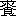

| 金色夜叉 | |
| 尾崎 紅葉 | |
| (2012) | |
金色夜叉
尾崎紅葉
目次
前編
中編
後編
続金色夜叉
続続金色夜叉
新続金色夜叉
前編
第一章
未
だ宵ながら松立てる門は一様に鎖籠
めて、真直
に長く東より西に横
はれる大道
は掃きたるやうに物の影を留
めず、いと寂
くも往来
の絶えたるに、例ならず繁
き車輪
の輾
は、或
は忙
かりし、或
は飲過ぎし年賀の帰来
なるべく、疎
に寄する獅子太鼓
の遠響
は、はや今日に尽きぬる三箇日
を惜むが如く、その哀切
に小
き膓
は断
れぬべし。
元日快晴、二日快晴、三日快晴と誌
されたる日記を瀆
して、この黄昏
より凩
は戦出
でぬ。今は「風吹くな、なあ吹くな」と優き声の宥
むる者無きより、憤
をも増したるやうに飾竹
を吹靡
けつつ、乾
びたる葉を粗
なげに鳴して、吼
えては走行
き、狂ひては引返し、揉
みに揉んで独
り散々に騒げり。微曇
りし空はこれが為に眠
を覚
されたる気色
にて、銀梨子地
の如く無数の星を顕
して、鋭く沍
えたる光は寒気
を発
つかと想
はしむるまでに、その薄明
に曝
さるる夜の街
は殆
ど氷らんとすなり。
人この裏
に立ちて寥々冥々
たる四望の間に、争
か那
の世間あり、社会あり、都あり、町あることを想得べき、九重
の天、八際
の地、始めて混沌
の境
を出
でたりといへども、万物未
だ尽
く化生
せず、風は試
に吹き、星は新に輝ける一大荒原の、何等の旨意も、秩序も、趣味も無くて、唯濫
に邈
く横
はれるに過ぎざる哉
。日の中
は宛然
沸くが如く楽み、謳
ひ、酔
ひ、戯
れ、歓
び、笑ひ、語り、興ぜし人々よ、彼等は儚
くも夏果てし孑孑
の形を歛
めて、今将
何処
に如何
にして在るかを疑はざらんとするも難
からずや。多時
静なりし後
、遙
に拍子木の音は聞えぬ。その響の消ゆる頃忽
ち一点の燈火
は見え初
めしが、揺々
と町の尽頭
を横截
りて失
せぬ。再び寒き風は寂
き星月夜を擅
に吹くのみなりけり。唯有
る小路の湯屋は仕舞を急ぎて、廂間
の下水口より噴出
づる湯気は一団の白き雲を舞立てて、心地悪き微温
の四方に溢
るるとともに、垢臭
き悪気の盛
に迸
るに遭
へる綱引の車あり。勢ひで角
より曲り来にければ、避くべき遑無
くてその中を駈抜
けたり。
「うむ、臭い」
車の上に声して行過ぎし跡には、葉巻の吸殻の捨てたるが赤く見えて煙れり。
「もう湯は抜けるのかな」
「へい、松の内は早仕舞でございます」
車夫のかく答へし後は語
絶えて、車は驀直
に走れり、紳士は二重外套
の袖
を犇
と搔合
せて、獺
の衿皮
の内に耳より深く面
を埋
めたり。灰色の毛皮の敷物の端
を車の後に垂れて、横縞
の華麗
なる浮波織
の蔽膝
して、提灯
の徽章
はＴの花文字を二個
組合せたるなり。行き行きて車はこの小路の尽頭
を北に折れ、稍
広き街
に出
でしを、僅
に走りて又西に入
り、その南側の半程
に箕輪
と記
したる軒燈
を掲げて、剡竹
を飾れる門構
の内に挽入
れたり。玄関の障子に燈影
の映
しながら、格子
は鎖固
めたるを、車夫は打叩
きて、
「頼む、頼む」
奥の方
なる響動
の劇
きに紛れて、取合はんともせざりければ、二人の車夫は声を合せて訪
ひつつ、格子戸を連打
にすれば、やがて急足
の音立てて人は出
で来
ぬ。
円髷
に結ひたる四十ばかりの小
く瘦
せて色白き女の、茶微塵
の糸織の小袖
に黒の奉書紬
の紋付の羽織着たるは、この家の内儀
なるべし。彼の忙
しげに格子を啓
るを待ちて、紳士は優然と内に入
らんとせしが、土間の一面に充満
たる履物
の杖
を立つべき地さへあらざるに遅
へるを、彼は虚
さず勤篤
に下立
ちて、この敬ふべき賓
の為に辛
くも一条の道を開けり。かくて紳士の脱捨てし駒下駄
のみは独
り障子の内に取入れられたり。
（一）の二
箕輪
の奥は十畳の客間と八畳の中の間
とを打抜きて、広間の十個処
に真鍮
の燭台
を据ゑ、五十目掛
の蠟燭
は沖の漁火
の如く燃えたるに、間毎
の天井に白銅鍍
の空気ラムプを点
したれば、四辺
は真昼より明
に、人顔も眩
きまでに耀
き遍
れり。三十人に余んぬる若き男女
は二分
に輪作りて、今を盛
と歌留多遊
を為
るなりけり。蠟燭の焰
と炭火の熱と多人数
の熱蒸
と混じたる一種の温気
は殆
ど凝りて動かざる一間の内を、莨
の煙
と燈火
の油煙とは更
に縺
れて渦巻きつつ立迷へり。込合へる人々の面
は皆赤うなりて、白粉
の薄剝
げたるあり、髪の解
れたるあり、衣
の乱次
く着頽
れたるあり。女は粧
ひ飾りたれば、取乱したるが特
に著るく見ゆるなり。男はシャツの腋
の裂けたるも知らで胴衣
ばかりになれるあり、羽織を脱ぎて帯の解けたる尻を突出すもあり、十の指をば四
まで紙にて結
ひたるもあり。さしも息苦き温気
も、咽
ばさるる煙
の渦も、皆狂して知らざる如く、寧
ろ喜びて罵
り喚
く声、笑頽
るる声、捩合
ひ、踏破
く犇
き、一斉に揚ぐる響動
など、絶間無き騒動の中
に狼藉
として戯
れ遊ぶ為体
は三綱五常
も糸瓜
の皮と地に塗
れて、唯
これ修羅道
を打覆
したるばかりなり。
海上風波の難に遭
へる時、若干
の油を取りて航路に澆
げば、浪
は奇
くも忽
ち鎮
りて、船は九死を出
づべしとよ。今この如何
とも為
べからざる乱脈の座中をば、その油の勢力をもて支配せる女王
あり。猛
びに猛ぶ男たちの心もその人の前には和
ぎて、終
に崇拝せざるはあらず。女たちは皆猜
みつつも畏
を懐
けり。中の間なる団欒
の柱側
に座を占めて、重
げに戴
ける夜会結
に淡紫
のリボン飾
して、小豆鼠
の縮緬
の羽織を着たるが、人の打騒ぐを興あるやうに涼き目を瞪
りて、躬
は淑
かに引繕
へる娘あり。粧飾
より相貌
まで水際立
ちて、凡
ならず媚
を含めるは、色を売るものの仮の姿したるにはあらずやと、始めて彼を見るものは皆疑へり。一番の勝負の果てぬ間に、宮といふ名は普
く知られぬ。娘も数多
居たり。醜
きは、子守の借着したるか、茶番の姫君の戸惑
せるかと覚
きもあれど、中には二十人並、五十人並優れたるもありき。服装
は宮より数等
立派なるは数多
あり。彼はその点にては中の位に過ぎず。貴族院議員の愛娘
とて、最も不器量
を極
めて遺憾
なしと見えたるが、最も綺羅
を飾りて、その起肩
に紋御召
の三枚襲
を被
ぎて、帯は紫根
の七糸
に百合
の折枝
を縒金
の盛上
にしたる、人々これが為に目も眩
れ、心も消えて眉
を皺
めぬ。この外種々
色々の絢爛
なる中に立交
らひては、宮の装
は纔
に暁の星の光を保つに過ぎざれども、彼の色の白さは如何
なる美
き染色
をも奪ひて、彼の整へる面
は如何なる麗
き織物よりも文章
ありて、醜き人たちは如何に着飾らんともその醜きを蔽
ふ能
はざるが如く、彼は如何に飾らざるもその美きを害せざるなり。
袋棚
と障子との片隅
に手炉
を囲みて、蜜柑
を剝
きつつ語
ふ男の一個
は、彼の横顔を恍惚
と遙
に見入りたりしが、遂
に思堪
へざらんやうに呻
き出
せり。
「好
い、好い、全く好い！ 馬士
にも衣裳
と謂
ふけれど、美
いのは衣裳には及ばんね。物それ自
らが美いのだもの、着物などはどうでも可
い、実は何も着てをらんでも可い」
「裸体なら猶
結構だ！」
この強き合槌
撃つは、美術学校の学生なり。
綱曳
にて駈着
けし紳士は姑
く休息の後内儀に導かれて入来
りつ。その後
には、今まで居間に潜みたりし主
の箕輪亮輔
も附添ひたり。席上は入乱れて、ここを先途
と激
き勝負の最中なれば、彼等の来
れるに心着きしは稀
なりけれど、片隅に物語れる二人は逸早
く目を側
めて紳士の風采
を視
たり。
広間の燈影
は入口に立てる三人
の姿を鮮
かに照せり。色白の小
き内儀の口は疳
の為に引歪
みて、その夫の額際
より赭禿
げたる頭顱
は滑
かに光れり。妻は尋常
より小きに、夫は勝
れたる大兵
肥満にて、彼の常に心遣
ありげの面色
なるに引替へて、生きながら布袋
を見る如き福相したり。
紳士は年歯
二十六七なるべく、長高
く、好き程に肥えて、色は玉のやうなるに頰
の辺
には薄紅
を帯びて、額厚く、口大きく、腮
は左右に蔓
りて、面積の広き顔は稍
正方形を成
せり。緩
く波打てる髪を左の小鬢
より一文字に撫付
けて、少しは油を塗りたり。濃
からぬ口髭
を生
して、小
からぬ鼻に金縁
の目鏡
を挾
み、五紋
の黒塩瀬
の羽織に華紋織
の小袖
を裾長
に着做
したるが、六寸の七糸帯
に金鏈子
を垂れつつ、大様
に面
を挙げて座中を眴
したる容
は、実
に光を発
つらんやうに四辺
を払ひて見えぬ。この団欒
の中に彼の如く色白く、身奇麗に、しかも美々
しく装
ひたるはあらざるなり。
「何だ、あれは？」
例の二人の一個
はさも憎さげに呟
けり。
「可厭
な奴！」
唾
吐くやうに言ひて学生はわざと面
を背
けつ。
「お俊
や、一寸
」と内儀は群集
の中よりその娘を手招きぬ。
お俊は両親の紳士を伴へるを見るより、慌忙
く起ちて来
れるが、顔好くはあらねど愛嬌
深く、いと善く父に肖
たり。高島田に結
ひて、肉色縮緬
の羽織に撮
みたるほどの肩揚したり。顔を赧
めつつ紳士の前に跪
きて、慇懃
に頭
を低
れば、彼は纔
に小腰を屈
めしのみ。
「どうぞ此方
へ」
娘は案内せんと待構へけれど、紳士はさして好ましからぬやうに頷
けり。母は歪
める口を怪しげに動して、
「あの、見事な、まあ、御年玉を御戴きだよ」
お俊は再び頭
を低
げぬ。紳士は笑
を含みて目礼せり。
「さあ、まあ、いらつしやいまし」
主
の勧むる傍
より、妻はお俊を促して、お俊は紳士を案内
して、客間の床柱の前なる火鉢
在る方
に伴
れぬ。妻は其処
まで介添
に附きたり。二人は家内
の紳士を遇
ふことの極
めて鄭重
なるを訝
りて、彼の行くより坐るまで一挙一動も見脱
さざりけり。その行く時彼の姿はあたかも左の半面を見せて、団欒
の間を過ぎたりしが、無名指
に輝ける物の凡
ならず強き光は燈火
に照添
ひて、殆
ど正
く見る能
はざるまでに眼
を射られたるに呆
れ惑へり。天上の最も明
なる星は我手
に在りと言はまほしげに、紳士は彼等の未
だ曾
て見ざりし大
さの金剛石
を飾れる黄金
の指環を穿
めたるなり。
お俊は骨牌
の席に復
ると侔
く、密
に隣の娘の膝
を衝
きて口早に咡
きぬ。彼は忙々
く顔を擡
げて紳士の方
を見たりしが、その人よりはその指に耀
く物の異常なるに駭
かされたる体
にて、
「まあ、あの指環は！ 一寸
、金剛石
？」
「さうよ」
「大きいのねえ」
「三百円だつて」
お俊の説明を聞きて彼は漫
に身毛
の弥立
つを覚えつつ、
「まあ！ 好いのねえ」
鱓
の目ほどの真珠を附けたる指環をだに、この幾歳
か念懸
くれども未
だ容易に許されざる娘の胸は、忽
ち或事を思ひ浮べて攻皷
の如く轟
けり。彼は惘然
として殆ど我を失へる間
に、電光の如く隣より伸来
れる猿臂
は鼻の前
なる一枚の骨牌
を引攫
へば、
「あら、貴女
どうしたのよ」
お俊は苛立
ちて彼の横膝
を続けさまに拊
きぬ。
「可
くつてよ、可くつてよ、以来
もう可くつてよ」
彼は始めて空想の夢を覚
して、及ばざる身
の分
を諦
めたりけれども、一旦金剛石
の強き光に焼かれたる心は幾分の知覚を失ひけんやうにて、さしも目覚
かりける手腕
の程も見る見る漸
く四途乱
になりて、彼は敢無
くもこの時よりお俊の為に頼み難
き味方となれり。
かくしてかれよりこれに伝へ、甲より乙に通じて、
「金剛石
！」
「うむ、金剛石だ」
「金剛石⁇」
「成程金剛石！」
「まあ、金剛石よ」
「あれが金剛石？」
「見給へ、金剛石」
「あら、まあ金剛石⁇」
「可感
い金剛石」
「可恐
い光るのね、金剛石」
「三百円の金剛石」
瞬
く間
に三十余人は相呼び相応じて紳士の富を謳
へり。
彼は人々の更互
におのれの方
を眺
むるを見て、その手に形好く葉巻
を持たせて、右手
を袖口
に差入れ、少し懈
げに床柱に靠
れて、目鏡の下より下界を見遍
すらんやうに目配
してゐたり。
かかる目印ある人の名は誰
しも問はであるべきにあらず、洩
れしはお俊の口よりなるべし。彼は富山唯継
とて、一代分限
ながら下谷
区に聞ゆる資産家の家督なり。同じ区なる富山銀行はその父の私設する所にして、市会議員の中
にも富山重平
の名は見出
さるべし。
宮の名の男の方
に持囃
さるる如く、富山と知れたる彼の名は直
に女の口々に誦
ぜられぬ。あはれ一度
はこの紳士と組みて、世に愛
たき宝石に咫尺
するの栄を得ばや、と彼等の心々
に冀
はざるは希
なりき。人若
し彼に咫尺するの栄を得ば、啻
にその目の類無
く楽
さるるのみならで、その鼻までも菫花
の多く齅
ぐべからざる異香
に薫
ぜらるるの幸
を受くべきなり。
男たちは自
から荒
められて、女の挙
りて金剛石
に心牽
さるる気色
なるを、或
は妬
く、或は浅ましく、多少の興を冷
さざるはあらざりけり。独
り宮のみは騒げる体
も無くて、その清
き眼色
はさしもの金剛石と光を争はんやうに、用意深
く、心様
も幽
く振舞へるを、崇拝者は益々懽
びて、我等の慕ひ参らする効
はあるよ、偏
にこの君を奉じて孤忠
を全うし、美と富との勝負を唯一戦に決して、紳士の憎き面
の皮を引剝
かん、と手薬煉
引いて待ちかけたり。されば宮と富山との勢
はあたかも日月
を並懸
けたるやうなり。宮は誰
と組み、富山は誰と組むらんとは、人々の最も懸念
するところなりけるが、鬮
の結果は驚くべき予想外にて、目指されし紳士と美人とは他の三人
とともに一組になりぬ。始め二つに輪作りし人数
はこの時合併して一
の大
なる団欒
に成されたるなり。しかも富山と宮とは隣合
に坐りければ、夜と昼との一時
に来にけんやうに皆狼狽
騒ぎて、忽
ちその隣に自ら社会党と称
ふる一組を出
せり。彼等の主義は不平にして、その目的は破壊なり。則
ち彼等は専
ら腕力を用ゐて或組の果報と安寧
とを妨害せんと為るなり。又その前面
には一人の女に内を守らしめて、屈強の男四人左右に遠征軍を組織し、左翼を狼藉組
と称し、右翼を蹂躙隊
と称するも、実は金剛石の鼻柱を挫
かんと大童
になれるに外
ならざるなり。果せる哉
、件
の組はこの勝負に蓬
き大敗を取りて、人も無げなる紳士もさすがに鼻白
み、美き人は顔を赧
めて、座にも堪
ふべからざるばかりの面皮
を欠
されたり。この一番にて紳士の姿は不知
見えずなりぬ。男たちは万歳を唱へけれども、女の中には掌
の玉を失へる心地
したるも多かりき。散々に破壊され、狼藉され、蹂躙されし富山は、余りにこの文明的ならざる遊戯に怖
をなして、密
に主
の居間に逃帰れるなりけり。
鬘
を被
たるやうに梳
りたりし彼の髪は棕櫚箒
の如く乱れて、環
の隻
捥
げたる羽織の紐
は、手長猿
の月を捉
へんとする状
して揺曳
と垂
れり。主は見るよりさも慌
てたる顔して、
「どう遊ばしました。おお、お手から血が出てをります」
彼はやにはに煙管
を捨てて、忽
にすべからざらんやうに急遽
と身を起せり。
「ああ、酷
い目に遭
つた。どうもああ乱暴ぢや為様が無い。火事装束ででも出掛けなくつちやとても立切
れないよ。馬鹿にしてゐる！ 頭を二つばかり撲
れた」
手の甲の血を吮
ひつつ富山は不快なる面色
して設
の席に着きぬ。予
て用意したれば、海老茶
の紋縮緬
の裀
の傍
に七宝焼
の小判形
の大手炉
を置きて、蒔絵
の吸物膳
をさへ据ゑたるなり。主は手を打鳴して婢
を呼び、大急
に銚子と料理とを誂
へて、
「それはどうも飛でもない事を。外
に何処
もお怪我
はございませんでしたか」
「そんなに有られて耐
るものかね」
為
う事無さに主も苦笑
せり。
「唯今
絆創膏
を差上げます。何しろ皆書生でございますから随分乱暴でございませう。故々
御招
申しまして甚
だ恐入りました。もう彼地
へは御出陣にならんが宜
うございます。何もございませんがここで何卒
御寛
り」
「ところがもう一遍行つて見やうかとも思ふの」
「へえ、又いらつしやいますか」
物は言はで打笑
める富山の腮
は愈
展
れり。早くもその意を得てや破顔
せる主
の目は、薄
の切疵
の如くほとほと有か無きかになりぬ。
「では御意
に召したのが、へえ？」
富山は益
笑
を湛
へたり。
「ございましたらう、さうでございませうとも」
「何故
な」
「何故も無いものでございます。十目
の見るところぢやございませんか」
富山は頷
きつつ、
「さうだらうね」
「あれは宜
うございませう」
「一寸
好いね」
「まづその御意
でお熱いところをお一盞
。不満家
の貴方
が一寸好いと有仰
る位では、余程
尤物
と思はなければなりません。全く寡
うございます」
倉皇
入来
れる内儀は思ひも懸けず富山を見て、
「おや、此方
にお在
あそばしたのでございますか」
彼は先の程より台所に詰
きりて、中入
の食物の指図
などしてゐたるなりき。
「酷
く負けて迯
げて来ました」
「それは好く迯げていらつしやいました」
例の歪
める口を窄
めて内儀は空々
しく笑ひしが、忽
ち彼の羽織の紐
の偏
断
れたるを見尤
めて、環
の失せたりと知るより、慌
て驚きて起たんとせり、如何
にとなればその環は純金製のものなればなり。富山は事も無げに、
「なあに、宜
い」
「宜いではございません。純金
では大変でございます」
「なあに、可
いと言ふのに」と聞きも訖
らで彼は広間の方
へ出
でて行けり。
「時にあれの身分はどうかね」
「さやう、悪い事はございませんが......」
「が、どうしたのさ」
「が、大
した事はございませんです」
「それはさうだらう。然
し凡
そどんなものかね」
「旧
は農商務省に勤めてをりましたが、唯今
では地所や家作
などで暮してゐるやうでございます。どうか小金も有るやうな話で、鴫沢隆三
と申して、直
隣町
に居りまするが、極
手堅く小体
に遣
つてをるのでございます」
「はあ、知れたもんだね」
我
は顔
に頤
を搔撫
づれば、例の金剛石
は燦然
と光れり。
「それでも可いさ。然し嫁
れやうか、嗣子
ぢやないかい」
「さやう、一人娘のやうに思ひましたが」
「それぢや窮
るぢやないか」
「私
は悉
い事は存じませんから、一つ聞いて見ませうで」
程無く内儀は環を捜得
て帰来
にけるが、誰
が悪戯
とも知らで耳搔
の如く引展
されたり。主は彼に向ひて宮の家内
の様子を訊
ねけるに、知れる一遍
は語りけれど、娘は猶能
く知るらんを、後
に招きて聴くべしとて、夫婦は頻
に觴
を侑
めけり。
富山唯継の今宵ここに来
りしは、年賀にあらず、骨牌遊
にあらず、娘の多く聚
れるを機として、嫁選
せんとてなり。彼は一昨年
の冬英吉利
より帰朝するや否や、八方に手分
して嫁を求めけれども、器量望
の太甚
しければ、二十余件の縁談皆意に称
はで、今日が日までもなほその事に齷齪
して已
まざるなり。当時取急ぎて普請せし芝
の新宅は、未
だ人の住着かざるに、はや日に黒
み、或所は雨に朽ちて、薄暗き一間に留守居の老夫婦の額を鳩
めては、寂しげに彼等の昔を語るのみ。
第二章
骨牌
の会は十二時に迨
びて終りぬ。十時頃より一人起ち、二人起ちて、見る間に人数
の三分の一強を失ひけれども、猶
飽かで残れるものは景気好く勝負を続けたり。富山の姿を隠したりと知らざる者は、彼敗走して帰りしならんと想へり。宮は会の終まで居たり。彼若
疾
く還
りたらんには、恐
く踏留るは三分の一弱に過ぎざりけんを、と我物顔に富山は主と語合へり。
彼に心を寄せし輩
は皆彼が夜深
の帰途
の程を気遣
ひて、我願
くは何処
までも送らんと、絶
か念
ひに念ひけれど、彼等の深切
は無用にも、宮の帰る時一人の男附添ひたり。その人は高等中学の制服を着たる二十四五の学生なり。金剛石
に亜
いでは彼の挙動の目指
れしは、座中に宮と懇意に見えたるは彼一人なりければなり。この一事の外
は人目を牽
くべき点も無く、彼は多く語らず、又は躁
がず、始終慎
くしてゐたり。終までこの両個
の同伴
なりとは露顕せざりき。さあらんには余所々々
しさに過ぎたればなり。彼等の打連れて門
を出
づるを見て、始めて失望せしもの寡
からず。
宮は鳩羽鼠
の頭巾
を被
りて、濃浅黄地
に白く中形
模様ある毛織のシォールを絡
ひ、学生は焦茶の外套
を着たるが、身を窄
めて吹来る凩
を遣過
しつつ、遅れし宮の辿着
くを待ちて言出せり。
「宮
さん、あの金剛石
の指環を穿
めてゐた奴はどうだい、可厭
に気取つた奴ぢやないか」
「さうねえ、だけれど衆
があの人を目の敵
にして乱暴するので気の毒だつたわ。隣合つてゐたもんだから私まで酷
い目に遭
されてよ」
「うむ、彼奴
が高慢な顔をしてゐるからさ。実は僕も横腹
を二つばかり突いて遣つた」
「まあ、酷いのね」
「ああ云ふ奴は男の目から見ると反吐
が出るやうだけれど、女にはどうだらうね、あんなのが女の気に入るのぢやないか」
「私は可厭
だわ」
「芬々
と香水の匂
がして、金剛石
の金の指環を穿めて、殿様然たる服装
をして、好
いに違無
いさ」
学生は嘲
むが如く笑へり。
「私は可厭よ」
「可厭なものが組になるものか」
「組は鬮
だから為方
が無いわ」
「鬮だけれど、組に成つて可厭さうな様子も見えなかつたもの」
「そんな無理な事を言つて！」
「三百円の金剛石ぢや到底僕等の及ぶところにあらずだ」
「知らない！」
宮はシォールを揺上
げて鼻の半
まで掩隠
しつ。
「ああ寒い！」
男は肩を峙
てて直
と彼に寄添へり。宮は猶
黙して歩めり。
「ああ寒い‼」
宮はなほ答へず。
「ああ寒い※［＃感嘆符三つ、23-5］
」
彼はこの時始めて男の方
を見向きて、
「どうしたの」
「ああ寒い」
「あら可厭ね、どうしたの」
「寒くて耐
らんからその中へ一処
に入れ給へ」
「どの中へ」
「シォールの中へ」
「可笑
い、可厭だわ」
男は逸早
く彼の押へしシォールの片端
を奪ひて、その中
に身を容
れたり。宮
は歩み得ぬまでに笑ひて、
「あら貫一
さん。これぢや切なくて歩けやしない。ああ、前面
から人が来てよ」
かかる戯
を作
して憚
らず、女も為すままに信
せて咎
めざる彼等の関繫
は抑
も如何
。事情ありて十年来鴫沢に寄寓
せるこの間貫一
は、此年
の夏大学に入
るを待ちて、宮が妻
せらるべき人なり。
第三章
間貫一の十年来鴫沢の家に寄寓せるは、怙
る所無くて養はるるなり。母は彼の幼
かりし頃世を去りて、父は彼の尋常中学を卒業するを見るに及ばずして病死せしより、彼は哀嘆
の中に父を葬るとともに、己
が前途の望をさへ葬らざる可
からざる不幸に遭
へり。父在りし日さへ月謝の支出の血を絞るばかりに苦
き瘦世帯
なりけるを、当時彼なほ十五歳ながら間の戸主は学ぶに先
ちて食
ふべき急に迫られぬ。幼き戸主の学ぶに先ちては食ふべきの急、食ふべきに先ちては葬
すべき急、猶
これに先ちては看護医薬の急ありしにあらずや。自活すべくもあらぬ幼
き者の如何
にしてこれ等の急を救得
しか。固
より貫一が力の能
ふべきにあらず、鴫沢隆三の身一個
に引承
けて万端の世話せしに因
るなり。孤児
の父は隆三の恩人にて、彼は聊
かその旧徳に報ゆるが為に、啻
にその病めりし時に扶助せしのみならず、常に心着
けては貫一の月謝をさへ間
支弁したり。かくて貧き父を亡
ひし孤児
は富める後見
を得て鴫沢の家に引取られぬ。隆三は恩人に報ゆるにその短き生時
を以
て慊
らず思ひければ、とかくはその忘形見を天晴
人と成して、彼の一日も忘れざりし志を継がんとせるなり。
亡
き人常に言ひけるは、苟
くも侍の家に生れながら、何の面目
ありて我子貫一をも人に侮
らすべきや。彼は学士となして、願くは再び四民
の上
に立たしめん。貫一は不断にこの言
を以
て警
められ、隆三は会ふ毎にまたこの言を以
て喞
たれしなり。彼は言
ふ遑
だに無くて暴
に歿
りけれども、その前常に口にせしところは明かに彼の遺言なるべきのみ。
されば貫一が鴫沢の家内に於ける境遇は、決して厄介者として陰
に疎
まるる如き憂目
に遭
ふにはあらざりき。憖
ひ継子
などに生れたらんよりは、かくて在りなんこそ幾許
か幸
は多からんよ、と知る人は噂
し合へり。隆三夫婦は実
に彼を恩人の忘形見として疎
ならず取扱ひけるなり。さばかり彼の愛せらるるを見て、彼等は貫一をば娘の婿にせむとすならんと想へる者もありしかど、当時彼等は構へてさる心ありしにはあらざりけるも、彼の篤学なるを見るに及びて、漸
くその心は出
で来
て、彼の高等中学校に入
りし時、彼等の了簡は始めて定りぬ。
貫一は篤学のみならず、性質も直
に、行
も正
かりければ、この人物を以つて学士の冠を戴
かんには、誠に獲易
からざる婿なるべし、と夫婦は私
に喜びたり。この身代
を譲られたりとて、他姓
を冒
して得謂
はれぬ屈辱を忍ばんは、彼の屑
しと為ざるところなれども、美き宮を妻に為るを得ば、この身代も屈辱も何か有らんと、彼はなかなか夫婦に増したる懽
を懐
きて、益
学問を励みたり。宮も貫一をば憎からず思へり。されど恐くは貫一の思へる半
には過ぎざらん。彼は自らその色好
を知ればなり。世間の女の誰
か自らその色好を知らざるべき、憂ふるところは自ら知るに過
るに在り。謂
ふ可くんば、宮は己
が美しさの幾何
値するかを当然に知れるなり。彼の美しさを以てして纔
に箇程
の資産を嗣
ぎ、類多き学士風情
を夫に有たんは、決して彼が所望
の絶頂にはあらざりき。彼は貴人の奥方の微賤
より出
でし例
寡
からざるを見たり。又は富人の醜き妻を厭
ひて、美き妾
に親むを見たり。才だにあらば男立身は思のままなる如く、女は色をもて富貴
を得べしと信じたり。なほ彼は色を以て富貴を得たる人たちの若干
を見たりしに、その容
の己
に如
かざるものの多きを見出
せり。剰
へ彼は行く所にその美しさを唱はれざるはあらざりき。なほ一件
最も彼の意を強うせし事あり。そは彼が十七の歳
に起りし事なり。当時彼は明治音楽院に通ひたりしに、ヴァイオリンのプロフェッサアなる独逸
人は彼の愛らしき袂
に艶書
を投入れぬ。これ素
より仇
なる恋にはあらで、女夫
の契
を望みしなり。殆
ど同時に、院長の某
は年四十を踰
えたるに、先年その妻を喪
ひしをもて再び彼を娶
らんとて、密
に一室に招きて切なる心を打明かせし事あり。
この時彼の小
き胸は破れんとするばかり轟
けり。半
は曾
て覚えざる可羞
の為に、半は遽
に大
なる希望
の宿りたるが為に。彼はここに始めて己
の美しさの寡
くとも奏任以上の地位ある名流をその夫
に値
ひすべきを信じたるなり。彼を美く見たるは彼の教師と院長とのみならで、牆
を隣れる男子部
の諸生の常に彼を見んとて打騒ぐをも、宮は知らざりしにあらず。
若
かのプロフェッサアに添はんか、或
は四十の院長に従はんか、彼の栄誉ある地位は、学士を婿にして鴫沢の後を嗣
ぐの比にはあらざらんをと、一旦抱
ける希望
は年と共に太りて、彼は始終昼ながら夢みつつ、今にも貴き人又は富める人又は名ある人の己
を見出
して、玉の輿
を舁
せて迎に来
るべき天縁の、必ず廻到
らんことを信じて疑はざりき。彼のさまでに深く貫一を思はざりしは全くこれが為のみ。されども決して彼を嫌
へるにはあらず、彼と添はばさすがに楽
からんとは念
へるなり。如此
く決定
にそれとは無けれど又有りとし見ゆる箒木
の好運を望みつつも、彼は怠らず貫一を愛してゐたり。貫一は彼の己を愛する外にはその胸の中に何もあらじとのみ思へるなりけり。
第四章
漆の如き闇
の中
に貫一の書斎の枕時計は十時を打ちぬ。彼は午後四時より向島
の八百松
に新年会ありとて未
だ還
らざるなり。
宮は奥より手ラムプを持ちて入来
にけるが、机の上なる書燈を点
し了
れる時、婢
は台十能に火を盛りたるを持来
れり。宮はこれを火鉢
に移して、
「さうして奥のお鉄瓶
も持つて来ておくれ。ああ、もう彼方
は御寝
になるのだから」
久
く人気
の絶えたりし一間の寒
は、今俄
に人の温き肉を得たるを喜びて、直
ちに咬
まんとするが如く膚
に薄
れり。宮は慌忙
く火鉢に取付きつつ、目を挙げて書棚
に飾れる時計を見たり。
夜の闇
く静なるに、燈
の光の独
り美き顔を照したる、限無く艶
なり。松の内とて彼は常より着飾れるに、化粧をさへしたれば、露を帯びたる花の梢
に月のうつろへるが如く、背後
の壁に映れる黒き影さへ香滴
るるやうなり。
金剛石
と光を争ひし目は惜気
も無く瞪
りて時計の秒
を刻むを打目戍
れり。火に翳
せる彼の手を見よ、玉の如くなり。さらば友禅模様ある紫縮緬
の半襟
に韜
まれたる彼の胸を想へ。その胸の中
に彼は今如何
なる事を思へるかを想へ。彼は憎からぬ人の帰来
を待佗
ぶるなりけり。
一時
又寒
の太甚
きを覚えて、彼は時計より目を放つとともに起ちて、火鉢の対面
なる貫一が裀
の上に座を移せり。こは彼の手に縫ひしを貫一の常に敷くなり、貫一の敷くをば今夜彼の敷くなり。
若
やと聞着けし車の音は漸
く近
きて、益
轟
きて、竟
に我門
に停
りぬ。宮は疑無
しと思ひて起たんとする時、客はいと酔
ひたる声して物言へり。貫一は生下戸
なれば嘗
て酔
ひて帰りし事あらざれば、宮は力無く又坐りつ。時計を見れば早や十一時に垂
んとす。
門
の戸引啓
けて、酔ひたる足音の土間に踏入りたるに、宮は何事とも分かず唯慌
ててラムプを持ちて出
でぬ。台所より婢
も、出合
へり。
足の踏所
も覚束無
げに酔ひて、帽は落ちなんばかりに打傾
き、ハンカチイフに裹
みたる折を左に挈
げて、山車
人形のやうに揺々
と立てるは貫一なり。面
は今にも破れぬべく紅
に熱して、舌の乾
くに堪
へかねて連
に空唾
を吐きつつ、
「遅かつたかね。さあ御土産
です。還
つてこれを細君に遣
る。何ぞ仁
なるや」
「まあ、大変酔つて！ どうしたの」
「酔つて了
つた」
「あら、貫一
さん、こんな所に寐
ちや困るわ。さあ、早くお上りなさいよ」
「かう見えても靴が脱げない。ああ酔つた」
仰様
に倒れたる貫一の脚
を搔抱
きて、宮は辛
くもその靴を取去りぬ。
「起きる、ああ、今起きる。さあ、起きた。起きたけれど、手を牽
いてくれなければ僕には歩けませんよ」
宮は婢
に燈
を把
らせ、自らは貫一の手を牽かんとせしに、彼は踉
きつつ肩に縋
りて遂
に放さざりければ、宮はその身一つさへ危
きに、やうやう扶
けて書斎に入
りぬ。
裀
の上に舁下
されし貫一は頽
るる体
を机に支へて、打仰
ぎつつ微吟せり。
「君に勧む、金縷
の衣
を惜むなかれ。君に勧む、須
く少年の時を惜むべし。花有り折るに堪
へなば直
に折る須
し。花無きを待つて空
く枝を折ることなかれ」
「貫一さん、どうしてそんなに酔つたの？」
「酔つてゐるでせう、僕は。ねえ、宮
さん、非常に酔つてゐるでせう」
「酔つてゐるわ。苦
いでせう」
「然矣
、苦いほど酔つてゐる。こんなに酔つてゐるに就
いては大
いに訳が有るのだ。さうして又宮さんなるものが大いに介抱して可い訳が有るのだ。宮さん！」
「可厭
よ、私は、そんなに酔つてゐちや。不断嫌
ひの癖に何故
そんなに飲んだの。誰に飲
されたの。端山
さんだの、荒尾さんだの、白瀬さんだのが附いてゐながら、酷
いわね、こんなに酔
して。十時にはきつと帰ると云ふから私は待つてゐたのに、もう十一時過よ」
「本当に待つてゐてくれたのかい、宮
さん。謝
、多謝
！ 若
それが事実であるならばだ、僕はこのまま死んでも恨みません。こんなに酔されたのも、実はそれなのだ」
彼は宮の手を取りて、情に堪へざる如く握緊
めつ。
「二人の事は荒尾より外に知る者は無いのだ。荒尾が又決して喋
る男ぢやない。それがどうして知れたのか、衆
が知つてゐて......僕は実に驚いた。四方八方から祝盃
だ祝盃だと、十も二十も一度に猪口
を差されたのだ。祝盃などを受ける覚
は無いと言つて、手を引籠
めてゐたけれど、なかなか衆
聴かないぢやないか」
宮は窃
に笑
を帯びて余念なく聴きゐたり。
「それぢや祝盃の主意を変へて、仮初
にもああ云ふ美人と一所
に居て寝食を俱
にすると云ふのが既に可羨
い。そこを祝すのだ。次には、君も男児
なら、更に一歩を進めて、妻君に為るやうに十分運動したまへ。十年も一所に居てから、今更人に奪
られるやうな事があつたら、独
り間貫一一
個人の恥辱ばかりではない、我々朋友
全体の面目にも関する事だ。我々朋友ばかりではない、延
いて高等中学の名折
にもなるのだから、是非あの美人を君が妻君にするやうに、これは我々が心を一
にして結
の神に禱
つた酒だから、辞退するのは礼ではない。受けなかつたら却
つて神罰が有ると、弄謔
とは知れてゐるけれど、言草
が面白かつたから、片端
から引受けて呷々
遣付
けた。
宮さんと夫婦に成れなかつたら、はははははは高等中学の名折になるのだと。恐入つたものだ。何分宜
く願ひます」
「可厭
よ、もう貫一さんは」
「友達中にもさう知れて見ると、立派に夫婦にならなければ、弥
よ僕の男が立たない義
だ」
「もう極
つてゐるものを、今更......」
「さうでないです。この頃翁
さんや姨
さんの様子を見るのに、どうも僕は......」
「そんな事は決
して無いわ、邪推だわ」
「実は翁さんや姨さんの了簡
はどうでも可い、宮さんの心一つなのだ」
「私の心は極つてゐるわ」
「さうかしらん？」
「さうかしらんて、それぢや余
りだわ」
貫一は酔
を支へかねて宮が膝
を枕に倒れぬ。宮は彼が火の如き頰
に、額に、手を加へて、
「水を上げませう。あれ、又寐
ちや......貫一さん、貫一さん」
寔
に愛の潔
き哉
、この時は宮が胸の中にも例の汚れたる希望
は跡を絶ちて彼の美き目は他に見るべきもののあらざらんやうに、その力を貫一の寐顔に鍾
めて、富も貴きも、乃至
有
ゆる利慾の念は、その膝に覚ゆる一団の微温の為に溶
されて、彼は唯妙
に香
き甘露
の夢に酔
ひて前後をも知らざるなりけり。
諸
の可忌
き妄想
はこの夜の如く眼
を閉ぢて、この一間
に彼等の二人よりは在らざる如く、彼は世間に別人の影を見ずして、又この明
なる燈火
の光の如きものありて、特
に彼等をのみ照すやうに感ずるなり。
第五章
或日箕輪
の内儀は思も懸けず訪来
りぬ。その娘のお俊と宮とは学校朋輩
にて常に往来
したりけれども、未
だ家
と家との交際はあらざるなり。彼等の通学せし頃さへ親々は互に識
らで過ぎたりしに、今は二人の往来
も漸
く踈
くなりけるに及びて、俄
にその母の来
れるは、如何
なる故
にか、と宮も両親
も怪
き事に念
へり。
凡
そ三時間の後彼は帰行
きぬ。
先に怪みし家内は彼の来りしよりもその用事の更に思懸
けざるに驚けり。貫一は不在なりしかばこの珍
き客来
のありしを知らず、宮もまた敢
て告げずして、二日と過ぎ、三日と過ぎぬ。その日より宮は少
く食して、多く眠らずなりぬ。貫一は知らず、宮はいよいよ告げんとは為
ざりき。この間に両親
は幾度
と無く談合しては、その事を決しかねてゐたり。
彼の陰に在りて起れる事、又は見るべからざる人の心に浮べる事どもは、貫一の知る因
もあらねど、片時
もその目の忘れざる宮の様子の常に変れるを見出
さんは難
き事にあらず。さも無かりし人の顔の色の遽
に光を失ひたるやうにて、振舞
など別
けて力無く、笑ふさへいと打湿
りたるを。
宮が居間と謂
ふまでにはあらねど、彼の簞笥
手道具等
置きたる小座敷あり。ここには火燵
の炉を切りて、用無き人の来ては迭
に冬籠
する所にも用ゐらる。彼は常にここに居て針仕事するなり。倦
めば琴
をも弾
くなり。彼が手玩
と見ゆる狗子柳
のはや根を弛
み、真
の打傾きたるが、鮟鱇切
の水に埃
を浮べて小机の傍
に在り。庭に向へる肱懸窓
の明
きに敷紙
を披
げて、宮は膝
の上に紅絹
の引解
を載せたれど、針は持たで、懶
げに火燵に靠
れたり。
彼は少
く食して多く眠らずなりてよりは、好みてこの一間に入
りて、深く物思ふなりけり。両親
は仔細
を知れるにや、この様子をば怪まんともせで、唯彼の為
すままに委
せたり。
この日貫一は授業始
の式のみにて早く帰来
にけるが、下
座敷には誰
も見えで、火燵
の間に宮の咳
く声して、後は静に、我が帰りしを知らざるよと思ひければ、忍足に窺寄
りぬ。襖
の僅
に啓
きたる隙
より差覗
けば、宮は火燵に倚
りて硝子
障子を眺
めては俯目
になり、又胸痛きやうに仰ぎては太息吐
きて、忽
ち物の音を聞澄すが如く、美き目を瞠
るは、何をか思凝
すなるべし。人の窺
ふと知らねば、彼は口もて訴ふるばかりに心の苦悶
をその状
に顕
して憚
らざるなり。
貫一は異
みつつも息を潜めて、猶
彼の為
んやうを見んとしたり。宮は少時
ありて火燵に入りけるが、遂
に櫓
に打俯
しぬ。
柱に身を倚せて、斜
に内を窺ひつつ貫一は眉
を顰
めて思惑
へり。
彼は如何
なる事ありてさばかり案じ煩
ふならん。さばかり案じ煩ふべき事を如何なれば我に明さざるならん。その故
のあるべく覚えざるとともに、案じ煩ふ事のあるべきをも彼は信じ得ざるなりけり。
かく又案じ煩へる彼の面
も自
ら俯
きぬ。問はずして知るべきにあらずと思定
めて、再び内を差覗
きけるに、宮は猶打俯してゐたり。何時
か落ちけむ、蒔絵
の櫛
の零
れたるも知らで。
人の気勢
に驚きて宮の振仰ぐ時、貫一は既にその傍
に在り。彼は慌
てて思頽
るる気色
を蔽
はんとしたるが如し。
「ああ、吃驚
した。何時
御帰んなすつて」
「今帰つたの」
「さう。些
も知らなかつた」
宮はおのれの顔の頻
に眺めらるるを眩
ゆがりて、
「何をそんなに視
るの、可厭
、私は」
されども彼は猶目を放たず、宮はわざと打背
きて、裁片畳
の内を撈
せり。
「宮
さん、お前さんどうしたの。ええ、何処
か不快
のかい」
「何ともないのよ。何故
？」
かく言ひつつ益
急に撈
せり。貫一は帽を冠
りたるまま火燵に片肱掛
けて、斜
に彼の顔を見遣
りつつ、
「だから僕は始終水臭いと言ふんだ。さう言へば、直
に疑深
いの、神経質だのと言ふけれど、それに違無いぢやないか」
「だつて何ともありもしないものを......」
「何ともないものが、惘然
考へたり、太息
を吐
いたりして鬱
いでゐるものか。僕は先之
から唐紙
の外で立つて見てゐたんだよ。病気かい、心配でもあるのかい。言つて聞
したつて可いぢやないか」
宮は言ふところを知らず、纔
に膝の上なる紅絹
を手弄
るのみ。
「病気なのかい」
彼は僅
に頭
を掉
りぬ。
「それぢや心配でもあるのかい」
彼はなほ頭を掉れば、
「ぢやどうしたと云ふのさ」
宮は唯胸の中
を車輪
などの廻
るやうに覚ゆるのみにて、誠にも詐
にも言
を出
すべき術
を知らざりき。彼は犯せる罪の終
に秘
む能
はざるを悟れる如き恐怖
の為に心慄
けるなり。如何
に答へんとさへ惑へるに、傍
には貫一の益詰
らんと待つよと思へば、身は搾
らるるやうに迫来
る息の隙
を、得も謂
はれず冷
かなる汗の流れ流れぬ。
「それぢやどうしたのだと言ふのに」
貫一の声音
は漸
く苛立
ちぬ。彼の得言はぬを怪しと思へばなり。宮は驚きて不覚
に言出
せり。
「どうしたのだか私にも解らないけれど、......私はこの二三日どうしたのだか......変に色々な事を考へて、何だか世の中がつまらなくなつて、唯悲くなつて来るのよ」
呆
れたる貫一は瞬
もせで耳を傾
けぬ。
「人間と云ふものは今日かうして生きてゐても、何時
死んで了
ふか解らないのね。かうしてゐれば、可楽
な事もある代
に辛
い事や、悲い事や、苦
い事なんぞが有つて、二つ好い事は無し、考れば考るほど私は世の中が心細いわ。不図
さう思出
したら、毎日そんな事ばかり考へて、可厭
な心地
になつて、自分でもどうか為
たのかしらんと思ふけれど、私病気のやうに見えて？」
目を閉ぢて聴
ゐし貫一は徐
に眶
を開くとともに眉
を顰
めて、
「それは病気だ！」
宮は打萎
れて頭
を垂れぬ。
「然
し心配する事は無いさ。気に為ては可かんよ。可いかい」
「ええ、心配しはしません」
異
く沈みたるその声の寂しさを、如何
に貫一は聴きたりしぞ。
「それは病気の所為
だ、脳でも不良
のだよ。そんな事を考へた日には、一日だつて笑つて暮せる日は有りはしない。固
より世の中と云ふものはさう面白い義
のものぢやないので、又人の身の上ほど解らないものは無い。それはそれに違無いのだけれど、衆
が皆
そんな了簡
を起して御覧な、世界中御寺ばかりになつて了
ふ。儚
いのが世の中と覚悟した上で、その儚い、つまらない中で切
ては楽
を求めやうとして、究竟
我々が働いてゐるのだ。考へて鬱
いだところで、つまらない世の中に儚い人間と生れて来た以上は、どうも今更為方が無いぢやないか。だから、つまらない世の中を幾分
か面白く暮さうと考へるより外は無いのさ。面白く暮すには、何か楽
が無ければならない。一事
かうと云ふ楽があつたら決して世の中はつまらんものではないよ。宮
さんはそれでは楽と云ふものが無いのだね。この楽があればこそ生きてゐると思ふ程の楽は無いのだね」
宮は美き目を挙げて、求むるところあるが如く偸
に男の顔を見たり。
「きつと無いのだね」
彼は笑
を含みぬ。されども苦しげに見えたり。
「無い？」
宮の肩頭
を捉
りて貫一は此方
に引向けんとすれば、為
すままに彼は緩
く身を廻
したれど、顔のみは可羞
く背
けてゐたり。
「さあ、無いのか、有るのかよ」
肩に懸けたる手をば放さで連
に揺
るるを、宮は銕
の槌
もて撃懲
さるるやうに覚えて、安き心もあらず。冷
なる汗は又一時
流出
でぬ。
「これは怪
しからん！」
宮は危
みつつ彼の顔色を候
ひぬ。常の如く戯るるなるべし。その面
は和
ぎて一点の怒気だにあらず、寧
ろ唇頭
には笑を包めるなり。
「僕などは一件
大きな大きな楽があるので、世の中が愉快で愉快で耐
らんの。一日が経
つて行くのが惜くて惜くてね。僕は世の中がつまらない為にその楽を拵
へたのではなくて、その楽の為にこの世の中に活きてゐるのだ。若
しこの世の中からその楽を取去つたら、世の中は無い！ 貫一といふ者も無い！ 僕はその楽と生死
を俱
にするのだ。宮
さん、可羨
いだらう」
宮は忽
ち全身の血の氷れるばかりの寒さに堪
へかねて打顫
ひしが、この心の中を覚
られじと思へば、弱る力を励して、
「可羨
いわ」
「可羨ければ、お前さんの事だから分けてあげやう」
「何卒
」
「ええ悉皆
遣
つて了
へ！」
彼は外套
の衣兜
より一袋のボンボンを取出
して火燵
の上に置けば、余力
に袋の口は弛
みて、紅白の玉は珊々
と乱出
でぬ。こは宮の最も好める菓子なり。
第六章
その翌々日なりき、宮は貫一に勧められて行きて医の診察を受けしに、胃病なりとて一瓶
の水薬
を与へられぬ。貫一は信
に胃病なるべしと思へり。患者は必ずさる事あらじと思ひつつもその薬を服したり。懊悩
として憂
に堪
へざらんやうなる彼の容体
に幾許
の変も見えざりけれど、その心に水と火の如きものありて相剋
する苦痛は、益
募りて止
ざるなり。
貫一は彼の憎からぬ人ならずや。怪
むべし、彼はこの日頃さしも憎からぬ人を見ることを懼
れぬ。見ねばさすがに見まほしく思ひながら、面
を合すれば冷汗
も出づべき恐怖
を生ずるなり。彼の情有
る言
を聞けば、身をも斫
らるるやうに覚ゆるなり。宮は彼の優き心根
を見ることを恐れたり。宮が心地勝
れずなりてより、彼に対する貫一の優しさはその平生
に一層を加へたれば、彼は死を覓
むれども得ず、生を求むれども得ざらんやうに、悩乱してほとほとその堪
ふべからざる限に至りぬ。
遂
に彼はこの苦
を両親に訴へしにやあらん、一日
母と娘とは遽
に身支度して、忙々
く車に乗りて出でぬ。彼等は小
からぬ一個
の旅鞄
を携へたり。
大風
の凪
ぎたる迹
に孤屋
の立てるが如く、侘
しげに留守せる主
の隆三は独
り碁盤に向ひて碁経
を披
きゐたり。齢
はなほ六十に遠けれど、頭
は夥
き白髪
にて、長く生ひたる髯
なども六分は白く、容
は瘦
せたれど未
だ老の衰
も見えず、眉目温厚
にして頗
る古井
波無きの風あり。
やがて帰来
にける貫一は二人の在らざるを怪みて主
に訊
ねぬ。彼は徐
に長き髯を撫
でて片笑みつつ、
「二人はの、今朝新聞を見ると急に思着いて、熱海へ出掛けたよ。何でも昨日
医者が湯治が良いと言うて切
に勧めたらしいのだ。いや、もう急の思着
で、脚下
から鳥の起
つやうな騒をして、十二時三十分の滊車
で。ああ、独
で寂いところ、まあ茶でも淹
れやう」
貫一は有る可からざる事のやうに疑へり。
「はあ、それは。何だか夢のやうですな」
「はあ、私
もそんな塩梅
で」
「然
し、湯治は良いでございませう。幾日
ほど逗留
のお心算
で？」
「まあどんなだか四五日と云ふので、些
の着のままで出掛けたのだが、なあに直
に飽きて了
うて、四五日も居られるものか、出
養生より内
養生の方が楽だ。何か旨
い物でも食べやうぢやないか、二人で、なう」
貫一は着更
へんとて書斎に還りぬ。宮の遺
したる筆の蹟
などあらんかと思ひて、求めけれども見えず。彼の居間をも尋ねけれど在らず。急ぎ出でしなればさもあるべし、明日は必ず便
あらんと思飜
せしが、さすがに心楽まざりき。彼の六時間学校に在りて帰来
れるは、心の瘦
するばかり美き俤
に饑
ゑて帰来れるなり。彼は空
く饑ゑたる心を抱
きて慰むべくもあらぬ机に向へり。
「実に水臭いな。幾許
急いで出掛けたつて、何とか一言
ぐらゐ言遺
いて行
きさうなものぢやないか。一寸
其処
へ行つたのぢやなし、四五日でも旅だ。第一言遺く、言遺かないよりは、湯治に行くなら行くと、始
に話が有りさうなものだ。急に思着いた？ 急に思着いたつて、急に行かなければならん所ぢやあるまい。俺の帰るのを待つて、話をして、明日
行くと云ふのが順序だらう。四五日ぐらゐの離別
には顔を見ずに行つても、あの人は平気なのかしらん。
女と云ふ者は一体男よりは情が濃
であるべきなのだ。それが濃でないと為れば、愛してをらんと考へるより外は無い。豈
にあの人が愛してをらんとは考へられん。又万々
そんな事は無い。けれども十分に愛してをると云ふほど濃ではないな。
元来あの人の性質は冷淡さ。それだから所謂
『娘らしい』ところが余り無い。自分の思ふやうに情が濃でないのもその所為
か知らんて。子供の時分から成程さう云ふ傾向
は有
つてゐたけれど、今のやうに太甚
くはなかつたやうに考へるがな。子供の時分にさうであつたなら、今ぢや猶更
でなければならんのだ。それを考へると疑ふよ、疑はざるを得ない！
それに引替へて自分だ、自分の愛してゐる度は実に非常なもの、殆
ど......殆どではない、全くだ、全く溺
れてゐるのだ。自分でもどうしてこんなだらうと思ふほど溺れてゐる！
これ程自分の思つてゐるのに対しても、も少し情が篤
くなければならんのだ。或時などは実に水臭い事がある。今日の事なども随分酷
い話だ。これが互に愛してゐる間
の仕草だらうか。深く愛してゐるだけにかう云ふ事を為
れると実に憎い。
小説的かも知れんけれど、八犬伝
の浜路
だ、信乃
が明朝
は立つて了ふと云ふので、親の目を忍んで夜更
に逢
ひに来る、あの情合
でなければならない。いや、妙だ！ 自分の身の上も信乃に似てゐる。幼少から親に別れてこの鴫沢の世話になつてゐて、其処
の娘と許嫁
......似てゐる、似てゐる。
然し内の浜路は困る、信乃にばかり気を揉
して、余り憎いな、そでない為方
だ。これから手紙を書いて思ふさま言つて遣
らうか。憎いは憎いけれど病気ではあるし、病人に心配させるのも可哀
さうだ。
自分は又神経質に過るから、思過
を為るところも大きにあるのだ。それにあの人からも不断言はれる、けれども自分が思過
であるか、あの人が情
が薄いのかは一件
の疑問だ。
時々さう思ふ事がある、あの人の水臭い仕打の有るのは、多少
か自分を侮
つてゐるのではあるまいか。自分は此家
の厄介者、あの人は家附の娘だ。そこで自
ら主
と家来と云ふやうな考が始終有つて、......否
、それもあの人に能
く言れる事だ、それくらゐなら始から許しはしない、好いと思へばこそかう云ふ訳に、......さうだ、さうだ、それを言出すと太
く慍
られるのだ、一番それを慍るよ。勿論
そんな様子の些少
でも見えた事は無い。自分の僻見
に過ぎんのだけれども、気が済まないから愚痴も出るのだ。然し、若
もあの人の心にそんな根性が爪の垢
ほどでも有つたらば、自分は潔くこの縁は切つて了ふ。立派に切つて見せる！ 自分は愛情の俘
とはなつても、未
だ奴隷になる気は無い。或
はこの縁を切つたなら自分はあの人を忘れかねて焦死
に死ぬかも知れん。死なんまでも発狂するかも知れん。かまはん！ どうならうと切れて了ふ。切れずに措
くものか。
それは自分の僻見
で、あの人に限つてはそんな心は微塵
も無いのだ。その点は自分も能
く知つてゐる。けれども情が濃
でないのは事実だ、冷淡なのは事実だ。だから、冷淡であるから情が濃でないのか。自分に対する愛情がその冷淡を打壊
すほどに熱しないのか。或
は熱し能
はざるのが冷淡の人の愛情であるのか。これが、研究すべき問題だ」
彼は意
に満たぬ事ある毎に、必ずこの問題を研究せざるなけれども、未だ曾
て解釈し得ざるなりけり。今日はや如何
に解釈せんとすらん。
（六）の二
翌日果して熱海より便
はありけれど、僅
に一枚の端書
をもて途中の無事と宿とを通知せるに過ぎざりき。宛名は隆三と貫一とを並べて、宮の手蹟
なり。貫一は読了
ると斉
しく片々
に引裂きて捨ててけり。宮の在らば如何
にとも言解くなるべし。彼の親
く言解
かば、如何に打腹立
ちたりとも貫一の心の釈
けざることはあらじ。宮の前には常に彼は慍
をも、恨をも、憂
をも忘るるなり。今は可懐
き顔を見る能はざる失望に加ふるに、この不平に遭
ひて、しかも言解く者のあらざれば、彼の慍
は野火の飽くこと知らで燎
くやうなり。
この夕
隆三は彼に食後の茶を薦
めぬ。一人佗
しければ留
めて物語
はんとてなるべし。されども貫一の屈托顔
して絶えず思の非
ぬ方
に馳
する気色
なるを、
「お前どうぞ為
なすつたか。うむ、元気が無いの」
「はあ、少し胸が痛みますので」
「それは好くない。劇
く痛みでもするかな」
「いえ、なに、もう宜
いのでございます」
「それぢや茶は可
くまい」
「頂戴
します」
かかる浅ましき慍
を人に移さんは、甚
だ謂無
き事なり、と自ら制して、書斎に帰りて憖
ひ心を傷めんより、人に対して姑
く憂
を忘るるに如
かじと思ひければ、彼は努めて寛
がんとしたれども、動
もすれば心は空
になりて、主
の語
を聞逸
さむとす。
今日文
の来て細々
と優き事など書聯
ねたらば、如何
に我は嬉
からん。なかなか同じ処に居て飽かず顔を見るに易
へて、その楽
は深かるべきを。さては出行
きし恨も忘られて、二夜三夜
は遠
かりて、せめてその文を形見に思続けんもをかしかるべきを。
彼はその身の卒
に出行
きしを、如何
に本意無
く我の思ふらんかは能
く知るべきに。それを知らば一筆
書きて、など我を慰めんとは為
ざる。その一筆を如何に我の嬉く思ふらんかをも能く知るべきに。我を可憐
しと思へる人の何故
にさは為
ざるにやあらん。かくまでに情篤
からぬ恋の世に在るべきか。疑ふべし、疑ふべし、と貫一の胸は又乱れぬ。主の声に驚かされて、彼は忽
ちその事を忘るべき吾
に復
れり。
「ちと話したい事があるのだが、や、誠に妙な話で、なう」
笑ふにもあらず、顰
むにもあらず、稍
自ら嘲
むに似たる隆三の顔は、燈火
に照されて、常には見ざる異
き相を顕
せるやうに、貫一は覚ゆるなりき。
「はあ、どういふ御話ですか」
彼は長き髯
を忙
く揉
みては、又頤
の辺
より徐
に撫下
して、先
打出
さん語
を案じたり。
「お前の一身上の事に就
いてだがの」
纔
にかく言ひしのみにて、彼は又遅
ひぬ、その髯
は虻
に苦しむ馬の尾のやうに揮
はれつつ、
「いよいよお前も今年の卒業だつたの」
貫一は遽
に敬はるる心地して自
と膝
を正せり。
「で、私
もまあ一安心したと云ふもので、幾分かこれでお前の御父様
に対して恩返
も出来たやうな訳、就いてはお前も益
勉強してくれんでは困るなう。未だこの先大学を卒業して、それから社会へ出て相応の地位を得るまでに仕上げなければ、私も鼻は高くないのだ。どうか洋行の一つも為
せて、指折の人物に為
たいと考へてゐるくらゐ、未
だ未だこれから両肌
を脱いで世話をしなければならんお前の体だ、なう」
これを聞
ける貫一は鉄繩
をもて縛
められたるやうに、身の重きに堪
へず、心の転
た苦
きを感じたり。その恩の余りに大いなるが為に、彼はその中
に在りてその中に在ることを忘れんと為る平生
を省みたるなり。
「はい。非常な御恩に預りまして、考へて見ますると、口では御礼の申しやうもございません。愚父
がどれ程の事を致したか知りませんが、なかなかこんな御恩返を受けるほどの事が出来るものでは有りません。愚父の事は措
きまして、私は私で、この御恩はどうか立派に御返し申したいと念
つてをります。愚父の亡
りましたあの時に、此方
で引取つて戴
かなかつたら、私は今頃何に成つてをりますか、それを思ひますと、世間に私ほど幸
なものは恐
く無いでございませう」
彼は十五の少年の驚くまでに大人びたる己
を見て、その着たる衣
を見て、その坐れる裀
を見て、やがて美き宮と共にこの家の主
となるべきその身を思ひて、漫
に涙を催せり。実
に七千円の粧奩
を随へて、百万金も購
ふ可からざる恋女房を得べき学士よ。彼は小買の米を風呂敷に提げて、その影の如く瘦せたる犬とともに月夜を走りし少年なるをや。
「お前がさう思うてくれれば私
も張合がある。就いては改めてお前に頼
があるのだが、聴いてくれるか」
「どういふ事ですか、私で出来ます事ならば、何なりと致します」
彼はかく潔く答ふるに憚
らざりけれど、心の底には危むところ無きにしもあらざりき。人のかかる言
を出
す時は、多く能
はざる事を強
ふる例
なればなり。
「外でも無いがの、宮の事だ、宮を嫁に遣
らうかと思つて」
見るに堪
へざる貫一の驚愕
をば、せめて乱さんと彼は慌忙
く語
を次ぎぬ。
「これに就いては私も種々
と考へたけれど、大きに思ふところもあるで、いつそあれは遣つて了
うての、お前はも少
しの事だから大学を卒業して、四五年も欧羅巴
へ留学して、全然
仕上げたところで身を固めるとしたらどうかな」
汝
の命を与へよと逼
らるる事あらば、その時の人の思は如何
なるべき！ 可恐
きまでに色を失へる貫一は空
く隆三の面
を打目戍
るのみ。彼は太
く困
じたる体
にて、長き髯をば揉みに揉みたり。
「お前に約束をして置いて、今更変換
を為るのは、何とも気の毒だが、これに就いては私も大きに考へたところがあるので、必ずお前の為にも悪いやうには計はんから、可いかい、宮は嫁に遣る事にしてくれ、なう」
待てども貫一の言
を出
さざれば、主
は寡
からず惑へり。
「なう、悪く取つてくれては困るよ、あれを嫁に遣るから、それで我家
とお前との縁を切つて了ふと云ふのではない、可いかい。大
した事は無いがこの家は全然
お前に譲るのだ、お前は矢張
私の家督よ、なう。で、洋行も為せやうと思ふのだ。必ず悪く取つては困るよ。
約束をした宮をの、余所
へ遣ると云へば、何かお前に不足でもあるやうに聞えるけれど、決してさうした訳ではないのだから、其処
はお前が能
く承知してくれんければ困る、誤解されては困る。又お前にしても、学問を仕上げて、なう、天晴
の人物に成るのが第一の希望
であらう。その志を遂
げさへ為れば、宮と一所になる、ならんはどれ程の事でもないのだ。なう、さうだらう、然
しこれは理窟
で、お前も不服かも知れん。不服と思ふから私も頼むのだ。お前に頼
が有ると言うたのはこの事だ。
従来
もお前を世話した、後来
も益世話をせうからなう、其処
に免じて、お前もこの頼は聴いてくれ」
貫一は戦
く唇
を咬緊
めつつ、故
ら緩舒
に出
せる声音
は、怪
くも常に変れり。
「それぢや翁様
の御都合で、どうしても宮
さんは私に下さる訳には参らんのですか」
「さあ、断
つて遣れんと云ふ次第ではないが、お前の意はどうだ。私の頼は聴ずとも、又自分の修業の邪魔にならうとも、そんな貪着
は無しに、何でもかでも宮が欲しいと云ふのかな」
「............」
「さうではあるまい」
「............」
得言はぬ貫一が胸には、理
に似たる彼の理不尽を憤りて、責むべき事、詰
るべき事、罵
るべき、言破るべき事、辱
むべき事の数々は沸
くが如く充満
ちたれど、彼は神にも勝
れる恩人なり。理非を問はずその言
には逆ふべからずと思へば、血出づるまで舌を咬
みても、敢
て言はじと覚悟せるなり。
彼は又思へり。恩人は恩を枷
に如此
く逼
れども、我はこの枷の為に屈せらるべきも、彼は如何
なる斧
を以てか宮の愛をば割かんとすらん。宮が情
は我が思ふままに濃
ならずとも、我を棄つるが如きさばかり薄き情にはあらざるを。彼だに我を棄てざらんには、枷も理不尽も恐るべきかは。頼むべきは宮が心なり。頼まるるも宮が心也
と、彼は可憐
き宮を思ひて、その父に対する慍
を和
げんと勉
めたり。
我は常に宮が情
の濃
ならざるを疑へり。あだかも好しこの理不尽ぞ彼が愛の力を試むるに足るなる。善し善し、盤根錯節
に遇
はずんば。
「嫁に遣ると有仰
るのは、何方
へ御遣
しになるのですか」
「それは未
だ確
とは極
らんがの、下谷
に富山銀行と云ふのがある、それ、富山重平な、あれの息子の嫁に欲いと云ふ話があるので」
それぞ箕輪の骨牌会
に三百円の金剛石
を炫
かせし男にあらずやと、貫一は陰
に嘲笑
へり。されど又余りにその人の意外なるに駭
きて、やがて又彼は自ら笑ひぬ。これ必ずしも意外ならず、苟
くも吾が宮の如く美きを、目あり心あるものの誰
かは恋ひざらん。独
り怪しとも怪きは隆三の意
なる哉
。我
十年の約は軽々
く破るべきにあらず、猶
謂無
きは、一人娘を出
して嫁
せしめんとするなり。戯
るるにはあらずや、心狂へるにはあらずや。貫一は寧
ろかく疑ふをば、事の彼の真意に出でしを疑はんより邇
かるべしと信じたりき。
彼は競争者の金剛石
なるを聞きて、一度
は汚
され、辱
められたらんやうにも怒
を作
せしかど、既に勝負は分明
にして、我は手を束
ねてこの弱敵の自ら僵
るるを看
んと思へば、心稍
落ゐぬ。
「は、はあ、富山重平、聞いてをります、偉い財産家で」
この一言に隆三の面
は熱くなりぬ。
「これに就いては私
も大きに考へたのだ、何
に為
ろ、お前との約束もあるものなり、又一人娘の事でもあり、然
し、お前の後来
に就
いても、宮の一身に就いてもの、又私たちは段々取る年であつて見れば、その老後だの、それ等の事を考へて見ると、この鴫沢の家には、お前も知つての通り、かうと云ふ親類も無いで、何かに就けて誠に心細いわ、なう。私たちは追々年を取るばかり、お前たちは若
しと云ふもので、ここに可頼
い親類が有れば、どれ程心丈夫だか知れんて、なう。そこで富山ならば親類に持つても可愧
からん家格
だ。気の毒な思をしてお前との約束を変易
するのも、私たちが一人娘を他
へ遣つて了ふのも、究竟
は銘々の為に行末好かれと思ふより外は無いのだ。
それに、富山からは切
つての懇望で、無理に一人娘を貰ふと云ふ事であれば、息子夫婦は鴫沢の子同様に、富山も鴫沢も一家
のつもりで、決して鴫沢家を疎
には為
まい。娘が内に居なくなつて不都合があるならば、どの様にもその不都合の無いやうには計はうからと、なう、それは随分事を分けた話で。
決して慾ではないが、良
い親類を持つと云ふものは、人で謂
へば取
も直
さず良い友達で、お前にしてもさうだらう、良い友達が有れば、万事の話合手になる、何かの力になる、なう、謂はば親類は一家
の友達だ。
お前がこれから世の中に出るにしても、大相
な便宜になるといふもの。それやこれや考へて見ると、内に置かうよりは、遣つた方が、誰
の為彼の為ではない。四方八方が好いのだから、私
も決心して、いつそ遣らうと思ふのだ。
私の了簡
はかう云ふのだから、必ず悪く取つてくれては困るよ、なう。私だとて年効
も無く事を好んで、何為
に若いものの不為
になれと思ふものかな。お前も能
く其処
を考へて見てくれ。
私もかうして頼むからは、お前の方の頼も聴かう。今年卒業したら直
に洋行でもしたいと思ふなら、又さう云ふ事に私も一番
奮発しやうではないか。明日にも宮と一処になつて、私たちを安心さしてくれるよりは、お前も私もも少
しのところを辛抱して、いつその事博士
になつて喜ばしてくれんか」
彼はさも思ひのままに説完
せたる面色
して、寛
に髯
を撫
でてゐたり。
貫一は彼の説進むに従ひて、漸
くその心事の火を覩
るより明
なるを得たり。彼が千言万語の舌を弄
して倦
まざるは、畢竟
利の一字を掩
はんが為のみ。貧する者の盗むは世の習ながら、貧せざるもなほ盗まんとするか。我も穢
れたるこの世に生れたれば、穢れたりとは自ら知らで、或
は穢れたる念を起し、或は穢れたる行
を為
すことあらむ。されど自ら穢れたりと知りて自ら穢すべきや。妻を売りて博士を買ふ！ これ豈
穢れたるの最も大なる者ならずや。
世は穢れ、人は穢れたれども、我は常に我恩人の独
り汚
に染
みざるを信じて疑はざりき。過ぐれば夢より淡き小恩をも忘れずして、貧き孤子
を養へる志は、これを証して余
あるを。人の浅ましきか、我の愚なるか、恩人は酷
くも我を欺きぬ。今は世を挙げて皆穢れたるよ。悲めばとて既に穢れたる世をいかにせん。我はこの時この穢れたる世を喜ばんか。さしもこの穢れたる世に唯
一つ穢れざるものあり。喜ぶべきものあるにあらずや。貫一は可憐
き宮が事を思へるなり。
我の愛か、死をもて脅
すとも得て屈すべからず。宮が愛か、某
の帝
の冠
を飾れると聞く世界無双
の大金剛石
をもて購
はんとすとも、争
でか動し得べき。我と彼との愛こそ淤泥
の中
に輝く玉の如きものなれ、我はこの一つの穢れざるを抱
きて、この世の渾
て穢れたるを忘れん。
貫一はかく自ら慰めて、さすがに彼の巧言を憎し可恨
しとは思ひつつも、枉
げてさあらぬ体
に聴きゐたるなりけり。
「それで、この話は宮
さんも知つてゐるのですか」
「薄々
は知つてゐる」
「では未
だ宮
さんの意見は御聞にならんので？」
「それは、何だ、一寸
聞いたがの」
「宮さんはどう申してをりました」
「宮か、宮は別にどうといふ事は無いのだ。御父様
や御母様
の宜
いやうにと云ふので、宮の方には異存は無いのだ、あれにもすつかり訳を説いて聞かしたところが、さう云ふ次第ならばと、漸
く得心がいつたのだ」
断じて詐
なるべしと思ひながらも、貫一の胸は跳
りぬ。
「はあ、宮さんは承知を為ましたので？」
「さう、異存は無いのだ。で、お前も承知してくれ、なう。一寸聞けば無理のやうではあるが、その実少しも無理ではないのだ。私
の今話した訳はお前にも能く解つたらうが、なう」
「はい」
「その訳が解つたら、お前も快く承知してくれ、なう。なう、貫一」
「はい」
「それではお前も承知をしてくれるな。それで私も多きに安心した。悉
い事は何
れ又寛緩
話を為やう。さうしてお前の頼も聴かうから、まあ能く種々
考へて置くが可
いの」
「はい」
第七章
熱海は東京に比して温きこと十余度なれば、今日漸
く一月の半
を過ぎぬるに、梅林
の花は二千本の梢
に咲乱れて、日に映
へる光は玲瓏
として人の面
を照し、路
を埋
むる幾斗
の清香
は凝
りて掬
ぶに堪
へたり。梅の外
には一木
無く、処々
の乱石の低く横
はるのみにて、地は坦
に氈
を鋪
きたるやうの芝生
の園の中
を、玉の砕けて迸
り、練
の裂けて飜
る如き早瀬の流ありて横さまに貫けり。後に負へる松杉の緑は麗
に霽
れたる空を攢
してその頂
に方
りて懶
げに懸
れる雲は眠
るに似たり。習
との風もあらぬに花は頻
に散りぬ。散る時に軽
く舞ふを鶯
は争ひて歌へり。
宮は母親と連立ちて入来
りぬ。彼等は橋を渡りて、船板の牀几
を据ゑたる木
の下
を指して緩
く歩めり。彼の病は未
だ快からぬにや、薄仮粧
したる顔色も散りたる葩
のやうに衰へて、足の運
も怠
げに、動
すれば頭
の低
るるを、思出
しては努めて梢を眺
むるなりけり。彼の常として物案
すれば必ず唇
を咬
むなり。彼は今頻
に唇を咬みたりしが、
「御母
さん、どうしませうねえ」
いと好く咲きたる枝を飽かず見上げし母の目は、この時漸く娘に転
りぬ。
「どうせうたつて、お前の心一つぢやないか。初発
にお前が適
きたいといふから、かう云ふ話にしたのぢやないかね。それを今更......」
「それはさうだけれど、どうも貫一
さんの事が気になつて。御父
さんはもう貫一さんに話を為
すつたらうか、ねえ御母
さん」
「ああ、もう為すつたらうとも」
宮は又唇を咬みぬ。
「私は、御母さん、貫一さんに顔が合されないわね。だから若
し適
くのなら、もう逢
はずに直
と行つて了
ひたいのだから、さう云ふ都合にして下さいな。私はもう逢はずに行くわ」
声は低くなりて、美き目は湿
へり。彼は忘れざるべし、その涙を拭
へるハンカチイフは再び逢はざらんとする人の形見なるを。
「お前がそれ程に思ふのなら、何で自分から適
きたいとお言ひなのだえ。さう何時
までも気が迷つてゐては困るぢやないか。一日経
てば一日だけ話が運ぶのだから、本当にどうとも確然
極
めなくては可
けないよ。お前が可厭
なものを無理にお出
といふのぢやないのだから、断るものなら早く断らなければ、だけれど、今になつて断ると云つたつて......」
「可
いわ。私は適くことは適くのだけれど、貫一さんの事を考へると情無くなつて......」
貫一が事は母の寝覚にも苦むところなれば、娘のその名を言ふ度
に、犯せる罪をも歌はるる心地して、この良縁の喜ぶべきを思ひつつも、さすがに胸を開きて喜ぶを得ざるなり。彼は強
ひて宮を慰めんと試みつ。兼ねては自ら慰むるなるべし。
「お父
さんからお話があつて、貫一さんもそれで得心がいけば、済む事だし、又お前が彼方
へ適つて、末々まで貫一さんの力になれば、お互の仕合
と云ふものだから、其処
を考へれば、貫一さんだつて......、それに男と云ふものは思切
が好いから、お前が心配してゐるやうなものではないよ。これなり遇
はずに行くなんて、それはお前却
つて善くないから、矢張
逢つて、丁
と話をして、さうして清く別れるのさ。この後とも末長く兄弟で往来
をしなければならないのだもの。
いづれ今日か明日
には御音信
があつて、様子が解らうから、さうしたら還つて、早く支度に掛らなければ」
宮は牀几
に倚
りて、半
は聴き、半は思ひつつ、膝
に散来る葩
を拾ひては、おのれの唇に代へて連
に咬砕
きぬ。鶯
の声の絶間を流の音は咽
びて止まず。
宮は何心無く面
を挙
るとともに稍
隔てたる木
の間隠
に男の漫行
する姿を認めたり。彼は忽
ち眼
を着けて、木立は垣の如く、花は幕の如くに遮
る隙
を縫ひつつ、姑
くその影を逐
ひたりしが、遂
に誰
をや見出
しけん。慌忙
く母親に咡
けり。彼は急に牀几を離れて五六歩
進行
きしが、彼方
よりも見付けて、逸早
く呼びぬ。
「其処
に御出
でしたか」
その声は静なる林を動して響きぬ。宮は聞くと斉
く、恐れたる風情
にて牀几の端
に竦
りつ。
「はい、唯今
し方
参つたばかりでございます。好くお出掛でございましたこと」
母はかく挨拶
しつつ彼を迎へて立てり。宮は其方
を見向きもやらで、彼の急足
に近
く音を聞けり。
母子
の前に顕
れたる若き紳士は、その誰
なるやを説かずもあらなん。目覚
く大
なる金剛石
の指環を輝かせるよ。柄
には緑色の玉
を獅子頭
に彫
みて、象牙
の如く瑩潤
に白き杖
を携へたるが、その尾
をもて低き梢の花を打落し打落し、
「今お留守へ行きまして、此処
だといふのを聞いて追懸
けて来た訳です。熱いぢやないですか」
宮はやうやう面
を向けて、さて淑
に起ちて、恭
く礼するを、唯継は世にも嬉しげなる目して受けながら、なほ飽くまでも倨
り高
るを忘れざりき。その張りたる腮
と、への字に結べる薄唇
と、尤異
き金縁
の目鏡
とは彼が尊大の風に尠
からざる光彩を添ふるや疑
無し。
「おや、さやうでございましたか、それはまあ。余り好い御天気でございますから、ぶらぶらと出掛けて見ました。真
に今日
はお熱いくらゐでございます。まあこれへお掛遊ばして」
母は牀几を払へば、宮は路
を開きて傍
に佇
めり。
「貴方
がたもお掛けなさいましな。今朝です、東京から手紙で、急用があるから早速帰るやうに――と云ふのは、今度私が一寸した会社を建てるのです。外国へ此方
の塗物を売込む会社。これは去年中からの計画で、いよいよこの三四月頃には立派に出来上る訳でありますから、私も今は随分忙
い体
、なにしろ社長ですからな。それで私が行かなければ解らん事があるので、呼びに来た。で、翌
の朝立たなければならんのであります」
「おや、それは急な事で」
「貴方がたも一所
にお立ちなさらんか」
彼は宮の顔を偸視
つ。宮は物言はん気色
もなくて又母の答へぬ。
「はい、難有
う存じます」
「それとも未
だ御在
ですか。宿屋に居るのも不自由で、面白くもないぢやありませんか。来年あたりは一つ別荘でも建てませう。何の難
は無い事です。地面を広く取つてその中に風流な田舎家
を造るです。食物などは東京から取寄せて、それでなくては実は保養には成らん。家が出来てから寛緩
遊びに来るです」
「結構でございますね」
「お宮さんは、何ですか、かう云ふ田舎の静な所が御好なの？」
宮は笑
を含みて言はざるを、母は傍
より、
「これはもう遊ぶ事なら嫌
はございませんので」
「はははははは誰もさうです。それでは以後
盛
にお遊
びなさい。どうせ毎日用は無いのだから、田舎でも、東京でも西京
でも、好きな所へ行つて遊ぶのです。船は御嫌
ですか、ははあ。船が平気だと、支那
から亜米利加
の方を見物がてら今度旅行を為て来るのも面白いけれど。日本の内ぢや遊山
に行
いたところで知れたもの。どんなに贅沢
を為たからと云つて」
「御帰
になつたら一日赤坂の別荘の方へ遊びにお出下
さい、ねえ。梅が好いのであります。それは大きな梅林が有つて、一本々々種の違ふのを集めて二百本もあるが、皆老木ばかり。この梅などは全
で為方
が無い！ こんな若い野梅
、薪
のやうなもので、庭に植ゑられる花ぢやない。これで熱海の梅林も凄
い。是非内のをお目に懸けたいでありますね、一日遊びに来て下さい。御馳走
を為ますよ。お宮さんは何が所好
ですか、ええ、一番所好なものは？」
彼は陰
に宮と語らんことを望めるなり、宮はなほ言はずして可羞
しげに打笑
めり。
「で、何日
御帰でありますか。明朝
一所に御発足
にはなりませんか。此地
にさう長く居なければならんと云ふ次第ではないのでせう、そんなら一所にお立ちなすつたらどうであります」
「はい、難有
うございますが、少々宅の方の都合がございまして、二三日内
には音信
がございます筈
で、その音信
を待ちまして、実は帰ることに致してございますものですから、折角の仰せですが、はい」
「ははあ、それぢやどうもな」
唯継は例の倨
りて天を睨
むやうに打仰
ぎて、杖の獅子頭
を撫廻
しつつ、少時
思案する体
なりしが、やをら白羽二重
のハンカチイフを取出
して、片手に一揮
揮
るよと見れば鼻
を拭
へり。菫花
の香
を咽
ばさるるばかりに薫
じ遍
りぬ。
宮も母もその鋭き匂
に驚けるなり。
「ああと、私これから少し散歩しやうと思ふのであります。これから出て、流に沿
いて、田圃
の方を。私未
だ知らんけれども、余程景色が好いさう。御一所にと云ふのだが、大分跡程
が有るから、貴方
は御迷惑でありませう。二時間ばかりお宮さんを御貸し下さいな。私一人で歩いてもつまらない。お宮さんは胃が不良
のだから散歩は極
めて薬、これから行つて見ませう、ねえ」
彼は杖を取直してはや立たんとす。
「はい。難有
うございます。お前お供をお為
かい」
宮の遅
ふを見て、唯継は故
に座を起
てり。
「さあ行つて見ませう、ええ、胃病の薬です。さう因循
してゐては可
けない」
つと寄りて軽
く宮の肩を拊
ちぬ。宮は忽
ち面
を紅
めて、如何
にとも為
ん術
を知らざらんやうに立惑
ひてゐたり。母の前をも憚
らぬ男の馴々
しさを、憎しとにはあらねど、己
の仂
なきやうに慙
づるなりけり。
得も謂
はれぬその仇無
さの身に浸遍
るに堪
へざる思は、漫
に唯継の目の中
に顕
れて異
き独笑
となりぬ。この仇無
き娧
しらしき、美き娘の柔
き手を携へて、人無き野道の長閑
なるを語
ひつつ行かば、如何
ばかり楽からんよと、彼ははや心も空
になりて、
「さあ、行つて見ませう。御母
さんから御許
が出たから可いではありませんか、ねえ、貴方
、宜
いでありませう」
母は宮の猶羞
づるを見て、
「お前お出
かい、どうお為
だえ」
「貴方、お出かいなどと有仰
つちや可けません。お出なさいと命令を為
すつて下さい」
宮も母も思はず笑へり。唯継も後
れじと笑へり。
又人の入来
る気勢
なるを宮は心着きて窺
ひしに、姿は見えずして靴の音のみを聞けり。梅見る人か、あらぬか、用ありげに忙
く踏立つる足音なりき。
「ではお前
お供をおしな」
「さあ、行きませう。直
其処
まででありますよ」
宮は小
き声して、
「御母
さんも一処に御出
なさいな」
「私かい、まあお前お供をおしな」
母親を伴ひては大いに風流ならず、頗
る妙ならずと思へば、唯継は飽くまでこれを防がんと、
「いや、御母さんには却
つて御迷惑です。道が良くないから御母さんにはとても可けますまい。実際貴方には切
つてお勧め申されない。御迷惑は知れてゐる。何も遠方へ行くのではないのだから、御母さんが一処でなくても可いぢやありませんか、ねえ。私折角思立つたものでありますから、それでは一寸其処までで可いから附合つて下さい。貴女が可厭
だつたら直
に帰りますよ、ねえ。それはなかなか好い景色だから、まあ私に騙
されたと思つて来て御覧なさいな、ねえ」
この時忙
しげに聞えし靴音ははや止
みたり。人は出去
りしにあらで、七八間彼方
なる木蔭に足を停
めて、忍びやかに様子を窺ふなるを、此方
の三人
は誰
も知らず。彳
める人は高等中学の制服の上に焦茶の外套
を着て、肩には古りたる象皮の学校鞄
を掛けたり。彼は間貫一にあらずや。
再び靴音は高く響きぬ。その驟
なると近きとに驚きて、三人
は始めて音する方
を見遣
りつ。
花の散りかかる中を進来
つつ学生は帽を取りて、
「姨
さん、参りましたよ」
母子
は動顚
して殆
ど人心地
を失ひぬ。母親は物を見るべき力もあらず呆
れ果てたる目をば空
く瞪
りて、少時
は石の如く動かず、宮は、あはれ生きてあらんより忽
ち消えてこの土と成了
らんことの、せめて心易
さを思ひつつ、その淡白
き唇
を啖裂
かんとすばかりに咬
みて咬みて止
まざりき。
想ふに彼等の驚愕
と恐怖
とはその殺せし人の計らずも今生きて来
れるに会へるが如きものならん。気も不覚
なれば母は譫語
のやうに言出
せり。
「おや、お出
なの」
宮は些少
なりともおのれの姿の多く彼の目に触れざらんやうにと冀
へる如く、木蔭
に身を側
めて、打過
む呼吸
を人に聞かれじとハンカチイフに口元を掩
ひて、見るは苦
けれども、見ざるも辛
き貫一の顔を、俯
したる額越
に窺
ひては、又唯継の気色
をも気遣
へり。
唯継は彼等の心々にさばかりの大波瀾
ありとは知らざれば、聞及びたる鴫沢の食客
の来
れるよと、例の金剛石
の手を見よがしに杖を立てて、誇りかに梢を仰ぐ腮
を張れり。
貫一は今回
の事も知れり、彼の唯継なる事も知れり、既にこの場の様子をも知らざるにはあらねど、言ふべき事は後にぞ犇
と言はん、今は姑
く色にも出さじと、裂けもしぬべき無念の胸をやうやう鎮
めて、苦
き笑顔
を作りてゐたり。
「宮
さんの病気はどうでございます」
宮は耐
りかねて窃
にハンカチイフを咬緊
めたり。
「ああ、大きに良いので、もう二三日内
には帰らうと思つてね。お前さん能
く来られましたね。学校の方は？」
「教場の普請を為るところがあるので、今日半日と明日
明後日
と休課
になつたものですから」
「おや、さうかい」
唯継と貫一とを左右に受けたる母親の絶体絶命は、過
ちて野中の古井
に落ちたる人の、沈みも果てず、上
りも得為
ず、命の綱と危
くも取縋
りたる草の根を、鼠
の来
りて嚙
むに遭
ふと云へる比喩
に最能
く似たり。如何
に為べきかと或
は懼
れ、或は惑ひたりしが、終
にその免
るまじきを知りて、彼はやうやう胸を定めつ。
「丁度宅から人が参りましてございますから、甚
だ勝手がましうございますが、私等
はこれから宿へ帰りますでございますから、いづれ後程伺ひに出ますでございますが......」
「ははあ、それでは何でありますか、明朝
は御一所に帰れるやうな都合になりますな」
「はい、話の模様に因
りましては、さやう願はれるかも知れませんので、いづれ後程には是非伺ひまして、......」
「成程、それでは残念ですが、私も散歩は罷
めます。散歩は罷めてこれから帰ります。帰つてお待申してゐますから、後に是非お出下
さいよ。宜
いですか、お宮さん、それでは後にきつとお出
なさいよ。誠に今日は残念でありますな」
彼は行かんとして、更に宮の傍
近く寄来
て、
「貴方
、きつと後
にお出
なさいよ、ええ」
貫一は瞬
も為
で視
てゐたり。宮は窮して彼に会釈さへ為
かねつ。娘気の可羞
にかくあるとのみ思へる唯継は、益
寄添ひつつ、舌怠
きまでに語
を和
げて、
「宜
いですか、来なくては可けませんよ。私待つてゐますから」
貫一の眼
は燃ゆるが如き色を作
して、宮の横顔を睨着
けたり。彼は懼
れて傍目
をも転
らざりけれど、必ずさあるべきを想ひて独
り心を慄
かせしが、猶
唯継の如何
なることを言出でんも知られずと思へば、とにもかくにもその場を繕ひぬ。母子の為には幾許
の幸
なりけん。彼は貫一に就いて半点の疑ひをも容
れず、唯饜
くまでも娧
き宮に心を遺
して行けり。
その後影
を透
すばかりに目戍
れる貫一は我を忘れて姑
く佇
めり。両個
はその心を測りかねて、言
も出
でず、息をさへ凝して、空
く早瀬の音の聒
きを聴くのみなりけり。
やがて此方
を向きたる貫一は、尋常
ならず激して血の色を失へる面上
に、多からんとすれども能
はずと見ゆる微少
の笑
を漏して、
「宮
さん、今の奴
はこの間の骨牌
に来てゐた金剛石
だね」
宮は俯
きて唇を咬みぬ。母は聞かざる為
して、折しも啼
ける鶯
の木
の間
を窺
へり。貫一はこの体
を見て更に嗤笑
ひつ。
「夜見たらそれ程でもなかつたが、昼間見ると実に気障
な奴だね、さうしてどうだ、あの高慢ちきの面
は！」
「貫一さん」母は卒
に呼びかけたり。
「はい」
「お前さん翁
さんから話はお聞きでせうね、今度の話は」
「はい」
「ああ、そんなら可いけれど。不断のお前さんにも似合はない、そんな人の悪口
などを言ふものぢやありませんよ」
「はい」
「さあ、もう帰りませう。お前さんもお草臥
だらうから、お湯にでも入つて、さうして未
だ御午餐
前なのでせう」
「いえ、滊車
の中で鮨
を食べました」
三人
は俱
に歩始
めぬ。貫一は外套
の肩を払はれて、後
を捻向
けば宮と面
を合せたり。
「其処
に花が粘
いてゐたから取つたのよ」
「それは難有
う※［＃感嘆符三つ、64-13］
」
第八章
打霞
みたる空ながら、月の色の匂滴
るるやうにして、微白
き海は縹渺
として限を知らず、譬
へば無邪気なる夢を敷けるに似たり。寄せては返す波の音も眠
げに怠りて、吹来る風は人を酔はしめんとす。打連れてこの浜辺を逍遙
せるは貫一と宮となりけり。
「僕は唯
胸が一杯で、何も言ふことが出来ない」
五歩六歩
行きし後宮はやうやう言出でつ。
「堪忍
して下さい」
「何も今更謝
ることは無いよ。一体今度の事は翁
さん姨
さんの意から出たのか、又はお前さんも得心であるのか、それを聞けば可
いのだから」
「............」
「此地
へ来るまでは、僕は十分信じてをつた、お前さんに限つてそんな了簡
のあるべき筈
は無いと。実は信じるも信じないも有りはしない、夫婦の間
で、知れきつた話だ。
昨夜
翁さんから悉
く話があつて、その上に頼むといふ御言
だ」
差含
む涙に彼の声は顫
ひぬ。
「大恩を受けてゐる翁さん姨さんの事だから、頼むと言はれた日には、僕の体
は火水
の中へでも飛込まなければならないのだ。翁さん姨さんの頼なら、無論僕は火水の中へでも飛込む精神だ。火水の中へなら飛込むがこの頼ばかりは僕も聴くことは出来ないと思つた。火水の中へ飛込めと云ふよりは、もつと無理な、余り無理な頼ではないかと、僕は済まないけれど翁さんを恨んでゐる。
さうして、言ふ事も有らうに、この頼を聴いてくれれば洋行さして遣
るとお言ひのだ。い......い......いかに貫一は乞食士族の孤児
でも、女房を売つた銭で洋行せうとは思はん！」
貫一は蹈留
りて海に向ひて泣けり。宮はこの時始めて彼に寄添ひて、気遣
しげにその顔を差覗
きぬ。
「堪忍して下さいよ、皆
私が......どうぞ堪忍して下さい」
貫一の手に縋
りて、忽
ちその肩に面
を推当
つると見れば、彼も泣音
を洩
すなりけり。波は漾々
として遠く烟
り、月は朧
に一湾の真砂
を照して、空も汀
も淡白
き中に、立尽せる二人の姿は墨の滴
りたるやうの影を作れり。
「それで僕は考へたのだ、これは一方には翁
さんが僕を説いて、お前さんの方は姨
さんが説得しやうと云ふので、無理に此処
へ連出したに違無い。翁さん姨さんの頼と有つて見れば、僕は不承知を言ふことの出来ない身分だから、唯々
と言つて聞いてゐたけれど、宮
さんは幾多
でも剛情を張つて差支
無いのだ。どうあつても可厭
だとお前さんさへ言通せば、この縁談はそれで破れて了
ふのだ。僕が傍
に居ると智慧
を付けて邪魔を為
ると思ふものだから、遠くへ連出して無理往生に納得させる計
だなと考着くと、さあ心配で心配で僕は昨夜
は夜一夜
寐
はしない、そんな事は万々
有るまいけれど、種々
言はれる為に可厭
と言はれない義理になつて、若
や承諾するやうな事があつては大変だと思つて、家
は学校へ出る積
で、僕はわざわざ様子を見に来たのだ。
馬鹿な、馬鹿な！ 貫一ほどの大馬鹿者が世界中を捜して何処
に在る‼ 僕はこれ程自分が大馬鹿とは、二十五歳の今日まで知
......知......知らなかつた」
宮は可悲
と可懼
に襲はれて少
く声さへ立てて泣きぬ。
憤
を抑
ふる貫一の呼吸は漸
く乱れたり。
「宮
さん、お前は好くも僕を欺いたね」
宮は覚えず慄
けり。
「病気と云つてここへ来たのは、富山と逢ふ為だらう」
「まあ、そればつかりは......」
「おおそればつかりは？」
「余
り邪推が過ぎるわ、余り酷
いわ。何ぼ何でも余り酷い事を」
泣入る宮を尻目に挂
けて、
「お前でも酷いと云ふ事を知つてゐるのかい、宮さん。これが酷いと云つて泣く程なら、大馬鹿者にされた貫一は......貫一は......貫一は血の涙を流しても足りは為
んよ。
お前が得心せんものなら、此地
へ来るに就いて僕に一言
も言はんと云ふ法は無からう。家を出るのが突然で、その暇が無かつたなら、後から手紙を寄来
すが可いぢやないか。出抜
いて家を出るばかりか、何の便
も為んところを見れば、始から富山と出会ふ手筈
になつてゐたのだ。或
は一所に来たのか知れはしない。宮さん、お前は奸婦
だよ。姦通
したも同じだよ」
「そんな酷いことを、貫一さん、余
りだわ、余りだわ」
彼は正体も無く泣頽
れつつ、寄らんとするを貫一は突退
けて、
「操
を破れば奸婦ぢやあるまいか」
「何時
私が操を破つて？」
「幾許
大馬鹿者の貫一でも、おのれの妻
が操を破る傍
に付いて見てゐるものかい！ 貫一と云ふ歴
とした夫を持ちながら、その夫を出抜いて、余所
の男と湯治に来てゐたら、姦通してゐないといふ証拠が何処
に在る？」
「さう言はれて了
ふと、私は何とも言へないけれど、富山さんと逢ふの、約束してあつたのと云ふのは、それは全く貫一さんの邪推よ。私等
が此地
に来てゐるのを聞いて、富山さんが後から尋ねて来たのだわ」
「何で富山が後から尋ねて来たのだ」
宮はその唇
に釘
打たれたるやうに再び言
は出
でざりき。貫一は、かく詰責せる間に彼の必ず過
を悔い、罪を詫
びて、その身は未
か命までも己
の欲するままならんことを誓ふべしと信じたりしなり。よし信ぜざりけんも、心陰
に望みたりしならん。如何
にぞや、彼は露ばかりもさせる気色
は無くて、引けども朝顔の垣を離るまじき一図の心変
を、貫一はなかなか信
しからず覚ゆるまでに呆
れたり。
宮は我を棄てたるよ。我は我妻を人に奪はれたるよ。我命にも換へて最愛
みし人は芥
の如く我を悪
めるよ。恨は彼の骨に徹し、憤
は彼の胸を劈
きて、ほとほと身も世も忘れたる貫一は、あはれ奸婦の肉を啖
ひて、この熱膓
を冷
さんとも思へり。忽
ち彼は頭脳の裂けんとするを覚えて、苦痛に得堪
へずして尻居に僵
れたり。
宮は見るより驚く遑
もあらず、諸共
に砂に塗
れて搔抱
けば、閉ぢたる眼
より乱落
つる涙に浸れる灰色の頰
を、月の光は悲しげに彷徨
ひて、迫れる息は凄
く波打つ胸の響を伝ふ。宮は彼の背後
より取縋
り、抱緊
め、撼動
して、戦
く声を励せば、励す声は更に戦きぬ。
「どうして、貫一さん、どうしたのよう！」
貫一は力無げに宮の手を執れり。宮は涙に汚れたる男の顔をいと懇
に拭
ひたり。
「吁
、宮
さんかうして二人が一処に居るのも今夜ぎりだ。お前が僕の介抱をしてくれるのも今夜ぎり、僕がお前に物を言ふのも今夜ぎりだよ。一月の十七日、宮さん、善く覚えてお置き。来年の今月今夜は、貫一は何処
でこの月を見るのだか！ 再来年
の今月今夜......十年後
の今月今夜......一生を通して僕は今月今夜を忘れん、忘れるものか、死んでも僕は忘れんよ！ 可いか、宮さん、一月の十七日だ。来年の今月今夜になつたならば、僕の涙で必ず月は曇らして見せるから、月が......月が......月が......曇つたらば、宮さん、貫一は何処かでお前を恨んで、今夜のやうに泣いてゐると思つてくれ」
宮は挫
ぐばかりに貫一に取着きて、物狂
う咽入
りぬ。
「そんな悲い事をいはずに、ねえ貫一さん、私も考へた事があるのだから、それは腹も立たうけれど、どうぞ堪忍して、少し辛抱してゐて下さいな。私はお肚
の中には言ひたい事が沢山あるのだけれど、余
り言難
い事ばかりだから、口へは出さないけれど、唯一言
いひたいのは、私は貴方
の事は忘れはしないわ――私は生涯忘れはしないわ」
「聞きたくない！ 忘れんくらゐなら何故見棄てた」
「だから、私は決して見棄てはしないわ」
「何、見棄てない？ 見棄てないものが嫁に帰
くかい、馬鹿な！ 二人の夫が有てるかい」
「だから、私は考へてゐる事があるのだから、も少
し辛抱してそれを――私の心を見て下さいな。きつと貴方の事を忘れない証拠を私は見せるわ」
「ええ、狼狽
へてくだらんことを言ふな。食ふに窮
つて身を売らなければならんのぢやなし、何を苦んで嫁に帰
くのだ。内には七千円も財産が在つて、お前は其処
の一人娘ぢやないか、さうして婿まで極
つてゐるのぢやないか。その婿も四五年の後には学士になると、末の見込も着いてゐるのだ。しかもお前はその婿を生涯忘れないほどに思つてゐると云ふぢやないか。それに何の不足が有つて、無理にも嫁に帰
かなければならんのだ。天下にこれくらゐ理
の解らん話が有らうか。どう考へても、嫁に帰
くべき必用の無いものが、無理に算段をして嫁に帰
かうと為るには、必ず何ぞ事情が無ければ成らない。
婿が不足なのか、金持と縁を組みたいのか、主意は決してこの二件
の外にはあるまい。言つて聞かしてくれ。遠慮は要
らない。さあ、さあ、宮さん、遠慮することは無いよ。一旦夫に定めたものを振捨てるくらゐの無遠慮なものが、こんな事に遠慮も何も要るものか」
「私が悪いのだから堪忍して下さい」
「それぢや婿が不足なのだね」
「貫一さん、それは余
りだわ。そんなに疑ふのなら、私はどんな事でもして、さうして証拠を見せるわ」
「婿に不足は無い？ それぢや富山が財
があるからか、して見るとこの結婚は慾からだね、僕の離縁も慾からだね。で、この結婚はお前も承知をしたのだね、ええ？
翁
さん姨
さんに迫られて、余義無くお前も承知をしたのならば、僕の考で破談にする方
は幾許
もある。僕一人が悪者になれば、翁さん姨さんを始めお前の迷惑にもならずに打壊
して了ふことは出来る、だからお前の心持を聞いた上で手段があるのだが、お前も適
つて見る気は有るのかい」
貫一の眼
はその全身の力を聚
めて、思悩める宮が顔を鋭く打目戍
れり。五歩行き、七歩行き、十歩を行けども、彼の答はあらざりき。貫一は空を仰ぎて太息
したり。
「宜
い、もう宜い。お前の心は能く解つた」
今ははや言ふも益無ければ、重ねて口を開かざらんかと打按
じつつも、彼は乱るる胸を寛
うせんが為に、強
ひて目を放ちて海の方
を眺めたりしが、なほ得堪へずやありけん、又言はんとして顧れば、宮は傍
に在らずして、六七間後
なる波打際
に面
を掩
ひて泣けるなり。
可悩
しげなる姿の月に照され、風に吹れて、あはれ消えもしぬべく立ち迷へるに、淼々
たる海の端
の白く頽
れて波と打寄せたる、艶
に哀
を尽せる風情
に、貫一は憤
をも恨をも忘れて、少時
は画を看
る如き心地もしつ。更に、この美き人も今は我物ならずと思へば、なかなか夢かとも疑へり。
「夢だ夢だ、長い夢を見たのだ！」
彼は頭
を低
れて足の向ふままに汀
の方
へ進行きしが、泣く泣く歩来
れる宮と互に知らで行合ひたり。
「宮さん、何を泣くのだ。お前は些
も泣くことは無いぢやないか。空涙！」
「どうせさうよ」
殆
ど聞得べからざるまでにその声は涙に乱れたり。
「宮さん、お前に限つてはさう云ふ了簡は無からうと、僕は自分を信じるほどに信じてゐたが、それぢややつぱりお前の心は慾だね、財
なのだね。如何
に何でも余り情無い、宮さん、お前はそれで自分に愛相
は尽きないかい。
好
い出世をして、さぞ栄耀
も出来て、お前はそれで可からうけれど、財
に見換へられて棄てられた僕の身になつて見るが可い。無念と謂
はうか、口惜
いと謂はうか、宮さん、僕はお前を刺殺
して――驚くことは無い！ ――いつそ死んで了ひたいのだ。それを怺
へてお前を人に奪
れるのを手出しも為
ずに見てゐる僕の心地
は、どんなだと思ふ、どんなだと思ふよ！ 自分さへ好ければ他
はどうならうともお前はかまはんのかい。一体貫一はお前の何だよ。何だと思ふのだよ。鴫沢の家には厄介者の居候
でも、お前の為には夫ぢやないかい。僕はお前の男妾
になつた覚
は無いよ、宮さん、お前は貫一を玩弄物
にしたのだね。平生
お前の仕打が水臭い水臭いと思つたも道理だ、始から僕を一時の玩弄物の意
で、本当の愛情は無かつたのだ。さうとは知らずに僕は自分の身よりもお前を愛してゐた。お前の外には何の楽
も無いほどにお前の事を思つてゐた。それ程までに思つてゐる貫一を、宮さん、お前はどうしても棄てる気かい。
それは無論金力の点では、僕と富山とは比較
にはならない。彼方
は屈指の財産家、僕は固
より一介の書生だ。けれども善く宮さん考へて御覧、ねえ、人間の幸福ばかりは決して財
で買へるものぢやないよ。幸福と財とは全く別物だよ。人の幸福の第一は家内の平和だ、家内の平和は何か、夫婦が互に深く愛すると云ふ外は無い。お前を深く愛する点では、富山如きが百人寄つても到底僕の十分の一だけでも愛することは出来まい、富山が財産で誇るなら、僕は彼等の夢想することも出来んこの愛情で争つて見せる。夫婦の幸福は全くこの愛情の力、愛情が無ければ既に夫婦は無いのだ。
己
の身に換へてお前を思つてゐる程の愛情を有
つてゐる貫一を棄てて、夫婦間の幸福には何の益も無い、寧
ろ害になり易
い、その財産を目的に結婚を為るのは、宮さん、どういふ心得なのだ。
然し財
といふものは人の心を迷はすもので、智者の学者の豪傑のと、千万人に勝
れた立派な立派な男子さへ、財の為には随分甚
い事も為るのだ。それを考へれば、お前が偶然
気の変つたのも、或
は無理も無いのだらう。からして僕はそれは咎
めない、但
もう一遍、宮さん善く考へて御覧な、その財が――富山の財産がお前の夫婦間にどれ程の効力があるのかと謂
ふことを。
雀
が米を食ふのは僅
か十粒
か二十粒だ、俵で置いてあつたつて、一度に一俵食へるものぢやない、僕は鴫沢の財産を譲つてもらはんでも、十粒か二十粒の米に事を欠いて、お前に餒
い思を為せるやうな、そんな意気地
の無い男でもない。若し間違つて、その十粒か二十粒の工面が出来なかつたら、僕は自分は食はんでも、決してお前に不自由は為せん。宮さん、僕はこれ......これ程までにお前の事を思つてゐる！」
貫一は雫
する涙を払ひて、
「お前が富山へ嫁
く、それは立派な生活をして、栄耀
も出来やうし、楽も出来やう、けれどもあれだけの財産は決して息子の嫁の為に費さうとて作られた財産ではない、と云ふ事をお前考へなければならんよ。愛情の無い夫婦の間に、立派な生活が何だ！ 栄耀が何だ！ 世間には、馬車に乗つて心配さうな青い顔をして、夜会へ招
れて行く人もあれば、自分の妻子
を車に載せて、それを自分が挽
いて花見に出掛ける車夫もある。富山へ嫁
けば、家内も多ければ人出入
も、劇
しし、従つて気兼も苦労も一通の事ぢやなからう。その中へ入つて、気を傷
めながら愛してもをらん夫を持つて、それでお前は何を楽
に生きてゐるのだ。さうして勤めてゐれば、末にはあの財産がお前の物になるのかい、富山の奥様と云へば立派かも知れんけれど、食ふところは今の雀の十粒か二十粒に過ぎんのぢやないか。よしんばあの財産がお前の自由になるとしたところで、女の身に何十万と云ふ金がどうなる、何十万の金を女の身で面白く費
へるかい。雀に一俵の米を一度に食へと云ふやうなものぢやないか。男を持たなければ女の身は立てないものなら、一生の苦楽他人に頼
るで、女の宝とするのはその夫ではないか。何百万の財
が有らうと、その夫が宝と為るに足らんものであつたら、女の心細さは、なかなか車に載せて花見に連れられる車夫の女房には及ばんぢやあるまいか。
聞けばあの富山の父と云ふものは、内に二人外
に三人も妾を置いてゐると云ふ話だ。財の有る者は大方そんな真似
をして、妻は些
の床の置物にされて、謂
はば棄てられてゐるのだ。棄てられてゐながらその愛されてゐる妾よりは、責任も重く、苦労も多く、苦
ばかりで楽
は無いと謂つて可い。お前の嫁
く唯継だつて、固
より所望
でお前を迎
ふのだから、当座は随分愛しも為るだらうが、それが長く続くものか、財
が有るから好きな真似も出来る、他
の楽
に気が移つて、直
にお前の恋は冷
されて了ふのは判つてゐる。その時になつて、お前の心地
を考へて御覧、あの富山の財産がその苦
を拯
ふかい。家に沢山の財が在れば、夫に棄てられて床の置物になつてゐても、お前はそれで楽
かい、満足かい。
僕が人にお前を奪
られる無念は謂
ふまでも無いけれど、三年の後のお前の後悔が目に見えて、心変
をした憎いお前ぢやあるけれど、やつぱり可哀
さうでならんから、僕は真実で言ふのだ。
僕に飽きて富山に惚
れてお前が嫁くのなら、僕は未練らしく何も言はんけれど、宮さん、お前は唯立派なところへ嫁くといふそればかりに迷はされてゐるのだから、それは過
つてゐる、それは実に過
つてゐる、愛情の無い結婚は究竟
自他の後悔だよ。今夜この場のお前の分別
一つで、お前の一生の苦楽は定るのだから、宮さん、お前も自分の身が大事と思ふなら、又貫一が不便
だと思つて、頼む！ 頼むから、もう一度分別を為直
してくれないか。
七千円の財産と貫一が学士とは、二人の幸福を保つには十分だよ。今でさへも随分二人は幸福ではないか。男の僕でさへ、お前が在れば富山の財産などを可羨
いとは更に思はんのに、宮さん、お前はどうしたのだ！ 僕を忘れたのかい、僕を可愛
くは思はんのかい」
彼は危
きを拯
はんとする如く犇
と宮に取着きて匂滴
るる頸元
に沸
ゆる涙を濺
ぎつつ、蘆
の枯葉の風に揉
るるやうに身を顫
せり。宮も離れじと抱緊
めて諸共
に顫ひつつ、貫一が臂
を咬
みて咽泣
に泣けり。
「嗚呼
、私はどうしたら可からう！ 若し私が彼方
へ嫁
つたら、貫一さんはどうするの、それを聞かして下さいな」
木を裂く如く貫一は宮を突放して、
「それぢや断然
お前は嫁く気だね！ これまでに僕が言つても聴いてくれんのだね。ちええ、膓
の腐つた女！ 姦婦
‼」
その声とともに貫一は脚
を挙げて宮の弱腰をはたと踢
たり。地響して横様
に転
びしが、なかなか声をも立てず苦痛を忍びて、彼はそのまま砂の上に泣伏したり。貫一は猛獣などを撃ちたるやうに、彼の身動も得為
ず弱々
と僵
れたるを、なほ憎さげに見遣
りつつ、
「宮、おのれ、おのれ姦婦、やい！ 貴様のな、心変をしたばかりに間貫一の男一匹
はな、失望の極発狂して、大事の一生を誤つて了
ふのだ。学問も何ももう廃
だ。この恨の為に貫一は生きながら悪魔になつて、貴様のやうな畜生の肉を啖
つて遣る覚悟だ。富山の令......令夫......令夫人！ もう一生お目には掛らんから、その顔を挙げて、真人間で居る内の貫一の面
を好く見て置かないかい。長々の御恩に預つた翁
さん姨
さんには一目会つて段々の御礼を申上げなければ済まんのでありますけれど、仔細
あつて貫一はこのまま長の御暇
を致しますから、随分お達者で御機嫌
よろしう......宮
さん、お前から好くさう言つておくれ、よ、若
し貫一はどうしたとお訊
ねなすつたら、あの大馬鹿者は一月十七日の晩に気が違つて、熱海の浜辺から行方
知れずになつて了つたと......」
宮はやにはに蹶起
きて、立たんと為れば脚の痛
に脆
くも倒れて効無
きを、漸
く這寄
りて貫一の脚に縋付
き、声と涙とを争ひて、
「貫一さん、ま......ま......待つて下さい。貴方
これから何
......何処
へ行くのよ」
貫一はさすがに驚けり、宮が衣
の披
けて雪
可羞
く露
せる膝頭
は、夥
く血に染みて顫ふなりき。
「や、怪我
をしたか」
寄らんとするを宮は支へて、
「ええ、こんな事はかまはないから、貴方は何処へ行くのよ、話があるから今夜は一所に帰つて下さい、よう、貫一さん、後生だから」
「話が有
ればここで聞かう」
「ここぢや私は可厭
よ」
「ええ、何の話が有るものか。さあここを放さないか」
「私は放さない」
「剛情張ると蹴飛
すぞ」
「蹴られても可いわ」
貫一は力を極
めて振断
れば、宮は無残に伏転
びぬ。
「貫一さん」
「貫一ははや幾間を急行
きたり。宮は見るより必死と起上りて、脚の傷
に幾度
か仆
れんとしつつも後を慕ひて、
「貫一さん、それぢやもう留めないから、もう一度、もう一度......私は言遺
した事がある」
遂
に倒れし宮は再び起
つべき力も失せて、唯声を頼
に彼の名を呼ぶのみ。漸
く朧
になれる貫一の影が一散に岡を登るが見えぬ。宮は身悶
して猶
呼続けつ。やがてその黒き影の岡の頂
に立てるは、此方
を目戍
れるならんと、宮は声の限に呼べば、男の声も遙
に来りぬ。
「宮
さん！」
「あ、あ、あ、貫一
さん！」
首を延べて眴
せども、目を瞪
りて眺むれども、声せし後
は黒き影の搔消
す如く失
せて、それかと思ひし木立の寂しげに動かず、波は悲き音を寄せて、一月十七日の月は白く愁ひぬ。
宮は再び恋 き貫一の名を呼びたりき。
中編
第一章
新橋停車場
の大時計は四時を過
ること二分余
、東海道行の列車は既に客車の扉
を鎖
して、機関車に烟
を噴
せつつ、三十余輛
を聯
ねて蜿蜒
として横
はりたるが、真承
の秋の日影に夕栄
して、窓々の硝子
は燃えんとすばかりに耀
けり。駅夫は右往左往に奔走して、早く早くと喚
くを余所
に、大蹈歩
の寛々
たる老欧羅巴
人は麦酒樽
を窃
みたるやうに腹突出
して、桃色の服着たる十七八の娘の日本の絵日傘
の柄
に橙
色のリボンを飾りたるを小脇
にせると推並
び、おのれが乗物の顔して急ぐ気色
も無く過
る後より、蚤取眼
になりて遅れじと所体頽
して駈来
る女房の、嵩高
なる風呂敷包を抱
くが上に、四歳
ほどの子を背負ひたるが、何処
の扉も鎖したるに狼狽
ふるを、車掌に強曳
れて漸
く安堵
せる間
も無く、青洟垂
せる女の子を率ゐて、五十余
の老夫
のこれも戸惑
して往
きつ復
りつせし揚句
、駅夫に曳
れて室内に押入れられ、如何
なる罪やあらげなく閉
てらるる扉に袂
を介
まれて、もしもしと救
を呼ぶなど、未
だ都を離れざるにはや旅の哀
を見るべし。
五人一隊の若き紳士等は中等室の片隅
に円居
して、その中に旅行らしき手荷物を控へたるは一人よりあらず、他は皆横浜までとも見ゆる扮装
にて、紋付の袷羽織
を着たるもあれば、精縷
の背広なるもあり、袴
着けたるが一人、大島紬
の長羽織と差向へる人のみぞフロックコオトを着て、待合所にて受けし餞別
の瓶
、凾
などを網棚
の上に片附けて、その手を摩払
ひつつ窓より首を出
して、停車場
の方
をば、求むるものありげに望見
たりしが、やがて藍
の如き晩霽
の空を仰ぎて、
「不思議に好い天気に成つた、なあ。この分なら大丈夫じや」
「今晩雨になるのも又一興だよ、ねえ、甘糟
」
黒餅
に立沢瀉
の黒紬
の羽織着たるがかく言ひて示すところあるが如き微笑を洩
せり。甘糟と呼れたるは、茶柳条
の仙台平
の袴を着けたる、この中にて独
り頰鬚
の厳
きを蓄
ふる紳士なり。
甘糟の答ふるに先
ちて、背広の風早
は若きに似合はぬ皺嗄声
を振搾
りて、
「甘糟は一興で、君は望むところなのだらう」
「馬鹿言へ。甘糟の痒
きに堪
へんことを僕は丁
と洞察
してをるのだ」
「これは憚様
です」
大島紬の紳士は黏着
いたるやうに靠
れたりし身を遽
に起して、
「風早、君と僕はね、今日は実際犠牲に供されてゐるのだよ。佐分利
と甘糟は夙
て横浜を主張してゐるのだ。何でもこの間遊仙窟
を見出して来たのだ。それで我々を引張つて行つて、大いに気焰
を吐く意
なのさ」
「何じやい、何じやい！ 君達がこの二人に犠牲に供されたと謂
ふなら、僕は四人の為に売られたんじや。それには及ばんと云ふのに、是非浜まで見送ると言うで、気の毒なと思うてをつたら、僕を送るのを名として君達は......怪
しからん事
たぞ。学生中からその方は勉強しをつた君達の事ぢやから、今後は実に想遣
らるるね。ええ、肩書を辱
めん限は遣るも可
からうけれど、注意はしたまへよ、本当に」
この老実の言
を作
すは、今は四年
の昔間貫一
が兄事
せし同窓の荒尾譲介
なりけり。彼は去年法学士を授けられ、次いで内務省試補に挙
げられ、踰えて一年の今日
愛知県の参事官に栄転して、赴任の途に上れるなり。その齢
と深慮と誠実との故
を以つて、彼は他の同学の先輩として推服するところたり。
「これで僕は諸君へ意見の言納
じや。願
くは君達も宜
く自重してくれたまへ」
面白く発
りし一座も忽
ち白
けて、頻
に燻
らす巻莨
の煙の、急駛
せる車の逆風
に扇
らるるが、飛雲の如く窓を逸
れて六郷川
を掠
むあるのみ。
佐分利は幾数回
頷
きて、
「いやさう言れると慄然
とするよ、実は嚮
停車場
で例の『美人
クリイム』（こは美人の高利貸を戯称せるなり）を見掛けたのだ。あの声で蜥蜴啖
ふかと思ふね、毎
見ても美いには驚嘆する。全
で淑女
の扮装
だ。就中
今日は冶
してをつたが、何処
か旨
い口でもあると見える。那奴
に搾
られちや克
はん、あれが本当の真綿で首だらう」
「見たかつたね、それは。夙
て御高名は聞及んでゐる」
と大島紬
の猶
続けんとするを遮
りて、甘糟の言へる。
「おお、宝井が退学を吃
つたのも、其奴
が債権者の重
なる者だと云ふぢやないか。余程好い女ださうだね。黄金
の腕環なんぞ篏
めてゐると云ふぢやないか。酷
い奴な！ 鬼神のお松だ。佐分利はその劇なるを知りながら係
つたのは、大いに冒険の目的があつて存するのだらうけれど、木乃伊
にならんやうに褌
を緊
めて掛るが可いぜ」
「誰
か其奴
には尻押
が有るのだらう。亭主が有るのか、或
は情夫
か、何か有るのだらう」
皺嗄声
は卒然としてこの問を発せるなり。
「それに就いては小説的の閲歴
があるのさ、情夫
ぢやない、亭主がある、此奴
が君、我々の一世紀前
に鳴した高利貸
で、赤樫権三郎
と云つては、いや無法な強慾で、加ふるに大々的媱物
と来てゐるのだ」
「成程！ 積極
と消極と相触れたので爪
に火が熖
る訳だな」
大島紬が得意の譃浪
に、深沈なる荒尾も已
むを得ざらんやうに破顔しつ。
「その赤樫と云ふ奴は貸金の督促を利用しては女を弄
ぶのが道楽で、此奴
の為に汚
された者は随分意外の辺
にも在るさうな。そこで今の『美人
クリイム』、これもその手に罹
つたので、原
は貧乏士族の娘で堅気であつたのだが、老猾
この娘を見ると食指大いに動いた訳で、これを俘
にしたさに父親に少しばかりの金を貸したのだ。期限が来ても返せん、それを何とも言はずに、後から後からと三四度も貸して置いて、もう好い時分に、内に手が無くて困るから、半月ばかり仲働
に貸してくれと言出した。これはよしんば奴の胸中が見え透いてゐたからとて、勢ひ辞
りかねる人情だらう。今から六年ばかり前の事で、娘が十九の年老猾
は六十ばかりの禿顱
の事だから、まさかに色気とは想はんわね。そこで内へ引張つて来て口説いたのだ。女房といふ者は無いので、怪しげな爨妾然
たる女を置いてをつたのが、その内にいつか娘は妾同様になつたのはどうだい！」
固唾
を嚥
みたりし荒尾は思ふところありげに打頷
きて、
「女といふ者はそんなものじやて」
甘糟はその面
を振仰ぎつつ、
「驚いたね、君にしてこの言あるのは。荒尾が女を解釈せうとは想はなんだ」
「何故かい」
佐分利の話を進むる折から、滊車
は遽
に速力を加へぬ。
佐「聞えん聞えん、もつと大きな声で」
甘「さあ、御順にお膝繰
だ」
佐「荒尾、あの葡萄酒
を抜かんか、喉
が渇
いた。これからが佳境に入
るのだからね」
甘「中銭
があるのは酷
い」
佐「蒲田
、君は好い莨
を吃
つてゐるぢやないか、一本頂戴
」
甘「いや、図に乗ること。僕は手廻
の物を片附けやう」
佐「甘糟、焠児
を持つてゐるか」
甘「そら、お出
だ。持参いたしてをりまする仕合
で」
佐分利は居長高
になりて、
「些
と点
けてくれ」
葡萄酒の紅
を啜
り、ハヴァナの紫を吹きて、佐分利は徐
に語
を継ぐ、
「所謂
一朶
の梨花海棠
を圧してからに、娘の満枝は自由にされて了
つた訳だ。これは無論親父には内証だつたのだが、当座は荐
つて帰りたがつた娘が、後には親父の方から帰れ帰れ言つても、帰らんだらう。その内に段々様子が知れたもので、侍形気
の親父は非常な立腹だ。子でない、親でないと云ふ騒になつたね。すると禿
の方から、妾だから不承知なのだらう、籍を入れて本妻に直すからくれろといふ談判になつた。それで逢つて見ると娘も、阿父
さん、どうか承知して下さいは、親父益
す意外の益す不服だ。けれども、天魔に魅入られたものと親父も愛相
を尽
して、唯
一人の娘を阿父さん彼自身より十歳
ばかりも老漢
の高利貸にくれて了つたのだ。それから満枝は益す禿の寵
を得て、内政を自由にするやうになつたから、定めて生家
の方へ貢
ぐと思の外、極
の給
の外は塵葉
一本饋
らん。これが又禿の御意
に入つたところで、女め熟
ら高利
の塩梅
を見てゐる内に、いつかこの商売が面白くなつて来て、この身代
我物と考へて見ると、一人の親父よりは金銭
の方が大事、といふ不敵な了簡
が出た訳だね」
「驚くべきものじやね」
荒尾は可忌
しげに呟
きて、稍
不快の色を動
せり。
「そこで、敏捷
な女には違無い、自然と高利
の呼吸を呑込んで、後には手の足りん時には禿の代理として、何処
へでも出掛けるやうになつたのは益す驚くべきものだらう。丁度一昨年辺
から禿は中気が出て未
だに動けない。そいつを大小便の世話までして、女の手一つで盛
に商売をしてゐるのだ。それでその前年かに親父は死んだのださうだが、板の間に薄縁
を一板
敷いて、その上で往生したと云ふくらゐの始末だ。病気の出る前などはろくに寄せ付けなんださうだがな、残刻と云つても、どう云ふのだか余り気が知れんぢやないかな――然
し事実だ。で、禿はその通の病人だから、今ではあの女が独
で腕を揮
つて益す盛に遣
つてゐる。これ則
ち『美人
クリイム』の名ある所以
さ。
年紀
かい、二十五だと聞いたが、さう、漸
う二三とよりは見えんね。あれで可愛
い細い声をして物柔
に、口数
が寡
くつて巧い言
をいふこと、恐るべきものだよ。銀貨を見て何処の国の勲章だらうなどと言ひさうな、誠に上品な様子をしてゐて、書替
だの、手形に願ふのと、急所を衝
く手際
の婉曲
に巧妙な具合と来たら、実に魔薬でも用ゐて人の心を痿
すかと思ふばかりだ。僕も三度ほど痿
されたが、柔能く剛を制すで、高利貸
には美人が妙！ 那彼
に一国を預ければ輙
ちクレオパトラだね。那彼には滅されるよ」
風早は最も興を覚えたる気色
にて、
「では、今はその禿顱
は中風
で寐
たきりなのだね、一昨年
から？ それでは何か虫があるだらう。有る、有る、それくらゐの女で神妙にしてゐるものか、無いと見せて有るところがクレオパトラよ。然し、壮
な女だな」
「余り壮なのは恐れる」
佐分利は頭
を抑
へて後様
に靠
れつつ笑ひぬ。次いで一同も笑ひぬ。
佐分利は二年生たりしより既に高利の大火坑に堕
ちて、今はしも連帯一判、取交
ぜ五口
の債務六百四十何円の呵責
に膏
を取
るる身の上にぞありける。次いでは甘糟の四百円、大島紬氏は卒業前にして百五十円、後
に又二百円、無疵
なるは風早と荒尾とのみ。
滊車は神奈川に着きぬ。彼等の物語をば笑
しげに傍聴したりし横浜商人体
の乗客は、幸
に無聊
を慰められしを謝すらんやうに、懇
に一揖
してここに下車せり。暫
く話の絶えける間
に荒尾は何をか打案ずる体
にて、その目を空
く見据ゑつつ漫語
のやうに言出
でたり。
「その後誰
も間
の事を聞かんかね」
「間貫一かい」と皺嗄声
は問反
せり。
「おお、誰やらぢやつたね、高利貸
の才取
とか、手代
とかしてをると言うたのは」
蒲「さうさう、そんな話を聞いたつけね。然し、間には高利貸
の才取は出来ない。あれは高利を貸すべく余り多くの涙を有つてゐるのだ」
我が意を得つと謂
はんやうに荒尾は頷
きて、猶
も思に沈みゐたり。佐分利と甘糟の二人はその頃一級先
ちてありければ、間とは相識らざるなりき。
荒「高利貸
と云ふのはどうも妄
ぢやらう。全く余り多くの涙を有つてをる。惜い事をした、得難い才子ぢやつたものね。あれが今居らうなら......」
彼は忍びやかに太息
を泄
せり。
「君達は今逢うても顔を見忘れはすまいな」
風「それは覚えてゐるとも。あれの峭然
と外眥
の昂
つた所が目標
さ」
蒲「さうして髪
の癖毛
の具合がな、愛嬌
が有つたぢやないか。デスクの上に頰杖
を抂
いて、かう下向になつて何時
でも真面目
に講義を聴いてゐたところは、何処
かアルフレッド大王に肖
てゐたさ」
荒尾は仰ぎて笑へり。
「君は毎
も妙な事を言ふ人ぢやね。アルフレッド大王とは奇想天外だ。僕の親友を古英雄に擬してくれた御礼に一盃
を献じやう」
蒲「成程、君は兄弟のやうにしてをつたから、始終憶
ひ出すだらうな」
「僕は実際死んだ弟
よりも間の居らなくなつたのを悲む」
愁然として彼は頭
を俛
れぬ。大島紬は受けたる盃
を把
りながら、更に佐分利が持てる猪口
を借りて荒尾に差しつ。
「さあ、君を慰める為に一番
間の健康を祝さう」
荒尾の喜は実
に溢
るるばかりなりき。
「おお、それは辱
ない」
盈々
と酒を容
れたる二つの猪口は、彼等の目より高く挙げらるると斉
く戞
と相撃
てば、紅
の雫
の漏るが如く流るるを、互に引くより早く一息
に飲乾したり。これを見たる佐分利は甘糟の膝を揺
して、
「蒲田は如才ないね。面
は醜
いがあの呼吸で行くから、往々拾ひ物を為るのだ。ああ言
れて見ると誰
でも些
と憎くないからね」
甘「遉
は交際官試補！」
佐「試補々々！」
風「試補々々立つて泣きに行く......」
荒「馬鹿な！」
言
を改めて荒尾は言出
せり。
「どうも僕は不思議でならんが、停車場
で間を見たよ。間に違無いのじや」
唯
の今
陰ながらその健康を禱
りし蒲田は拍子を抜して彼の面
を眺
めたり。
「ふう、それは不思議。他
は気が着かなんだかい」
「始は待合所の入口
の所で些
と顔が見えたのじや。余り意外ぢやつたから、僕は思はず長椅子
を起つと、もう見えなくなつた。それから有間
して又偶然
見ると、又見えたのじや」
甘「探偵小説だ」
荒「その時も起ちかけると又見えなくなつて、それから切符を切つて歩場
へ入るまで見えなかつたのじやが、入つて少し来てから、どうも気になるから振返つて見ると、傍
の柱に僕を見て黒い帽を揮
つとる者がある、それは間よ。帽を揮つとつたから間に違無いぢやないか」
横浜！ 横浜！ と或
は急に、或は緩
く叫ぶ声の窓の外面
を飛過
るとともに、響は雑然として起り、迸
り出
づる、群集
は玩具箱
を覆
したる如く、場内の彼方
より轟
く鐸
の音
はこの響と混雑との中を貫きて奔注せり。
☆昨七日
イ便の葉書にて（飯田町
局消印）美人クリイム
の語にフエアクリイム或
はベルクリイムの傍訓有度
との言
を貽
られし読者あり。ここにその好意を謝するとともに、聊
か弁ずるところあらむとす。おのれも始め美人
の英語を用ゐむと思ひしかど、かかる造語は憖
に理詰ならむよりは、出まかせの可笑
き響あらむこそ可
かめれとバイスクリイムとも思着
きしなり。意
は美アイスクリイムなるを、ビ、アイ――バイの格にて試みしが、さては説明を要すべき炊冗
しさを嫌
ひて、更に美人
の二字にびじ
訓を付せしを、校合者
の思僻
めてん
字
は添へたるなり。陋
しげなるびじ
クリイムの響の中
には嘲弄
の意
も籠
らむとてなり。なほ高諭
を請
ふ（三〇・九・八附読売新聞より）
第二章
柵
の柱の下
に在りて帽を揮
りたりしは、荒尾が言
の如く、四年の生死
を詳悉
にせざりし間貫一にぞありける。彼は親友の前に自
の影を晦
し、その消息をさへ知らせざりしかど、陰ながら荒尾が動静の概略
を伺ふことを怠らざりき、こ回
その参事官たる事も、午後四時発の列車にて赴任する事をも知るを得しかば、余所
ながら暇乞
もし、二つには栄誉の錦
を飾れる姿をも見んと思ひて、群集
に紛れてここには来
りしなりけり。
何
の故
に間は四年の音信
を絶ち、又何の故にさしも懐
に忘れざる旧友と相見て別
を為さざりしか。彼が今の身の上を知らば、この疑問は自
ら解釈せらるべし。
柵の外に立ちて列車の行くを送りしは独
り間貫一のみにあらず、そこもとに聚
ひし老若貴賤
の男女
は皆個々の心をもて、愁ふるもの、楽むもの、虞
ふもの、或は何とも感ぜぬものなど、品変れども目的は一
なり。数分時の混雑の後車の出
づるとともに、一人散り、二人散りて、彼の如く久
う立尽せるはあらざりき。やがて重き物など引くらんやうに彼の漸
く踵
を旋
せし時には、推重
るまでに柵際
に聚
ひし衆
は殆
ど散果てて、駅夫の三四人が箒
を執りて場内を掃除せるのみ。
貫一は差含
るる涙を払ひて、独り後
れたるを驚きけん、遽
に急ぎて、蓬萊橋口
より出
でんと、あだかも石段際に寄るところを、誰
とも知らで中等待合の内より声を懸けぬ。
「間さん！」
慌
てて彼の見向く途端に、
「些
と」と戸口より半身を示して、黄金
の腕環の気爽
に耀
ける手なる絹ハンカチイフに唇辺
を掩
いて束髪の婦人の小腰を屈
むるに会へり。艶
なる面
に得も謂
はれず愛らしき笑
をさへ浮べたり。
「や、赤樫
さん！」
婦人の笑
もて迎ふるには似ず、貫一は冷然として眉
だに動かさず。
「好
い所でお目に懸りましたこと。急にお話を致したい事が出来ましたので、まあ、些
と此方
へ」
婦人は内に入れば、貫一も渋々跟
いて入るに、長椅子
に掛
れば、止む無くその側
に座を占めたり。
「実はあの保険建築会社の小車梅
の件なのでございますがね」
彼は黒樗文絹
の帯の間を捜
りて金側時計を取出
し、手早く収めつつ、
「貴方
どうせ御飯前でゐらつしやいませう。ここでは、御話も出来ませんですから、何方
へかお供を致しませう」
紫紺塩瀬
に消金
の口金
打ちたる手鞄
を取直して、婦人はやをら起上
りつ。迷惑は貫一が面
に顕
れたり。
「何方
へ？」
「何方
でも、私には解りませんですから貴方
のお宜
い所へ」
「私にも解りませんな」
「あら、そんな事を仰有
らずに、私は何方でも宜
いのでございます」
荒布革
の横長なる手鞄
を膝の上に搔抱
きつつ貫一の思案せるは、その宜き方
を択ぶにあらで、俱
に行くをば躊躇
せるなり。
「まあ、何にしても出ませう」
「さやう」
貫一も今は是非無く婦人に従ひて待合所の出会頭
に、入来
る者ありて、その足尖
を挫
げよと踏付けられぬ。驚き見れば長高
き老紳士の目尻も異
く、満枝の色香
に惑ひて、これは失敬、意外の麁相
をせるなりけり。彼は猶懲
りずまにこの目覚
き美形
の同伴をさへ暫
く目送
せり。
二人は停車場
を出でて、指す方
も無く新橋に向へり。
「本当に、貴方、何方へ参りませう」
「私は、何方でも」
「貴方、何時までもそんな事を言つてゐらしつてはきりがございませんから、好い加減に極
めやうでは御坐いませんか」
「さやう」
満枝は彼の心進まざるを暁
れども、勉
めて吾意
に従はしめんと念
へば、さばかりの無遇
をも甘んじて、
「それでは、貴方、鰻鱺
は上
りますか」
「鰻鱺？ 遣りますよ」
「鶏肉
と何方が宜
うございます」
「何方でも」
「余り御挨拶
ですね」
「何為
ですか」
この時貫一は始めて満枝の面
に眼
を移せり。百
の媚
を含みて睼
へし彼の眸
は、未
だ言はずして既にその言はんとせる半
をば語尽
したるべし。彼の為人
を知りて畜生と疎
める貫一も、さすがに艶なりと思ふ心を制し得ざりき。満枝は貝の如き前歯と隣れる金歯とを露
して片笑
みつつ、
「まあ、何為
でも宜うございますから、それでは鶏肉
に致しませうか」
「それも可
いでせう」
三十間堀
に出でて、二町ばかり来たる角
を西に折れて、唯
有る露地口に清らなる門構
して、光沢消硝子
の軒燈籠
に鳥と標
したる方
に、人目にはさぞ解
あるらしう二人は連立ちて入りぬ。いと奥まりて、在りとも覚えぬ辺
に六畳の隠座敷の板道伝
に離れたる一間に案内されしも宜
なり。
懼
れたるにもあらず、困
じたるにもあらねど、又全くさにあらざるにもあらざらん気色
にて貫一の容
さへ可慎
しげに黙して控へたるは、かかる所にこの人と共にとは思懸
けざる為体
を、さすがに胸の安からぬなるべし。通し物は逸早
く満枝が好きに計ひて、少頃
は言
無き二人が中に置れたる莨盆
は子細らしう一炷
の百和香
を燻
らせぬ。
「間さん、貴方どうぞお楽に」
「はい、これが勝手で」
「まあ、そんな事を有仰
らずに、よう、どうぞ」
「内に居つても私はこの通なのですから」
「噓
を有仰
いまし」
かくても貫一は膝
を崩
さで、巻莨入
を取出
せしが、生憎
一本の莨もあらざりければ、手を鳴さんとするを、満枝は先
じて、
「お間に合せにこれを召上りましな」
麻蝦夷
の御主殿持
とともに薦
むる筒の端
より焼金
の吸口は仄
に耀
けり。歯は黄金
、帯留は黄金
、指環は黄金
、腕環は黄金
、時計は黄金
、今又煙管
は黄金
にあらずや。黄金
なる哉
、金
、金
！ 知る可
し、その心も金
！ と貫一は独
り可笑
しさに堪
へざりき。
「いや、私は日本莨は一向可
かんので」
言ひも訖
らぬ顔を満枝は熟
と視
て、
「決
して穢
いのでは御坐いませんけれど、つい心着
きませんでした」
懐紙
を出
してわざとらしくその吸口を捩拭
へば、貫一も少
く慌
てて、
「決
してさう云ふ訳ぢやありません、私は日本莨は用ゐんのですから」
満枝は再び彼の顔を眺めつ。
「貴方、噓をお吐
きなさるなら、もう少し物覚
を善く遊ばせよ」
「はあ？」
「先日鰐淵
さんへ上つた節、貴方召上つてゐらしつたではございませんか」
「はあ？」
「瓢簞
のやうな恰好
のお煙管で、さうして羅宇
の本
に些
と紙の巻いてございました」
「あ！」と叫びし口は頓
に塞
がざりき。満枝は仇無
げに口を掩
ひて笑へり。この罰として貫一は直
に三服の吸付莨を強
ひられぬ。
とかくする間
に盃盤
は陳
ねられたれど、満枝も貫一も三盃
を過し得ぬ下戸
なり。女は清めし猪口
を出
して、
「貴方、お一盞
」
「可かんのです」
「又そんな事を」
「今度は実際」
「それでは麦酒
に致しませうか」
「いや、酒は和洋とも可かんのですから、どうぞ御随意に」
酒には礼ありて、おのれ辞せんとならば、必ず他に侑
めて酌せんとこそあるべきに、甚
い哉、彼の手を束
ねて、御随意にと会釈せるや、満枝は心憎しとよりはなかなかに可笑しと思へり。
「私も一向不調法なのでございますよ。折角差上げたものですからお一盞
お受け下さいましな」
貫一は止む無くその一盞
を受けたり。はやかく酒になりけれども、満枝が至急と言ひし用談に及ばざれば、
「時に小車梅
の件と云ふのはどんな事が起りましたな」
「もうお一盞召上れ、それからお話を致しますから。まあ、お見事！ もうお一盞」
彼は忽
ち眉
を攢
めて、
「いやそんなに」
「それでは私が戴
きませう、恐入りますがお酌を」
「で、小車梅の件は？」
「その件の外
に未だお話があるのでございます」
「大相有りますな」
「酔はないと申上げ難
い事なのですから、私少々酔ひますから貴方、憚様
ですが、もう一つお酌を」
「酔つちや困ります。用事は酔はん内にお話し下さい」
「今晩は私酔ふ意
なのでございますもの」
その媚
ある目の辺
は漸
く花桜の色に染みて、心楽しげに稍
身を寛
に取成したる風情
は、実
に匂
など零
れぬべく、熱しとて紺の絹精縷
の被風
を脱げば、羽織は無くて、粲然
としたる紋御召の袷
に黒樗文絹
の全帯
、華麗
に紅
の入りたる友禅の帯揚
して、鬢
の後
れの被
る耳際
を搔上
ぐる左の手首には、早蕨
を二筋
寄せて蝶
の宿れる形
したる例の腕環の爽
に晃
き遍
りぬ。常に可忌
しと思へる物をかく明々地
に見せつけられたる貫一は、得堪
ふまじく苦
りたる眉状
して密
に目を翥
しつ。彼は女の貴族的に装
へるに反して、黒紬
の紋付の羽織に藍千筋
の秩父銘撰
の袷着て、白縮緬
の兵児帯
も新
からず。
彼を識
れりし者は定めて見咎
むべし、彼の面影
は尠
からず変りぬ。愛らしかりしところは皆失
せて、四年
に余る悲酸と憂苦と相結びて常に解けざる色は、自
ら暗き陰を成してその面
を蔽
へり。撓
むとも折るべからざる堅忍の気は、沈鬱せる顔色
の表に動けども、嘗
て宮を見しやうの優き光は再びその眼
に輝かずなりぬ。見ることの冷
に、言ふことの謹
めるは、彼が近来の特質にして、人はこれが為に狎
るるを憚
れば、自
もまた苟
も親みを求めざるほどに、同業者は誰
も誰も偏人として彼を遠
けぬ。焉
んぞ知らん、貫一が心には、さしもの恋を失ひし身のいかで狂人たらざりしかを怪
むなりけり。
彼は色を正して、満枝が独り興に乗じて盃
を重ぬる体
を打目戍
れり。
「もう一盞
戴きませうか」
笑
を漾
ふる眸
は微醺
に彩られて、更に別様の媚
を加へぬ。
「もう止したが可いでせう」
「貴方
が止せと仰有
るなら私は止します」
「敢
て止せとは言ひません」
「それぢや私酔ひますよ」
答無かりければ、満枝は手酌
してその半
を傾けしが、見る見る頰の麗く紅
になれるを、彼は手もて掩
ひつつ、
「ああ、酔ひましたこと」
貫一は聞かざる為
して莨を燻
らしゐたり。
「間さん、......」
「何ですか」
「私今晩は是非お話し申したいことがあるので御坐いますが、貴方お聴き下さいますか」
「それをお聞き申す為に御同道したのぢやありませんか」
満枝は嘲
むが如く微笑
みて、
「私何だか酔つてをりますから、或は失礼なことを申上げるかも知れませんけれど、お気に障
へては困りますの。然
し、御酒
の上で申すのではございませんから、どうぞそのお意
で、宜
うございますか」
「撞着
してゐるぢやありませんか」
「まあそんなに有仰
らずに、高
が女の申すことでございますから」
こは事難
うなりぬべし。克
はぬまでも多少は累を免れんと、貫一は手を拱
きつつ俯目
になりて、力
めて関
らざらんやうに持成
すを、満枝は擦寄
りて、
「これお一盞
で後は決
してお強ひ申しませんですから、これだけお受けなすつて下さいましな」
貫一は些
の言
も出
さでその猪口
を受けつ。
「これで私の願は届きましたの」
「易
い願ですな」と、あはや出
でんとせし唇
を結びて、貫一は纔
に苦笑して止みぬ。
「間さん」
「はい」
「貴方失礼ながら、何でございますか、鰐淵さんの方に未
だお長くゐらつしやるお意
なのですか。然し、いづれ独立あそばすので御坐いませう」
「勿論
です」
「さうして、まづ何頃
彼方
と別にお成りあそばすお見込なのでございますの」
「資本のやうなものが少しでも出来たらと思つてゐます」
満枝は忽
ち声を斂
めて、物思はしげに差俯
き、莨盆の縁
をば弄
べるやうに煙管
もて刻
を打ちてゐたり。折しも電燈の光の遽
に晦
むに驚きて顔を挙
れば、又旧
の如く一間
は明
うなりぬ。彼は煙管を捨てて猶暫
し打案じたりしが、
「こんな事を申上げては甚
だ失礼なのでございますけれど、何時まで彼方
にゐらつしやるよりは、早く独立あそばした方が宜
いでは御坐いませんか。もし明日にもさうと云ふ御考でゐらつしやるならば、私......こんな事を申しては......烏滸
がましいので御坐いますが、大した事は出来ませんけれど、都合の出来るだけは御用達申して上げたいのでございますが、さう遊ばしませんか」
意外に打れたる貫一は箸
を扣
へて女の顔を屹
と視
たり。
「さう遊ばせよ」
「それはどう云ふ訳ですか」
実に貫一は答に窮せるなりき。
「訳ですか？」と満枝は口籠
りたりしが、
「別に申上げなくてもお察し下さいましな。私だつて何時までも赤樫
に居たいことは無いぢやございませんか。さう云ふ訳なのでございます」
「全然
解らんですな」
「貴方、可うございますよ」
可恨
しげに満枝は言
を絶ちて、横膝
に莨を拈
りゐたり。
「失礼ですけれど、私はお先へ御飯を戴きます」
貫一が飯桶
を引寄せんとするを、はたと抑
へて、
「お給仕なれば私致します」
「それは憚様
です」
満枝は飯桶を我が側に取寄せしが、茶椀
をそれに伏せて、彼方
の壁際
に推遣
りたり。
「未だお早うございますよ。もうお一盞召上れ」
「もう頭が痛くて克
はんですから赦
して下さい。腹が空いてゐるのですから」
「お餒
いところを御飯を上げませんでは、さぞお辛
うございませう」
「知れた事ですわ」
「さうでございませう。それなら、此方
で思つてゐることが全
で先方
へ通らなかつたら、餒いのに御飯を食べないのよりか夐
に辛うございますよ。そんなにお餒じければ御飯をお附け申しますから、貴方も只今の御返事をなすつて下さいましな」
「返事と言はれたつて、有仰
ることの主意が能
く解らんのですもの」
「何故
お了解
になりませんの」
責むるが如く男の顔を見遣れば、彼もまた詰
るが如く見返しつ。
「解らんぢやありませんか。親い御交際の間でもない私に資本を出して下さる。さうしてその訳はと云へば、貴方も彼処
を出る。解らんぢやありませんか。どうか飯を下さいな」
「解らないとは、貴方、お酷いぢやございませんか。ではお気に召さないのでございますか」
「気に入らんと云ふ事は有りませんが、縁も無い貴方に金を出して戴く......」
「あれ、その事ではございませんてば」
「どうも非常に腹が空
いて来ました」
「それとも貴方外
にお約束でも遊ばした御方がお在
なさるのでございますか」
彼終
に鋒鋩
を露
し来
れるよと思へば、貫一は猶
解せざる体
を作
して、
「妙な事を聞きますね」
と苦笑せしのみにて続く言
もあらざるに、満枝は図を外
されて、やや心惑へるなりけり。
「さう云ふやうなお方がお在
なさらなければ、......私貴方にお願があるのでございます」
貫一も今は屹
と胸を据ゑて、
「うむ、解りました」
「ああ、お了解
になりまして⁈」
嬉しと心を言へらんやうの気色
にて、彼の猪口
に余
せし酒を一息
に飲乾
して、その盃をつと貫一に差せり。
「又ですか」
「是非！」
発
に乗せられて貫一は思はず受
ると斉
く盈々
注
れて、下にも置れず一口附くるを見たる満枝が歓喜
！
「その盃は清めてございませんよ」
一々底意ありて忽諸
にすべからざる女の言を、彼はいと可煩
くて持余
せるなり。
「お了解
になりましたら、どうぞ御返事を」
「その事なら、どうぞこれぎりにして下さい」
僅
にかく言ひ放ちて貫一は厳
かに沈黙しつ。満枝もさすがに酔
を冷
して、彼の気色
を候
ひたりしに、例の言寡
なる男の次いでは言はざれば、
「私もこんな可耻
い事を、一旦申上げたからには、このままでは済されません」
貫一は緩
かに頷
けり。
「女の口からかう云ふ事を言出しますのは能々
の事でございますから、それに対するだけの理由を有仰
つて、どうぞ十分に私が得心の参るやうにお話し下さいましな、私座興でこんな事を申したのではございませんから」
「御尤
です。私のやうな者でもそんなに言つて下さると思へば、決して嬉くない事はありません。ですから、その御深切に対して裹
まず自分の考量
をお話し申します。けれど、私は御承知の偏屈者でありますから、衆
とは大きに考量が違つてをります。
第一、私は一生妻
といふ者は決
して持たん覚悟なので。御承知か知りませんが、元、私は書生でありました。それが中途から学問を罷
めて、この商売を始めたのは、放蕩
で遣損
つたのでもなければ、敢
て食窮
めた訳でも有りませんので。書生が可厭
さに商売を遣らうと云ふのなら、未だ外
に幾多
も好い商売は有りますさ、何を苦んでこんな極悪非道な、白日
盗
を為
すと謂
はうか、病人の喉口
を干
すと謂
はうか、命よりは大事な人の名誉を殺して、その金銭を奪取る高利貸などを択
むものですか」
聴居る満枝は益
す酔
を冷されぬ。
「不正な家業と謂ふよりは、もう悪事ですな。それを私が今日
始めて知つたのではない、知つて身を堕
したのは、私は当時敵手
を殺して自分も死にたかつたくらゐ無念極
る失望をした事があつたからです。その失望と云ふのは、私が人を頼
にしてをつた事があつて、その人達も頼れなければならん義理合になつてをつたのを、不図した慾に誘れて、約束は違へる、義理は捨てる、さうして私は見事に売られたのです」
火影
を避けんとしたる彼の目の中に遽
に耀
けるは、なほ新
なる痛恨の涙の浮べるなり。
「実に頼少
い世の中で、その義理も人情も忘れて、罪も無い私の売られたのも、原
はと云へば、金銭
からです。仮初
にも一匹
の男子たる者が、金銭
の為に見易
へられたかと思へば、その無念といふものは、私は一
......一生忘れられんです。
軽薄でなければ詐
、詐でなければ利慾、愛相
の尽きた世の中です。それほど可厭
な世の中なら、何為
一思
に死んで了はんか、と或は御不審かも知れん。私は死にたいにも、その無念が障
になつて死切れんのです。売られた人達を苦めるやうなそんな復讐
などは為たくはありません、唯自分だけで可いから、一旦受けた恨！ それだけは屹
と霽
さなければ措
かん精神。片時でもその恨を忘れることの出来ん胸中といふものは、我ながらさう思ひますが、全
で発狂してゐるやうですな。それで、高利貸のやうな残刻の甚
い、殆
ど人を殺す程の度胸を要する事を毎日扱つて、さうして感情を暴
してゐなければとても堪へられんので、発狂者には適当の商売です。そこで、金銭
ゆゑに売られもすれば、辱
められもした、金銭の無いのも謂はば無念の一つです。その金銭が有つたら何とでも恨が霽されやうか、とそれを楽
に義理も人情も捨てて掛つて、今では名誉も色恋も無く、金銭より外には何の望
も持たんのです。又考へて見ると、憖
ひ人などを信じるよりは金銭を信じた方が間違が無い。人間よりは金銭の方が夐
か頼
になりますよ。頼にならんのは人の心です！
先
かう云ふ考でこの商売に入つたのでありますから、実を申せば、貴方の貸して遣らうと有仰
る資本は欲いが、人間の貴方には用が無いのです」
彼は仰ぎて高笑
しつつも、その面
は痛く激したり。
満枝は、彼の言
の決して譌
ならざるべきを信じたり。彼の偏屈なる、実
にさるべき所見
を懐けるも怪むには足らずと思へるなり。されども、彼は未だ恋の甘きを知らざるが故
に、心狭くもこの面白き世に偏屈の扉
を閉ぢて、詐
と軽薄と利欲との外なる楽あるを暁
らざるならん。やがて我そを教へんと、満枝は輙
く望を失はざるなりき。
「では何でございますか、私の心もやはり頼にならないとお疑ひ遊ばすのでございますか」
「疑ふ、疑はんと云ふのは二の次で、私はその失望以来この世の中が嫌
で、総
ての人間を好まんのですから」
「それでは誠も誠も――命懸けて貴方を思ふ者がございましても？」
「勿論！ 別して惚
れたの、思ふのと云ふ事は大嫌です」
「あの、命を懸けて慕つてゐるといふのがお了解
になりましても」
「高利貸の目には涙は無いですよ」
今は取付く島も無くて、満枝は暫
し惘然
としてゐたり。
「どうぞ御飯を頂戴」
打萎
れつつ満枝は飯
を盛りて出
せり。
「これは恐入ります」
彼は啖
ふこと傍
に人無き若
し。満枝の面
は薄紅
になほ酔
は有りながら、酔
へる体
も無くて、唯打案じたり。
「貴方も上りませんか」
かく会釈して貫一は三盃目
を易
へつ。やや有りて、
「間さん」と、呼れし時、彼は満口に飯を啣
みて遽
に応
ふる能
はず、唯目を挙
げて女の顔を見たるのみ。
「私もこんな事を口に出しますまでには、もしや貴方が御承知の無い時には、とそれ等を考へまして、もう多時
胸に畳んでをつたのでございます。それまで大事を取つてをりながら、かう一も二も無く奇麗にお謝絶
を受けては、私実に面目
無くて......余
り悔
うございますわ」
慌忙
くハンカチイフを取りて、片手に恨泣
の目元を掩
へり。
「面目無くて私、この座が起
れません。間さん、お察し下さいまし」
貫一は冷々
に見返りて、
「貴方一人を嫌つたと云ふ訳なら、さうかも知れませんけれど、私は総
ての人間が嫌なのですから、どうぞ悪
からず思つて下さい。貴方も御飯をお上んなさいな。おお！ さうして小車梅
の件に就いてのお話は？」
泣赤
めたる目を拭
ひて満枝は答へず。
「どう云ふお話ですか」
「そんな事はどうでも宜
うございます。間さん、私、どうしても思切れませんから、さう思召
して下さい。で、お可厭
ならお可厭で宜うございますから、私がこんなに思つてゐることを、どうぞ何日
までもお忘れなく......きつと覚えてゐらつしやいましよ」
「承知しました」
「もつと優
い言
をお聞せ下さいましな」
「私も覚えてゐます」
「もつと何とか有仰
りやうが有りさうなものではございませんか」
「御志は決
して忘れません。これなら宜いでせう」
満枝は物をも言はずつと起ちしが、飜然
と貫一の身近に寄添ひて、
「お忘れあそばすな」と言ふさへに力籠
りて、その太股
を絶
か撮
れば、貫一は不意の痛に覆
らんとするを支へつつ横様
に振払ふを、満枝は早くも身を開きて、知らず顔に手を打鳴して婢
を呼ぶなりけり。
第三章
赤坂氷川
の辺
に写真の御前
と言へば知らぬ者無く、実
にこの殿の出
づるに写真機械を車に積みて随
へざることあらざれば、自
ら人目を逭
れず、かかる異名
は呼るるにぞありける。子細
を明めずしては、「将棊
の殿様」の流かとも想はるべし。あらず！ 才の敏、学の博、貴族院の椅子を占めて優に高かるべき器
を抱
きながら、五年を独逸
に薫染せし学者風を喜び、世事を抛
ちて愚なるが如く、累代の富を控へて、無勘定の雅量を肆
にすれども、なほ歳
の入るものを計るに正
に出づるに五倍すてふ、子爵中有数の内福と聞えたる田鶴見良春
その人なり。
氷川なる邸内には、唐破風造
の昔を摸
せる館
と相並びて、帰朝後起せし三層の煉瓦造
の異
きまで目慣れぬ式なるは、この殿の数寄
にて、独逸に名ある古城の面影
を偲
びてここに象
れるなりとぞ。これを文庫と書斎と客間とに充
てて、万足
らざる無き閑日月
をば、書に耽
り、画に楽
み、彫刻を愛し、音楽に嘯
き、近き頃よりは専
ら写真に遊びて、齢
三十四に迨
べども頑
として未
だ娶
らず。その居るや、行くや、出づるや、入るや、常に飄然
として、絶えて貴族的容儀を修めざれど、自
らなる七万石の品格は、面白
う眉秀
でて、鼻高く、眼爽
に、形
の清
に揚
れるは、皎
として玉樹
の風前に臨めるとも謂
ふべくや、御代々
御美男にわたらせらるるとは常に藩士の誇るところなり。
かかれば良縁の空
からざること、蝶
を捉
へんとする蜘蛛
の糸より繁
しといへども、反顧
だに為
ずして、例の飄然忍びては酔
の紛れの逸早
き風流
に慰み、内には無妻主義を主張して、人の諌
などふつに用ゐざるなりけり。さるは、かの地に留学の日、陸軍中佐なる人の娘と相愛
して、末の契も堅く、月下の小舟
に比翼の櫂
を操
り、スプレイの流を指
して、この水の終
に涸
るる日はあらんとも、我が恋の燄
の消ゆる時あらせじ、と互の誓詞
に詐
はあらざりけるを、帰りて母君に請
ふことありしに、いと太
う驚かれて、こは由々
しき家の大事ぞや。夷狄
は□□よりも賤
むべきに、畏
くも我が田鶴見の家をばなでう禽獣
の檻
と為すべき。あな、可疎
しの吾子
が心やと、涙と共に搔口説
きて、悲
び歎きの余は病にさへ伏したまへりしかば、殿も所為無
くて、心苦う思ひつつも、猶
行末をこそ頼めと文の便
を度々
に慰めて、彼方
も在るにあられぬ三年
の月日を、憂
きは死ななんと味気
なく過せしに、一昨年
の秋物思ふ積りやありけん、心自から弱りて、存
へかねし身の苦悩
を、御神
の恵
に助けられて、導かれし天国の杳
として原
ぬべからざるを、いとど可懐
しの殿の胸は破れぬべく、ほとほと知覚の半をも失ひて、世と絶つの念益
す深く、今は無尽の富も世襲の貴きも何にかはせんと、唯懐
を亡
き人に寄せて、形見こそ仇
ならず書斎の壁に掛けたる半身像は、彼女
が十九の春の色を苦
に手写
して、嘗
て貽
りしものなりけり。
殿はこの失望の極放肆
遊惰の裏
に聊
か懐
を遣
り、一具の写真機に千金を擲
ちて、これに嬉戯すること少児
の如く、身をも家をも外
にして、遊ぶと費すとに余念は無かりけれど、家令に畔柳元衛
ありて、その人迂
ならず、善く財を理し、事を計るに由りて、かかる疎放の殿を戴
ける田鶴見家も、幸
に些
の破綻
を生ずる無きを得てけり。
彼は貨殖の一端として密
に高利の貸元を営みけるなり。千、二千、三千、五千、乃至
一万の巨額をも容易に支出する大資本主たるを以
て、高利貸の大口を引受くる輩
のここに便
らんとせざるはあらず。されども慧
き畔柳は事の密なるを策の上と為
して叨
に利の為に誘はれず、始よりその藩士なる鰐淵直行
の一手に貸出すのみにて、他は皆彼の名義を用ゐて、直接の取引を為さざれば、同業者は彼の那辺
にか金穴
あるを疑はざれども、その果して誰なるやを知る者絶えてあらざるなりき。
鰐淵
の名が同業間に聞えて、威権をさをさ四天王の随一たるべき勢あるは、この資本主の後楯
ありて、運転神助の如きに由るのみ。彼は元田鶴見の藩士にて、身柄は謂
ふにも足らぬ足軽頭
に過ぎざりしが、才覚ある者なりければ、廃藩の後
出
でて小役人を勤め、転じて商社に事
へ、一時或
は地所家屋の売買を周旋し、万年青
を手掛け、米屋町
に出入
し、何
れにしても世渡
の茶を濁さずといふこと無かりしかど、皆思はしからで巡査を志願せしに、上官の首尾好く、竟
には警部にまで取立てられしを、中ごろにして金
これ権
と感ずるところありて、奉職中蓄得
たりし三百余円を元に高利貸を始め、世間の未
だこの種の悪手段に慣れざるに乗じて、或
は欺き、或は嚇
し、或は賺
し、或は虐
げ、纔
に法網を潜
り得て辛
くも繩附
たらざるの罪を犯し、積不善の五六千円に達せし比
、あだかも好し、畔柳の後見を得たりしは、虎
に翼を添へたる如く、現に彼の今運転せる金額は殆
ど数万に上るとぞ聞えし。
畔柳はこの手より穫
るる利の半
は、これを御殿
の金庫に致し、半はこれを懐
にして、鰐淵もこれに因
りて利し、金
は一
にしてその利を三にせる家令が六臂
の働
は、主公が不生産的なるを補ひて猶
余ありとも謂
ふべくや。
鰐淵直行、この人ぞ間貫一が捨鉢
の身を寄せて、牛頭馬頭
の手代と頼まれ、五番町なるその家に四年
の今日
まで寄寓
せるなり。貫一は鰐淵の裏二階なる八畳の一間を与へられて、名は雇人なれども客分に遇
はれ、手代となり、顧問となりて、主
の重宝大方ならざれば、四年
の久
きに弥
れども主は彼を出
すことを喜ばず、彼もまた家を構
ふる必要無ければ、敢
て留るを厭
ふにもあらで、手代を勤むる傍
若干
の我が小額をも運転して、自
ら営む便
もあれば、今憖
ひにここを出でて瘦臂
を張らんよりは、然
るべき時節の到来を待つには如
かじと分別せるなり。彼は啻
に手代として能
く働き、顧問として能く慮
るのみをもて、鰐淵が信用を得たるにあらず、彼の齢
を以てして、色を近けず、酒に親まず、浪費せず、遊惰せず、勤むべきは必ず勤め、為すべきは必ず為して、己
を衒
はず、他
を貶
めず、恭謹にしてしかも気節に乏からざるなど、世に難有
き若者なり、と鰐淵は寧
ろ心陰
に彼を畏
れたり。
主
は彼の為人
を知りし後
、如此
き人の如何
にして高利貸などや志せると疑ひしなり、貫一は己
の履歴を詐
りて、如何なる失望の極身をこれに墜
せしかを告げざるなりき。されども彼が高等中学の学生たりしことは後に顕
れにき。他の一事の秘に至りては、今もなほ主が疑問に存すれども、そのままに年経にければ、改めて穿鑿
もせられで、やがては、暖簾
を分けて屹
としたる後見
は為てくれんと、鰐淵は常に疎
ならず彼が身を念
ひぬ。直行は今年五十を一つ越えて、妻なるお峯
は四十六なり。夫は心猛
く、人の憂
を見ること、犬の嚏
の如く、唯貪
りて饜
くを知らざるに引易へて、気立
優しとまでにはあらねど、鬼の女房ながらも尋常の人の心は有
てるなり。彼も貫一の偏屈なれども律義
に、愛すべきところとては無けれど、憎ましきところとては猶更
にあらぬを愛して、何くれと心着けては、彼の為に計りて善かれと祈るなりける。
いと幸
ありける貫一が身の上哉
。彼は世を恨むる余
その執念の駆
るままに、人の生ける肉を啖
ひ、以つて聊
か逆境に暴
されたりし枯膓
を癒
さんが為に、三悪道に捨身の大願を発起
せる心中には、百の呵責
も、千の苦艱
も固
より期
したるを、なかなかかかる寛
なる信用と、かかる温
き憐愍
とを被
らんは、羝羊
の乳
を得んとよりも彼は望まざりしなり。憂の中の喜なる哉
、彼はこの喜を如何
に喜びけるか。今は呵責をも苦艱
をも敢
て悪
まざるべき覚悟の貫一は、この信用の終
には慾の為に剝
がれ、この憐愍
も利の為に吝
まるる時の目前なるべきを固く信じたり。
（三）の二
毒は毒を以て制せらる。鰐淵
が債務者中に高利借の名にしおふ某
党の有志家某あり。彼は三年来生殺
の関係にて、元利五百余円の責
を負ひながら、奸智
を弄
し、雄弁を揮
ひ、大胆不敵に構
へて出没自在の計
を出
し、鰐淵が老巧の術といへども得て施すところ無かりければ、同業者のこれに係
りては、逆捩
を吃
ひて血反吐
を噴
されし者尠
からざるを、鰐淵は弥
よ憎しと思へど、彼に対しては銕桿
も折れぬべきに持余しつるを、克
はぬまでも棄措
くは口惜
ければ、せめては令見
の為にも折々釘
を刺して、再び那奴
の翅
を展
べしめざらんに如
かずと、昨日
は貫一の曠
らず厳談せよと代理を命ぜられてその家に向ひしなり。
彼は散々に飜弄
せられけるを、劣らじと罵
りて、前後四時間ばかりその座を起ちも遣
らで壮
に言争ひしが、病者に等き青二才と侮
りし貫一の、陰忍
強く立向ひて屈する気色
あらざるより、有合ふ仕込杖
を抜放し、おのれ還
らずば生けては還さじと、二尺余
の白刃を危
く突付けて脅
せしを、その鼻頭
に待
ひて愈
よ動かざりける折柄
、来合せつる壮士三名の乱拳に囲れて門外に突放され、少しは傷など受けて帰来
にけるが、これが為に彼の感じ易
き神経は甚
く激動して夜もすがら眠を成さず、今朝は心地の転
た勝
れねば、一日の休養を乞ひて、夜具をも収めぬ一間に引籠
れるなりけり。かかることありし翌日は夥
く脳の憊
るるとともに、心乱れ動きて、その憤
りし後
を憤り、悲みし後を悲まざれば已
まず、為に必ず一日の勤を廃するは彼の病なりき。故
に彼は折に触れつつその体
の弱く、その情の急なる、到底この業に不適当なるを感ぜざること無し。彼がこの業に入りし最初の一年は働より休の多かりし由を言ひて、今も鰐淵の笑ふことあり。次の年よりは漸
く慣れてけれど、彼の心は決
してこの悪を作
すに慣れざりき。唯能
く忍得るを学びたるなり。彼の学びてこれを忍得るの故は、爾来
終天の失望と恨との一日
も忘るる能
はざるが為に、その苦悶
の余勢を駆りて他の方面に注がしむるに過ぎず。彼はその失望と恨とを忘れんが為には、以外の堪
ふまじき苦悶を辞せざるなり。されども彼は今もなほ往々自ら為せる残刻を悔い、或
は人の加ふる侮辱に堪
へずして、神経の過度に亢奮
せらるる為に、一日の調摂を求めざるべからざる微恙
を得ることあり。
朗
に秋の気澄みて、空の色、雲の布置
匂
はしう、金色
の日影は豊に快晴を飾れる南受
の縁障子を隙
して、爽
なる肌寒
の蓐
に長高
く瘦
せたる貫一は横
はれり。蒼
く濁
れる頰
の肉よ、髐
へる横顔の輪廓
よ、曇の懸れる眉
の下に物思はしき眼色
の凝りて動かざりしが、やがて崩
るるやうに頰杖
を倒して、枕囊
に重き頭
を落すとともに寝返りつつ搔巻
引寄せて、拡げたりし新聞を取りけるが、見る間もあらず投遣
りて仰向になりぬ。折しも誰
ならん、階子
を昇来
る音す。貫一は凝然として目を塞
ぎゐたり。紙門
を啓
けて入来
れるは主
の妻なり。貫一の慌
てて起上るを、そのままにと制して、机の傍
に坐りつ。
「紅茶を淹
れましたからお上んなさい。少しばかり栗
を茹
でましたから」
手籃
に入れたる栗と盆なる茶器とを枕頭
に置きて、
「気分はどうです」
「いや、なあに、寝てゐるほどの事は無いので。これは色々御馳走様
でございます」
「冷めない内にお上んなさい」
彼は会釈して珈琲茶碗
を取上げしが、
「旦那
は何時
頃お出懸
になりました」
「今朝は毎
より早くね、氷川
へ行くと云つて」
言ふも可疎
しげに聞えけれど、さして貫一は意
も留めず、
「はあ、畔柳
さんですか」
「それがどうだか知れないの」
お峯は苦笑
しつ。明
なる障子の日脚
はその面
の小皺
の読まれぬは無きまでに照しぬ。髪は薄けれど、櫛
の歯通りて、一髪
を乱さず円髷
に結ひて顔の色は赤き方
なれど、いと好く磨
きて清
に滑
なり。鼻の辺
に薄痘痕
ありて、口を引窄
むる癖あり。歯性悪ければとて常に涅
めたるが、かかるをや烏羽玉
とも謂
ふべく殆
ど耀
くばかりに麗
し。茶柳条
のフラネルの単衣
に朝寒
の羽織着たるが、御召縮緬
の染直しなるべく見ゆ。貫一はさすがに聞きも流されず、
「何為
ですか」
お峯は羽織の紐
を解きつ結びつして、言はんか、言はざらんかを遅
へる風情
なるを、強
ひて問はまほしき事にはあらじと思へば、貫一は籃
なる栗を取りて剝
きゐたり。彼は姑
く打案ぜし後、
「あの赤樫
の別品
さんね、あの人は悪い噂
が有るぢやありませんか、聞きませんか」
「悪い噂とは？」
「男を引掛けては食物
に為るとか云ふ......」
貫一は覚えず首を傾けたり。曩
の夜の事など思合すなるべし。
「さうでせう」
「一向聞きませんな。那奴
男を引掛けなくても金銭
には窮
らんでせうから、そんな事は無からうと思ひますが......」
「だから可
けない。お前さんなんぞもべいろしや
組の方ですよ。金銭
が有るから為ないと限つたものですか。さう云ふ噂が私の耳へ入つてゐるのですもの」
「はて、な」
「あれ、そんな剝きやうをしちや食べるところは無い、此方
へお貸しなさい」
「これは憚様
です」
お峯はその言はんとするところを言はんとには、墨々
と手を束
ねて在らんより、事に紛らしつつ語るの便
あるを思へるなり。彼は更に栗の大いなるを択
みて、その頂
よりナイフを加へつ。
「些
と見たつてそんな事を為さうな風ぢやありませんか。お前さんなんぞは堅人
だから可いけれど、本当にあんな者に係合
ひでもしたら大変ですよ」
「さう云ふ事が有りますかな」
「だつて、私の耳へさへ入る位なのに、お前さんが万更知らない事は無からうと思ひますがね。あの別品さんがそれを遣
ると云ふのは評判ですよ。金窪
さん、鷲爪
さん、それから芥原
さん、皆
その話をしてゐましたよ」
「或
はそんな評判があるのかも知れませんが、私は一向聞きません。成程、ああ云ふ風ですから、それはさうかも知れません」
「外の人にはこんな話は出来ません。長年気心も知り合つて家内
の人も同
じのお前さんの事だから、私もお話を為るのですけれどね、困つた事が出来て了つたの――どうしたら可からうかと思つてね」
お峯がナイフを執れる手は漸
く鈍くなりぬ。
「おや、これは大変な虫だ。こら、御覧なさい。この虫はどうでせう」
「非常ですな」
「虫が付いちや可けません！ 栗には限らず」
「さうです」
お峯は又一つ取りて剝
き始めけるが、心進まざらんやうにナイフの運
は愈
よ等閑
なりき。
「これは本当にお前さんだから私は信仰して話を為るのですけれど、此処
きりの話ですからね」
「承知しました」
貫一は食はんとせし栗を持ち直して、屹
とお峯に打向ひたり。聞く耳もあらずと知れど、秘密を語らんとする彼の声は自
から潜
りぬ。
「どうも私はこの間から異
いわいと思つてゐたのですが、どうも様子がね、内の夫
があの別品さんに係合
を付けてゐやしないかと思ふの――どうもそれに違無いの！」
彼ははや栗など剝かずなりぬ。貫一は揺笑
して、
「そんな馬鹿な事が、貴方
......」
「外の人ならいざ知らず、附いてゐる女房
の私が......それはもう間違無しよ！」
貫一は熟
と思ひ入りて、
「旦那はお幾歳
でしたな」
「五十一、もう爺
ですわね」
彼は又思案して、
「何ぞ証拠が有りますか」
「証拠と云つて、別に寄越した文を見た訳でもないのですけれど、そんな念を推さなくたつて、もう違無いの‼」
息巻くお峯の前に彼は面
を俯
して言はず、静に思廻
らすなるべし。お峯は心着きて栗を剝き始めつ。その一つを終ふるまで言
を継がざりしが、さて徐
に、
「それはもう男の働とか云ふのだから、妾
も楽
も可うございます。これが芸者だとか、囲者
だとか云ふのなら、私は何も言ひはしませんけれど第一は、赤樫
さんといふ者があるのぢやありませんか、ねえ。その上にあの女だ！ 凡
の代物
ぢやありはしませんわね。それだから私は実に心配で、心火
なら可いけれど、なかなか心火どころの洒落
た沙汰
ぢやありはしません。あんな者に係合
つてゐた日には、末始終どんな事になるか知れやしない、それが私は苦労でね。内の夫
もあのくらゐ利巧で居ながらどうしたと云ふのでせう。今朝出掛けたのもどうも異
いの、確に氷川へ行つたんぢやないらしい。だから御覧なさい。この頃は何となく冶
れてゐますわね、さうして今朝なんぞは羽織から帯まで仕立下
し渾成
で、その奇麗事と謂
つたら、何
が日
にも氷川へ行くのにあんなに靚
した事はありはしません。もうそれは氷川でない事は知れきつてゐるの」
「それが事実なら困りましたな」
「あれ、お前さんは未だそんな気楽なことを言つてゐるよ。事実ならッて、事実に違無いと云ふのに」
貫一の気乗せぬをお峯はいと歯痒
くて心苛
つなるべし。
「はあ、事実とすれば弥
よ善くない。あの女に係合つちや全く妙でない。御心配でせう」
「私は悋気
で言ふ訳ぢやない、本当に旦那の身を思つて心配を為るのですよ、敵手
が悪いからねえ」
思ひ直せども貫一が腑
には落ちざるなりけり。
「さうして、それは何頃
からの事でございます」
「ついこの頃ですよ、何でも」
「然
し、何
にしろ御心配でせう」
「それに就いて是非お頼があるんですがね、折を見て私も篤
り言はうと思ふのです。就いてはこれといふ証拠が無くちや口が出ませんから、何とか其処
を突止めたいのだけれど、私の体
ぢや戸外
の様子が全然
解らないのですものね」
「御尤
」
「で、お前さんと見立ててお頼があるんです。どうか内々様子を探つて見て下さいな。お前さんが寝てお在
でないと、実は今日早速お頼があるのだけれど、折が悪いのね」
行けよと命ぜられたるとなんぞ択ばん、これ有る哉
、紅茶と栗と、と貫一はその余
に安く売られたるが独
り可笑
かりき。
「いえ、一向差支
ございません。どういふ事ですか」
「さう？ 余
りお気の毒ね」
彼の赤き顔の色は耀
くばかりに懽
びぬ。
「御遠慮無く有仰
つて下さい」
「さう？ 本当に可いのですか」
お峯は彼が然諾
の爽
なるに遇
ひて、紅茶と栗とのこれに酬ゆるの薄儀に過ぎたるを、今更に可愧
く覚ゆるなり。
「それではね、本当に御苦労で済まないけれど、氷川まで行つて見て来て下されば、それで可いのですよ。畔柳さんへ行つて、旦那が行つたか、行かないか、若
し行つたのなら、何頃
行つて何頃帰つたか、なあに、十
に九
まではきつと行きはしませんから。その様子だけ解れば、それで可いのです。それだけ知れれば、それで探偵が一つ出来たのですから」
「では行つて参りませう」
彼は起ちて寝衣帯
を解かんとすれば、
「お待ちなさいよ、今俥
を呼びに遣
るから」
かく言捨ててお峯は忙
く階子
を下行
けり。
迹
に貫一は繰返し繰返しこの事の真偽を案じ煩
ひけるが、服を改めて居間を出でんとしつつ、
「女房に振られて、学士に成損
つて、後が高利貸の手代で、お上さんの秘密探偵か！」
と端無
く思ひ浮べては漫
に独
り打笑
れつ。
第四章
貫一は直
に俥
を飛
して氷川なる畔柳
のもとに赴
けり。その居宅は田鶴見子爵の邸内に在りて、裏門より出入
すべく、館
の側面を負ひて、横長に三百坪ばかりを木槿垣
に取廻して、昔形気
の内に幽
しげに造成
したる二階建なり。構
の可慎
う目立たぬに引易
へて、木口
の撰択
の至れるは、館の改築ありし折その旧材を拝領して用ゐたるなりとぞ。
貫一も彼の主
もこの家に公然の出入
を憚
る身なれば、玄関側
なる格子口
より訪
るるを常とせり。彼は戸口に立寄りけるに、鰐淵の履物
は在らず。はや帰りしか、来
ざりしか、或
は未
だ見えざるにや、とにもかくにもお峯が言
にも符号すれども、直
にこれを以て疑を容
るべきにあらずなど思ひつつ音なへば、応ずる者無くて、再びする時聞慣れたる主
の妻の声して、連
に婢
の名を呼びたりしに、答へざりければやがて自ら出
で来て、
「おや、さあ、お上んなさい。丁度好いところへお出
でした」
眼
のみいと大くて、病勝
に瘦衰
へたる五体は燈心
の如く、見るだに惨々
しながら、声の明
にして張ある、何処
より出
づる音
ならんと、一たびは目を驚かし、一たびは耳を驚かすてふ、貫一が一種の化物と謂
へるその人なり。年は五十路
ばかりにて頭
の霜繁
く夫よりは姉なりとぞ。
貫一は屋敷風の恭
き礼を作
して、
「はい、今日
は急ぎまするので、これで失礼を致しまする。主人は今朝ほど此方
様へ伺ひましたでございませうか」
「いいえ、お出
はありませんよ。実はね、ちとお話が有るので、お目に懸
りたいと申してをりましたところ。唯今
御殿へ出てをりますので、些
と呼びに遣りませうから、暫
くお上んなすつて」
言はるるままに客間に通りて、端近
う控ふれば、彼は井
の端
なりし婢
を呼立てて、速々
主
の方
へ走らせつ。莨盆
を出
し、番茶を出
せしのみにて、納戸
に入りける妻は再び出
で来
らず。この間は貫一は如何
にこの探偵一件を処置せんかと工夫してゐたり。やや有りて婢の息促
き還来
にける気勢
せしが、やがて妻の出でて例の声を振ひぬ。
「さあ唯今些
と手が放せませんので、御殿の方に居りますから、どうか彼方
へお出なすつて。直
其処
ですよ。婢に案内を為せます。あの豊
や！」
暇乞
して戸口を出づれば、勝手元の垣の側
に二十歳
かと見ゆる物馴顔
の婢の待
てりしが、後
さまに帯㕞
ひつつ道知辺
す。垣に沿ひて曲れば、玉川砂礫
を敷きたる径
ありて、出外
るれば子爵家の構内
にて、三棟
並べる塗籠
の背後
に、桐
の木高く植列
ねたる下道
の清く掃いたるを行窮
れば、板塀繞
らせる下屋造
の煙突より忙
しげなる煙
立昇りて、折しも御前籠
舁入
るるは通用門なり。貫一もこれを入
りて、余所
ながら過来
し厨
に、酒の香
、物煮る匂頻
りて、奥よりは絶えず人の通ふ乱響
したる、来客などやと覚えつつ、畔柳が詰所なるべき一間
に導かれぬ。
（四）の二
畔柳元衛
の娘静緒
は館
の腰元に通勤せるなれば、今日は特に女客の執持
に召れて、高髷
、変裏
に粧
を改め、お傍不去
に麁略
あらせじと冊
くなりけり。かくて邸内遊覧の所望ありければ、先
づ西洋館の三階に案内すとて、迂廻階子
の半
を昇行
く後姿
に、その客の如何
に貴婦人なるかを窺
ふべし。鬘
ならではと見ゆるまでに結做
したる円髷
の漆の如きに、珊瑚
の六分玉
の後挿
を点じたれば、更に白襟
の冷豔
物の類
ふべき無く、貴族鼠
の縐高縮緬
の五紋
なる単衣
を曳
きて、帯は海松
色地に装束
切摸
の色紙散
の七糸
を高く負ひたり。淡紅色
紋絽
の長襦袢
の裾
は上履
の歩
に緩
く匂零
して、絹足袋
の雪に嫋々
なる山茶花
の開く心地す。
この麗
き容
をば見返り勝に静緒は壁側
に寄りて二三段づつ先立ちけるが、彼の俯
きて昇
れるに、櫛
の蒔絵
のいと能
く見えければ、ふとそれに目を奪はれつつ一段踏み失
ねて、凄
き響の中にあなや僵
れんと為
たり。幸
に怪我
は無かりけれど、彼はなかなか己
の怪我などより貴客
を駭
かせし狼藉
をば、得も忍ばれず満面に慚
ぢて、
「どうも飛んだ麁相
を致しまして......」
「いいえ。貴方本当に何処
もお傷
めなさりはしませんか」
「いいえ。さぞ吃驚
遊ばしたでございませう、御免あそばしまして」
こ度
は薄氷
を蹈
む想
して一段を昇る時、貴婦人はその帯の解けたるを見て、
「些
とお待ちなさい」
進寄りて結ばんとするを、心着きし静緒は慌
て驚きて、
「あれ、恐入
ります」
「可
うございますよ。さあ、熟
として」
「あれ、それでは本当に恐入りますから」
争ひ得ずして竟
に貴婦人の手を労
せし彼の心は、溢
るるばかり感謝の情を起して、次いではこの優しさを桜の花の薫
あらんやうにも覚ゆるなり。彼は女四書
の内訓
に出でたりとて屢
ば父に聴さるる「五綵服
を盛
にするも、以つて身の華
と為すに足らず、貞順道
に率
へば、乃
ち以つて婦徳を進むべし」の本文
に合
ひて、かくてこそ始めて色に矜
らず、その徳に爽
かずとも謂ふべきなれ。愛
でたき人にも遇
へるかなと絶
に思入りぬ。
三階に着くより静緒は西北
の窓に寄り行きて、効々
しく緑色の帷
を絞り硝子戸
を繰揚
げて、
「どうぞ此方
へお出
あそばしまして。ここが一番見晴
が宜
いのでございます」
「まあ、好
い景色ですことね！ 富士が好く晴れて。おや、大相木犀
が匂
ひますね、お邸内
に在りますの？」
貴婦人はこの秋霽
の朗
に濶
くして心往くばかりなるに、夢など見るらん面色
して佇
めり。窓を争ひて射入
る日影は斜
にその姿を照して、襟留
なる真珠は焚
ゆる如く輝きぬ。塵
をだに容
さず澄みに澄みたる添景の中
に立てる彼の容華
は清く鮮
に見勝
りて、玉壺
に白き花を挿
したらん風情
あり。静緒は女ながらも見惚
れて、不束
に眺入
りつ。
その目の爽
にして滴
るばかり情
の籠
れる、その眉
の思へるままに画
き成せる如き、その口元の莟
ながら香
に立つと見ゆる、その鼻の似るものも無くいと好く整ひたる、肌理濃
に光をさへ帯びたる、色の透
るばかりに白き、難を求めなば、髪は濃くて瑩沢
に、頭
も重げに束
ねられたれど、髪際
の少
く打乱れたると、立てる容
こそ風にも堪
ふまじく繊弱
なれど、面
の瘦
の過ぎたる為に、自
ら愁
う底寂
きと、頸
の細きが折れやしぬべく可傷
きとなり。
されどかく揃
ひて好き容量
は未
だ見ずと、静緒は心に驚きつつ、蹈外
せし麁忽
ははや忘れて、見据うる流盻
はその物を奪はんと覘
ふが如く、吾を失へる顔は間抜けて、常は顧らるる貌
ありながら、草の花の匂無きやうに、この貴婦人の傍
には見劣せらるること夥
かり。彼は己
の間抜けたりとも知らで、返す返すも人の上を思ひて止
まざりき。実
にこの奥方なれば、金時計持てるも、真珠の襟留せるも、指環を五つまで穿
せるも、よし馬車に乗りて行かんとも、何をか愧
づべき。婦
の徳をさへ虧
かでこの嬋娟
に生れ得て、しかもこの富めるに遇
へる、天の恵
と世の幸
とを併
せ享
けて、残る方
無き果報のかくも痛
き人もあるものか。美きは貧くて、売らざるを得ず、富めるは醜くて、買はざるを得ず、二者
は愜
はぬ世の習なるに、女ながらもかう生れたらんには、その幸
は男にも過ぎぬべしなど、若き女は物羨
の念強けれど、妬
しとは及び難くて、静緒は心に畏
るるなるべし。
彼は貴婦人の貌
に耽
りて、その欵待
にとて携へ来つる双眼鏡を参らするをば気着かでゐたり。こは殿の仏蘭西
より持ち帰られし名器なるを、漸
く取出
して薦
めたり。形は一握
の中に隠るるばかりなれど、能
く遠くを望み得る力はほとほと神助と疑ふべく、筒は乳白色の玉
もて造られ、僅
に黄金
細工の金具を施したるのみ。
やがて双眼鏡は貴婦人の手に在りて、措
くを忘らるるまでに愛
でられけるが、目の及ばぬ遠き限は南に北に眺尽
されて、彼はこの鏡
の凡
ならず精巧なるに驚ける状
なり。
「那処
に遠く些
の小楊枝
ほどの棒が見えませう、あれが旗なので、浅黄
に赤い柳条
の模様まで昭然
見えて、さうして旗竿
の頭
に鳶
が宿
つてゐるが手に取るやう」
「おや、さやうでございますか。何でもこの位の眼鏡は西洋にも多度
御座いませんさうで、招魂社
のお祭の時などは、狼煙
の人形が能
く見えるのでございます。私はこれを見まする度
にさやう思ひますのでございますが、かう云う風に話が聞えましたらさぞ宜
うございませう。余
り近くに見えますので、音や声なんぞが致すかと想ふやうでございます」
「音が聞えたら、彼方此方
の音が一所に成つて粉雑
になつて了
ひませう」
かく言ひて斉
く笑へり。静緒は客遇
に慣れたれば、可羞
しげに見えながらも話を求むるには拙
からざりき。
「私は始めてこれを見せて戴
きました折、殿様に全然
騙
されましたのでございます。鼻の前
に見えるだらうと仰せられますから、さやうにございますと申上げますと、見えたら直
にその眼鏡を耳に推付
けて見ろ、早くさへ耳に推付
ければ、音でも声でも聞えると仰せられますので......」
淀無
く語出
づる静緒の顔を見入りつつ貴婦人は笑
ましげに聴ゐたり。
「私は急いで推付けましたのでございます」
「まあ！」
「なに、ちつとも聞えは致しませんのでございますから、さやう申上げますと、推付けやうが悪いと仰せられまして、御自身に遊ばして御覧なさるのでございますよ。何遍致して見ましたか知れませんのでございますけれど、何も聞えは致しませんので。さやう致しますると、お前では可かんと仰せられまして、御供を致してをりました御家来から、御親類方も御在
でゐらつしやいましたが、皆為
つて御覧遊ばしました」
貴婦人は怺
へかねて失笑せり。
「あら、本当なのでございますよ。それで、未だ推付けやうが悪い、もつと早く早くと仰せられるものでございますから、御殿に居ります速水
と申す者は余
り急ぎましたので、耳の此処
を酷
く打
ちまして、血を出したのでございます」
彼の歓
べるを見るより静緒は椅子を持来
りて薦
めし後、さて語り続くるやう。
「それで誰
にも聞えないのでございます。さやう致しますると、殿様は御自身に遊ばして御覧で、なるほど聞えない。どうしたのか知らんなんて、それは、もう実にお真面目
なお顔で、わざと御考へあそばして、仏蘭西
に居た時には能
く聞えたのだが、日本は気候が違ふから、空気の具合が眼鏡の度に合はない、それで聞えないのだらうと仰せられましたのを、皆本当に致して、一年ばかり釣られてをりましたのでございます」
その名器を手にし、その耳にせし人を前にせる貴婦人の興を覚ゆることは、殿の悪作劇
を親く睹
たらんにも劣らざりき。
「殿様はお面白
い方でゐらつしやいますから、随分そんな事を遊ばしませうね」
「それでもこの二三年はどうも御気分がお勝
れ遊ばしませんので、お険
いお顔をしてゐらつしやるのでございます」
書斎に掛けたる半身の画像こそその病根なるべきを知れる貴婦人は、卒
に空目遣
して物の思はしげに、例の底寂
う打湿
りて見えぬ。
やや有りて彼は徐
に立ち上りけるが、こ回
は更に邇
きを眺めんとて双眼鏡を取り直してけり。彼方此方
に差向くる筒の当所
も無かりければ、偶
ま唐楪葉
のいと近きが鏡面
に入
り来
て一面に蔓
りぬ。粒々の実も珍く、何の木かとそのまま子細に視たりしに、葉蔭を透きて人顔の見ゆるを、心とも無く眺めけるに、自
から得忘れぬ面影に肖
たるところあり。
貴婦人は差し向けたる手を緊
と据ゑて、目を拭
ふ間も忙
く、なほ心を留めて望みけるに、枝葉
の遮
りてとかくに思ふままならず。漸
くその顔の明
に見ゆる隙
を求めけるが、別に相対
へる人ありて、髪は黒けれども真額
の瑩々
禿
げたるは、先に挨拶
に出
でし家扶の畔柳にて、今一人なるその人こそ、眉濃
く、外眦
の昂
れる三十前後の男なりけれ。得忘れぬ面影に肖
たりとは未
や、得忘れぬその面影なりと、ゆくりなくも認めたる貴婦人の鏡
持てる手は兢々
と打顫
ひぬ。
行く水に数画
くよりも儚
き恋しさと可懐
しさとの朝夕に、なほ夜昼の別
も無く、絶えぬ思はその外ならざりし四年
の久きを、熱海の月は朧
なりしかど、一期
の涙に宿りし面影は、なかなか消えもやらで身に添ふ幻を形見にして、又何日
は必ずと念懸
けつつ、雨にも風にも君が無事を祈りて、心は毫
も昔に渝
らねど、君が恨を重ぬる宮はここに在り。思ひに思ふのみにて別れて後の事は知らず、如何
なる労
をやさまでは積みけん、齢
よりは面瘁
して、異
うも物々しき分別顔
に老いにけるよ。幸薄
く暮さるるか、着たるものの見好げにもあらで、なほ書生なるべき姿なるは何にか身を寄せらるるならんなど、思は置所無く湧出
でて、胸も裂けぬべく覚ゆる時、男の何語りてや打笑む顔の鮮
に映れば、貴婦人の目よりは涙すずろに玉の糸の如く流れぬ。今は堪
へ難くて声も立ちぬべきに、始めて人目あるを暁
りて失
したりと思ひたれど、所為無
くハンカチイフを緊
く目に掩
てたり。静緒の驚駭
は謂ふばかり無く、
「あれ、如何
が遊ばしました」
「いえ、なに、私は脳が不良
ものですから、余
り物を瞶
めてをると、どうかすると眩暈
がして涙の出ることがあるので」
「お腰をお掛け遊ばしまし、少しお頭
をお摩
り申上げませう」
「いえ、かうしてをると、今に直
に癒
ります。憚
ですがお冷
を一つ下さいましな」
静緒は驀地
に行かんとす。
「あの、貴方
、誰にも有仰
らずにね、心配することは無いのですから、本当に有仰らずに、唯私が嗽
をすると言つて、持つて来て下さいましよ」
「はい、畏
りました」
彼の階子
を下り行くと斉
く貴婦人は再び鏡
を取りて、葉越
の面影を望みしが、一目見るより漸含
む涙に曇らされて、忽
ち文色
も分かずなりぬ。彼は静無
く椅子に崩折
れて、縦
まに泣乱したり。
（四）の三
この貴婦人こそ富山宮子にて、今日夫なる唯継
と俱
に田鶴見子爵に招れて、男同士のシャンペンなど酌交
す間
を、請うて庭内を遊覧せんとて出でしにぞありける。
子爵と富山との交際は近き頃よりにて、彼等の孰
も日本写真会々員たるに因
れり。自
ら宮の除物
になりて二人の興に入
れるは、想ふにその物語なるべし。富山はこの殿と親友たらんことを切望して、ひたすらその意
を獲
んと力
めけるより、子爵も好みて交
るべき人とも思はざれど、勢ひ疎
じ難
くして、今は会員中善く識
れるものの最
たるなり。爾来
富山は益
す傾慕して措
かず、家にツィシアンの模写と伝へて所蔵せる古画の鑒定
を乞ふを名として、曩
に芝西久保
なる居宅に請じて疎
ならず饗
す事ありければ、その返
とて今日は夫婦を招待
せるなり。
会員等は富山が頻
に子爵に取入るを見て、皆その心を測りかねて、大方は彼為
にするところあらんなど言ひて陋
み合へりけれど、その実敢
て為にせんとにもあらざるべし。彼は常にその友を択べり。富山が交
るところは、その地位に於
て、その名声に於て、その家柄に於て、或
はその資産に於て、孰
の一つか取るべき者ならざれば決して取らざりき。されば彼の友とするところは、それらの一つを以て優に彼以上に価する人士にあらざるは無し。実
に彼は美き友を有
てるなり。さりとて彼は未
だ曾
てその友を利用せし事などあらざれば、こたびも強
に有福なる華族を利用せんとにはあらで、友として美き人なれば、かく勉
めて交
は求むるならん。故
に彼はその名簿の中に一箇
の憂
を同
うすべき友をだに見出
さざるを知れり。抑
も友とは楽
を共にせんが為の友にして、若
し憂を同うせんとには、別に金銭
ありて、人の助を用ゐず、又決して用ゐるに足らずと信じたり。彼の美き友を択ぶは固
よりこの理に外ならず、寔
に彼の択べる友は皆美けれども、尽
くこれ酒肉の兄弟
たるのみ。知らず、彼はこれを以てその友に満足すとも、なほこれをその妻に於けるも然
りと為
すの勇あるか。彼が最愛の妻は、その一人を守るべき夫の目を眊
めて、陋
みても猶
余ある高利貸の手代に片思の涙を灑
ぐにあらずや。
宮は傍
に人無しと思へば、限知られぬ涙に搔昏
れて、熱海の浜に打俯
したりし悲歎
の足らざるをここに続
がんとすなるべし。階下
より仄
に足音の響きければ、やうやう泣顔隠して、わざと頭
を支へつつ室
の中央
なる卓子
の周囲
を歩みゐたり。やがて静緒の持来
りし水に漱
ぎ、懐中薬
など服して後、心地復
りぬとて又窓に倚
りて外方
を眺めたりしが、
「ちよいと、那処
に、それ、男の方の話をしてお在
の所も御殿の続きなのですか」
「何方
でございます。へ、へい、あれは父の詰所で、誰か客と見えまする」
「お宅は？ 御近所なのですか」
「はい、お邸内
でございます。これから直
に見えまする、あの、倉の左手に高い樅
の木がございませう、あの陰に見えます二階家が宅なのでございます」
「おや、さうで。それではこの下から直
とお宅の方へ行
かれますのね」
「さやうでございます。お邸の裏門の側でございます」
「ああさうですか。では些
とお庭の方からお邸内を見せて下さいましな」
「お邸内と申しても裏門の方は誠に穢
うございまして、御覧あそばすやうな所はございませんです」
宮はここを去らんとして又葉越
の面影を窺
へり。
「付かない事をお聞き申すやうですが、那処
にお父様
とお話をしてゐらつしやるのは何地
の方ですか」
彼の親達は常に出入
せる鰐淵
の高利貸なるを明さざれば、静緒は教へられし通りを告
るなり。
「他
は番町の方の鰐淵と申す、地面や家作などの売買
を致してをります者の手代で、間
とか申しました」
「はあ、それでは違ふか知らん」
宮は聞えよがしに独語
ちて、その違
へるを訝
るやうに擬
しつつ又其方
を打目戍
れり。
「番町はどの辺で？」
「五番町だとか申しました」
「お宅へは始終見えるのでございますか」
「はい、折々参りますのでございます」
この物語に因
りて宮は彼の五番町なる鰐淵といふに身を寄するを知り得たれば、この上は如何
にとも逢ふべき便
はあらんと、獲難
き宝を獲たるにも勝
れる心地せるなり。されどもこの後相見んことは何日
をも計られざるに、願うては神の力も及ぶまじき今日の奇遇を仇
に、余所
ながら見て別れんは本意無
からずや。若
し彼の眼
に睨
まれんとも、互の面
を合せて、言
は交
さずとも切
ては相見て相知らばやと、四年
を恋に饑
ゑたる彼の心は熬
るる如く動きぬ。
さすがに彼の気遣
へるは、事の危
きに過ぎたるなり。附添さへある賓
の身にして、賤
きものに遇
はるる手代風情
と、しかもその邸内
の径
に相見て、万一不慮の事などあらば、我等夫婦は抑
や幾許
り恥辱を受くるならん。人にも知られず、我身一つの恥辱ならんには、この面
に唾吐
るるも厭
はじの覚悟なれど奇遇は棄つるに惜き奇遇ながら、逢瀬
は今日の一日
に限らぬものを、事の破
を目に見て愚に躁
るべきや。ゆめゆめ今日は逢ふべき機
ならず、辛
くとも思止まんと胸は据ゑつつも、彼は静緒を賺
して、邸内
を一周せんと、西洋館の後
より通用門の側
に出でて、外塀際
なる礫道
を行けば、静緒は斜
に見ゆる父が詰所の軒端
を指
して、
「那処
が唯今の客の参つてをります所でございます」
実
に唐楪葉
は高く立ちて、折しく一羽の小鳥来鳴
けり。宮が胸は異
うつと塞
りぬ。
楼
を下りてここに来たるは僅少
の間
なれば、よもかの人は未
だ帰らざるべし、若しここに出で来
らば如何
にすべきなど、さすがに可恐
きやうにも覚えて、歩
は運べど地を踏める心地も無く、静緒の語るも耳には入
らで、さて行くほどに裏門の傍
に到りぬ。
遊覧せんとありしには似で、貴婦人の目を挙
れども何処
を眺むるにもあらず、俯
き勝に物思はしき風情
なるを、静緒は怪くも気遣
くて、
「まだ御気分がお悪うゐらつしやいますか」
「いいえ、もう大概良いのですけれど、未
だ何だか胸が少し悪いので」
「それはお宜
うございません。ではお座敷へお帰りあそばしました方がお宜うございませう」
「家
の中よりは戸外
の方が未だ可いので、もう些
と歩いてゐる中には復
りますよ。ああ、此方
がお宅ですか」
「はい、誠に見苦い所でございます」
「まあ、奇麗な！ 木槿
が盛
ですこと。白ばかりも淡白
して好
いぢやありませんか」
畔柳の住居
を限として、それより前
は道あれども、賓
の足を容
るべくもあらず、納屋、物干場、井戸端などの透きて見ゆる疎垣
の此方
に、樫
の実の夥
く零
れて、片側
に下水を流せる細路
を鶏の遊び、犬の睡
れるなど見るも悒
きに、静緒は急ぎ返さんとせるなり。貴婦人もはや返さんとするとともに恐懼
は忽
ちその心を襲へり。
この一筋道を行くなれば、もしかの人の出来
るに会はば、遁
れんやうはあらで明々地
に面
を合すべし。さるは望まざるにもあらねど、静緒の見る目あるを如何
にせん。仮令
此方
にては知らぬ顔してあるべきも、争
でかの人の見付けて驚かざらん。固
より恨を負へる我が身なれば、言
など懸けらるべしとは想はねど、さりとてなかなか道行く人のやうには見過されざるべし。ここに宮を見たるその驚駭
は如何ならん。仇
に遇
へるその憤懣
は如何ならん。必ずかの人の凄
う激せるを見ば、静緒は幾許
我を怪むらん。かく思ひ浮ぶると斉
く身内は熱して冷
き汗を出
し、足は地に吸るるかとばかり竦
みて、宮はこれを想ふにだに堪
へざるなりけり。脇道
もあらば避けんと、静緒に問へば有らずと言ふ。知りつつもこの死地に陥りたるを悔いて、遣
る方も無く惑へる宮が面色
の穏
からぬを見尤
めて、静緒は窃
に目を側
めたり。彼はいとどその目を懼
るるなるべし。今は心も漫
に足を疾
むれば、土蔵の角
も間近になりて其処
をだに無事に過ぎなば、と切
に急がるる折しも、人の影は突
としてその角より顕
れつ。宮は眩
きぬ。
これより帰りてともかくもお峯が前は好
きやうに言譌
へ、さて篤と実否を糺
せし上にて私
に為
んやうも有らんなど貫一は思案しつつ、黒の中折帽を稍
目深
に引側
め、通学に馴
されし疾足
を駆りて、塗籠
の角より斜
に桐の並木の間
を出でて、礫道
の端を歩み来
れり。
四辺
に往来
のあるにあらねば、二人の姿は忽
ち彼の目に入りぬ。一人は畔柳の娘なりとは疾
く知られけれど、顔打背
けたる貴婦人の眩
く着飾りたるは、子爵家の客なるべしと纔
に察せらるるのみ。互に歩み寄りて一間ばかりに近
けば、貫一は静緒に向ひて慇懃
に礼するを、宮は傍
に能
ふ限は身を窄
めて密
に流盻
を凝したり。その面
の色は惨として夕顔の花に宵月の映
へる如く、その冷
なるべきもほとほと、相似たりと見えぬ。脚
は打顫
ひ打顫ひ、胸は今にも裂けぬべく轟
くを、覚
られじとすれば猶
打顫ひ猶轟きて、貫一が面影の目に沁
むばかり見ゆる外は、生きたりとも死にたりとも自ら分かぬ心地してき。貫一は帽を打着て行過ぎんとする際
に、ふと目鞘
の走りて、館の賓
なる貴婦人を一瞥
せり。端無
くも相互
の面
は合へり。宮なるよ！ 姦婦
なるよ！ 銅臭の肉蒲団
なるよ！ とかつは驚き、かつは憤り、はたと睨
めて動かざる眼
には見る見る涙を湛
へて、唯一攫
にもせまほしく肉の躍
るを推怺
へつつ、窃
に歯咬
をなしたり。可懐
しさと可恐
しさと可耻
しさとを取集めたる宮が胸の内は何に喩
へんやうも無く、あはれ、人目だにあらずば抱付
きても思ふままに苛
まれんをと、心のみは憧
れながら身を如何
とも為難
ければ、せめてこの誠は通ぜよかしと、見る目に思を籠
むるより外はあらず。
貫一はつと踏出して始の如く足疾
に過行けり。宮は附人
に面を背
けて、唇
を咬
みつつ歩めり。驚きに驚かされし静緒は何事とも弁
へねど、推
すべきほどには推して、事の秘密なるを思へば、賓
の顔色のさしも常ならず変りて可悩
しげなるを、問出でんも可
や否
やを料
りかねて、唯可慎
う引添ひて行くのみなりしが、漸く庭口に来にける時、
「大相お顔色がお悪くてゐらつしやいますが、お座敷へお出
あそばして、お休み遊ばしましては如何
でございます」
「そんなに顔色が悪うございますか」
「はい、真蒼
でゐらつしやいます」
「ああさうですか、困りましたね。それでは彼方
へ参つて、又皆さんに御心配を懸けると可
けませんから、お庭を一周
しまして、その内には気分が復
りますから、さうしてお座敷へ参りませう。然し今日は大変貴方
のお世話になりまして、お蔭様で私も......」
「あれ、飛んでもない事を有仰
います」
貴婦人はその無名指
より繡眼児
の押競
を片截
にせる黄金
の指環を抜取りて、懐紙
に包みたるを、
「失礼ですが、これはお礼のお証
に」
静緒は驚き怖
れたるなり。
「はい......かう云ふ物を......」
「可
うございますから取つて置いて下さい。その代り誰にもお見せなさらないやうに、阿父様
にも阿母様
にも誰にも有仰
らないやうに、ねえ」
受けじと為るを手籠
に取せて、互に何も知らぬ顔して、木の間伝ひに泉水の麁朶橋
近く寄る時、書院の静なるに夫の高笑
するが聞えぬ。
宮はこの散歩の間に勉
めて気を平
げ、色を歛
めて、ともかくも人目を逭
れんと計れるなり。されどもこは酒を窃
みて酔はざらんと欲するに同
かるべし。
彼は先に遭
ひし事の胸に鏤
られたらんやうに忘るる能
はざるさへあるに、なかなか朽ちも果てざりし恋の更に萠出
でて、募りに募らんとする心の乱
は、堪
ふるに難
き痛苦
を齎
して、一歩は一歩より、胸の逼
ること急に、身内の血は尽
くその心頭
に注ぎて余さず熬
らるるかと覚ゆるばかりなるに、かかる折は打寛
ぎて意任
せの我が家に独り居たらんぞ可
き。人に接して強
ひて語り、強ひて笑ひ、強ひて楽まんなど、あな可煩
しと、例の劇
く唇
を咬
みて止まず。
築山陰
の野路
を写せる径
を行けば、蹈処無
く地を這
ふ葛
の乱れ生
ひて、草藤
、金線草
、紫茉莉
の色々、茅萱
、穂薄
の露滋
く、泉水の末を引きて
々
水
を卑
きに落せる汀
なる胡麻竹
の一叢
茂れるに隠顕
して苔蒸
す石組の小高きに四阿
の立てるを、やうやう辿り着きて貴婦人は艱
しげに憩へり。
彼は静緒の柱際
に立ちて控ふるを、
「貴方もお草臥
でせう、あれへお掛けなさいな。未だ私の顔色は悪うございますか」
その色の前
にも劣らず蒼白
めたるのみならで、下唇の何に傷
きてや、少
く血の流れたるに、彼は太
く驚きて、
「あれ、お唇から血が出てをります。如何
あそばしました」
ハンカチイフもて抑へければ、絹の白きに柘榴
の花弁
の如く附きたるに、貴婦人は懐鏡
取出
して、咬
むことの過ぎし故
ぞと知りぬ。実
に顔の色は躬
も凄
しと見るまでに変れるを、庭の内をば幾周
して我はこの色を隠さんと為
らんと、彼は心陰
に己
を嘲
るなりき。
忽
ち女の声して築山の彼方
より、
「静緒さん、静緒さん！」
彼は走り行き、手を鳴して応
へけるが、やがて木隠
に語
ふ気勢
して、返り来ると斉
く賓
の前に会釈して、
「先程からお座敷ではお待兼でゐらつしやいますさうで御座いますから、直
に彼方
へお出
あそばしますやうに」
「おや、さうでしたか。随分先から長い間道草を食べましたから」
道を転じて静緒は雲帯橋
の在る方
へ導けり。橋に出づれば正面の書院を望むべく、はや所狭
きまで盃盤
を陳
ねたるも見えて、夫は席に着きゐたり。
此方
の姿を見るより子爵は縁先に出でて麾
きつつ、
「そこをお渡りになつて、此方
に燈籠
がございませう、あの傍
へ些
とお出で下さいませんか。一枚像
して戴きたい」
写真機は既に好き処に据ゑられたるなり。子爵は庭に下立
ちて、早くもカメラの覆
を引被
ぎ、かれこれ位置を取りなどして、
「さあ、光線の具合が妙だ！」
いでや、事の様
を見んとて、慢々
と出来
れるは富山唯継なり。片手には葉巻
の半
燻
りしを撮
み、片臂
を五紋の単羽織
の袖
の内に張りて、鼻の下の延びて見ゆるやうの笑
を浮べつつ、
「ああ、おまへ其処
に居らんければ可かんよ、何為
歩いて来るのかね」
子爵の慌
てたる顔はこの時毛繻子
の覆の内よりついと顕
れたり。
「可けない！ 那処
に居て下さらなければ可けませんな。何、御免を蒙
る？ ――可けない！ お手間は取せませんから、どうぞ」
「いや、貴方
は巧い言
をお覚えですな。お手間は取せませんは余程好い」
「この位に言つて願はんとね、近頃は写してもらふ人よりは写したがる者の方が多いですからね。さあ、奥さん、まあ、彼方
へ。静緒、お前奥さんを那処
へお連れ申して」
唯継は目もて示して、
「お前、早く行かんけりや可かんよ、折角かうして御支度
をなすつて下すつたのに、是非願ひな。ええ。あの燈籠の傍
へ立つのだ。この機械は非常に結構なのだから是非願ひな。何も羞含
むことは無いぢやないか、何羞含む訳ぢやない？ さうとも羞含むことは無いとも、始終内で遣
つてをるのに、あれで可いのさ。姿勢
は私が見て遣るから早くおいで。燈籠へ倚掛
つて頰杖
でも拄
いて、空を眺
めてゐる状
なども可いよ。ねえ、如何
でせう」
「結構。結構」と子爵は頷
けり。
心は進まねど強ひて否
むべくもあらねば、宮は行きて指定の位置に立てるを、唯継は望み見て、
「さう棒立ちになつてをつちや可かんぢやないか。何ぞ持つてをる方が可いか知らんて」
かく呟
きつつ庭下駄を引掛
け、急ぎ行きて、その想へるやうに燈籠に倚
しめ、頰杖を拄
しめ、空を眺めよと教へて、袂
の皺
めるを展
べ、裾
の縺
を引直し、さて好しと、少
く退
きて姿勢を見るとともに、彼はその面
の可悩
げに太
くも色を変へたるを発見して、直
に寄り来つ、
「どうしたのだい、おまへ、その顔色は？ 何処
か不快
のか、ええ。非常な血色だよ。どうした」
「少しばかり頭痛がいたすので」
「頭痛？ それぢやかうして立つてをるのは苦いだらう」
「いいえ、それ程ではないので」
「苦いやうなら我慢をせんとも、私
が訳を言つてお謝絶
をするから」
「いいえ、宜
うございますよ」
「可いかい、本当に可いかね。我慢をせんとも可いから」
「宜うございますよ」
「さうか、然し非常に可厭
な色だ」
彼は眷々
として去る能
はざるなり。待ちかねたる子爵は呼べり。
「如何
ですか」
唯継は慌忙
く身を開きて、
「一つこれで御覧下さい」
鏡面
に照して二三の改むべきを注意せし後、子爵は種板
を挿入
るれば、唯継は心得てその邇
を避けたり。
空を眺むる宮が目の中
には焚
ゆらんやうに一種の表情力充満
ちて、物憂さの支へかねたる姿もわざとならず。色ある衣
は唐松
の翠
の下蔭
に章
を成して、秋高き清遠の空はその後に舗
き、四脚
の雪見燈籠を小楯
に裾の辺
は寒咲躑躅
の茂
に隠れて、近きに二羽の鵞
の汀
に
るなど、寧
ろ画にこそ写さまほしきを、子爵は心に喜びつつ写真機の前に進み出で、今や鏡面
を開かんと構ふる時、貴婦人の頰杖は忽
ち頽
れて、その身は燈籠の笠の上に折重なりて岸破
と伏しぬ。
第五章
遊佐良橘
は郷里に在りし日も、出京の遊学中も、頗
る謹直を以
て聞えしに、却
りて、日本周航会社に出勤せる今日
、三百円の高利の為に艱
さるると知れる彼の友は皆驚けるなり。或ものは結婚費なるべしと言ひ、或ものは外
を張らざるべからざる為の遣繰
なるべしと言ひ、或ものは隠遊
の風流債ならんと説くもありて、この不思議の負債とその美き妻とは、遊佐に過ぎたる物が二つに数へらるるなりき。されどもこは謂
ふべからざる事情の下に連帯の印
を仮
せしが、形
の如く腐れ込みて、義理の余毒の苦を受
ると知りて、彼の不幸を悲むものは、交際官試補なる法学士蒲田
鉄弥と、同会社の貨物課なる法学士風早庫之助
とあるのみ。
凡
そ高利の術たるや、渇者
に水を売るなり。渇の甚
く堪
へ難き者に至りては、決してその肉を割
きてこれを換ふるを辞せざるべし。この急に乗じてこれを売る、一杯の水もその値
玉漿
を盛るに異る無し。故
に前後不覚に渇する者能くこれを買ふべし、その渇の癒
るに及びては、玉漿なりとして喜び吃
せしものは、素
と下水の上澄
に過ぎざるを悟りて、痛恨、痛悔すといへども、彼は約の如く下水の倍量をばその鮮血に搾
りその活肉に割きて以て返さざるべからず。噫
、世間の最も不敵なる者高利を貸して、これを借
るは更に最も不敵なる者と為さざらんや。ここを以
て、高利は借
るべき人これを借りて始めて用ゐるべし。さらずばこれを借るの覚悟あるべきを要す。これ風早法学士の高利貸に対する意見の概要なり。遊佐は実にこの人にあらず、又この覚悟とても有らざるを、奇禍に罹
れる哉
と、彼は人の為ながら常にこの憂
を解く能
はざりき。
近きに郷友会
の秋季大会あらんとて、今日委員会のありし帰
さを彼等は三人
打連れて、遊佐が家へ向へるなり。
「別に御馳走
と云つては無いけれど、松茸
の極新
いのと、製造元から貰
つた黒麦酒
が有るからね、鶏
でも買つて、寛
り話さうぢやないか」
遊佐が弄
れる半月形の熏豚
の罐詰
も、この設
にとて途
に求めしなり。
蒲田の声は朗々として聴くに快く、
蒲「それは結構だ。さう泊
が知れて見ると急ぐにも当らんから、どうだね、一ゲエム。君はこの頃風早と対
に成つたさうだが、長足の進歩ぢやないか。然
し、どうもその長足のちやう
はてう
（貂）足らず、続
ぐにフロックを以つて為るのぢやないかい。この頃は全然
フロックが止
つた？ ははははは
、それはお目出度
いやうな御愁傷のやうな妙な次第だね。然し、フロックが止つたのは明
に一段の進境を示すものだ。まあ、それで大分話せるやうになりました」
風早は例の皺嗄声
して大笑
を発せり。
風「更に一段の進境を示すには、竪杖
をして二寸三分クロオスを裂
かなければ可けません」
蒲「三たび臂
を折つて良医となるさ。あれから僕は竪杖
の極意を悟つたのだ」
風「へへへ、この頃の僕の後曳
の手際
も知らんで」
これを聞きて、こたびは遊佐が笑へり。
遊「君の後曳も口ほどではないよ。この間那処
の主翁
がさう言つてゐた、風早さんが後曳を三度なさると新いチョオクが半分失
る......」
蒲「穿得
て妙だ」
風「チョオクの多少は業
の巧拙には関せんよ。遊佐が無闇
に杖
を取易
へるのだつて、決して見
とも好くはない」
蒲田は手もて遽
に制しつ。
「もう、それで可い。他
の非を挙げるやうな者に業
の出来た例
が無い。悲い哉
君達の球も蒲田に八十で底止
だね」
風「八十の事があるものか」
蒲「それでは幾箇
で来るのだ」
「八十五よ」
「五とは情無い！ 心の程も知られける哉
だ」
「何でも可いから一ゲエム行かう」
「行かうとは何だ！ 願ひますと言ふものだ」
語
も訖
らざるに彼は傍腹
に不意の肱突
を吃
ひぬ。
「あ、痛
！ さう強く撞
くから毎々球が滾
げ出すのだ。風早の球は暴
いから癇癪玉
と謂ふのだし、遊佐のは馬鹿に柔
いから蒟蒻玉
。それで、二人の撞くところは電公
と蚊帳
が捫択
してゐるやうなものだ」
風「ええ、自分がどれほど撞けるのだ」
蒲「さう、多度
も行かんが、天狗
の風早に二十遣るのさ」
二人は劣らじと諍
ひし末、直
に一番の勝負をいざいざと手薬煉
引きかくるを、遊佐は引分けて、
「それは飲んでからに為やう。夜が長いから後で寛
り出来るさ。帰つて風呂にでも入
つて、それから徐々
始めやうよ」
往来繁
き町を湯屋の角より入
れば、道幅その二分の一ばかりなる横町の物売る店も雑
りながら閑静に、家並
整へる中程に店蔵
の質店
と軒ラムプの並びて、格子木戸
の内を庭がかりにしたる門
に楪葉
の立てるぞ遊佐が居住
なる。
彼は二人を導きて内格子を開きける時、彼の美き妻は出
で来
りて、伴へる客あるを見て稍
打惑へる気色
なりしが、遽
に笑
を含みて常の如く迎へたり。
「さあ、どうぞお二階へ」
「座敷は？」と夫に尤
められて、彼はいよいよ困
じたるなり。
「唯今
些
と塞
つてをりますから」
「ぢや、君、二階へどうぞ」
勝手を知れる客なれば傱々
と長四畳を通りて行く跡に、妻は小声になりて、
「鰐淵
から参つてをりますよ」
「来たか！」
「是非お目に懸りたいと言つて、何と言つても帰りませんから、座敷へ上げて置きました、些
とお会ひなすつて、早く還
してお了
ひなさいましな」
「松茸
はどうした」
妻はこの暢気
なる問に驚かされぬ。
「貴方、まあ松茸なんぞよりは早く......」
「待てよ。それからこの間の黒麦酒
な......」
「麦酒も松茸もございますから早くあれを還してお了ひなさいましよ。私
は那奴
が居ると思ふと不快
な心持で」
遊佐も差当りて当惑の眉
を顰
めつ。二階にては例の玉戯
の争
なるべし、さも気楽に高笑
するを妻はいと心憎く。
少間
ありて遊佐は二階に昇り来
れり。
蒲「浴
に一つ行かうよ。手拭
を貸してくれ給へな」
遊「ま、待ち給へ、今一処に行くから。時に弱つて了つた」
実
に言ふが如く彼は心穏
かならず見ゆるなり。
風「まあ、坐りたまへ。どうしたのかい」
遊「坐つてもをられんのだ、下に高利貸
が来てをるのだよ」
蒲「那物
が来たのか」
遊「先から座敷で帰来
を待つてをつたのだ。困つたね！」
彼は立ちながら頭
を抑へて緩
く柱に倚
れり。
蒲「何とか言つて逐返
して了ひ給へ」
遊「なかなか逐返らんのだよ。陰忍
した皮肉な奴でね、那奴
に捉
つたら耐
らん」
蒲「二三円も叩
き付けて遣るさ」
遊「もうそれも度々
なのでね、他
は書替を為
せやうと掛つてゐるのだから、延期料を握つたのぢや今日は帰らん」
風早は聴ゐるだに心苦くて、
「蒲田、君一つ談判してやり給へ、ええ、何とか君の弁を揮
つて」
「これは外の談判と違つて唯金銭
づくなのだから、素手
で飛込むのぢや弁の奮
ひやうが無いよ。それで忽諸
すると飛んで火に入る夏の虫となるのだから、まあ君が行つて何とか話をして見たまへ。僕は様子を立聞して、臨機応変の助太刀
を為るから」
いと難
しと思ひながらも、かくては果てじと、遊佐は気を取直して下り行くなりけり。
風「気の毒な、萎
れてゐる。あれの事だから心配してゐるのだ。君、何とかして拯
つて遣り給へな」
蒲「一つ行つて様子を見て来やう。なあに、そんなに心配するほどの事は無いのだよ。遊佐は気が小いから可
かない。ああ云ふ風だから益
す脚下
を見られて好い事を為れるのだ。高が金銭
の貸借
だ、命に別条は有りはしないさ」
「命に別条は無くても、名誉に別条が有るから、紳士たるものは懼
れるだらうぢやないか」
「ところが懼れない！ 紳士たるものが高利
を貸したら
名誉に関らうけれど、高い利を払つて借りるのだから、安利
や無利息なんぞを借りるから見れば、夐
に以つて栄とするに足れりさ。紳士たりといへども金銭
に窮
らんと云ふ限は無い、窮つたから借りるのだ。借りて返さんと言ひは為
まいし、名誉に於て傷
くところは少しも無い」
「恐入りました、高利
を借りやうと云ふ紳士の心掛は又別の物ですな」
「で、仮に一歩を譲るさ、譲つて、高利
を借りるなどは、紳士たるもののいとも慚
づべき行
と為るよ。さほど慚づべきならば始から借りんが可いぢやないか。既に借りた以上は仕方が無い、未
だ借りざる先の慚づべき心を以つてこれに対せんとするも能
はざるなりだらう。宋
の時代であつたかね、何か乱が興
つた。すると上奏に及んだものがある、これは師
を動かさるるまでもない、一人
の将を河上
へ遣
して、賊の方
に向つて孝経
を読せられた事ならば、賊は自
から消滅せん、は好いぢやないか。これを笑ふけれど、遊佐の如きは真面目
で孝経を読んでゐるのだよ、既に借りてさ、天引四割
と吃
つて一月隔
に血を吮
れる。そんな無法な目に遭
ひながら、未
だ借りざる先の紳士たる徳義や、良心を持つてゐて耐るものか。孝経が解るくらゐなら高利
は貸しません、彼等は銭勘定の出来る毛族
さ」
得意の快弁流るる如く、彼は息をも継
せず説来
りぬ。
「濡
れぬ内こそ露をもだ。遊佐も借りんのなら可いさ、既に借りて、無法な目に遭ひながら、なほ未
だ借りざる先の良心を持つてゐるのは大きな悞
だ。それは勿論
借りた後といへども良心を持たなければならんけれど、借りざる先の良心と、借りたる後の良心とは、一物
にして一物ならずだよ。武士の魂
と商人
根性とは元是
一物なのだ。それが境遇に応じて魂ともなれば根性ともなるのさ。で、商人根性といへども決して不義不徳を容
さんことは、武士の魂と敢
て異るところは無い。武士にあつては武士魂なるものが、商人
にあつては商人根性なのだもの。そこで、紳士も高利
などを借りん内は武士の魂よ、既に対高利
となつたら、商人根性にならんければ身が立たない。究竟
は敵に応ずる手段なのだ」
「それは固より御同感さ。けれども、紳士が高利
を借りて、栄と為るに足れりと謂
ふに至つては......」
蒲田は恐縮せる状
を作
して、
「それは少し白馬は馬に非
ずだつたよ」
「時に、もう下へ行つて見て遣り給へ」
「どれ、一匕
深く探る蛟鰐
の淵
と出掛けやうか」
「空拳
を奈
んだらう」
一笑して蒲田は二階を下りけり。風早は独
り臥
つ起きつ安否の気遣
れて苦き無聊
に堪へざる折から、主
の妻は漸
く茶を持ち来りぬ。
「どうも甚
だ失礼を致しました」
「蒲田は座敷へ参りましたか」
彼はその美き顔を少く赧
めて、
「はい、あの居間へお出
で、紙門越
に様子を聴いてゐらつしやいます。どうもこんなところを皆様のお目に掛けまして、実にお可恥
くてなりません」
「なあに、他人ぢやなし、皆様子を知つてゐる者ばかりですから構ふ事はありません」
「私
はもう彼奴
が参りますと、惣毛竪
つて頭痛が致すのでございます。あんな強慾な事を致すものは全く人相が別でございます。それは可厭
に陰気な韌々
した、底意地の悪さうな、本当に探偵小説にでも在りさうな奴でございますよ」
急足
に階子
を鳴して昇り来りし蒲田は、
「おいおい風早、不思議、不思議」
と上端
に坐れる妻の背後
を過
るとて絶
かその足を蹈付
けたり。
「これは失礼を。お痛うございましたらう。どうも失礼を」
骨身に沁
みて痛かりけるを妻は赤くなりて推怺
へつつ、さり気無く挨拶
せるを、風早は見かねたりけん、
「不相変
麁相
かしいね、蒲田は」
「どうぞ御免を。つい慌
てたものだから......」
「何をそんなに慌てるのさ」
「落付
れる訳のものではないよ。下に来てゐる高利貸
と云ふのは、誰
だと思ふ」
「君のと同し奴かい」
「人様の居る前で君の
とは怪しからんぢやないか」
「これは失礼」
「僕は妻君の足を蹈んだのだが、君は僕の面
を蹈んだ」
「でも仕合
と皮の厚いところで」
「怪
しからん！」
妻の足の痛
は忽
ち下腹に転
りて、彼は得堪へず笑ふなりけり。
風「常談どころぢやない、下では苦しんでゐる人があるのだ」
蒲「その苦しめてゐる奴だ、不思議ぢやないか、間だよ、あの間貫一だよ」
敵寄すると聞きけんやうに風早は身構へて、
「間貫一、学校に居た⁈」
「さう！ 驚いたらう」
彼は長き鼻息を出して、空
く眼
を瞪
りしが、
「本当かい」
「まあ、見て来たまへ」
別して呆
れたるは主
の妻なり。彼は鈍
ましからず胸の跳
るを覚えぬ。同じ思は二人が面
にも顕
るるを見るべし。
「下に参つてゐるのは御朋友
なのでございますか」
蒲田は忙
しげに頷
きて、
「さうです。我々と高等中学の同級に居つた男なのですよ」
「まあ！」
「夙
て学校を罷
めてから高利貸
を遣つてゐると云ふ話は聞いてゐましたけれど、極温和
い男で、高利貸
などの出来る気ぢやないのですから、そんな事は虚
だらうと誰も想つてをつたのです。ところが、下に来てゐるのがその間貫一ですから驚くぢやありませんか」
「まあ！ 高等中学にも居た人が何だつて高利貸などに成つたのでございませう」
「さあ、そこで誰も虚
と想ふのです」
「本
にさうでございますね」
少
き前に起ちて行きし風早は疑
を霽
して帰り来
れり。
「どうだ、どうだ」
「驚いたね、確に間貫一！」
「アルフレッド大王の面影
があるだらう」
「エッセクスを逐払
はれた時の面影だ。然し彼奴
が高利貸を遣らうとは想はなかつたが、どうしたのだらう」
「さあ、あれで因業
な事が出来るだらうか」
「因業どころではございませんよ」
主
の妻はその美き顔を皺
めたるなり。
蒲「随分酷
うございますか」
妻「酷うございますわ」
こたびは泣顔せるなり。風早は決するところ有るが如くに余せし茶をば遽
に取りて飲干し、
「然し間であるのが幸
だ、押掛けて行つて、昔の顔で一つ談判せうぢやないか。我々が口を利くのだ、奴もさう阿漕
なことは言ひもすまい。次手
に何とか話を着けて、元金
だけか何かに負けさして遣らうよ。那奴
なら恐れることは無い」
彼の起ちて帯締直すを蒲田は見て、
「まるで喧嘩
に行くやうだ」
「そんな事を言はずに自分も些
と気凛
とするが可い、帯の下へ時計の垂下
つてゐるなどは威厳を損じるぢやないか」
「うむ、成程」と蒲田も立上りて帯を解けば、主
の妻は傍
より、
「お羽織をお取りなさいましな」
「これは憚様
です。些
と身支度に婦人の心添
を受けるところは堀部安兵衛
といふ役だ。然し芝居でも、人数
が多くて、支度をする方は大概取つて投げられるやうだから、お互に気を着ける事だよ」
「馬鹿な！ 間
如きに」
「急に強くなつたから可笑
い。さあ。用意は好
いよ」
「此方
も可
い」
二人は膝を正して屹
と差向へり。
妻「お茶を一つ差上げませう」
蒲「どうしても敵討
の門出
だ。互に交す茶盃
か」
第六章
座敷には窘
める遊佐と沈着
きたる貫一と相対して、莨盆
の火の消えんとすれど呼ばず、彼の傍
に茶托
の上に伏せたる茶碗
は、嘗
て肺病患者と知らで出
せしを恐れて除物
にしたりしをば、妻の取出してわざと用ゐたるなり。
遊佐は憤
を忍べる声音
にて、
「それは出来んよ。勿論
朋友
は幾多
も有るけれど、書替の連帯を頼むやうな者は無いのだから。考へて見給へ、何
ぼ朋友の中だと云つても外の事と違つて、借金の連帯は頼めないよ。さう無理を言つて困らせんでも可いぢやないか」
貫一の声は重きを曳
くが如く底強く沈みたり。
「敢
て困らせるの、何のと云ふ訳ではありません。利は下さらず、書替は出来んと、それでは私
の方が立ちません。何方
とも今日は是非願はんければならんのでございます。連帯と云つたところで、固
より貴方
がお引受けなさる精神なれば、外の迷惑にはならんのですから、些
の名義を借りるだけの話、それくらゐの事は朋友の誼
として、何方
でも承諾なさりさうなものですがな。究竟
名義だけあれば宜
いので、私の方では十分貴方を信用してをるのですから、決
してその連帯者に掛らうなどとは思はんのです。ここで何とか一つ廉
が付きませんと、私も主人に対して言訳がありません。利を受取る訳に行かなかつたから、書替をして来たと言へば、それで一先
句切が付くのでありますから、どうぞ一つさう願ひます」
遊佐は答ふるところを知らざるなり。
「何方
でも可うございます、御親友の内で一名」
「可かんよ、それは到底可かんのだよ」
「到底可かんでは私の方が済みません。さう致すと、自然御名誉に関
るやうな手段も取らんければなりません」
「どうせうと言ふのかね」
「無論差押
です」
遊佐は強
ひて微笑を含みけれど、胸には犇
と応
へて、はや八分の怯気
付きたるなり。彼は悶
えて捩断
るばかりにその髭
を拈
り拈りて止まず。
「三百円やそこらの端金
で貴方
の御名誉を傷
けて、後来御出世の妨碍
にもなるやうな事を為るのは、私の方でも決
して可好
くはないのです。けれども、此方
の請求を容
れて下さらなければ已
むを得んので、実は事は穏便の方が双方の利益なのですから、更に御一考を願ひます」
「それは、まあ、品に由つたら書替も為んではないけれど、君の要求は、元金
の上に借用当時から今日
までの制規の利子が一ヶ年分と、今度払ふべき九十円の一月分を加へて三百九十円かね、それに対する三月分の天引が百十七円強
、それと合
して五百円の証書面に書替へろと云ふのだらう。又それが連帯債務と言ふだらうけれど、一文だつて自分が費
つたのでもないのに、この間九十円といふものを取られた上に、又改めて五百円の証書を書
される！ 余
り馬鹿々々しくて話にならん。此方
の身にも成つて少しは斟酌
するが可いぢやないか。一文も費ひもせんで五百円の証書が書けると想ふかい」
空嘯
きて貫一は笑へり。
「今更そんな事を！」
遊佐は陰
に切歯
をなしてその横顔を睨付
けたり。
彼も逭
れ難き義理に迫りて連帯の印捺
きしより、不測の禍
は起りてかかる憂き目を見るよと、太
く己
に懲りてければ、この際人に連帯を頼みて、同様の迷惑を懸
くることもやと、断じて貫一の請求を容
れざりき。さりとて今一つの請求なる利子を即座に払ふべき道もあらざれば、彼の進退はここに谷
るとともに貫一もこの場は一寸
も去らじと構へたれば、遊佐は羂
に係れる獲物の如く一分時毎に窮する外は無くて、今は唯身に受くべき謂無
き責苦を受けて、かくまでに悩まさるる不幸を恨み、飜
りて一点の人情無き賤奴
の虐待を憤る胸の内は、前後も覚えず暴
れ乱れてほとほと引裂けんとするなり。
「第一今日は未だ催促に来る約束ぢやないのではないか」
「先月の二十日
にお払ひ下さるべきのを、未
だにお渡
が無いのですから、何日
でも御催促は出来るのです」
遊佐は拳
を握りて顫
ひぬ。
「さう云ふ怪しからん事を！ 何の為に延期料を取つた」
「別に延期料と云つては受取りません。期限の日に参つたのにお払が無い、そこで空
く帰るその日当及び俥代
として下すつたから戴きました。ですから、若
しあれに延期料と云ふ名を附けたらば、その日の取立を延期する料とも謂ふべきでせう」
「貴、貴様は！ 最初十円だけ渡さうと言つたら、十円では受取らん、利子の内金
でなしに三日間の延期料としてなら受取る、と言つて持つて行つたぢやないか。それからついこの間又十円......」
「それは確に受取りました。が、今申す通り、無駄足
を踏みました日当でありますから、その日が経過すれば、翌日から催促に参つても宜
い訳なのです。まあ、過去つた事は措
きまして......」
「措けんよ。過去りは為んのだ」
「今日
はその事で上つたのではないのですから、今日
の始末をお付け下さいまし。ではどうあつても書替は出来んと仰有
るのですな」
「出来ん！」
「で、金
も下さらない？」
「無いから遣れん！」
貫一は目を側めて遊佐が面
を熟
と候
へり。その冷
に鋭き眼
の光は異
く彼を襲ひて、坐
に熱する怒気を忘れしめぬ。遊佐は忽
ち吾に復
れるやうに覚えて、身の危
きに処
るを省みたり。一時を快くする暴言も竟
に曳
れ者
の小唄
に過ぎざるを暁
りて、手持無沙汰
に鳴
を鎮めつ。
「では、何
ごろ御都合が出来るのですか」
機を制して彼も劣らず和
ぎぬ。
「さあ、十六日まで待つてくれたまへ」
「聢
と相違ございませんか」
「十六日なら相違ない」
「それでは十六日まで待ちますから......」
「延期料かい」
「まあ、お聞きなさいまし、約束手形を一枚お書き下さい。それなら宜
うございませう」
「宜い事も無い......」
「不承を有仰
るところは少しも有りはしません、その代り何分
か今日
お遣
し下さい」
かく言ひつつ手鞄
を開きて、約束手形の用紙を取出
せり。
「銭は有りはせんよ」
「僅少
で宜
いので、手数料として」
「又手数料か！ ぢや一円も出さう」
「日当、俥代なども入つてゐるのですから五円ばかり」
「五円なんと云ふ金円
は有りはせん」
「それぢや、どうも」
彼は遽
に躊躇
して、手形用紙を惜めるやうに拈
るなりけり。
「ええ、では三円ばかり出さう」
折から紙門
を開きけるを弗
と貫一の睼
ふる目前
に、二人の紳士は徐々
と入来
りぬ。案内も無くかかる内証の席に立入りて、彼等の各
心得顔なるは、必ず子細あるべしと思ひつつ、彼は少
く座を動
ぎて容
を改めたり。紳士は上下
に分れて二人が間に坐りければ、貫一は敬ひて礼を作
せり。
蒲「どうも曩
から見たやうだ、見たやうだと思つてゐたら、間君ぢやないか」
風「余り様子が変つたから別人かと思つた。久く会ひませんな」
貫一は愕然
として二人の面
を眺めたりしが、忽
ち身の熱するを覚えて、その誰なるやを憶出
せるなり。
「これはお珍
い。何方
かと思ひましたら、蒲田君に風早君。久くお目に掛りませんでしたが、いつもお変無く」
蒲「その後はどうですか、何か当時は変つた商売をお始めですな――儲
りませう」
貫一は打笑
みて、
「儲りもしませんが、間違つてこんな事になつて了ひました」
彼の毫
も愧
づる色無きを見て、二人は心陰
に呆
れぬ。侮
りし風早もかくては与
し易
からず思へるなるべし。
蒲「儲けづくであるから何でも可いけれど、然
し思切つた事を始めましたね。君の性質で能
くこの家業が出来ると思つて感服しましたよ」
「真人間に出来る業
ぢやありませんな」
これ実に真人間にあらざる人の言
なり。二人はこの破廉耻
の老面皮
を憎しと思へり。
蒲「酷
いね、それぢや君は真人間でないやうだ」
「私
のやうな者が憖
ひ人間の道を守つてをつたら、とてもこの世の中は渡れんと悟りましたから、学校を罷
めるとともに人間も罷めて了つて、この商売を始めましたので」
風「然し真人間時分の朋友であつた僕等にかうして会つてゐる間だけは、依旧
真人間で居てもらひたいね」
風早は親しげに放笑せり。
蒲「さうさう、それ、あの時分浮名
の聒
かつた、何とか云つたけね、それ、君の所に居つた美人さ」
貫一は知らざる為
してゐたり。
風「おおおおあれ？ さあ、何とか云つたつけ」
蒲「ねえ、間君、何とか云つた」
よしその旧友の前に人間の面
を赧
めざる貫一も、ここに到りて多少の心を動かさざるを得ざりき。
「そんなつまらん事を」
蒲「この頃はあの美人と一所ですか、可羨
い」
「もう昔話は御免下さい。それでは遊佐さん、これに御印
を願ひます」
彼は矢立
の筆を抽
きて、手形用紙に金額を書入れんとするを、
風「ああ些
と、その手形はどう云ふのですね」
貫一の簡単にその始末を述ぶるを聴きて、
「成程御尤
、そこで少しお話を為たい」
蒲田は姑
く助太刀の口を噤
みて、皺嗄声
の如何
に弁ずるかを聴かんと、吃余
の葉巻を火入
に挿
して、威長高
に腕組して控へたり。
「遊佐君の借財の件ですがね、あれはどうか特別の扱
をして戴きたいのだ。君の方も営業なのだから、御迷惑は掛けませんさ、然し旧友の頼
と思つて、少し勘弁をしてもらひたい」
彼も答へず、これも少時
は言はざりしが、
「どうかね、君」
「勘弁と申しますと？」
「究竟
君の方に損の掛らん限は減
けてもらひたいのだ。知つての通り、元金
の借金は遊佐君が連帯であつて、実際頼れて印を貸しただけの話であるのが、測らず倒れて来たといふ訳なので、それは貸主の目から見れば、そんな事はどうでも可いのだから、取立てるものは取立てる、其処
は能
く解つてゐる、からして今更その愚痴を言ふのぢやない。然し朋友の側から遊佐君を見ると、飛んだ災難に罹
つたので、如何
にも気の毒な次第。ところで、図
らずも貸主が君と云ふので、轍鮒
の水を得たる想
で我々が中へ入つたのは、営業者の鰐淵として話を為るのではなくて、旧友の間
として、実は無理な頼も聴いてもらひたいのさ。夙
て話は聞いてゐるが、あの三百円に対しては、借主の遠林
が従来
三回に二百七十円の利を払つて在
る。それから遊佐君の手で九十円、合計三百六十円と云ふものが既に入つてゐるのでせう。して見ると、君の方には既に損は無いのだ、であるから、この三百円の元金
だけを遊佐君の手で返せば可いといふ事にしてもらひたいのだ」
貫一は冷笑せり。
「さうすれば遊佐君は三百九十円払ふ訳だが、これが一文も費
はずに空
に出るのだから随分辛
い話、君の方は未
だ未だ利益になるのをここで見切るのだからこれも辛い。そこで辛さ競
を為るのだが、君の方は三百円の物が六百六十円になつてゐるのだから、立前
にはなつてゐる、此方
は三百九十円の全損
だから、ここを一つ酌量してもらひたい、ねえ、特別の扱で」
「全
でお話にならない」
秋の日は短
しと謂
はんやうに、貫一は手形用紙を取上げて、用捨無く約束の金額を書入れたり。一斉に彼の面
を注視せし風早と蒲田との眼
は、更に相合うて瞋
れるを、再び彼方
に差向けて、いとど厳
く打目戍
れり。
風「どうかさう云ふ事にしてくれたまへ」
貫「それでは遊佐さん、これに御印
を願ひませう。日限
は十六日、宜
うございますか」
この傍若無人の振舞に蒲田の怺
へかねたる気色
なるを、風早は目授
して、
「間君、まあ少し待つてくれたまへよ。恥を言はんければ解らんけれど、この借金は遊佐君には荷が勝過ぎてゐるので、利を入れるだけでも方
が付かんのだから、長くこれを背負つてゐた日には、体も一所
に沈没して了ふばかり、実に一身の浮沈に関
る大事なので、僕等も非常に心配してゐるやうなものの、力が足らんで如何
とも手の着けやうが無い。対手
が君であつたのが運の尽きざるところなのだ。旧友の僕等の難を拯
ふと思つて、一つ頼を聴いてくれ給へ。全然
損を掛けやうと云ふのぢやないのだから、決
してさう無理な頼ぢやなからうと思ふのだが、どうかね、君」
「私
は鰐淵の手代なのですから、さう云ふお話は解りかねます。遊佐さん、では、今日
はまあ三円頂戴してこれに御印をどうぞお早く」
遊佐はその独
に計ひかねて覚束
なげに頷
くのみ。言はで忍びたりし蒲田の怒
はこの時衝
くが如く、
「待ち給へと言ふに！ 先から風早が口を酸
くして頼んでゐるのぢやないか、銭貰
が門
に立つたのぢやない、人に対するには礼と云ふものがある、可然
き挨拶
を為たまへ」
「お話がお話だから可然
き御挨拶の為やうが無い」
「黙れ、間
！ 貴様の頭脳
は銭勘定ばかりしてゐるので、人の言ふ事が解らんと見えるな。誰がその話に可然
挨拶を為ろと言つた。友人に対する挙動が無礼だから節
めと言つたのだ。高利貸なら高利貸のやうに、身の程を省みて神妙にしてをれ。盗人
の兄弟分のやうな不正な営業をしてゐながら、かうして旧友に会つたらば赧
い顔の一つも為ることか、世界漫遊でもして来たやうな見識で、貴様は高利を貸すのをあつぱれ名誉と心得てゐるのか。恥を恥とも思はんのみか、一枚の証文を鼻に懸けて我々を侮蔑
したこの有様を、荒尾譲介
に見せて遣りたい！ 貴様のやうな畜生に生れ変つた奴を、荒尾はやはり昔の間貫一だと思つて、この間も我々と話して、貴様の安否を苦にしてな、実の弟
を殺したより、貴様を失つた方が悲いと言つて鬱
いでゐたぞ。その一言
に対しても少しは良心の眠
を覚せ！ 真人間の風早庫之助と蒲田鉄弥が中に入るからは決して迷惑を掛けるやうな事は為んから、今日は順
く帰れ、帰れ」
「受取るものを受取らなくては帰れもしません。貴下方
がそれまで遊佐さんの件に就いて御心配下さいますなら、かう為
すつて下さいませんか、ともかくもこの約束手形は遊佐さんから戴きまして、この方の形
はそれで一先
附くのですから、改めて三百円の証書をお書き下さいまし、風早君と蒲田君の連帯にして」
蒲田はこの手段を知るの経験あるなり。
「うん、宜
い」
「ではさう為
つて下さるか」
「うん、宜い」
「さう致せば又お話の付けやうもあります」
「然し気の毒だな、無利息、十個年賦
は」
「ええ？ 常談ぢやありません」
さすがに彼の一本参りしを、蒲田は誇りかに嘲笑
しつ。
風「常談は措いて、いづれ四五日内
に篤
と話を付けるから、今日のところは、久しぶりで会つた僕等の顔を立てて、何も言はずに帰つてくれ給へな」
「さう云ふ無理を有仰
るで、私の方も然るべき御挨拶
が出来なくなるのです。既に遊佐さんも御承諾なのですから、この手形はお貰ひ申して帰ります。未だ外
へ廻るで急ぎますから、お話は後日寛
り伺ひませう。遊佐さん、御印を願ひますよ。貴方
御承諾なすつて置きながら今になつて遅々
なすつては困ります」
蒲「疫病神
が戸惑
したやうに手形々々と煩
い奴だ。俺
が始末をして遣らうよ」
彼は遊佐が前なる用紙を取りて、
蒲「金壱百拾七円......何だ、百拾七円とは」
遊「百十七円？ 九十円だよ」
蒲「金壱百拾七円とこの通り書いてある」
かかる事は能
く知りながら彼はわざと怪しむなりき。
遊「そんな筈
は無い」
貫一は彼等の騒ぐを尻目に挂
けて、
「九十円が元金
、これに加へた二十七円は天引の三割、これが高利
の定法
です」
音もせざれど遊佐が胆は潰
れぬ。
「お......ど......ろ......いたね！」
蒲田は物をも言はず件
の手形を二つに引裂き、遊佐も風早もこれはと見る間に、猶
も引裂き引裂き、引捩
りて間が目先に投遣
りたり。彼は騒げる色も無く、
「何を為
るのです」
「始末をして遣つたのだ」
「遊佐さん、それでは手形もお出し下さらんのですな」
彼は間が非常手段を取らんとするよ、と心陰
に懼
を作
して、
「いやさう云ふ訳ぢやない......」
蒲田は仡
と膝
を前
めて、
「いや、さう云ふ訳だ！」
彼の鬼臉
なるをいと稚
しと軽
しめたるやうに、間はわざと色を和
げて、
「手形の始末はそれで付いたか知りませんが、貴方
も折角中へ入つて下さるなら、も少し男らしい扱をなさいましな。私
如き畜生とは違つて、貴方は立派な法学士」
「おお俺が法学士ならどうした」
「名実が相副
はんと謂ふのです」
「生意気なもう一遍言つて見ろ」
「何遍でも言ひます。学士なら学士のやうな所業を為
さい」
蒲田が腕
は電光の如く躍
りて、猶言はんとせし貫一が胸先を諸摑
に無図
と捉
りたり。
「間、貴様は......」
捩向
けたる彼の面
を打目戍
りて、
「取つて投げてくれやうと思ふほど憎い奴でも、かうして顔を見合せると、白い二本筋の帽子を冠
つて煖炉
の前に膝を並べた時分の姿が目に附いて、嗚呼
、順
い間を、と力抜
がして了ふ。貴様これが人情だぞ」
鷹
に遭
へる小鳥の如く身動
し得為
で押付けられたる貫一を、風早はさすがに憫然
と見遣りて、
「蒲田の言ふ通りだ。僕等も中学に居た頃の間
と思つて、それは誓つて迷惑を掛けるやうな事は為んから、君も友人の誼
を思つて、二人の頼を聴いてくれ給へ」
「さあ、間、どうだ」
「友人の誼は友人の誼、貸した金は貸した金で自
から別問題......」
彼は忽ち吭迫
りて言ふを得ず、蒲田は稍
強く緊
めたるなり。
「さあ、もつと言へ、言つて見ろ。言つたら貴様の呼吸
が止るぞ」
貫一は苦しさに堪
へで振釈
かんと捥
けども、嘉納流
の覚ある蒲田が力に敵しかねて、なかなかその為すに信
せたる幾分の安きを頼むのみなりけり。遊佐は驚き、風早も心ならず、
「おい蒲田、可いかい、死にはしないか」
「余り、暴
くするなよ」
蒲田は哄然
として大笑
せり。
「かうなると金力よりは腕力だな。ねえ、どうしてもこれは水滸伝
にある図だらう。惟
ふに、凡
そ国利を護
り、国権を保つには、国際公法などは実は糸瓜
の皮、要は兵力よ。万国の上には立法の君主が無ければ、国と国との曲直の争
は抑
も誰
の手で公明正大に遺憾無
く決せらるるのだ。ここに唯一つ審判の機関がある、曰
く戦
！」
風「もう釈
してやれ、大分
苦しさうだ」
蒲「強国にして辱
められた例
を聞かん、故
に僕は外交の術も嘉納流よ」
遊「余り酷
い目に遭せると、僕の方へ報
つて来るから、もう舎
してくれたまへな」
他
の言
に手は弛
めたれど、蒲田は未
だ放ちも遣らず、
「さあ、間、返事はどうだ」
「吭
を緊められても出す音
は変りませんよ。間は金力には屈しても、腕力などに屈するものか。憎いと思ふならこの面
を五百円の紙幣束
でお撲
きなさい」
「金貨ぢや可かんか」
「金貨、結構です」
「ぢや金貨だぞ！」
油断せる貫一が左の高頰
を平手打に絶
か吃
すれば、呀
と両手に痛を抑
へて、少時
は顔も得挙
げざりき。蒲田はやうやう座に復
りて、
「急には此奴
帰らんね。いつそここで酒を始めやうぢやないか、さうして飲みかつ談ずると為
う」
「さあ、それも可
からう」
独り可からぬは遊佐なり。
「ここで飲んぢや旨
くないね。さうして形が付かなければ、何時
までだつて帰りはせんよ。酒が仕舞
になつてこればかり遺
られたら猶
困る」
「宜
い、帰去
には僕が一所に引張つて好い処へ連れて行つて遣るから。ねえ、間、おい、間と言ふのに」
「はい」
「貴様、妻君有るのか。おお、風早！」
と彼は横手を拍
ちて不意に※
［＃「口＋斗」、170-16］
べば、
「ええ、吃驚
する、何だ」
「憶出
した。間の許婚
はお宮、お宮」
「この頃はあれと一所かい。鬼の女房に天女だけれど、今日
ぢや大きに日済
などを貸してゐるかも知れん。ええ、貴様、そんな事を為
しちや可かんよ。けれども高利貸
などは、これで却
つて女子
には温
いとね、間、さうかい。彼等の非義非道を働いて暴利を貪
る所以
の者は、やはり旨いものを食ひ、好い女を自由にして、好きな栄耀
がして見たいと云ふ、唯それだけの目的より外に無いのだと謂ふが、さうなのかね。我々から考へると、人情の忍ぶ可からざるを忍んで、経営惨憺
と努めるところは、何ぞ非常の目的があつて貨
を殖
へるやうだがな、譬
へば、軍用金を聚
めるとか、お家の宝を質請
するとか。単に己
の慾を充さうばかりで、あんな思切つて残刻な仕事が出来るものではないと想ふのだ。許多
のガリガリ亡者
は論外として、間貫一に於
ては何ぞ目的が有るのだらう。こんな非常手段を遣るくらゐだから、必ず非常の目的が有つて存
するのだらう」
秋の日は忽
ち黄昏
れて、稍
早けれど燈
を入るるとともに、用意の酒肴
は順を逐
ひて運び出
されぬ。
「おつと、麦酒
かい、頂戴
。鍋
は風早の方へ、煮方は宜
くお頼み申しますよ。うう、好い松茸
だ。京でなくてはかうは行かんよ――中が真白
で、庖丁
が軋
むやうでなくては。今年は不作
だね、瘠
せてゐて、虫が多い、あの雨が障
つたのさ。間、どうだい、君の目的は」
「唯貨
が欲いのです」
「で、その貨をどうする」
「つまらん事を！ 貨はどうでもなるぢやありませんか。どうでもなる貨だから欲い、その欲い貨だから、かうして催促もするのです。さあ、遊佐さん、本当にどうして下さるのです」
風「まあ、これを一盃
飲んで、今日は機嫌
好く帰つてくれ給へ」
蒲「そら、お取次だ」
「私
は酒は不可
のです」
蒲「折角差したものだ」
「全く不可のですから」
差付けらるるを推除
くる機
に、コップは脆
くも蒲田の手を脱
れば、莨盆
の火入
に抵
りて発矢
と割れたり。
「何を為る！」
貫一も今は怺
へかねて、
「どうしたと！」
やをら起たんと為るところを、蒲田が力に胸板
を衝
れて、一耐
もせず仰様
に打僵
けたり。蒲田はこの隙
に彼の手鞄
を奪ひて、中なる書類を手信
に摑出
せば、狂気の如く駈寄
る貫一、
「身分に障
るぞ！」と組み付くを、利腕捉
つて、
「黙れ！」と捩伏
せ、
「さあ、遊佐、その中に君の証書が在るに違無いから、早く其奴
を取つて了ひ給へ」
これを聞きたる遊佐は色を変へぬ。風早も事の余
に暴なるを快
しと為ざるなりき。貫一は駭
きて、撥返
さんと右に左に身を揉むを、蹈跨
りて捩揚
げ捩揚げ、蒲田は声を励して、
「この期
に及んで！ 躊躇
するところでないよ。早く、早く、早く！ 風早、何を考へとる。さあ、遊佐、ええ、何事も僕が引受けたから、かまはず遣り給へ。証書を取つて了へば、後は細工はりうりう僕が心得てゐるから、早く探したまへと言ふに」
手を出しかねたる二人を睨廻
して、蒲田はなかなか下に貫一の悶
ゆるにも劣らず、独
り業
を沸
して、効無
き地鞴
を踏みてぞゐたる。
風「それは余り遣過ぎる、善
くない、善くない」
「善
いも悪いもあるものか、僕が引受けたからかまはんよ。遊佐、君の事ぢやないか、何を懵然
してゐるのだ」
彼はほとほと慄
きて、寧
ろ蒲田が腕立
の紳士にあるまじきを諌
めんとも思へるなり。腰弱き彼等の与
するに足らざるを憤れる蒲田は、宝の山に入
りながら手を空
うする無念さに、貫一が手も折れよとばかり捩上
れば、
「ああ、待つた待つた。蒲田君、待つてくれ、何とか話を付けるから」
「ええ聒
い。君等のやうな意気地無しはもう頼まん。僕が独
で遣つて見せるから、後学の為に能く見て置き給へ」
かく言捨てて蒲田は片手して己
の帯を解かんとすれば、時計の紐
の生憎
に絡
るを、躁
りに躁りて引放さんとす。
風「独
でどうするのだよ」
彼はさすがに見かねて手を仮さんと寄り進みつ。
蒲「どうするものか、此奴
を蹈縛
つて置いて、僕が証書を探すわ」
「まあ、余り穏
でないから、それだけは思ひ止
り給へ。今間も話を付けると言つたから」
「何か此奴
の言ふ事が！」
間は苦
き声を搾
りて、
「きつと話を付けるから、この手を釈
してくれ給へ」
風「きつと話を付けるな――此方
の要求を容
れるか」
間「容れる」
詐
とは知れど、二人の同意せざるを見て、蒲田もさまではと力挫
けて、竟
に貫一を放ちてけり。
身を起すとともに貫一は落散りたる書類を搔聚
め、鞄
を拾ひてその中に捩込
み、さて慌忙
く座に復
りて、
「それでは今日
はこれでお暇
をします」
蒲田が思切りたる無法にこの長居は危
しと見たれば、心に恨は含みながら、陽
には克
はじと閉口して、重ねて難題の出
でざる先にとかくは引取らんと為るを、
「待て待て」と蒲田は下司扱
に呼掛けて、
「話を付けると言つたでないか。さあ、約束通り要求を容
れん内は、今度は此方
が還
さんぞ」
膝推向
けて迫寄
る気色
は、飽くまで喧嘩を買はんとするなり。
「きつと要求は容れますけれど、嚮
から散々の目に遭
されて、何だか酷く心持が悪くてなりませんから、今日はこれで還して下さいまし。これは長座
をいたしてお邪魔でございました。それでは遊佐さん、いづれ二三日の内に又上つてお話を願ひます」
忽
ち打つて変りし貫一の様子に蒲田は冷笑
して、
「間、貴様は犬の糞
で仇
を取らうと思つてゐるな。遣つて見ろ、そんな場合には自今
毎
でも蒲田が現れて取挫
いで遣るから」
「間も男なら犬の糞ぢや仇
は取らない」
「利
いた風なことを言ふな」
風「これさ、もう好加減にしないかい。間も帰り給へ。近日是非篤と話をしたいから、何事もその節だ。さあ、僕が其処
まで送らう」
遊佐と風早とは起ちて彼を送出
せり。主
の妻は縁側より入
り来
りぬ。
「まあ、貴方
、お蔭様で難有
う存じました。もうもうどんなに好い心持でございましたらう」
「や、これは。些
と壮士
芝居といふところを」
「大相宜
い幕でございましたこと。お酌を致しませう」
件
の騒動にて四辺
の狼藉
たるを、彼は効々
しく取形付けてゐたりしが、二人はやがて入来
るを見て、
「風早さん、どうもお蔭様で助りました、然し飛んだ御迷惑様で。さあ、何も御坐いませんけれど、どうぞ貴下方御寛
り召上つて下さいまし」
妻の喜は溢
るるばかりなるに引易
へて、遊佐は青息
呴
きて思案に昏
れたり。
「弱つた！ 君がああして取緊
めてくれたのは可いが、この返報に那奴
どんな事を為るか知れん。明日
あたり突然
と差押
などを吃
せられたら耐
らんな」
「余り蒲田が手酷
い事を為るから、僕も、さあ、それを案じて、惴々
してゐたぢやないか。嘉納流も可いけれど、後前
を考へて遣つてくれなくては他迷惑
だらうぢやないか」
「まあ、待ち給へと言ふことさ」
蒲田は袂
の中を撈
りて、揉皺
みたる二通の書類を取出
しつ。
風「それは何だ」
遊「どうしたのさ」
何ならんと主
の妻も鼻の下を延べて窺
へり。
風「何だか僕も始めてお目に掛るのだ」
彼は先づその一通を取りて披見
るに、鰐淵直行に対する債務者は聞きも知らざる百円の公正証書謄本なり。
二人は蒲田が案外の物持てるに驚
されて、各
息を凝
して瞪
れる眼
を動さず。蒲田も無言の間
に他の一通を取りて披
けば、妻はいよいよ近
きて差覗
きつ。四箇
の頭顱
はラムプの周辺
に麩
に寄る池の鯉
の如く犇
と聚
れり。
「これは三百円の証書だな」
一枚二枚と繰り行けば、債務者の中に鼻の前
なる遊佐良橘の名をも署
したり、蒲田は弾機仕掛
のやうに躍
り上りて、
「占めた！ これだこれだ」
驚喜の余り身を支へ得ざる遊佐の片手は鶤
の鉢
の中にすつぱと落入り、乗出す膝頭
に銚子
を薙倒
して、
「僕のかい、僕のかい」
「どう、どう、どう」と証書を取らんとする風早が手は、筋
の活動
を失へるやうにて幾度
も捉
へ得ざるなりき。
「まあ！」と叫びし妻は忽
ち胸塞
りて、その後を言ふ能はざるなり。蒲田は手の舞ひ、膝の蹈
むところを知らず、
「占めたぞ！ 占めたぞ‼ 難有
い※［＃感嘆符三つ、177-14］
」
証書は風早の手に移りて、遊佐とその妻と彼と六
の目を以
て子細にこれを点検して、その夢ならざるを明
めたり。
「君はどうしたのだ」
風早の面
はかつ呆
れ、かつ喜び、かつ懼
るるに似たり。やがて証書は遊佐夫婦の手に渡りて、打拡げたる二人が膝の上に、これぞ比翼読なるべき。更に麦酒
の満
を引きし蒲田は「血は大刀に滴
りて拭
ふに遑
あらざる」意気を昂
げて、
「何と凄
からう。奴を捩伏
せてゐる中に脚
で搔寄
せて袂
へ忍ばせたのだ――早業
さね」
「やはり嘉納流にあるのかい」
「常談言つちや可かん。然しこれも嘉納流の教外別伝
さ」
「遊佐の証書といふのはどうして知つたのだ」
「それは知らん。何でも可いから一つ二つ奪つて置けば、奴を退治
る材料になると考へたから、早業をして置いたのだが、思ひきやこれが覘
ふ敵
の証書ならんとは、全く天の善に与
するところだ」
風「余り善でもない。さうしてあれを此方
へ取つて了へば、三百円は蹈
めるのかね」
蒲「大蹈
め！ 少し悪党になれば蹈める」
風「然し、公正証書であつて見ると......」
蒲「あつても差支無
い。それは公証人役場には証書の原本が備付けてあるから、いざと云ふ日にはそれが物を言ふけれど、この正本
さへ引揚げてあれば、間貫一いくら地動波動
したつて『河童
の皿に水の乾
いた』同然、かうなれば無証拠だから、矢でも鉄砲でも持つて来いだ。然し、全然
蹈むのもさすがに不便
との思召
を以つて、そこは何とか又色を着けて遣らうさ。まあまあ君達は安心してゐたまへ。蒲田弁理公使が宜
く樽爼
の間
に折衝して、遊佐家を泰山
の安きに置いて見せる。嗚呼
、実に近来の一大快事だ！」
人々の呆
るるには目も掛けず、蒲田は証書を推戴
き推戴きて、
「さあ、遊佐君の為に万歳を唱へやう。奥さん、貴方
が音頭
をお取んなさいましよ――いいえ、本当に」
小心なる遊佐はこの非常手段を極悪大罪と心安からず覚ゆるなれど、蒲田が一切を引受けて見事に埒
開けんといふに励されて、さては一生の怨敵
退散の賀
と、各
漫
に前
む膝を聚
めて、長夜
の宴を催さんとぞ犇
いたる。
第七章
茫々
たる世間に放れて、蚤
く骨肉の親むべき無く、況
や愛情の温
むるに会はざりし貫一が身は、一鳥も過ぎざる枯野の広きに塊然
として横
はる石の如きものなるべし。彼が鴫沢
の家に在りける日宮を恋ひて、その優き声と、柔
き手と、温き心とを得たりし彼の満足は、何等の楽
をも以外に求むる事を忘れしめき。彼はこの恋人をもて妻とし、生命として慊
らず、母の一部分となし、妹
の一部分となし、或
は父の、兄の一部分とも為
して宮の一身は彼に於ける愉快なる家族の団欒
に値せしなり、故
に彼の恋は青年を楽む一場
の風流の麗
き夢に似たる類
ならで、質はその文
に勝てるものなりけり。彼の宮に於
けるは都
ての人の妻となすべき以上を妻として、寧
ろその望むところ多きに過ぎずやと思はしむるまでに心に懸けて、自
はその至当なるを固く信ずるなりき。彼はこの世に一人の宮を得たるが為に、万木一時
に花を着くる心地して、曩
の枯野に夕暮れし石も今将
た水に温
み、霞
に酔
ひて、長閑
なる日影に眠る如く覚えけんよ。その恋のいよいよ急に、いよいよ濃
になり勝
れる時、人の最も憎める競争者の為に、しかも輙
く宮を奪はれし貫一が心は如何
なりけん。身をも心をも打委
せて詐
ることを知らざりし恋人の、忽ち敵の如く己
に反
きて、空
く他人に嫁するを見たる貫一が心は更に如何
なりけん。彼はここに於いて曩
に半箇の骨肉の親むべきなく、一点の愛情の温むるに会はざりし凄寥
を感ずるのみにて止
らず、失望を添へ、恨を累
ねて、かの塊然たる野末
の石は、霜置く上に凩
の吹誘ひて、皮肉を穿
ち来
る人生の酸味の到頭骨に徹する一種の痛苦を悩みて已
まざるなりき。実に彼の宮を奪れしは、その甞
て与へられし物を取去られし上に、与へられざりし物をも併
せて取去られしなり。
彼は或
はその恨を抛
つべし、なんぞその失望をも忘れざらん。されども彼は永くその痛苦を去らしむる能はざるべし、一旦
太
くその心を傷
けられたるかの痛苦は、永くその心の存在と俱
に存在すべければなり。その業務として行はざるべからざる残忍刻薄を自ら強
ふる痛苦は、能
く彼の痛苦と相剋
して、その間
聊
か思
を遣るべき余地を窃
み得るに慣れて、彼は漸
く忍ぶべからざるを忍びて為し、恥づべきをも恥ぢずして行ひけるほどに、勁敵
に遇
ひ、悪徒に罹
りて、或は弄
ばれ、或は欺かれ、或は脅
され勢
毒を以つて制し、暴を以つて易
ふるの已
むを得ざるより、一
はその道の習に薫染して、彼は益
す懼
れず貪
るに至れるなり。同時に例の不断の痛苦は彼を撻
つやうに募ることありて、心も消々
に悩まさるる毎に、齷齰
利を趁
ふ力も失せて、彼はなかなか死の安きを懐
はざるにあらず。唯その一旦にして易
く、又今の空
き死を遂
げ了
らんをば、いと効為
しと思返して、よし遠くとも心に期するところは、なでう一度
前
の失望と恨とを霽
し得て、胸裡
の涼きこと、氷を砕いて明鏡を磨
ぐが如く為ざらん、その夕
ぞ我は正
に死ぬべきと私
に慰むるなりき。
貫一は一
はかの痛苦を忘るる手段として、一
はその妄執
を散ずべき快心の事を買はんの目的をもて、かくは高利を貪
れるなり。知らず彼がその夕
にして瞑
せんとする快心の事とは何ぞ。彼は尋常復讐
の小術を成して、宮に富山に鴫沢に人身的攻撃を加へて快を取らんとにはあらず、今少
く事の大きく男らしくあらんをば企図
せるなり。然れども、痛苦の劇
く、懐旧の恨に堪
へざる折々、彼は熱き涙を握りて祈るが如く嘆
ちぬ。
「唉
、こんな思を為るくらゐなら、いつそ潔く死んだ方が夐
に勝
だ。死んでさへ了へば万慮空
くこの苦艱
は無いのだ。それを命が惜くもないのに死にもせず......死ぬのは易
いが、死ぬことの出来んのは、どう考へても余り無念で、この無念をこのままに胸に納めて死ぬことは出来んのだ。貨
が有つたら何が面白いのだ。人に言はせたら、今俺
の貯
へた貨
は、高が一人の女の宮に換へる価はあると謂
ふだらう。俺には無い！ 第一貨
などを持つてゐるやうな気持さへ為
んぢやないか。失望した身にはその望を取復
すほどの宝は無いのだ。唉
、その宝は到底取復されん。宮が今罪を詑
びて夫婦になりたいと泣き付いて来たとしても、一旦心を変じて、身まで瀆
された宮は、決して旧
の宮ではなければ、もう間
の宝ではない。間の宝は五年前
の宮だ。その宮は宮の自身さへ取復す事は出来んのだ。返す返す恋
いのは宮だ。かうしてゐる間
も宮の事は忘れかねる、けれど、それは富山の妻になつてゐる今の宮ではない、噫
、鴫沢の宮！ 五年前
の宮が恋い。俺が百万円を積んだところで、昔の宮は獲
られんのだ！ 思へば貨
もつまらん。少
いながらも今の貨
が熱海へ追つて行つた時の鞄
の中に在つたなら......ええ‼」
頭
も打割るるやうに覚えて、この以上を想ふ能
はざる貫一は、ここに到りて自失し了るを常とす。かかる折よ、熱海の浜に泣倒れし鴫沢の娘と、田鶴見
の底に逍遙
せし富山が妻との姿は、双々
貫一が身辺を彷徨
して去らざるなり。彼はこの痛苦の堪ふべからざるに任せて、ほとほと前後を顧ずして他の一方に事を為すより、往々その性の為す能はざるをも為して、仮
さざること仇敵
の如く、債務を逼
りて酷を極
むるなり。退
いてはこれを悔ゆるも、又折に触れて激すれば、忽
ち勢に駆られて断行するを憚
らざるなり。かくして彼の心に拘
ふ事あれば、自
ら念頭を去らざる痛苦をもその間に忘るるを得べく、素
より彼は正
を知らずして邪を為し、是
を喜ばずして非
を為すものにあらざれば、己
を抂
げてこれを行ふ心苦しさは俯
して愧
ぢ、仰ぎて懼
れ、天地の間に身を置くところは、纔
にその容
るる空間だに猶濶
きを覚ゆるなれど、かの痛苦に較べては、夐
に忍ぶの易く、体
のまた胖
なるをさへ感ずるなりけり。
一向
に神
を労し、思を費して、日夜これを暢
るに遑
あらぬ貫一は、肉瘦
せ、骨立ち、色疲れて、宛然
死水
などのやうに沈鬱し了
んぬ。その攢
めたる眉
と空
く凝
せる目とは、体力の漸
く衰ふるに反して、精神の愈
よ興奮するとともに、思の益
す繁
く、益す乱るるを、従ひて芟
り、従ひて解かんとすれば、なほも繁り、なほも乱るるを、竟
に如何
に為
ばや、と心も砕けつつ打悩めるを示せり。更に見よ、漆のやうに鮮潤
なりし髪は、後脳の辺
に若干
の白きを交
へて、額に催せし皺
の一筋長く横
はれるぞ、その心の窄
れる襞
ならざるべき、況
んや彼の面
を蔽
へる蔭は益
す暗きにあらずや。
吁
、彼はその初一念を遂
げて、外面
に、内心に、今は全くこの世からなる魔道に墜
つるを得たりけるなり。貪欲界
の雲は凝
りて歩々
に厚く護
り、離恨天
の雨は随所直
に灑
ぐ、一飛
一躍出でては人の肉を啖
ひ、半生半死入
りては我と膓
を劈
く。居
る所は陰風常に廻
りて白日を見ず、行けども行けども無明
の長夜
今に到るまで一千四百六十日、逢
へども可懐
き友の面
を知らず、交
れども曾
て情
の蜜
より甘きを知らず、花咲けども春日
の麗
なるを知らず、楽来
れども打背
きて歓
ぶを知らず、道あれども履
むを知らず、善あれども与
するを知らず、福
あれども招くを知らず、恵あれども享
くるを知らず、空
く利欲に耽
りて志を喪
ひ、偏
に迷執に弄
ばれて思を労
らす、吁
、彼は終
に何をか成さんとすらん。間貫一の名は漸
く同業者間に聞えて、恐るべき彼の未来を属目
せざるはあらずなりぬ。
かの堪
ふべからざる痛苦と、この死をも快くせんとする目的とあるが為に、貫一の漸く頻
なる厳談酷促
は自
から此処
に彼処
に債務者の怨
を買ひて、彼の為に泣き、彼の為に憤るもの寡
からず、同業者といへども時としては彼の余
に用捨無きを咎
むるさへありけり。独
り鰐淵はこれを喜びて、強将の下弱卒を出
さざるを誇れるなり。彼は己
の今日
あるを致せし辛抱と苦労とは、未
だ如此
くにして足るものならずとて、屢
ばその例を挙げては貫一を し、飽くまで彼の意を強うせんと勉
めき。これが為に慰めらるるとにはあらねど、その行へる残忍酷薄の人の道に欠けたるを知らざるにあらぬ貫一は、職業の性質既に不法なればこれを営むの非道なるは必然の理
にて、己
の為
すところは都
ての同業者の為すところにて、己一人
の残刻なるにあらず、高利貸なる者は、世間一様に如此
く残刻ならざるべからずと念
へるなり。故
に彼は決して己の所業のみ独
り怨
を買ふべきにあらずと信じたり。
し、飽くまで彼の意を強うせんと勉
めき。これが為に慰めらるるとにはあらねど、その行へる残忍酷薄の人の道に欠けたるを知らざるにあらぬ貫一は、職業の性質既に不法なればこれを営むの非道なるは必然の理
にて、己
の為
すところは都
ての同業者の為すところにて、己一人
の残刻なるにあらず、高利貸なる者は、世間一様に如此
く残刻ならざるべからずと念
へるなり。故
に彼は決して己の所業のみ独
り怨
を買ふべきにあらずと信じたり。
実
に彼の頼める鰐淵直行の如きは、彼の辛
うじてその半
を想ひ得る残刻と、終
に学ぶ能
はざる譎詐
とを左右にして、始めて今日
の富を得てしなり。この点に於ては彼は一も二も無く貫一の師表たるべしといへども、その実さばかりの残刻と譎詐
とを擅
にして、なほ天に畏
れず、人に憚
らざる不敵の傲骨
あるにあらず。彼は密
に警
めて多く夜出
でず、内には神を敬して、得知れぬ教会の大信者となりて、奉納寄進に財を吝
まず、唯これ身の無事を祈るに汲々
として、自ら安ずる計
をなせり。彼は年来非道を行ひて、なほこの家栄え、身の全きを得るは、正
にこの信心の致すところと仕へ奉る御神
の冥護
を辱
なみて措
かざるなりき。貫一は彼の如く残刻と譎詐
とに勇ならざりけれど、又彼の如く敬神と閉居とに怯
ならず、身は人と生れて人がましく行ひ、一
も曾
て犯せる事のあらざりしに、天は却
りて己を罰し人は却りて己を詐
り、終生の失望と遺恨とは濫
に断膓
の斧
を揮
ひて、死苦の若
かざる絶痛を与ふるを思ひては、彼はよし天に人に憤るところあるも、懼
るべき無しと為
るならん。貫一の最も懼れ、最も憚るところは自
の心のみなりけり。
第八章
用談果つるを俟
ちて貫一の魚膠無
く暇乞
するを、満枝は暫
しと留置
きて、用有りげに奥の間にぞ入
りたる。その言
の如く暫し待てども出
で来
ざれば、又巻莨
を取出
しけるに、手炉
の炭は狼
の糞
のやうになりて、いつか火の気の絶えたるに、檀座
に毛糸の敷物したる石笠
のラムプの燄
を仮りて、貫一は為
う事無しに煙
を吹きつつ、この赤樫
の客間を夜目ながら眗
しつ。
袋棚
なる置時計は十時十分前を指せり。違棚には箱入の人形を大小二つ並べて、その下は七宝焼擬
の一輪挿
、蠟石
の飾玉を水色縮緬
の三重
の褥
に載せて、床柱なる水牛の角の懸花入
は松に隼
の勧工場蒔絵
金々
として、花を見ず。鋳物
の香炉の悪古
びに玄
ませたると、羽二重
細工の花筐
とを床に飾りて、雨中
の富士をば引攪旋
したるやうに落墨して、金泥精描の騰竜
は目貫
を打つたるかとばかり雲間
に耀
ける横物
の一幅。頭
を回
らせば、楣間
に黄海
大海戦の一間程なる水彩画を掲げて座敷の隅
には二鉢
の菊を据ゑたり。
やや有りて出来
れる満枝は服を改めたるなり。糸織の衿懸
けたる小袖
に納戸
小紋の縮緬の羽織着て、七糸
と黒繻子
との昼夜帯して、華美
なるシオウルを携へ、髪など撫付
けしと覚
く、面
も見違ふやうに軽く粧
ひて、
「大変失礼を致しました。些
と私
も其処
まで買物に出ますので、実は御一緒に願はうと存じまして」
無礼なりとは思ひけれど、口説れし誼
に貫一は今更腹も立て難くて、
「ああさうですか」
満枝はつと寄りて声を低くし、
「御迷惑でゐらつしやいませうけれど」
聴き飽きたりと謂
はんやうに彼は取合はで、
「それぢや参りませう。貴方
は何方
までお出
なのですか」
「私
は大横町
まで」
二人は打連れて四谷左門町
なる赤樫の家を出
でぬ。伝馬町通
は両側の店に燈
を列
ねて、未
だ宵なる景気なれど、秋としも覚えず夜寒の甚
ければ、往来
も稀
に、空は星あれどいと暗し。
「何といふお寒いのでございませう」
「さやう」
「貴方、間さん、貴方そんなに離れてお歩き遊ばさなくても宜
いぢやございませんか。それではお話が達
きませんわ」
彼は町の左側をこたびは貫一に擦寄
りて歩めり。
「これぢや私
が歩き難
いです」
「貴方お寒うございませう。私お鞄
を持ちませう」
「いいや、どういたして」
「貴方
恐入りますが、もう少し御緩
りお歩きなすつて下さいましな、私呼吸
が切れて......」
已
む無く彼は加減して歩めり。満枝は着重
るシォウルを揺上
げて、
「疾
から是非お話致したいと思ふ事があるのでございますけれど、その後些
ともお目に掛らないものですから。間さん、貴方、本当に偶
にはお遊びにいらしつて下さいましな。私もう決して先達而
のやうな事は再び申上げませんから。些
といらしつて下さいましな」
「は、難有
う」
「お手紙を上げましても宜うございますか」
「何の手紙ですか」
「御機嫌伺
の」
「貴方から機嫌を伺はれる訳が無いぢやありませんか」
「では、恋
い時に」
「貴方が何も私を......」
「恋いのは私の勝手でございますよ」
「然し、手紙は人にでも見られると面倒ですから、お辞
をします」
「でも近日に私お話を致したい事があるのでございますから、鰐淵
さんの事に就きましてね、私はこれ程困つた事はございませんの。で、是非貴方に御相談を願はうと存じまして、......」
唯
見れば伝馬町
三丁目と二丁目との角なり。貫一はここにて満枝を撒
かんと思ひ設けたるなれば、彼の語り続くるをも会釈為
ずして立住
りつ。
「それぢや私はここで失礼します」
その不意に出
でて貫一の闇
き横町に入
るを、
「あれ、貴方
、其方
からいらつしやるのですか。この通をいらつしやいましなね、わざわざ、そんな寂
い道をお出
なさらなくても、此方
の方が順ではございませんか」
満枝は離れ難なく二三間追ひ行きたり。
「なあに、此方
が余程近いのですから」
「幾多
も違ひは致しませんのに、賑
かな方をいらつしやいましよ。私その代り四谷見附
の所までお送り申しますから」
「貴方に送つて戴
いたつて為やうが無い。夜が更
けますから、貴方も早く買物を為すつてお帰りなさいまし」
「そんなお為転
を有仰
らなくても宜
うございます」
かく言争ひつつ、行くにもあらねど留るにもあらぬ貫一に引添ひて、不知不識
其方
に歩ませられし満枝は、やにはに立竦
みて声を揚げつ。
「ああ！ 間さん些
と」
「どうしました」
「路悪
へ入つて了
つて、履物
が取れないのでございますよ」
「それだから貴方はこんな方へお出
でなさらんが可いのに」
彼は渋々寄り来
れり。
「憚様
ですが、この手を引張つて下さいましな。ああ、早く、私転びますよ」
シォウルの外に援
を求むる彼の手を取りて引寄すれば、女は踽
きつつ泥濘
を出でたりしが、力や余りけん、身を支へかねて摚
と貫一に靠
れたり。
「ああ、危い」
「転びましたら貴方
の所為
でございますよ」
「馬鹿なことを」
彼はこの時扶
けし手を放たんとせしに、釘付
などにしたらんやうに曳
けども振れども得離れざるを、怪しと女の面
を窺
へるなり。満枝は打背
けたる顔の半
をシオウルの端
に包みて、握れる手をば弥
よ固く緊
めたり。
「さあ、もう放して下さい」
益
す緊めて袖
の中へさへ曳入れんとすれば、
「貴方、馬鹿な事をしては可けません」
女は一語
も言はず、面も背けたるままに、その手は益
放たで男の行く方
に歩めり。
「常談しちや可かんですよ。さあ、後
から人が来る」
「宜
うございますよ」
独語
つやうに言ひて、満枝は弥
寄添ひつ。貫一は怺
へかねて力任せに吽
と曳けば、手は離れずして、女の体のみ倒れかかりぬ。
「あ、痛
！ そんな酷
い事をなさらなくても、其処
の角まで参ればお放し申しますから、もう少しの間どうぞ......」
「好い加減になさい」
と暴
かに引払
ひて、寄らんとする隙
もあらせず摩脱
くるより足を疾
めて津守坂
を驀直
に下りたり。
やうやう昇れる利鎌
の月は乱雲
を芟
りて、逈
き梢
の頂
に姑
く掛れり。一抹
の闇
を透きて士官学校の森と、その中なる兵営と、その隣なる町の片割
とは、懶
く寝覚めたるやうに覚束
なき形を顕
しぬ。坂上なる巡査派出所の燈
は空
く血紅
の光を射て、下り行きし男の影も、取残されし女の姿も終
に見えず。
（八）の二
片側町
なる坂町
は軒並
に鎖
して、何処
に隙洩
る火影
も見えず、旧砲兵営の外柵
に生茂
る群松
は颯々
の響を作
して、その下道
の小暗
き空に五位鷺
の魂切
る声消えて、夜色愁ふるが如く、正
に十一時に垂
んとす。
忽
ち兵営の門前に方
りて人の叫ぶが聞えぬ、間貫一は二人の曲者
に囲れたるなり。一人
は黒の中折帽の鐔
を目深
に引下
し、鼠色
の毛糸の衿巻
に半面を裹
み、黒キャリコの紋付の羽織の下に紀州ネルの下穿
高々と尻褰
して、黒足袋
に木裏の雪踏
を履
き、六分強
なる色木
の弓の折
を杖
にしたり。他は盲縞
の股引
腹掛
に、唐桟
の半纏
着て、茶ヅックの深靴
を穿
ち、衿巻の頰冠
に鳥撃帽子
を頂きて、六角に削成
したる檳榔子
の逞きステッキを引抱
き、いづれも身材
貫一よりは低けれど、血気腕力兼備と見えたる壮佼
どもなり。
「物取か。恨を受ける覚は無いぞ！」
「黙れ！」と弓の折
の寄るを貫一は片手に障
へて、
「僕は間貫一といふ者だ。恨があらば尋常に敵手
にならう。物取ならば財
はくれる、訳も言はずに無法千万な、待たんか！」
答は無くて揮下
したる弓の折は貫一が高頰
を発矢
と打つ。眩
きつつも迯
行くを、猛然と追迫
れる檳榔子は、件
の杖もて片手突に肩の辺
を曳
と突いたり。踏み耐
へんとせし貫一は水道工事の鉄道
に跌
きて仆
るるを、得たりと附入
る曲者は、余
に躁
りて貫一の仆れたるに又跌き、一間ばかりの彼方
に反跳
を打ちて投飛されぬ。入替
りて一番手の弓の折は貫一の背
を袈裟掛
に打据ゑければ、起きも得せで、崩折
るるを、畳みかけんとする隙
に、手元に脱捨
てたりし駒下駄
を取るより早く、彼の面
を望みて投げたるが、丁
と中
りて痿
むその時、貫一は蹶起
きて三歩ばかりも逭
れしを打転
けし檳榔子
の躍
り蒐
りて、拝打
に下
せる杖は小鬢
を掠
り、肩を辷
りて、鞄
持つ手を断
れんとすばかりに撲
ちけるを、辛
くも忍びてつと退
きながら身構
しが、目潰吃
ひし一番手の怒
を作
して奮進し来
るを見るより今は危
しと鞄の中なる小刀
撈
りつつ馳出
づるを、輙
く肉薄せる二人が笞
は雨の如く、所嫌
はぬ滅多打
に、彼は敢無
くも昏倒
せるなり。
檳「どうです、もう可いに為ませうか」
弓「此奴
おれの鼻面
へ下駄を打着けよつた、ああ、痛
」
衿巻搔除
けて彼の撫
でたる鼻は朱
に染みて、西洋蕃椒
の熟
えたるに異らず。
檳「おお、大変な衂
ですぜ」
貫一は息も絶々ながら緊
と鞄を搔抱
き、右の逆手
に小刀を隠し持ちて、この上にも狼藉
に及ばば為
んやう有りと、油断を計りてわざと為す無き体
を装
ひ、直呻
きにぞ呻きゐたる。
弓「憎い奴じや。然し、随分撲
つたの」
檳「ええ、手が痛くなつて了ひました」
弓「もう引揚げやう」
かくて曲者は間近の横町に入 りぬ。辛 うじて面 を擡 げ得たりし貫一は、一時に発せる全身の疼通 に、精神漸 く乱れて、屢 ば前後を覚えざらんとす。
後編
第一章
翌々日の諸新聞は坂町
に於ける高利貸
遭難の一件を報道せり。中
に間
貫一を誤りて鰐淵直行
と為
るもありしが、負傷者は翌日大学第二医院に入院したりとのみは、一様に事実の真を伝ふるなりけり。されどその人を誤れる報道は決して何等の不都合をも生ぜざるべし。彼等を識
らざる読者は湯屋の喧嘩
も同じく、三ノ面記事の常套
として看過
すべく、何の遑
かその敵手
の誰々
なるを問はん。識れる者は恐くは、貫一も鰐淵も一つに足腰の利
かずなるまで撃踣
されざりしを本意無
く思へるなるべし。又或者は彼の即死せざりしをも物足らず覚ゆるなるべし。下手人は不明なれども、察するに貸借上の遺趣より為
せる業
ならんとは、諸新聞の記
せる如く、人も皆思ふところなりけり。
直行は今朝病院へ見舞に行きて、妻は患者の容体を案じつつ留守せるなり。夫婦は心を協
せて貫一の災難を悲
み、何程の費
をも吝
まず手宛
の限を加へて、少小
の瘢
をも遺
さざらんと祈るなりき。
股肱
と恃
み、我子とも思へる貫一の遭難を、主人はなかなかその身に受けし闇打
のやうに覚えて、無念の止み難く、かばかりの事に屈する鰐淵ならぬ令見
の為に、彼が入院中を目覚
くも厚く賄
ひて、再び手出しもならざらんやう、陰
ながら卑怯者
の息の根を遏
めんと、気も狂
く力を竭
せり。
彼の妻は又、やがてはかかる不慮の事の夫の身にも出
で来
るべきを思過
して、若
しさるべからんには如何
にか為
べき、この悲しさ、この口惜
しさ、この心細さにては止
まじと思ふに就けて、空可恐
く胸の打騒ぐを禁
め得ず。奉公大事ゆゑに怨
を結びて、憂き目に遭
ひし貫一は、夫の禍
を転じて身の仇
とせし可憫
さを、日頃の手柄に増して浸々
難有
く、かれを念
ひ、これを思ひて、絶
に心弱くのみ成行くほどに、裏に愧
づること、懼
るること、疚
きことなどの常に抑
へたるが、忽
ち涌立
ち、跳出
でて、その身を責むる痛苦に堪
へざるなりき。
年久く飼
るる老猫
の凡
そ子狗
ほどなるが、棄てたる雪の塊
のやうに長火鉢
の猫板
の上に蹲
りて、前足の隻落
して爪頭
の灰に埋
るるをも知らず、齁
をさへ搔
きて熟睡
したり。妻はその夜の騒擾
、次の日の気労
に、血の道を悩める心地
にて、懵々
となりては驚かされつつありける耳元に、格子
の鐸
の轟
きければ、はや夫の帰来
かと疑ひも果てぬに、紙門
を開きて顕
せる姿は、年紀
二十六七と見えて、身材
は高からず、色やや蒼
き瘦顔
の険
しげに口髭逞
く、髪の生
ひ乱れたるに深々
と紺ネルトンの二重外套
の襟
を立てて、黒の中折帽を脱ぎて手にしつ。高き鼻に鼈甲縁
の眼鏡を挿
みて、稜
ある眼色
は見る物毎に恨あるが如し。
妻は思設けぬ面色
の中に喜を漾
へて、
「まあ直道
かい、好くお出
だね」
片隅
に外套
を脱捨つれば、彼は黒綾
のモオニングの新
からぬに、濃納戸地
に黒縞
の穿袴
の寛
なるを着けて、清
ならぬ護謨
のカラ、カフ、鼠色
の紋繻子
の頸飾
したり。妻は得々
起ちて、その外套を柱の折釘
に懸けつ。
「どうも取んだ事で、阿父
さんの様子はどんな？ 今朝新聞を見ると愕
いて飛んで来たのです。容体
はどうです」
彼は時儀を叙
ぶるに迨
ばずして忙
しげにかく問出
でぬ。
「ああ新聞で、さうだつたかい。なあに阿父さんはどうも作
りはしないわね」
「はあ？ 坂町で大怪我
を為
つて、病院へ入つたと云ふのは？」
「あれは間
さ。阿父さんだとお思ひなの？ 可厭
だね、どうしたと云ふのだらう」
「いや、さうですか。でも、新聞には歴然
とさう出てゐましたよ」
「それぢやその新聞が違つてゐるのだよ。阿父さんは先之
病院へ見舞にお出掛だから、間も無くお帰来
だらう。まあ寛々
してお在
な」
かくと聞ける直道は余
の不意に拍子抜して、喜びも得為
ず啞然
たるのみ。
「ああ、さうですか、間が遣
られたのですか」
「ああ、間が可哀
さうにねえ、取んだ災難で、大怪我をしたのだよ」
「どんなです、新聞には余程劇
いやうに出てゐましたが」
「新聞に在る通だけれど、不具
になるやうな事も無いさうだが、全然
快
くなるには三月
ぐらゐはどんな事をしても要
るといふ話だよ。誠に気の毒な、それで、阿父
さんも大抵な心配ぢやないの。まあ、ね、病院も上等へ入れて手宛
は十分にしてあるのだから、決して気遣
は無いやうなものだけれど、何しろ大怪我だからね。左の肩の骨が少し摧
けたとかで、手が緩縦
になつて了
つたの、その外紫色の痣
だの、蚯蚓腫
だの、打切
れたり、擦毀
したやうな負傷
は、お前、体一面なのさ。それに気絶するほど頭部
を撲
れたのだから、脳病でも出なければ可いつて、お医者様もさう言つてお在
ださうだけれど、今のところではそんな塩梅
も無いさうだよ。何しろその晩内へ舁込
んだ時は半死半生で、些
の虫の息が通つてゐるばかり、私
は一目見ると、これはとても助るまいと想つたけれど、割合に人間といふものは丈夫なものだね」
「それは災難な、気の毒な事をしましたな。まあ十分に手宛をして遣るが可いです。さうして阿父さんは何と言つてゐました」
「何ととは？」
「間が闇打
にされた事を」
「いづれ敵手
は貸金
の事から遺趣を持つて、その悔し紛
に無法な真似
をしたのだらうつて、大相腹を立ててお在
なのだよ。全くね、間はああ云ふ不断の大人
い人だから、つまらない喧嘩
なぞを為る気遣
はなし、何でもそれに違は無いのさ。それだから猶更
気の毒で、何とも謂
ひやうが無い」
「間は若いから、それでも助るのです、阿父
さんであつたら命は有りませんよ、阿母
さん」
「まあ可厭
なことをお言ひでないな！」
浸々
思入りたりし直道は徐
にその恨
き目を挙げて、
「阿母さん、阿父さんは未
だこの家業をお廃
めなさる様子は無いのですかね」
母は苦しげに鈍り鈍りて、
「さうねえ......別に何とも......私
には能
く解らないね......」
「もう今に応報
は阿父さんにも......。阿母さん、間があんな目に遭
つたのは、決して人事ぢやありませんよ」
「お前又阿父さんの前でそんな事をお言ひでないよ」
「言ひます！ 今日は是非言はなければならない」
「それは言ふも可いけれど、従来
も随分お言ひだけれど、あの気性だから阿父さんは些
もお聴きではないぢやないか。とても他
の言ふことなんぞは聴かない人なのだから、まあ、もう少しお前も目を瞑
つてお在
よ、よ」
「私
だつて親に向つて言ひたくはありません。大概の事なら目を瞑
つてゐたいのだけれど、実にこればかりは目を瞑つてゐられないのですから。始終さう思ひます。私は外に何も苦労といふものは無い、唯これだけが苦労で、考出すと夜も寝られないのです。外にどんな苦労が在つても可いから、どうかこの苦労だけは没
して了
ひたいと熟
く思ふのです。噫
、こんな事なら未
だ親子で乞食をした方が夐
に可い」
彼は涙を浮べて倆
きぬ。母はその身も俱
に責めらるる想して、或
は可慚
く、或は可忌
く、この苦
き位置に在るに堪
へかねつつ、言解かん術
さへ無けれど、とにもかくにも言はで已
むべき折ならねば、辛
じて打出
しつ。
「それはもうお前の言ふのは尤
だけれど、お前と阿父
さんとは全
で気合
が違ふのだから、万事考量
が別々で、お前の言ふ事は阿父さんの肚
には入らず、ね、又阿父さんの為る事はお前には不承知と謂
ふので、その中へ入つて私も困るわね。内も今では相応にお財
も出来たのだから、かう云ふ家業は廃
めて、楽隠居になつて、お前に嫁を貰
つて、孫の顔でも見たい、とさう思ふのだけれど、ああ云ふ気の阿父さんだから、そんなことを言出さうものなら、どんなに慍
られるだらうと、それが見え透いてゐるから、漫然
した事は言はれずさ、お前の心を察して見れば可哀
さうではあり、さうかと云つて何方
をどうすることも出来ず、陰で心配するばかりで、何の役にも立たないながら、これでなかなか苦いのは私の身だよ。
さぞお前は気も済まなからうけれど、とても今のところでは何と言つたところが、応と承知をしさうな様子は無いのだから、憖
ひ言合つてお互に心持を悪くするのが果
だから、......それは、お前、何と云つたつて親一人子一人の中だもの、阿父さんだつて心ぢやどんなにお前が便
だか知れやしないのだから、究竟
はお前の言ふ事も聴くのは知れてゐるのだし、阿父さんだつて現在の子のそんなにまで思つてゐるのを、決して心に掛けないのではないけれども、又阿父
さんの方にも其処
には了簡
があつて、一概にお前の言ふ通にも成りかねるのだらう。
それに今日あたりは、間の事で大変気が立つてゐるところだから、お前が何か言ふと却
つて善くないから、今日は窃
として措
いておくれ、よ、本当に私が頼むから、ねえ直道」
実
に母は自ら言へりし如く、板挾
の難局に立てるなれば、ひたすら事あらせじと、誠の一図に直道を諭
すなりき。彼は涙の催すに堪
へずして、鼻目鏡
を取捨てて目を推拭
ひつつ猶咽
びゐたりしが、
「阿母
さんにさう言れるから、私は不断は怺
へてゐるのです。今日ばかり存分に言はして下さい。今日言はなかつたら言ふ時は有りませんよ。間のそんな目に遭
つたのは天罰です、この天罰は阿父さんも今に免れんことは知れてゐるから、言ふのなら今、今言はんくらゐなら私はもう一生言ひません」
母はその一念に脅
されけんやうにて漫
寒きを覚えたり。洟打去
みて直道は語
を継ぎぬ。
「然し私
の仕打も善くはありません、阿父さんの方にも言分は有らうと、それは自分で思つてゐます。阿父さんの家業が気に入らん、意見をしても用ゐない、こんな汚
れた家業を為るのを見てゐるのが可厭
だ、と親を棄てて別居してゐると云ふのは、如何
にも情合の無い話で、実に私も心苦いのです。決して人の子たる道ではない、さぞ不孝者と阿父さん始阿母さんもさう思つてお在
でせう」
「さうは思ひはしないよ。お前の方にも理はあるのだから、さうは思ひはしないけれど、一処
に居たらさぞ好からうとは......」
「それは、私は猶
の事です。こんな内に居るのは可厭
だ、別居して独
で遣る、と我儘
を言つて、どうなりかうなり自分で暮して行けるのも、それまでに教育して貰つたのは誰
のお陰かと謂へば、皆
親の恩。それもこれも知つてゐながら、阿父
さんを踏付にしたやうな行
を為るのは、阿母
さん能々
の事だと思つて下さい。私は親に悖
ふのぢやない、阿父さんと一処に居るのを嫌
ふのぢやないが、私は金貸などと云ふ賤
い家業が大嫌
なのです。人を悩
めて己
を肥
す――浅ましい家業です！」
身を顫
はして彼は涙に搔昏
れたり。母は居久
らぬまでに惑へるなり。
「親を過
すほどの芸も無くて、生意気な事ばかり言つて実は面目
も無いのです。然し不自由を辛抱してさへ下されば、両親ぐらゐに乾
い思はきつと為
せませんから、破屋
でも可いから親子三人一所に暮して、人に後指を差
れず、罪も作らず、怨
も受けずに、清く暮したいぢやありませんか。世の中は貨
が有つたから、それで可い訳のものぢやありませんよ。まして非道をして拵
へた貨
、そんな貨
が何の頼
になるものですか、必ず悪銭身に附かずです。無理に仕上げた身上
は一代持たずに滅びます。因果の報う例
は恐るべきものだから、一日でも早くこんな家業は廃
めるに越した事はありません。噫
、末が見えてゐるのに、情無い事ですなあ！」
積悪の応報覿面
の末を憂
ひて措
かざる直道が心の眼
は、無残にも怨
の刃
に劈
れて、路上に横死
の恥を暴
せる父が死顔の、犬に蹋
られ、泥に塗
れて、古蓆
の陰に枕
せるを、怪くも歴々
と見て、恐くは我が至誠の鑑
は父が未然を宛然
映し出
して謬
らざるにあらざるかと、事の目前
の真にあらざるを知りつつも、余りの浅ましさに我を忘れてつと迸
る哭声
は、咬緊
むる歯をさへ漏れて出づるを、母は驚き、途方に昏
れたる折しも、門
に俥
の駐
りて、格子の鐸
の鳴るは夫の帰来
か、次手
悪しと胸を轟
かして、直道の肩を揺り動
しつつ、声を潜めて口早に、
「直道、阿父さんのお帰来
だから、泣いてゐちや可けないよ、早く彼方
へ行つて、......よ、今日は後生だから何も言はずに......」
はや足音は次の間に来
りぬ。母は慌
てて出迎に起
てば、一足遅れに紙門
は外より開れて主
直行の高く幅たき軀
は岸然
とお峯の肩越
に顕
れぬ。
（一）の二
「おお、直道か珍いの。何時
来たのか」
かく言ひつつ彼は艶々
と赭
みたる鉢割
の広き額の陰に小く点せる金壺眼
を心快
げに瞪
きて、妻が例の如く外套
を脱
するままに立てり。お峯は直道が言
に稜
あらんことを慮
りて、さり気無く自ら代りて答へつ。
「もう少し先
でした。貴君
は大相お早かつたぢやありませんか、丁度好
ございましたこと。さうして間の容体はどんなですね」
「いや、仕合
と想うたよりは軽くての、まあ、ま、あの分なら心配は無いて」
黒一楽
の三紋
付けたる綿入羽織
の衣紋
を直して、彼は機嫌
好く火鉢
の傍
に歩み寄る時、直道は漸
く面
を抗
げて礼を作
せり。
「お前、どうした、ああ、妙な顔をしてをるでないか」
梭櫚
の毛を植ゑたりやとも見ゆる口髭
を搔拈
りて、太短
なる眉
を顰
むれば、聞ゐる妻は呀
とばかり、刃
を踏める心地も為めり。直道は屹
と振仰ぐとともに両手を胸に組合せて、居長高
になりけるが、父の面
を見し目を伏せて、さて徐
に口を開きぬ。
「今朝新聞を見ましたところが、阿父
さんが、大怪我を為
つたと出てをつたので、早速お見舞に参つたのです」
白髪
を交
へたる茶褐色
の髪の頭
に置余るばかりなるを撫
でて、直行は、
「何新聞か知らんけれど、それは間の間違ぢやが。俺
ならそんな場合に出会うたて、唯々
打
れちやをりやせん。何の先は二人でないかい、五人までは敵手
にしてくれるが」
直道の隣に居たる母は密
に彼のコオトの裾
を引きて、言
を返させじと心着
るなり。これが為に彼は少しく遅
ひぬ。
「本
にお前どうした、顔色
が良うないが」
「さうですか。余り貴方
の事が心配になるからです」
「何じや？」
「阿父さん、度々
言ふ事ですが、もう金貸は廃
めて下さいな」
「又！ もう言ふな。言ふな。廃める時分には廃めるわ」
「廃めなければならんやうになつて廃めるのは見
ともない。今朝貴方
が半死半生の怪我をしたといふ新聞を見た時、私
はどんなにしても早くこの家業をお廃めなさるやうに為
せなかつたのを熟
く後悔したのです。幸
に貴方は無事であつた、から猶更
今日は私の意見を用ゐて貰
はなければならんのです。今に阿父さんも間のやうな災難を必ず受けるですよ。それが可恐
いから廃めると謂ふのぢやありません、正
い事で争つて殞
す命ならば、決
して辞することは無いけれど、金銭づくの事で怨
を受けて、それ故
に無法な目に遭
ふのは、如何
にも恥曝
しではないですか。一つ間違へば命も失はなければならん、不具
にも為
れなければならん、阿父さんの身の上を考へると、私は夜も寝られんのですよ。
こんな家業を為
んでは生活が出来んのではなし、阿父さん阿母さん二人なら、一生安楽に過せるほどの資産は既に有るのでせう、それに何を苦んで人には怨まれ、世間からは指弾
をされて、無理な財
を拵
へんければならんのですか。何でそんなに金が要
るのですか。誰にしても自身に足りる以外の財
は、子孫に遺
さうと謂ふより外は無いのでせう。貴方には私が一人子
、その私は一銭たりとも貴方の財は譲られません！ 欲くないのです。さうすれば、貴方は今日
無用の財を貯
へる為に、人の怨を受けたり、世に誚
られたり、さうして現在の親子が讐
のやうになつて、貴方にしてもこんな家業を決して名誉と思つて楽んで為
つてゐるのではないでせう。
私のやうなものでも可愛
いと思つて下さるなら、財産を遺
して下さる代
に私の意見を聴いて下さい。意見とは言ひません、私の願です。一生の願ですからどうぞ聴いて下さい」
父が前に頭
を低
れて、輙
く抗
げぬ彼の面
は熱き涙に蔽
るるなりき。
些
も動ずる色無き直行は却
つて微笑を帯びて、語
をさへ和
げつ。
「俺の身を思うてそんなに言うてくれるのは嬉
いけど、お前のはそれは杞憂
と謂ふんじや。俺と違うてお前は神経家ぢやからそんなに思ふんぢやけど、世間と謂ふものはの、お前の考へとるやうなものではない。学問の好きな頭脳
で実業を遣る者の仕事を責むるのは、それは可かん。人の怨の、世の誚
のと言ふけどの、我々同業者に対する人の怨などと云ふのは、面々の手前勝手の愚痴に過ぎんのじや。世の誚と云ふのは、多くは嫉
、その証拠は、働の無い奴が貧乏しとれば愍
まるるじや。何家業に限らず、財
を拵
へる奴は必ず世間から何とか攻撃を受くる、さうぢやらう。財
の有る奴で評判の好
えものは一人も無い、その通じやが。お前は学者ぢやから自
ら心持も違うて、財
などをさう貴
いものに思うてをらん。学者はさうなけりやならんけど、世間は皆学者ではないぞ、可
えか。実業家の精神は唯財
じや、世の中の奴の慾も財より外には無い。それほどに、のう、人の欲
がる財じや、何ぞ好
えところが無くてはならんぢやらう。何処
が好
えのか、何でそんなに好
えのかは学者には解らん。
お前は自身に供給するに足るほどの財
があつたら、その上に望む必要は無いと言ふのぢやな、それが学者の考量
じやと謂ふんじやが。自身に足るほどの物があつたら、それで可
えと満足して了うてからに手を退
くやうな了簡
であつたら、国は忽
ち亡
るじや――社会の事業は発達せんじや。さうして国中
若隠居ばかりになつて了うたと為れば、お前どうするか、あ。慾にきりの無いのが国民の生命なんじや。
俺にそんなに財
を拵
へてどうするか、とお前は不審するじやね。俺はどうも為
ん、財は余計にあるだけ愉快なんじや。究竟
財を拵へるが極
めて面白いんじや。お前の学問するのが面白い如く、俺は財の出来るが面白いんじや。お前に本を読むのを好
え加減に為
い、一人前の学問が有つたらその上望む必要は有るまいと言うたら、お前何と答へる、あ。
お前は能
うこの家業を不正ぢやの、汚
いのと言ふけど、財を儲
くるに君子の道を行うてゆく商売が何処
に在るか。我々が高利の金を貸す、如何
にも高利じや、何為
高利か、可
えか、無抵当じや、そりや。借る方に無抵当といふ便利を与ふるから、その便利に対する報酬として利が高いのぢやらう。それで我々は決して利の高い金を安いと詐
つて貸しはせんぞ。無抵当で貸すぢやから利が高い、それを承知で皆借るんじや。それが何で不正か、何で汚
いか。利が高うて不当と思ふなら、始から借らんが可え、そんな高利を借りても急を拯
はにや措
れんくらゐの困難が様々にある今の社会じや、高利貸を不正と謂ふなら、その不正の高利貸を作つた社会が不正なんじや。必要の上から借る者があるで、貸す者がある。なんぼ貸したうても借る者が無けりや、我々の家業は成立ちは為ん。その必要を見込んで仕事を為るが則
ち営業の魂
なんじや。
財
といふものは誰でも愛して、皆獲やうと念
うとる、獲たら離すまいと為
とる、のう。その財を人より多く持たうと云ふぢやもの、尋常一様の手段で行くものではない。合意の上で貸借して、それで儲くるのが不正なら、総
ての商業は皆不正でないか。学者の目からは、金儲
する者は皆不正な事をしとるんじや」
太
くもこの弁論に感じたる彼の妻は、屢
ば直道の顔を偸視
て、あはれ彼が理窟
もこれが為に挫
けて、気遣
ひたりし口論も無くて止みぬべきを想ひて私
に懽
べり。
直道は先
づ厳
に頭
を掉
りて、
「学者でも商業家でも同じ人間です。人間である以上は人間たる道は誰にしても守らんければなりません。私
は決して金儲を為るのを悪いと言ふのではない、いくら儲けても可いから、正当に儲けるのです。人の弱みに付入
つて高利を貸すのは、断じて正当でない。そんな事が営業の魂などとは......！ 譬
へば間が災難に遭
つた。あれは先は二人で、しかも不意打を吃
したのでせう、貴方はあの所業を何とお考へなさる。男らしい遺趣返
の為方とお思ひなさるか。卑劣極
る奴等だと、さぞ無念にお思ひでせう？」
彼は声を昂
げて逼
れり。されども父は他を顧て何等の答をも与へざりければ、再び声を鎮
めて、
「どうですか」
「勿論
」
「勿論？ 勿論ですとも！ 何奴
か知らんけれど、実に陋
い根性、劣
な奴等です。然し、怨を返すといふ点から謂つたら、奴等は立派に目的を達したのですね。さうでせう、設
ひその手段は如何
にあらうとも」
父は騒がず、笑
を含みて赤き髭
を弄
りたり。
「卑劣と言れやうが、陋
いと言れやうが、思ふさま遺趣返をした奴等は目的を達してさぞ満足してをるでせう。それを摑殺
しても遣りたいほど悔
いのは此方
ばかり。
阿父
さんの営業の主意も、彼等の為方と少しも違はんぢやありませんか。間の事に就いて無念だと貴方
がお思ひなさるなら、貴方から金を借りて苦められる者は、やはり貴方を恨まずにはゐませんよ」
又しても感じ入りたるは彼の母なり。かくては如何なる言
をもて夫はこれに答へんとすらん、我はこの理
の覿面
当然なるに口を開かんやうも無きにと、心慌
てつつ夫の気色を密
に窺
ひたり。彼は自若として、却
つてその子の善く論ずるを心に愛
づらんやうの面色
にて、転
た微笑を弄
するのみ。されども妻は能
く知れり、彼の微笑を弄するは、必ずしも、人のこれを弄するにあらざる時に於いて屢
するを。彼は今それか非
ぬかを疑へるなり。
蒼
く羸
れたる直道が顔は可忌
くも白き色に変じ、声は甲高
に細りて、膝
に置ける手頭
は連
りに震ひぬ。
「いくら論じたところで、解りきつた理窟なのですから、もう言ひますまい。言へば唯阿父さんの心持を悪くするに過ぎんのです。然し、従来
も度々
言ひましたし、又今日こんなに言ふのも、皆阿父
さんの身を案じるからで、これに就いては陰でどれほど私が始終苦心してゐるか知つてお在
は無からうけれど、考出
すと勉強するのも何も可厭
になつて、吁
、いつそ山の中へでも引籠
んで了はうかと思ひます。阿父さんはこの家業を不正でないとお言ひなさるが、実に世間でも地獄の獄卒のやうに憎み賤
んで、附合ふのも耻
にしてゐるのですよ。世間なんぞはかまふものか、と貴方はお言ひでせうが、子としてそれを聞
される心苦しさを察して下さい。貴方はかまはんと謂ふその世間も、やはり我々が渡つて行かなければならん世間です。その世間に肩身が狭くなつて終
には容
れられなくなるのは、男の面目ではありませんよ。私はそれが何より悲い。此方
に大見識があつて、それが世間と衝突して、その為に憎まれるとか、棄てられるとか謂ふなら、世間は私を棄てんでも、私は喜んで阿父さんと一処に世間に棄てられます。親子棄てられて路辺
に餓死
するのを、私は親子の名誉、家の名誉と思ふのです。今我々親子の世間から疎
れてゐるのは、自業自得の致すところで、不名誉の極です！」
眼
は痛恨の涙を湧
して、彼は覚えず父の面
を睨
みたり。直行は例の嘯
けり。
直道は今日を限と思入りたるやうに飽くまで言
を止
めず。
「今度の事を見ても、如何
に間が恨まれてゐるかが解りませう。貴方
の手代でさへあの通ではありませんか、して見れば貴方の受けてゐる恨、憎
はどんなであるか言ふに忍びない」
父は忽
ち遮
りて、
「善し、解つた。能
う解つた」
「では私の言
を用ゐて下さるか」
「まあ可
え。解つた、解つたから......」
「解つたとお言ひなさるからはきつと用ゐて下さるのでせうな」
「お前の言ふ事は能う解つたさ。然
し、爾
は爾たり、吾は吾たりじや」
直道は怺
へかねて犇
と拳
を握れり。
「まだ若い、若い。書物ばかり見とるぢや可かん、少しは世間も見い。なるほど子の情として親の身を案じてくれる、その点は空
には思はん。お前の心中も察する、意見も解つた。然し、俺は俺で又自ら信ずるところあつて遣るんぢやから、折角の忠告ぢやからと謂うて、枉
げて従ふ訳にはいかんで、のう。今度間がああ云ふ目に遭うたから、俺は猶更
劇
い目に遭はうと謂うて、心配してくれるんか、あ？」
はや言ふも益無しと観念して直道は口を開かず。
「そりや辱
いが、ま、当分俺の軀
は俺に委
して置いてくれ」
彼は徐
に立上りて、
「些
とこれから行
て来にやならん処があるで、寛
りして行くが可
え」
忽忙
と二重外套
を打被
ぎて出
づる後より、帽子を持ちて送
れる妻は密
に出先を問へるなり。彼は大いなる鼻を皺
めて、
「俺が居ると面倒ぢやから、些
と出て来る。可
えやうに言うての、還
してくれい」
「へえ？ そりや困りますよ。貴方
、私
だつてそれは困るぢやありませんか」
「まあ可えが」
「可
くはありません、私は困りますよ」
お峯は足摩
して迷惑を訴ふるなりけり。
「お前なら居ても可え。さうして、もう還るぢやらうから」
「それぢや貴方還るまでゐらしつて下さいな」
「俺が居ては還らんからじやが。早う行けよ」
さすがに争ひかねてお峯の渋々佇
めるを、見も返らで夫は驀地
に門
を出でぬ。母は直道の勢に怖
れて先にも増してさぞや苛
まるるならんと想へば、虎
の尾をも履
むらんやうに覚えつつ帰り来にけり。唯
見れば、直道は手を拱
き、頭
を低
れて、在りけるままに凝然と坐したり。
「もうお中食
だが、お前何をお上りだ」
彼は身転
も為
ざるなり。重ねて、
「直道」と呼べば、始めて覚束
なげに顔を挙
げて、
「阿母
さん！」
その術無
き声は謂知
らず母の胸を刺せり。彼はこの子の幼くて善く病める枕頭
に居たりし心地をそのままに覚えて、ほとほとつと寄らんとしたり。
「それぢや私はもう帰ります」
「あれ何だね、未だ可いよ」
異
くも遽
に名残
の惜
れて、今は得も放
たじと心牽
るるなり。
「もうお中食
だから、久しぶりで御膳
を食べて......」
「御膳も吭
へは通りませんから......」
第二章
主人公なる間貫一が大学第二医院の病室にありて、昼夜を重傷に悩める外
、身辺に事あらざる暇
に乗じて、富山に嫁ぎたる宮がその後の消息を伝ふべし。
一月十七日をもて彼は熱海の月下に貫一に別れ、その三月三日を択
びて富山の家に輿入
したりき。その場より貫一の失踪
せしは、鴫沢一家
の為に物化
の邪魔払
たりしには疑無
かりけれど、家内
は挙
りてさすがに騒動しき。その父よりも母よりも宮は更に切なる誠を籠
めて心痛せり。彼はただに棄てざる恋を棄てにし悔に泣くのみならで、寄辺
あらぬ貫一が身の安否を慮
りて措
く能
はざりしなり。
気強くは別れにけれど、やがて帰り来
んと頼めし心待も、終
に空
なるを暁
りし後、さりとも今一度は仮初
にも相見んことを願ひ、又その心の奥には、必ずさばかりの逢瀬
は有るべきを、おのれと契りけるに、彼の行方
は知られずして、その身の家を出
づべき日は潮
の如く迫れるに、遣方
も無く漫
惑ひては、常に鈍
う思ひ下せる卜者
にも問ひて、後には廻合
ふべきも、今はなかなか文
に便
もあらじと教へられしを、筆持つは篤
なる人なれば、長き長き怨言
などは告来
さんと、それのみは掌
を指すばかりに待ちたりしも、疑ひし卜者の言
は不幸にも過
たで、宮は彼の怨言
をだに聞くを得ざりしなり。
とにもかくにも今一目見ずば動かじと始に念
ひ、それは愜
はずなりてより、せめて一筆
の便
聞かずばと更に念ひしに、事は心と渾
て違
ひて、さしも願はぬ一事
のみは玉を転ずらんやうに何等の障
も無く捗取
りて、彼が空
く貫一の便
を望みし一日にも似ず、三月三日は忽
ち頭
の上に跳
り来
れるなりき。彼は終
に心を許し肌身
を許せし初恋
を擲
ちて、絶痛絶苦の悶々
の中
に一生最も楽
かるべき大礼を挙げ畢
んぬ。
宮は実に貫一に別れてより、始めて己
の如何
ばかり彼に恋せしかを知りけるなり。
彼の出
でて帰らざる恋しさに堪
へかねたる夕
、宮はその机に倚
りて思ひ、その衣
の人香
を嗅
ぎて悶
え、その写真に頰摩
して憧
れ、彼若
し己
を容
れて、ここに優き便
をだに聞
せなば、親をも家をも振捨てて、直
に彼に奔
るべきものをと念へり。結納
の交
されし日も宮は富山唯継を夫
と定めたる心はつゆ起らざりき。されど、己は終
にその家に適
くべき身たるを忘れざりしなり。
ほとほと自らその緒
を索
むる能
はざるまでに宮は心を乱しぬ。彼は別れし後の貫一をばさばかり慕ひて止まざりしかど、過
を改め、操
を守り、覚悟してその恋を全うせんとは計らざりけるよ。真
に彼の胸に恃
める覚悟とてはあらざりき。恋佗
びつつも心を貫かんとにはあらず、由無き縁を組まんとしたるよと思ひつつも、強
ひて今更否
まんとするにもあらず、彼方
の恋
きを思ひ、こなたの富めるを愛
み、自ら決するところ無く、為すところ無くして空
き迷
に弄
ばれつつ、終に移すべからざる三月三日の来
るに会へるなり。
この日よ、この夕
よ、更
けて床盃
のその期
に迨
びても、怪
むべし、宮は決して富山唯継を夫
と定めたる心は起らざるにぞありける、止
この人を夫
と定めざるべからざる我身なるを忘れざりしかど。彼は自ら謂
へり、この心は始より貫一に許したるを、縁ありて身は唯継に委
すなり。故
に身は唯継に委すとも、心は長く貫一を忘れずと、かく謂
へる宮はこの心事の不徳なるを知れり、されどこの不徳のその身に免
る能
はざる約束なるべきを信じて、寧
ろ深く怪むにもあらざりき。如此
にして宮は唯継の妻となりぬ。
花聟君
は彼を愛するに二念無く、彼を遇するに全力を挙
げたり。宮はその身の上の日毎輝き勝
るままに、いよいよ意中の人と私
すべき陰無くなりゆくを見て、愈
よ楽まざる心は、夫
の愛を承くるに慵
くて、唯
機械の如く事
ふるに過ぎざりしも、唯継は彼の言
ふ花の姿、温き玉の容
を一向
に愛
で悦
ぶ余に、冷
かに空
き器
を抱
くに異らざる妻を擁して、殆
ど憎むべきまでに得意の頤
を撫
づるなりき。彼が一段の得意は、二箇月の後最愛の妻は妊
りて、翌年の春美き男子
を挙げぬ。宮は我とも覚えず浅ましがりて、産後を三月ばかり重く病みけるが、その癒
ゆる日を竣
たで、初子
はいと弱くて肺炎の為に歿
りにけり。
子を生みし後も宮が色香はつゆ移
はずして、自
ら可悩
き風情
の添
りたるに、夫
が愛護の念は益
深く、寵
は人目の見苦
きばかり弥
よ加
るのみ。彼はその妻の常に楽
まざる故
を毫
も暁
らず、始より唯その色を見て、打沈
みたる生得
と独合点
して多く問はざるなりけり。
かく怜
まれつつも宮が初一念は動かんともせで、難有
き人の情
に負
きて、ここに嫁
ぎし罪をさへ歎きて止まざりしに、思はぬ子まで成せし過
は如何
にすべきと、躬
らその容
し難きを慙
ぢて、悲むこと太甚
かりしが、実
に親の所憎
にや堪
へざりけん。その子の失
せし後、彼は再び唯継の子をば生まじ、と固く心に誓ひしなり。二年
の後
、三年
の後、四年
の後まで異
くも宮はこの誓を全うせり。
次第に彼の心は楽まずなりて、今は何の故にその嫁ぎたるかを自ら知るに苦
めるなりき。機械の如く夫を守り置物のやうに内に据られ、絶えて人の妻たる効
も思出もあらで、空
く籠鳥
の雲を望める身には、それのみの願なりし裕
なる生活も、富める家計も、土の如く顧るに足らず、却
りてこの四年
が間思ひに思ふばかりにて、熱海より行方
知れざりし人の姿を田鶴見
の邸内に見てしまで、彼は全く音沙汰
をも聞かざりしなり。生家
なる鴫沢
にては薄々知らざるにもあらざりしかど、さる由無
き事を告ぐるが如き愚
なる親にもあらねば、宮のこれを知るべき便
は絶れたりしなり。
計らずもその夢寐
に忘れざる姿を見たりし彼が思は幾計
なりけんよ。饑
ゑたる者の貪
り食
ふらんやうに、彼はその一目にして四年
の求むるところを求めんとしたり。饜
かず、饜かず、彼の慾はこの日より益急になりて、既に自ら心事の不徳を以つて許せる身を投じて、唯快く万事を一事に換へて已
まん、と深くも念じたり。
五番町なる鰐淵
といふ方
に住める由は、静緒
より聞きつれど、むざとは文
も通はせ難く、道は遠からねど、独
り出でて彷徨
ふべき身にもあらぬなど、克
はぬ事のみなるに苦
かりけれど、安否を分
かざりし幾年
の思に較
ぶれば、はや囊
の物を捜
るに等しかるをと、その一筋に慰められつつも彼は日毎の徒然
を憂きに堪へざる余
、我心を遺
る方
無く明すべき長き長き文を書かんと思立ちぬ。そは折を得て送らんとにもあらず、又逢うては言ふ能はざるを言はしめんとにもあらで、止
だかくも儚
き身の上と切なき胸の内とを独
自ら愬
へんとてなり。
（二）の二
宮は貫一が事を忘れざるとともに、又長く熱海の悲き別を忘るる能
はざるなり。更に見よ。歳々
廻来
る一月十七日なる日は、その悲き別を忘れざる胸に烙
して、彼の悔を新にするにあらずや。
「十年後
の今月今夜も、僕の涙で月は曇らして見せるから、月が曇つたらば、貫一は何処
かでお前を恨んで、今夜のやうに泣いてゐると想ふが可い」
掩
へども宮が耳は常にこの声を聞かざるなし。彼はその日のその夜に会ふ毎に、果して月の曇るか、あらぬかを試
しに、曾
てその人の余所
に泣ける徴
もあらざりければ、さすがに恨は忘られしかと、それには心安きにつけて、諸共
に今は我をも思はでや、さては何処
に如何
にしてなど、更に打歎
かるるなりき。
例のその日は四
たび廻
りて今日しも来
りぬ。晴れたりし空は午後より曇りて少
く吹出
でたる風のいと寒く、凡
ならず冷
ゆる日なり。宮は毎
よりも心煩
きこの日なれば、かの筆採りて書続けんと為
たりしが、余
に思乱るればさるべき力も無くて、いとどしく紛れかねてゐたり。
益
す寒威の募るに堪へざりければ、遽
に煖炉
を調ぜしめて、彼は西洋間に徙
りぬ。尽
く窓帷
を引きたる十畳の間
は寸隙
もあらず裹
まれて、火気の漸
く春を蒸すところに、宮は体
を胖
に友禅縮緬
の長襦袢
の褄
を蹈披
きて、緋
の紋緞子
張の楽椅子
に凭
りて、心の影の其処
に映るを眺
むらんやうに、その美き目をば唯白く坦
なる天井に注ぎたり。
夫の留守にはこの家の主
として、彼は事
ふべき舅姑
を戴
かず、気兼すべき小姑
を抱
へず、足手絡
の幼きも未
だ有らずして、一箇
の仲働
と両箇
の下婢
とに万般
の煩
きを委
せ、一日何の為
すべき事も無くて、出
づるに車あり、膳
には肉あり、しかも言ふことは皆聴れ、為すことは皆悦
ばるる夫を持てるなど、彼は今若き妻の黄金時代をば夢むる如く楽めるなり。実
に世間の娘の想ひに想ひ、望みに望める絶頂は正
に己
のこの身の上なる哉
、と宮は不覚
胸に浮べたるなり。
嗟乎
、おのれもこの身の上を願ひに願ひし余
に、再び得難き恋人を棄てにしよ。されども、この身の上に窮
めし楽
も、五年
の昔なりける今日の日に窮
めし悲
に易
ふべきものはあらざりしを、と彼は苦しげに太息
したり。今にして彼は始めて悟りぬ。おのれのこの身の上を願ひしは、その恋人と俱
に同じき楽
を享
けんと願ひしに外ならざるを。若
し身の楽
と心の楽
とを併享
くべき幸無
くて、必ずその一つを択
ぶべきものならば、孰
を取るべきかを知ることの晩
かりしを、遣方
も無く悔ゆるなりけり。
この寒き日をこの煖
き室
に、この焦るる身をこの意中の人に並べて、この誠をもてこの恋しさを語らば如何
に、と思到れる時、宮は殆
ど裂けぬべく胸を苦く覚えて、今の待つ身は待たざる人を待つ身なる、その口惜
しさを悶
えては、在るにも在られぬ椅子を離れて、歩み寄りたる窓の外面
を何心無く打見遣
れば、いつしか雪の降出でて、薄白く庭に敷けるなり。一月十七日なる感はいと劇
く動きて、宮は降頻
る雪に或言
を聴くが如く佇
めり。折から唯継は還来
りぬ。静に啓
けたる闥
の響は絶
に物思へる宮の耳には入
らざりき。氷の如く冷徹
りたる手をわりなく懐
に差入れらるるに驚き、咄嗟
と見向かんとすれば、後より緊
と抱
へられたれど、夫の常に飭
める香水の薫
は隠るべくもあらず。
「おや、お帰来
でございましたか」
「寒かつたよ」
「大相降つて参りました、さぞお困りでしたらう」
「何だか知らんが、むちやくちやに寒かつた」
宮は楽椅子を夫に勧めて、躬
は煖炉
の薪
を焌
べたり。今の今まで貫一が事を思窮
めたりし心には、夫なる唯継にかく事
ふるも、なかなか道ならぬやうにて屑
からず覚ゆるなり。窓の外に降る雪、風に乱るる雪、梢
に宿れる雪、庭に布
く雪、見ゆる限の白妙
は、我身に積める人の怨
の丈
かとも思ふに、かくてあることの疚
しさ、切なさは、脂
を搾
らるるやうにも忍び難かり。されども、この美人の前にこの雪を得たる夫の得意は限無くて、その脚
を八文字に踏展
け、漸
く煖まれる頤
を突反
して、
「ああ、降る降る、面白い。かう云ふ日は寄鍋
で飲むんだね。寄鍋を取つて貰
はう、寄鍋が好い。それから珈琲
を一つ拵
へてくれ、コニャックを些
と余計に入れて」
宮の行かんとするを、
「お前、行かんでも可いぢやないか、要
る物を取寄せてここで拵へなさい」
彼の電鈴
を鳴して、火の傍
に寄来ると斉
く、唯継はその手を取りて小脇
に挾
みつ。宮は懌
べる気色も無くて、彼の為すに任するのみ。
「おまへどうした、何を鬱
いでゐるのかね」
引寄せられし宮はほとほと仆
れんとして椅子に支へられたるを、唯継は鼻も摩
るばかりにその顔を差覗
きて余念も無く見入りつつ、
「顔の色が甚
だ悪いよ。雪で寒いんで、胸でも痛むんか、頭痛でもするんか、さうも無い？ どうしたんだな。それぢや、もつと爽然
してくれんぢや困るぢやないか。さう陰気だと情合
が薄いやうに想はれるよ。一体お前は夫婦の情が薄いんぢやあるまいかと疑ふよ。ええ？ そんなことは無いかね」
忽
ち闥
の啓
くと見れば、仲働
の命ぜし物を持来
れるなり。人目を憚
らずその妻を愛するは唯継が常なるを、見苦しと思ふ宮はその傍
を退
かんとすれど、放たざるを例の事とて仲働は見ぬ風
しつつ、器具と壜
とをテエブルに置きて、直
に退
り出
でぬ。かく執念
く愛せらるるを、宮はなかなか憂
くも浅ましくも思ふなりけり。
雪は風を添へて搔乱
し搔乱し降頻
りつつ、はや日暮れなんとするに、楽き夜の漸
く来
れるが最辱
き唯継の目尻なり。
「近頃はお前別して鬱いでをるやうぢやないか、俺
にはさう見えるがね。さうして内にばかり引籠
んでをるのが宜
くないよ。この頃は些
とも出掛けんぢやないか。さう因循
してをるから、益
す陰気になつて了ふのだ。この間も鳥柴
の奥さんに会つたら、さう言つてゐたよ。何為
近頃は奥さんは些
ともお見えなさらんのだらう。芝居ぐらゐにはお出掛になつても可ささうなものだが、全然
影も形もお見せなさらん。なんぼお大事になさるつて、そんなに仕舞
込んでお置きなさるものぢやございません。慈善の為に少しは衆
にも見せてお遣
んなさい、なんぞと非常に遣られたぢやないか。それからね、知つてをる通り、今度の選挙には実業家として福積
が当選したらう。俺も大
いに与
つて尽力したんさ。それで近日当選祝があつて、それが済次第
別に慰労会と云ふやうな名で、格別尽力した連中
を招待するんだ。その席へは令夫人携帯といふ訳なんだから、是非お前も出なければならん。驚くよ。俺の社会では富山の細君と来たら評判なもんだ。会つたことの無い奴まで、お前の事は知つてをるんさ。そこで、俺は実は自慢でね、さう評判になつて見ると、軽々しく出行
かれるのも面白くない、余り顔を見せん方が見識が好
いけれど、然し、近頃のやうに籠
つてばかり居
るのは、第一衛生におまへ良くない。実は俺は日曜毎にお前を連れて出たいんさ。おまへの来た当座はさうであつたぢやないかね。子供を産んでから、さう、あれから半年
ばかり経
つてからだよ。余り出なくなつたのは。それでも随分彼地此地
出たぢやないかね。
善し、珈琲
出来たか。うう熱い、旨
い。お前もお飲み、これを半分上げやうか。沢山だ？ それだからお前は冷淡で可かんと謂ふんさ。ぢや、酒の入らんのを飲むと可い。寄鍋は未
か。うむ、彼方
に支度がしてあるから、来たら言ひに来る？ それは善い、西洋室の寄鍋なんかは風流でない、あれは長火鉢
の相対
に限るんさ。
可いかね、福積の招待
には吃驚
させるほど美
くして出て貰はなけりやならん。それで、着物だ、何か欲ければ早速拵
へやう。おまへが、これならば十分と思ふ服装
で、隆
として推出すんだね。さうしてお前この頃は余り服装
にかまはんぢやないか、可かんよ。いつでもこの小紋の羽織の寐恍
けたのばかりは恐れるね。何為
あの被風
を着ないのかね、あれは好く似合ふにな。
明後日
は日曜だ、何処
かへ行かうよ。その着物を見に三井へでも行かうか。いや、さうさう、柏原
の奥さんが、お前の写真を是非欲いと言つて、会ふ度
に聒
く催促するんで克
はんよ。明日
は用が有つて行かなければならんのだから、持つて行かんと拙
いて。未だ有つたね、無い？ そりや可かん。一枚も無いんか、そりや可かん。それぢや、明後日
写しに行かう。直
と若返つて二人で写すなんぞも可いぢやないか。
善し、寄鍋が来た？ さあ行かう」
夫に引添ひて宮はこの室を出でんとして、思ふところありげに姑
く窓の外面
を窺
ひたりしが、
「どうしてこんなに降るのでせう」
「何を下
らんことを言ふんだ。さあ、行かう行かう」
第三章
宮は既に富むと裕
なるとに饜
きぬ。抑
も彼がこの家に嫁
ぎしは、惑深
き娘気の一図に、栄耀
栄華の欲するままなる身分を願ふを旨とするなりければ、始より夫の愛情の如きは、有るも善し、有らざるも更に善しと、殆
ど無用の物のやうに軽
めたりき。今やその願足りて、しかも遂
に饜きたる彼は弥
よ夤
らるる愛情の煩
きに堪
へずして、寧
ろ影を追ふよりも儚
き昔の恋を思ひて、私
に楽むの味
あるを覚ゆるなり。
かくなりてより彼は自
ら唯継の面前を厭
ひて、寂く垂籠
めては、随意に物思ふを懌
びたりしが、図らずも田鶴見
の邸内
に貫一を見しより、彼のさして昔に変らぬ一介の書生風なるを見しより、一度
は絶えし恋ながら、なほ冥々
に行末望あるが如く、さるは、彼が昔のままの容
なるを、今もその独
を守りて、時の到るを待つらんやうに思做
さるるなりけり。
その時は果して到るべきものなるか。宮は躬
の心の底を叩
きて、答を得るに沮
みつつも、さすがに又己
にも知れざる秘密の潜める心地
して、一面には覚束
なくも、又一面にはとにもかくにも信ぜらるるなり。
便
ち宮の夫の愛を受くるを難堪
く苦しと思知りたるは、彼の写真の鏡面
の前に悶絶
せし日よりにて、その恋しさに取迫
めては、いでや、この富めるに饜き、裕
なるに倦
める家を棄つべきか、棄てよとならば遅
はじと思へるも屢々
なりき。唯敢
てこれを為
ざるは、窃
に望は繫
けながらも、行くべき方
の怨
を解かざるを虞
るる故
のみ。
素
より宮は唯継を愛せざりしかど、決してこれを憎むとにはあらざりき。されど今はしも正にその念は起れるなり。自ら謂
へらく、吾夫
こそ当時恋と富との値
を知らざりし己を欺き、空
く輝ける富を示して、售
るべくもあらざりし恋を奪ひけるよ、と悔の余はかかる恨をも他
に被
せて、彼は己を過
りしをば、全く夫の罪と為
せり。
この心なる宮はこの一月十七日に会ひて、この一月十七日の雪に会ひて、いとどしく貫一が事の忍
ばるるに就
けて転
た悪人の夫を厭ふこと甚
かり。無辜
の唯継はかかる今宵の楽
を授
るこの美き妻を拝するばかりに、有程
の誠を捧げて、蜜
よりも甘き言
の数々を咡
きて止まざれど、宮が耳には人の声は聞えずして、雪の音のみぞいと能
く響きたる。
その雪は明方になりて歇
みぬ。乾坤
の白きに漂ひて華麗
に差出でたる日影は、漲
るばかりに暖き光を鋪
きて終日
輝きければ、七分の雪はその日に解けて、はや翌日は往来
の妨碍
もあらず、処々
の泥濘
は打続く快晴の天
に曝
されて、刻々に乾
き行くなり。
この雪の為に外出
を封ぜられし人は、この日和
とこの道とを見て、皆怺
へかねて昨日
より出でしも多かるべし。まして今日となりては、手置の宜
からぬ横町、不性なる裏通、屋敷町の小路などの氷れる雪の九十九折
、或
は捏返
せし汁粉
の海の、差掛りて難儀を極
むるとは知らず、見渡す町通
の乾々干
に固
れるに唆
かされて、控へたりし人の出でざるはあらざらんやうに、往来
の常より頻
なる午前十一時といふ頃、屈
み勝に疲れたる車夫は、泥の粉衣
掛けたる車輪を可悩
しげに転
して、黒綾
の吾妻
コオト着て、鉄色縮緬
の頭巾
を領
に巻きたる五十路
に近き賤
からぬ婦人を載せたるが、南の方
より芝飯倉通
に来かかりぬ。
唯有
る横町を西に切れて、某
の神社の石の玉垣
に沿ひて、だらだらと上
る道狭く、繁
き木立に南を塞
がれて、残れる雪の夥多
きが泥交
に踏散されたるを、件
の車は曳々
と挽上
げて、取着
に土塀
を由々
しく構へて、門
には電燈を掲げたる方
にぞ入
りける。
こは富山唯継が住居
にて、その女客は宮が母なり。主
は疾
に会社に出勤せし後にて、例刻に来
れる髪結の今方帰行
きて、まだその跡も掃かぬ程なり。紋羽二重
の肉色鹿子
を掛けたる大円髷
より水は滴
るばかりに、玉の如き喉
を白絹のハンカチイフに巻きて、風邪気
などにや、連
に打咳
きつつ、宮は奥より出迎に見えぬ。その故
とも覚えず余
に著
き面羸
は、唯一目に母が心を驚
せり。
閑
ある身なれば、宮は月々生家
なる両親を見舞ひ、母も同じほど訪
ひ音づるるをば、此上無
き隠居の保養と為るなり。信
に女親の心は、娘の身の定りて、その家栄え、その身安泰に、しかもいみじう出世したる姿を見るに増して楽まさるる事はあらざらん。彼は宮を見る毎に大
なる手柄をも成したらんやうに吾が識
れるほどの親といふ親は、皆才覚無く、仕合
薄くて、有様
は気の毒なる人達哉
、と漫
に己の誇らるるなりけり。されば月毎に彼が富山の門
を入るは、正
に人の母たる成功の凱旋門
を過
る心地もすなるべし。
可懐
きと、嬉きと、猶
今一つとにて、母は得々
と奥に導れぬ。久く垂籠
めて友欲き宮は、拯
を得たるやうに覚えて、有るまじき事ながら、或は密
に貫一の報を齎
せるにはあらずやなど、枉
げても念じつつ、せめては愁
に閉ぢたる胸を姑
くも寛
うせんとするなり。
母は語るべき事の日頃蓄へたる数々を措
きて、先づ宮が血色の気遣
く衰へたる故を詰
りぬ。同じ事を夫にさへ問れしを思合せて、彼はさまでに己の羸
れたるを惧
れつつも、
「さう？ でも、何処
も悪い所なんぞ有りはしません。余
り体を動
かさないから、その所為
かも知れません。けれども、この頃は時々気が鬱
いで鬱いで耐
らない事があるの。あれは血の道と謂
ふんでせうね」
「ああ、それは血の道さ。私なんぞも持病にあるのだから、やつぱりさうだらうよ。それでも、それで瘦せるやうぢや良くないのだから、お医者に診
てもらふ方が可いよ、放つて措
くから畢竟
持病にもなるのさ」
宮は唯頷
きぬ。
母は不図思起してや、さも慌忙
しげに、
「後が出来たのぢやないかい」
宮は打笑
みつ。されども例の可羞
しとにはあらで傍痛
き余を微見
せしやうなり。
「そんな事はありはしませんわ」
「さう何日
までも沙汰
が無くちや困るぢやないか。本当に未
だそんな様子は無いのかえ」
「有りはしませんよ」
「無いのを手柄にでもしてゐるやうに、何だね、一人はもう無くてどうするのだらう、先へ寄つて御覧、後悔を為るから。本当なら二人ぐらゐ有つて好い時分なのに、あれきり後が出来ないところを見ると、やつぱり体が弱いのだね。今の内養生して、丈夫にならなくちや可けないよ。お前はさうして平気で、いつまでも若くて居る気なのだらうけれど、本宅の方なんぞでも後が後がつて、どんなに待兼ねてお在
だか知れはしないのだよ。内ぢや又阿父
さんは、あれはどうしたと謂ふんだらう、情無い奴だ。子を生み得ないのは女の恥だつて、慍
りきつてゐなさるくらゐだのに、当人のお前と云つたら、可厭
に落着いてゐるから、憎らしくてなりはしない。さうして、お前は先
の内は子供が所好
だつた癖に、自分の子は欲くないのかね」
宮もさすがに当惑しつつ、
「欲くない事はありはしませんけれど、出来ないものは為方が無いわ」
「だから、何でも養生して、体を丈夫にするのが専
だよ」
「体が弱いとお言ひだけれど、自分には別段ここが悪いと思ふところも無いから、診
てもらふのも変だし......けれどもね、阿母
さん、私は疾
から言はう言はうと思つてゐたのですけれど、実は気に懸る事があつてね、それで始終何だか心持が快
くないの。その所為
で自然と体も良くないのかしらんと思ふのよ」
母のその目は瞪
り、その膝
は前
み、その胸は潰
れたり。
「どうしたのさ！」
宮は俯
きたりし顔を寂しげに起して、
「私
ね、去年の秋、貫一
さんに逢つてね......」
「さうかい！」
己だに聞くを憚
る秘密の如く、母はその応
ふる声をも潜めて、まして四辺
には油断もあらぬ気勢
なり。
「何処
で」
「内の方へも全然
爾来
の様子は知れないの？」
「ああ」
「些
も？」
「ああ」
「どうしてゐると云ふやうな話も？」
「ああ」
かく纔
に応ふるのみにて、母は自ら湧
せる万感の渦の裏
に陥りてぞゐたる。
「さう？ 阿父
さんは内証で知つてお在
ぢやなくて？」
「いいえ、そんな事は無いよ。何処で逢つたのだえ」
宮はその梗概
を語れり。聴ゐる母は、彼の事無くその場を遁
れ得てし始末を詳
かにするを俟
ちて、始めて重荷を下したるやうに哱
と息を咆
きぬ。実
に彼は熱海の梅園にて膩汗
を搾
られし次手
悪さを思合せて、憂き目を重ねし宮が不幸を、不愍
とも、惨
しとも、今更に親心を傷
むるなりけり。されども過ぎしその事よりは、為に宮が前途に一大障礙
の或
は来
るべきを案じて、母はなかなか心穏
ならず、
「さうして貫一はどうしたえ」
「お互に知らん顔をして別れて了つたけれど......」
「ああそれから？」
「それきりなのだけれど、私は気になつてね。それも出世して立派になつてゐるのなら、さうも思はないけれど、つまらない風采
をして、何だか大変羸
れて、私も極
が悪かつたから、能くは見なかつたけれど、気の毒のやうに身窄
い様子だつたわ。それに、聞けばね、番町の方の鰐淵
とかいふ、地面や家作なんぞの世話をしてゐる内に使はれて、やつぱり其処
に居るらしいのだから、好い事は無いのでせう、ああして子供の内から一処
に居た人が、あんなになつてゐるかと思ふと、昔の事を考へ出して、私は何だか情無くなつて......」
彼は襦袢
の袖
の端
に窃
と眶
を挲
りて、
「好い心持はしないわ、ねえ」
「へええ、そんなになつてゐるのかね」
母の顔色も異
き寒さにや襲はるると見えぬ。
「それまでだつて、憶出
さない事は無いけれど、去年逢つてからは、毎日のやうに気になつて、可厭
な夢なんぞを度々
見るの。阿父
さんや、阿母
さんに会ふ度に、今度は話さう、今度は話さうと思ひながら、私の口からは何と無く話し難
いやうで、実は今まで言はずにゐたのだけれど、その事が初中終
苦になる所為
で気を傷
めるから体にも障
るのぢやないかと、さう想ふのです」
思凝
せるやうに母は或方を見据ゑつつ、言
は無くて頷
きゐたり。
「それで、私は阿母さんに相談して、貫一さんをどうかして上げたいの――あの時にそんな話も有つたのでせう。さうして依旧
鴫沢
の跡は貫一さんに取
して下さいよ、それでなくては私の気が済まないから。今までは行方
が知れなかつたから為方がないけれど、聞合せれば直
に分るのだから、それを抛
つて措
いちや此方
が悪いから、阿父さんにでも会つて貰
つて、何とか話を付けるやうにして下さいな。さうして従来通
に内で世話をして、どんなにもあの人の目的を達しさして、立派に吾家
の跡を取して下さい。私はさうしたら兄弟の盃
をして、何処までも生家
の兄さんで、末始終力になつて欲いわ」
宮がこの言
は決して内に自ら欺き、又敢て外に他
を欺くにはあらざりき。影とも儚
く隔
の関の遠き恋人として余所
に朽さんより、近き他人の前に己を殺さんぞ、同く受くべき苦痛ならば、その忍び易きに就かんと冀
へるなり。
「それはさうでもあらうけれど、随分考へ物だよ。あのひとの事なら、内でも時々話が出て、何処にどうしてゐるかしらんつて、案じないぢやないけれど、阿父さんも能
くお言ひのさ、如何
に何だつて、余り貫一の仕打が憎いつて。成程それは、お前との約束ね、それを反古
にしたと云ふので、齢
の若いものの事だから腹も立たう、立たうけれど、お前自分の身の上も些
は考へて見るが可いわね。子供の内からああして世話になつて、全く内のお蔭でともかくもあれだけにもなつたのぢやないか、その恩も有れば、義理も有るのだらう。そこ所
を些
と考へたら、あれぎり家出をして了ふなんて、あんなまあ面抵
がましい仕打振をするつてが有るものかね。
それぢやあの約束を反古にして、もうお前には用は無いからどうでも独
で勝手に為るが可い、と云ふやうな不人情なことを仮初
にも為たのぢやなし、鴫沢の家は譲らうし、所望
なら洋行も為
せやうとまで言ふのぢやないか。それは一時は腹も立たうけれど、好く了簡して前後を考へて見たら、万更訳の解らない話をしてゐるのぢやないのだもの、私達の顔を立ててくれたつて、そんなに罰
も当りはしまいと思ふのさ。さうしてお剰
に、阿父さんから十分に訳を言つて、頭を低
げないばかりにして頼んだのぢやないかね。だから此方
には少しも無理は無い筈
だのに、貫一が余
り身の程を知らな過
るよ。
それはね、阿父さんが昔あの人の親の世話になつた事があるさうさ、その恩返
なら、行処
の無い軀
を十五の時から引取つて、高等学校を卒業するまでに仕上げたから、それで十分だらうぢやないか。
全く、お前、貫一の為方
は増長してゐるのだよ。それだから、阿父さんだつて、私だつて、ああされて見ると決して可愛
くはないのだからね、今更此方
から捜出して、とやかう言ふほどの事はありはしないよ。それぢや何ぼ何でも不見識とやらぢやないか」
その不見識とやらを嫌
ふよりは、別に嫌ふべく、懼
るべく、警
むべき事あらずや、と母は私
に慮
れるなり。
「阿父
さんや阿母
さんの身になつたら、さう思ふのは無理も無いけれど、どうもこのままぢや私が気が済まないんですもの。今になつて考へて見ると、貫一さんが悪いのでなし、阿父さん阿母さんが悪いのでなし、全く私一人が悪かつたばかりに、貫一さんには阿父さん阿母さんを恨ませるし、阿父さん阿母さんには貫一さんを悪く思はせたのだから、やつぱり私が仲へ入つて、元々通に為なければ済まないと思ふんですから、貫一さんの悪いのは、どうぞ私に免じて、今までの事は水に流して了つて、改めて貫一さんを内の養子にして下さいな。若しさうなれば、私もそれで苦労が滅
るのだから、きつと体も丈夫になるに違無いから、是非さう云ふ事に阿父さんにも頼んで下さいな、ねえ、阿母さん。さうして下さらないと、私は段々体を悪くするわ」
かく言出でし宮が胸は、ここに尽
くその罪を懺悔
したらんやうに、多少の涼きを覚ゆるなりき。
「そんなに言ふのなら、還
つて阿父さんに話をして見やうけれど、何もその所為
で体が弱くなると云ふ訳も無かりさうなものぢやないか」
「いいえ、全くその所為よ。始終そればかり苦になつて、時々考込むと、実に耐
らない心持になることがあるんですもの、この間逢ふ前まではそんなでもなかつたのだけれど、あれから急に――さうね、何と謂
つたら可いのだらう――私があんなに不仕合
な身分にして了
つたとさう思つて、さぞ恨んでゐるだらうと、気の毒のやうな、可恐
いやうな、さうして、何と無く私は悲くてね。外
には何も望は無いから、どうかあの人だけは元のやうにして、あの優い気立で、末始終阿父さんや阿母さんの世話をして貰つたら、どんなに嬉
からうと、そんな事ばかり考へては鬱
いでゐるのです。いづれ私からも阿父さんに話をしますけれど、差当
阿母さんから好くこの訳をさう言つて、本当に頼んで下さいな。私二三日の内に行きますから」
されども母は投首
して、
「私の考量
ぢや、どうも今更ねえ......」
「阿母さんは！ 何もそんなに貫一さんを悪く思はなくたつて可いわ。折角話をして貰はうと思ふ阿母さんがさう云ふ気ぢや、とても阿父さんだつて承知をしては下さるまいから......」
「お前がそれまでに言ふものだから、私は不承知とは言はないけれど......」
「可いの、不承知なのよ。阿父さんもやつぱり貫一さんが憎くて、大方不承知なんでせうから、私は凴拠
にはしないから、不承知なら不承知でも可いの」
涙含
みつつ宮が焦心
になれるを、母は打惑ひて、
「まあ、お聞きよ。それは、ね、......」
「阿母さん、可いわ――私、可いの」
「可
かないよ」
「可かなくつても可いわ」
「あれ、まあ、......何だね」
「どうせ可いわ。私の事はかまつてはおくれでないのだから......」
我にもあらで迸
る泣声を、つと袖に抑
へても、宮は急来
る涙を止
めかねたり。
「何もお前、泣くことは無いぢやないか。可笑
な人だよ、だからお前の言ふことは解つてゐるから、内へ帰つて、善く話をした上で......」
「可いわ。そんなら、さうで私にも了簡
があるから、どうとも私は自分で為るわ」
「自分でそんな事を為るなんて、それは可くないよ。かう云ふ事は決してお前が自分で為ることぢやないのだから、それは可けませんよ」
「............」
「帰つたら阿父
さんに善く話を為やうから、......泣くほどの事は無いぢやないかね」
「だから、阿母
さんは私の心を知らないのだから、頼効
が無い、と謂
ふのよ」
「多度
お言ひな」
「言ふわ」
真顔作れる母は火鉢
の縁
に丁
と煙管
を撃
けば、他行持
の暫
く乾
されて弛
みし雁首
はほつくり脱けて灰の中に舞込みぬ。
第四章
頭部に受けし貫一が挫傷
は、危
くも脳膜炎を続発せしむべかりしを、肢体
に数個所
の傷部とともに、その免るべからざる若干
の疾患を得たりしのみにて、今や日増に康復
の歩を趁
ひて、可艱
しげにも自ら起居
を扶
け得る身となりければ、一日一夜を為
す事も無く、ベッドの上に静養を勉
めざるべからざる病院の無聊
をば、殆
ど生きながら葬られたらんやうに倦
み困
じつつ、彼は更にこの病と相関する如く、関せざる如く併発したる別様の苦悩の為に侵さるるなりき。
主治医も、助手も、看護婦も、附添婆
も、受附も、小使も、乃至
患者の幾人も、皆目を側
めて彼と最も密なる関係あるべきを疑はざるまでに、満枝の頻繁
病
を訪ひ来るなり。三月にわたる久きをかの美き姿の絶えず出入
するなれば、噂
は自
から院内に播
りて、博士の某
さへ終
に唆
されて、垣間見
の歩をここに枉
げられしとぞ伝へ侍
る。始の程は何者の美形
とも得知れざりしを、医員の中に例の困
められしがありて、名著
の美人
クリイムと洩
せしより、いとど人の耳を驚かし、目を悦
す種とはなりて、貫一が浮名もこれに伴ひて唱はれけり。
さりとは彼の暁
るべき由無けれど、何の廉
もあらむに足近く訪はるるを心憂く思ふ余に、一度ならず満枝に向ひて言ひし事もありけれど、見舞といふを陽
にして訪ひ来るなれば、理として好意を拒絶すべきにあらず。さは謂
へ、こは情
の掛※
［＃「（箆－竹－比）／民」、233-15］
と知れば、又甘んじて受くべきにもあらず、しかのみならで、彼は素より満枝の為人
を悪
みて、その貌
の美きを見ず、その思切
なるを汲まんともせざるに、猶
かつ主
ある身の謬
りて仇名
もや立たばなど気遣
はるるに就けて、貫一は彼の入来
るに会へば、冷き汗の湧出
づるとともに、創所
の遽
に疼
き立ちて、唯異
くも己
なる者の全く痺
らさるるに似たるを、吾ながら心弱しと尤
むれども効
無かりけり。実
に彼は日頃この煩
を逃れん為に、努めてこの敵を避けてぞ過せし。今彼の身は第二医院の一室に密封せられて、しかも隠るる所無きベッドの上に横
はれれば、宛然
爼板
に上れる魚
の如く、空
く他の為すに委
するのみなる仕合
を、搔挘
らんとばかりに悶
ゆるなり。
かかる苦
き枕頭
に彼は又驚くべき事実を見出
しつつ、飜
へつて己を顧れば、測らざる累の既に逮
べる迷惑は、その藁蒲団
の内に針
の包れたる心地して、今なほ彼の病むと謂はば、恐くは外に三分
を患
ひて、内に却
つて七分
を憂ふるにあらざらんや。貫一もそれをこそ懸念
せしが、果して鰐淵
は彼と満枝との間を疑ひ初めき。彼は又鰐淵の疑へるに由りて、その人と満枝との間をも略
推
し得たるなり。
例の煩
き人は今日も訪
ひ来
つ、しかも仇
ならず意
を籠
めたりと覚
き見舞物など持ちて。はや一時間余を過せども、彼は枕頭に起ちつ、居つして、なかなか帰り行くべくも見えず。貫一は寄付
けじとやうに彼方
を向きて、覚めながら目を塞
ぎていと静に臥
したり。附添婆
の折から出行
きしを候
ひて、満枝は椅子を躙
り寄せつつ、
「間
さん、間さん。貴方
、貴方」
と枕の端
を指もて音なへど、眠れるにもあらぬ貫一は何の答をも与へず、満枝は起ちてベッドの彼方
へ廻り行きて、彼の寐顔
を差覗
きつ。
「間さん」
猶答へざりけるを、軽く肩の辺
を撼
せば、貫一はさるをも知らざる為
はしかねて、始めて目を開きぬ。彼はかく覚めたれど、満枝はなほ覚めざりし先の可懐
しげに差寄りたる態
を改めずして、その手を彼の肩に置き、その顔を彼の枕に近けたるまま、
「私
貴方に些
とお話をして置かなければならない事があるのでございますから、お聞き下さいまし」
「あ、まだ在
しつたのですか」
「いつも長居を致して、さぞ御迷惑でございませう」
「............」
「外でもございませんが......」
彼の隔
無く身近に狎
るるを可忌
しと思へば、貫一はわざと寐返
りて、椅子を置きたる方
に向直り、
「どうぞ此方
へ」
この心を暁
れる満枝は、飽くまで憎き事為るよと、持てるハンカチイフにベッドを打ちて、かくまでに遇
はれながら、なほこの人を慕はでは已
まぬ我身かと、効
無くも余に軽く弄
ばるるを可愧
うて佇
みたり。されども貫一は直
に席を移さざる満枝の為に、再び言
を費さんとも為
ざりけり。
気嵩
なる彼は胸に余して、聞えよがしに、
「唉
、貴方には軽蔑
されてゐる事を知りながら、何為
私
腹を立てることが出来ないのでせう。実に貴方は！」
満枝は彼の枕を捉
へて顫
ひしが、貫一の寂然
として眼
を閉ぢたるに益
苛
ちて、
「余
り酷
うございますよ。間さん、何とか有仰
つて下さいましな」
彼は堪へざらんやうに苦
りたる口元を引歪
めて、
「別に言ふ事はありません。第一貴方のお見舞下さるのは難有
迷惑で......」
「何と有仰
います！」
「以来はお見舞にお出で下さるのを御辞退します」
「貴方、何と......‼」
満枝は眉
を昂
げて詰寄せたり。貫一は仰ぎて眼
を塞
ぎぬ。
素
より彼の無愛相なるを満枝は知れり。彼の無愛相の己
に対しては更に甚
きを加ふるをも善く知れり。満枝が手管
は、今その外
に顕
せるやうに決
して内に怺
へかねたるにはあらず、かくしてその人と諍
ふも、また愜
はざる恋の内に聊
か楽む道なるを思へるなり。涙微紅
めたる眶
に耀
きて、いつか宿せる暁
の葩
に露の津々
なる。
「お内にも御病人の在るのに、早く帰つて上げたが可いぢやありませんか。私
も貴方に度々
来て戴くのは甚
だ迷惑なのですから」
「御迷惑は始から存じてをります」
「いいや、未だ外にこの頃のがあるのです」
「ああ！ 鰐淵さんの事ではございませんか」
「まあ、さうです」
「それだから、私お話が有ると申したのではございませんか。それを貴方は、私と謂ふと何でも鬱陶
しがつて、如何
に何でもそんなに作
るものぢやございませんよ。その事ならば、貴方が御迷惑遊ばしてゐらつしやるばかりぢやございません。私だつてどんなに窮
つてをるか知れは致しません。この間も鰐淵さんが可厭
なことを有仰
つたのです。私些
もかまひは致しませんけれど、さうでもない、貴方がこの先御迷惑あそばすやうな事があつてはと存じて、私それを心配致してをるくらゐなのでございます」
聴ゐざるにはあらねど、貫一は絶えて応答
だに為
ざるなり。
「実は疾
からお話を申さうとは存じたのでございますけれど、そんな可厭
な事を自分の口から吹聴らしく、却
つて何も御存じない方が可からうと存じて、何も申上げずにをつたのでございますが、鰐淵様
のかれこれ有仰
るのは今に始つた事ではないので、もう私実に窮
つてをるのでございます。始終好い加減なことを申しては遁
げてをるのですけれど、鰐淵さんは私が貴方をこんなに......と云ふ事は御存じなかつたのですから、それで済んでをりましたけれど、貴方が御入院あそばしてから、私かうして始終お訪ね申しますし、鰐淵さんも頻繁
いらつしやるので、度々
お目に懸るところから、何とかお想ひなすつたのでございませう。それで、この間は到頭それを有仰
つて、訳が有るなら有るで、隠さずに話をしろと有仰るのぢやございませんか。私為方がありませんから、お約束をしたと申して了
ひました」
「え！」と貫一は繃帯
したる頭を擡
げて、彼の有為顔
を赦
し難く打目戍
れり。満枝はさすが過
を悔いたる風情
にて、やをら左の袂
を膝
に搔載
せ、牡丹
の莟
の如く揃
へる紅絹裏
の振
を弄
りつつ、彼の咎
を懼
るる目遣
してゐたり。
「実に怪
しからん！ ※
［＃「言＋（「荒」の「亡」の代わりに「曷－日－勹」）」、238-8］
なことを有仰
つたものです」
萎
るる満枝を尻目に掛けて、
「もう可いから、早くお還り下さい」
彼を喝
せし怒
に任せて、半
起したりし体
を投倒せば、腰部
の創所
を強く抵
てて、得堪
へず呻
き苦むを、不意なりければ満枝は殊
に惑
ひて、
「どう遊ばして？ 何処
ぞお痛みですか」
手早く夜着
を揚げんとすれば、払退
けて、
「もうお還り下さい」
言放ちて貫一は例の背
を差向けて、遽
に打鎮
りゐたり。
「私
還りません！ 貴方がさう酷く有仰
れば、以上還りません。いつまでも居られる軀
ではないのでございますから、順
く還るやうにして還して下さいまし」
いとはしたなくて立てる満枝は闥
の啓
くに驚かされぬ。入来
れるは、附添婆
か、あらず。看護婦か、あらず。国手
の回診か、あらず。小使か、あらず。あらず！
胡麻塩羅紗
の地厚なる二重外套
を絡
へる魁肥
の老紳士は悠然
として入来
りしが、内の光景
を見ると斉
く胸悪き色はつとその面
に出
でぬ。満枝は心に少
く慌
てたれど、さしも顕
さで、雍
かに小腰を屈
めて、
「おや、お出
あそばしまし」
「ほほ、これは、毎度お見舞下さつて」
同く慇懃
に会釈はすれど、疑も無く反対の意を示せる金壺眼
は光を逞
う女の横顔を瞥見
せり。静に臥
したる貫一は発作
の来
れる如き苦悩を感じつつ、身を起して直行
を迎ふれば、
「どうぢやな。好
え方がお見舞に来てをつて下さるで、可
えの」
打付
に過ぎし言
を二人ともに快からず思へば、頓
に答
は無くて、その場の白
けたるを、さこそと謂
はんやうに直行の独
り笑ふなりき。如何
に答ふべきか。如何に言釈
くべきか、如何に処すべきかを思煩
へる貫一は艱
しげなる顔を稍
内向けたるに、今はなかなか悪怯
れもせで満枝は椅子の前なる手炉
に寄りぬ。
「然しお宅の御都合もあるぢやらうし、又お忙
いところを度々お見舞下されては痛入
ります。それにこれの病気も最早快
うなるばかりじやで御心配には及ばんで、以来お出
で下さるのは何分お断り申しまする」
言黒
めたる邪魔立を満枝は面憎
がりて、
「いいえ、もうどう致しまして、この御近辺まで毎々次手
がありますのでございますから、その御心配には及びません」
直行の眼
は再び輝けり。貫一は憖
に彼を窘
めじと、傍
より言
を添へぬ。
「毎度お訪ね下さるので、却
つて私
は迷惑致すのですから、どうか貴方から可然
御断り下さるやうに」
「当人もお気の毒に思うてあの様に申すで、折角ではありますけど、決して御心配下さらんやうに、のう」
「お見舞に上りましてはお邪魔になりまする事ならば、私
差控へませう」
満枝は色を作
して直行を打見遣
りつつ、その面
を引廻
して、やがて非
ぬ方
を目戍
りたり。
「いや、いや、な、決
して、そんな訳ぢや......」
「余
りな御挨拶で！ 女だと思召
して有仰
るのかは存じませんが、それまでのお指図
は受けませんで宜
うございます」
「いや、そんなに悪う取られては甚
だ困る、畢竟
貴方
の為を思ひますじやに因
つて......」
「何と有仰います。お見舞に出ますのが、何で私
の不為
になるのでございませう」
「それにお心着
が無い？」
その能く用ゐる微笑を弄
して、直行は巧
に温顔を作れるなり。
満枝は稍
急立
ちぬ。
「ございません」
「それは、お若いでさう有らう。甚だ失敬ながら、すいぢや申して見やう。な。貴方もお若けりや間も若い。若い男の所へ若い女子
が度々出入
したら、そんな事は無うても、人がかれこれ言ひ易
い、可
えですか、そしたら、間はとにかくじや、赤樫様
と云ふ者のある貴方の軀
に疵
が付く。そりや、不為ぢやありますまいか、ああ」
陰には己
自ら更に甚
き不為を強
ひながら、人の口といふもののかくまでに重宝なるが可笑
し、と満枝は思ひつつも、
「それは御深切に難有
う存じます。私はとにかく、間さんはこれからお美
い御妻君をお持ち遊ばす大事のお軀
でゐらつしやるのを、私のやうな者の為に御迷惑遊ばすやうな事が御座いましては何とも済みませんですから、私自今
慎
みますでございます」
「これは太
い失敬なことを申しましたに、早速お用ゐなさつて難有い。然し、間も貴方のやうな方と噓
にもかれこれ言
るるんぢやから、どんなにも嬉
いぢやらう、私
のやうな老人ぢやつたら、死ぬほどの病気したて、赤樫さんは訪ねても下さりや為
まいにな」
貫一は苦々しさに聞かざる為
してゐたり。
「そんな事が有るものでございますか、お見舞に上りますとも」
「さやうかな。然し、こんなに度々来ては下さりやすまい」
「それこそ、御妻君が在
つしやるのですから、余り頻繁
上りますと......」
後は得言はで打笑める目元の媚
、ハンカチイフを口蔽
にしたる羞含
しさなど、直行はふと目を奪はれて、飽かず覚ゆるなりき。
「はッ、はッ、はッ、すぢや細君が無いで、ここへは安心してお出
かな。私
は赤樫さんの処へ行つて言ひますぞ」
「はい、有仰
つて下さいまし。私
此方
へ度々お見舞に出ますことは、宅でも存じてをるのでございますから、唯今も貴方
から御注意を受けたのでございますが、私も用を抱へてをる体でかうして上りますのは、お見舞に出なければ済まないと考へまする訳がございますからで、その実、上りますれば、間さんは却
つて私の伺ふのを懊悩
く思召
してゐらつしやるのですから、それは私のやうな者が余り参つてはお目障
か知れませんけれど、外の事ではなし、お見舞に上るのでございますから、そんなに作
らなくても宜
いではございませんか。
然し、それでも私気に懸つて、かうして上るのは、でございます、宅
へお出
になつた御帰途
にこの御怪我
なんでございませう。それに、未
だ私済みません事は、あの時大通の方をお帰りあそばすと有仰つたのを、津守坂
へお出
なさる方がお近いとさう申してお勧め申すと、その途
でこの御災難でございませう。で私考へるほど申訳が無くて、宅でも大相気に致して、勉めてお見舞に出なければ済まないと申すので、その心持で毎度上るのでございますから、唯今のやうな御忠告を伺ひますと、私実に心外なのでございます。そんなにして上れば、間さんは間さんでお喜
が無いのでございませう」
彼はいと辛
しとやうに、恨
しとやうに、さては悲しとやうにも直行を視
るなりけり。直行は又その辛し、恨し、悲しとやうの情に堪へざらんとする満枝が顔をば、窃
に金壺眼
の一角を溶
しつつ眺入
るにぞありける。
「さやうかな。如何
さま、それで善う解りましたじや。太
い御深切な事で、間もさぞ満足ぢやらうと思ひまする。又私
からも、そりや厚うお礼を申しまするじや、で、な、お礼はお礼、今の御忠告は御忠告じや、悪う取つて下さつては困る。貴方がそんなに念
うて、毎々お訪ね下さると思や、私も実に嬉いで、折角の御好意をな、どうか卻
るやうな、失敬なことは決して言ひたうはないんじや、言ふのはお為を念ふからで、これもやつぱり年寄役なんぢやから、捨てて措
けんで。年寄と云ふ者は、これでとかく嫌
はるるじや。貴方もやつぱり年寄はお嫌ひぢやらう。ああ、どうですか、ああ」
赤髭
を拈
り拈りて、直行は女の気色
を偸視
つ。
「さやうでございます。お年寄は勿論
結構でございますけれど、どう致しても若いものは若い同士の方が気が合ひまして宜いやうでございますね」
「すぢやて、お宅の赤樫さんも年寄でせうが」
「それでございますから、もうもう口喧
くてなりませんのです」
「ぢや、口喧うも、気難
うもなうたら、どうありますか」
「それでも私好きませんでございますね」
「それでも好かん？ 太
う嫌うたもんですな」
「尤
も年寄だから嫌ふ、若いから一概に好くと申す訳には参りませんでございます。いくら此方
から好きましても、他
で嫌はれましては、何の効
もございませんわ」
「さやう、な。けど、貴方
のやうな方が此方
から好いたと言うたら、どんな者でも可厭
言ふ者は、そりや無い」
「あんな事を有仰
つて！ 如何
でございますか、私そんな覚はございませんから、一向存じませんでございます」
「さやうかな。はッはッ。さやうかな。はッはッはッ」
椅子も傾くばかりに身を反
して、彼はわざとらしく揺上
げ揺上げて笑ひたりしが、
「間、どうぢやらう。赤樫さんはああ言うてをらるるが、さうかの」
「如何
ですか、さう云ふ事は」
誰
か烏
の雌雄
を知らんとやうに、貫一は冷然として嘯
けり。
「お前も知らんかな、はッはッはッはッ」
「私が自分にさへ存じませんものを、間さんが御承知有らう筈
はございませんわ。ほほほほほほほほ」
そのわざとらしさは彼にも遜
らじとばかり、満枝は笑ひ囃
せり。
直行が眼
は誰を見るとしも無くて独
り耀
けり。
「それでは私もうお暇
を致します」
「ほう、もう、お帰去
かな。私
もはや行かん成らんで、其所
まで御一処に」
「いえ、私些
と、あの、西黒門町
へ寄りますでございますから、甚
だ失礼でございますが......」
「まあ、宜
い。其処
まで」
「いえ、本当に今日
は......」
「まあ、宜いが、実は、何じや、あの旭座
の株式一件な、あれがつい纏
りさうぢやで、この際お打合
をして置かんと、『琴吹
』の収債
が面白うない。お目に掛つたのが幸
ぢやから、些
とそのお話を」
「では、明日
にでも又、今日は些
と急ぎますでございますから」
「そんなに急にお急ぎにならんでも宜いがな。商売上には年寄も若い者も無い、さう嫌はれてはどうもならん」
姑
く推
問答の末彼は終
に満枝を拉
し去れり。迹
に貫一は悪夢の覚めたる如く連
に太息
呴
いたりしが、やがて為
ん方無げに枕
に就きてよりは、見るべき物もあらぬ方
に、止
だ果無
く目を奪れゐたり。
第五章
檜葉
、樅
などの古葉貧しげなるを望むべき窓の外に、庭ともあらず打荒れたる広場は、唯麗
なる日影のみぞ饒
に置余
して、そこらの梅の点々
と咲初めたるも、自
ら怠り勝に風情
作らずと見ゆれど、春の色香
に出
でたるは憐
むべく、打霞
める空に来馴
るる鵯
のいとどしく鳴頻
りて、午後二時を過ぎぬる院内の寂々
たるに、たまたま響くは患者の廊下を緩
う行くなり。
枕の上の徒然
は、この時人を圧して殆
ど重きを覚えしめんとす。書見せると見えし貫一は辛
うじて夢を結びゐたり。彼は実
に夢ならでは有得べからざる怪
き夢に弄
ばれて、躬
も夢と知り、夢と覚さんとしつつ、なほ睡
の中に囚
れしを、端無
く人の呼ぶに駭
されて、漸
く慵
き枕を欹
てつ。
愕然
として彼は瞳
を凝
せり。ベッドの傍
に立てるは、その怪き夢の中に顕
れて、終始相離
れざりし主人公その人ならずや。打返し打返し視
れども訪来
れる満枝に紛
あらざりき。とは謂
へ、彼は夢か、あらぬかを疑ひて止まず。さるはその真ならんよりなほ夢の中
なるべきを信ずるの当れるを思へるなり、美しさも常に増して、夢に見るべき姿などのやうに四辺
も可輝
く、五六歳
ばかりも若
ぎて、その人の妹なりやとも見えぬ。まして、六十路
に余れる夫有
てる身と誰
かは想ふべき。
髪を台湾銀杏
といふに結びて、飾
とてはわざと本甲蒔絵
の櫛
のみを挿
したり。黒縮緬
の羽織に夢想裏
に光琳風
の春の野を色入
に染めて、納戸縞
の御召の下に濃小豆
の更紗縮緬
、紫根七糸
に楽器尽
の昼夜帯して、半襟
は色糸の縫
ある肉色なるが、頸
の白きを匂
はすやうにて、化粧などもやや濃く、例の腕環のみは燦爛
と煩
し。今日は殊
に推
して来にけるを、得堪
へず心の尤
むらん風情
にて佇
める姿
限無
く嬌
きて見ゆ。
「お寝
のところを飛んだ失礼を致しました。私
上
る筈
ではないのでございますけれど、是非申上げなければなりません事がございますので、些
と伺ひましたのでございますから、今日
のところはどうか御堪忍
あそばして」
彼の許
を得んまでは席に着くをだに憚
る如く、満枝は漂
しげになほ立てるなり。
「はあ、さやうですか。一昨々日あれ程申上げたのに......」
内に燃ゆる憤
を抑
ふるとともに貫一の言
は絶えぬ。
「鰐淵さんの事なのでございますの。私困りまして、どういたしたら宜
いのでございませう......間さん、かうなのでございますよ」
「いや、その事なら伺ふ必要は無いのです」
「あら、そんなことを有仰
らずに......」
「失礼します。今日
は腰の傷部
が又痛みますので」
「おや、それは、お劇
いことはお在
なさらないのでございますか」
「いえ、なに」
「どうぞお楽に在
しつて」
貫一は無雑作に郡内縞
の搔巻
引被
けて臥
しけるを、疎略あらせじと満枝は勤篤
に冊
きて、やがて己
も始めて椅子に倚
れり。
「貴方
の前でこんな事は私申上げ難
いのでございますけれど、実は、あの一昨々日でございますね、ああ云ふ訳で鰐淵さんと御一処に参りましたところが、御飯を食べるから何でも附合へと有仰
るので、湯島
の天神の茶屋へ寄りましたのでございます。さう致すと、案の定可厭
い事をもうもう執濃
く有仰るのでございます。さうして飽くまで貴方の事を疑
つて、始終それを有仰るので、私一番それには困りました。あの方もお年効
の無い、物の道理がお解りにならないにも程の有つたもので、一体私を何と思召
してゐらつしやるのか存じませんが、客商売でもしてをる者に戯
れるやうな事を、それも一度や二度ではないのでございますから、私残念で、一昨々日なども泣いたのでございます。で、この後二度とそんな事の有仰れないやうに、私その場で十分に申したことは申しましたけれど、変に気を廻してゐらつしやる方の事でございますから、取
んだ八当
で貴方へ御迷惑が懸りますやうでは、何とも私申訳がございませんから、どうぞそれだけお含み置き下さいまして、悪
からず......。
今度お会ひあそばしたら、鰐淵さんが何とか有仰るかも知れません。さぞ御迷惑でゐらつしやいませうけれど、そこは宜
いやうに有仰つて置いて下さいまし。それも貴方が何とか些
でも思召してゐらつしやる方とならば、そんな事を有仰られるのもまた何でございませうけれど、嫌抜
いてお在
あそばす私
のやうな者と訳でもあるやうに有仰
られるのは、さぞお辛くてゐらつしやいませうけれど、私のやうな者に見込れたのが因果とお諦
め遊ばしまし。
貴方も因果なれば、私も......私は猶
因果なのでございますよ。かう云ふのが実に因果と謂
ふのでございませうね」
金煙管
の莨
の独
り杳眇
と燻
るを手にせるまま、満枝は儚
さの遣方無
げに萎
れゐたり。さるをも見向かず、答
へず、頑
として石の如く横
はれる貫一。
「貴方もお諦め下さいまし、全く因果なのでございますから、切
てさうと諦めてでもゐて下されば、それだけでも私幾分か思が透
つたやうな気が致すのでございます。
間さん。貴方は過日
私がこんなに思つてゐることを何日
までもお忘れないやうにと申上げたら、お志は決して忘れんと有仰いましたね。お覚えあそばしてゐらつしやいませう。ねえ、貴方、よもやお忘れは無いでせう。如何
なのでございますよ」
勢ひて問詰むれば、極
めて事も無げに、
「忘れません」
満枝は彼の面
を絶
に怨視
て瞬
も為
ず、その時人声して闥
は徐
に啓
きぬ。
案内せる附添の婆
は戸口の外に立ちて請じ入れんとすれば、客はその老に似気なく、今更内の様子を心惑
せらるる体
にて、彼にさへ可慎
う小声に言付けつつ名刺を渡せり。
満枝は如何なる人かと瞥
と見るに、白髪交
りの髯
は長く胸の辺
に垂れて、篤実の面貌瘦
せたれども賤
からず、長
は高しとにあらねど、素
より膄
にもあらざりし肉の自
ら齢
の衰
に削れたれば、冬枯の峰に抽
けるやうに聳
えても見ゆ。衣服などさる可く、程を守りたるが奥幽
くて、誰とも知らねどさすがに疎
ならず覚えて、彼は早くもこの賓
の席を設けて待てるなりき。
貫一は婆の示せる名刺を取りて、何心無く打見れば、鴫沢隆三
と誌
したり。色を失へる貫一はその堪へかぬる驚愕
に駆れて、忽
ち身を飜
して其方
を見向かんとせしが、幾
ど同時に又枕して、終
に動かず。狂ひ出でんずる息を厳
く閉ぢて、燃
るばかりに瞋
れる眼
は放たず名刺を見入りたりしが、さしも内なる千万無量の思を裹
める一点の涙は不覚に滾
び出
でぬ。こは怪しと思ひつつも婆は、
「此方
へお通し申しませうで......」
「知らん！」
「はい？」
「こんな人は知らん」
人目あらずば引裂き棄つべき名刺よ、瀆
しと投返せば床の上に落ちぬ。彼は強
ひて目を塞
ぎ、身の顫
ふをば吾と吾手に抱窘
めて、恨は忘れずとも憤
は忍ぶべしと、撻
たんやうにも己を制すれば、髪は逆竪
ち蠢
きて、頭脳の裏
に沸騰
る血はその欲するままに注ぐところを求めて、心も狂へと乱螫
すなり。彼はこれと争ひて猶
も抑へぬ。面色は漸
く変じて灰の如し。婆は懼
れたる目色
を客の方へ忍ばせて、
「御存じないお方なので？」
「一向知らん。人違だらうから、断
つて返すが可い」
「さやうでございますか。それでも、貴方様のお名前を有仰
つてお尋ね......」
「ああ、何でも可いから早く断つて」
「さやうでございますか、それではお断り申しませうかね」
（五）の二
婆は鴫沢
の前にその趣を述べて、投棄てられし名刺を返さんとすれば、手を後様
に束
ねたるままに受取らで、強
ひて面
を和
ぐるも苦しげに見えぬ。
「ああ、さやうかね、御承知の無い訳は無いのだ。ははは、大分
久い前の事だから、お忘れになつたのか知れん、それでは宜
い。私
が直
にお目に掛らう。この部屋は間貫一さんだね、ああ、それでは間違無い」
屹
と思案せる鴫沢の椅子ある方
に進み寄れば、満枝は座を起ち、会釈して、席を薦
めぬ。
「貫一さん、私
だよ。久う会はんので忘れられたかのう」
室の隅
に婆が茶の支度せんとするを、満枝は自ら行きて手を下し、或
は指図もし、又自ら持来
りて薦むるなど尋常の見舞客にはあらじと、鴫沢は始めてこの女に注目せるなり。貫一は知らざる如く、彼方
を向きて答へず。仔細
こそあれとは覚ゆれど、例のこの人の無愛想よ、と満枝は傍
に見つつも憫
に可笑
かりき。
「貫一さんや、私
だ。疾
にも訪ねたいのであつたが、何にしろ居所が全然
知れんので。一昨日
ふと聞出したから不取敢
かうして出向いたのだが、病気はどうかのう。何か、大怪我
ださうではないか」
猶
も答のあらざるを腹立
くは思へど、満枝の居るを幸
に、
「睡
てをりますですかな」
「はい、如何
でございますか」
彼はこの長者の窘
めるを傍
に見かねて、貫一が枕に近く差寄りて窺
へば、涙の顔を褥
に擦付
けて、急上
げ急上げ肩息
してゐたり。何事とも覚えず驚
されしを、色にも見せず、怪まるるをも言
に出
さず、些
の心着さへあらぬやうに擬
して、
「お客様がいらつしやいましたよ」
「今も言ひました通り、一向識
らん方なのですから、お還し申して下さい」
彼は面
を伏せて又言はず、満枝は早くもその意を推
して、また多くは問はず席に復
りて、
「お人違ではございませんでせうか、どうも御覚が無いと有仰
るのでございます」
長き髯
を推揉
みつつ鴫沢は為方無
さに苦笑
して、
「人違とは如何
なことでも！ 五年や七年会はんでも私
は未
だそれほど老耄
はせんのだ。然し覚が無いと言へばそれまでの話、覚もあらうし、人違でもなからうと思へばこそ、かうして折角会ひにも来たらうと謂ふもの。老人の私がわざわざかうして出向いて来たのでのう、そこに免じて、些
とでも会うて貰ひませう」
挨拶
如何にと待てども、貫一は音だに立てざるなり。
「それぢや、何かい、こんなに言うても不承してはくれんのかの。ああ、さやうか、是非が無い。
然し、貫一さん、能
う考へて御覧、まあ、私たちの事をどう思うてゐらるるか知らんが、お前さんの爾来
の為方
、又今日のこの始末は、ちと妥当
ならんではあるまいか。とにかく鴫沢の翁
に対してかう為たものではなからうと思ふがどうであらうの。成程お前さんの方にも言分はあらう、それも聞きに来た。私の方にも少
く言分の無いではない。それも聞かせたい。然し、かうしてわざわざ尋ねて来たものであるから、此方
では既に折れて出てゐるのだ。さうしてお前さんに会うて話と謂ふは、決
して身勝手な事を言ひに来たぢやない、やはり其方
の身の上に就いて善かれと計ひたい老婆心切
。私の方ではその当時に在つてもお前さんを棄てた覚は無し、又今日
も五年前も同じ考量
で居るのだ。それを、まあ、若い人の血気と謂ふのであらう。唯一図に思ひ込んで誤解されたのか、私は如何にも残念でならん。今日
までも誤解されてゐるのは愈
よ心外だで、お前さんの住所の知れ次第早速出掛けて来たのだ。凡
そ此方
の了簡
を誤解されてゐるほど心苦い事は無い。人の為に謀
つて、さうして僅
の行違
から恨まれる、恩に被
せうとて謀つたではないが、恨まれやうとは誰
にしても思はん。で、ああして睦
う一家族で居つて、私たちも死水を取つて貰ふ意
であつたものを、僅の行違から音信不通
の間
になつて了ふと謂ふは、何ともはや浅ましい次第で、私
も誠に寐覚
が悪からうと謂ふもの、実に姨
とも言暮してゐるのだ。私の方では何処
までも旧通
りになつて貰うて、早く隠居でもしたいのだ。それも然しお前さんの了簡が釈
けんでは話が出来ん。その話は二の次としても、差当り誤解されてゐる一条だ。会うて篤と話をしたら直
に訳は分らうと思ふで、是非一通りは聞いて貰ひたい。その上でも心が釈けん事なら、どうもそれまで。私はお前さんの親御の墓へ詣
つて、のう、抑
もお前さんを引取つてから今日
までの来歴を在様陳
べて、鴫沢はこれこれの事を為、かうかう思ひまする、けれども成行でかう云ふ始末になりましたのは、残念ながら致方が無い、と丁
とお分疏
を言うて、そして私は私の一分
を立ててから立派に縁を切りたいのだ。のう。はや五年も便
を為
んのだから、お前さんは縁を切つた気であらうが、私の方では未だ縁は切らんのだ。
私は考へる、たとへばこの鴫沢の翁
の為た事が不都合であらうか知れん、けれども間貫一たる者は唯一度の不都合ぐらゐは如何
にも我慢をしてくれんければ成るまいかと思ふのだ。又その我慢が成らんならば、も少し妥当
に事を為てもらひたかつた。私の方に言分のあると謂ふのは其処
だ。言はせればその通り私にも言分はある。然し、そんな事を言ひに来たではない、私の方にも如何様
手落があつたで、その詫
も言はうし、又昔も今も此方
には心持に異変
は無いのだから、それが第一に知らせたい。翁が久しぶりで来たのだ、のう、貫一さん、今日
は何も言はずに清う会うてくれ」
曾
て聞かざりし恋人が身の上の秘密よ、と満枝は奇
き興を覚えて耳を傾けぬ。
我強
くも貫一のなほ言
はんとはせざるに、漸
く怺
へかねたる鴫沢の翁はやにはに椅子を起ちて、強
ひてもその顔見んと歩み寄れり。事の由は知るべきやう無けれど、この客の言
を尽せるにも理
聞えて、無下
に打
も棄てられず、されども貫一が唯涙を流して一語を出
さず、いと善く識るらん人をば覚無しと言へる、これにもなかなか所謂
はあらんと推測
るれば、一も二も無く満枝は恋人に与
してこの場の急を拯
はんと思へるなり。
枕頭
を窺
ひつつ危む如く眉を攢
めて、鴫沢の未
だ言出でざる時、
「私
看病に参つてをります者でございますが、何方様
でゐらつしやいますか存じませんが、この一両日
病人は熱の気味で始終昏々
いたして、時々譫語
のやうな事を申して、泣いたり、慍
つたり致すのでございますが、......」
頭を捻向
けて満枝に対せる鴫沢の顔の色は、この時故
に解きたりと見えぬ。
「はあ、は、さやうですかな」
「先程から伺ひますれば、年来御懇意でゐらつしやるのを人違だとか申して、大相失礼を致してをるやうでございますが、やつぱり熱の加減で前後が解りませんのでございますから、どうぞお気にお懸け遊ばしませんやうに。この熱も直
に除
れまするさうでございますから、又改めてお出
を願ひたう存じます。今日
は私御名刺を戴
いて置きまして、お軽快
なり次第私から悉
くお話を致しますでございます」
「はあ、それはそれは」
「実は、何でございました。昨日もお見舞にお出で下すつたお方に変な事を申掛けまして、何も病気の事で為方
もございませんけれど、私弱りきりましたのでございます。今日
は又如何
致したのでございますか、昨日とは全
で反対であの通り黙りきつてをりますのですが、却つて無闇
なことを申されるよりは始末が宜
いでございます」
かくても始末は善しと謂ふかと、翁
は打蹙
むべきを強
ひて易
へたるやうの笑
を洩
せば、満枝はその言了
せしを喜べるやうに笑ひぬ。彼は婆を呼びて湯を易へ、更に熱き茶を薦
めて、再び客を席に着かしめぬ。
「さう云ふ訳では話も解りかねる。では又上る事に致しませう。手前は鴫沢隆三と申して――名刺を差上げて置きまする、これに住所も誌
してあります――貴方は失礼ながらやはり鰐淵
さんの御親戚ででも？」
「はい、親戚ではございませんが、鰐淵さんとは父が極御懇意に致してをりますので、それに宅がこの近所でございますもので、ちよくちよくお見舞に上つてはお手伝を致してをります」
「はは、さやうで。手前は五年ほど掛違うて間とは会ひませんので、どうか去年あたり嫁を娶
うたと聞きましたが、如何
いたしましたな」
彼はこの美き看病人の素性知らまほしさに、あらぬ問をも設けたるなり。
「さやうな事はついに存じませんですが」
「はて、さうとばかり思うてをりましたに」
容儀
人の娘とは見えず、妻とも見えず、しかも絢粲
しう装飾
れる様は色を売る儔
にやと疑はれざるにはあらねど、言辞
行儀の端々
自
らさにもあらざる、畢竟
これ何者と、鴫沢は容易にその一斑
をも推
し得ざるなりけり。されども、懇意と謂ふも、手伝と謂ふも、皆詐
ならんとは想ひぬ。正
き筋の知辺
にはあらで、人の娘にもあらず、又貫一が妻と謂ふにもあらずして、深き訳ある内証者なるべし。若
しさもあらば、貫一はその身の境遇とともに堕落して性根
も腐れ、身持も頽
れたるを想ふべし、とかくは好みて昔の縁を繫
ぐべきものにあらず。如此
き輩
を出入
せしむる鴫沢の家は、終
に不慮の禍
を招くに至らんも知るべからざるを、と彼は心中遽
に懼
を生じて、さては彼の恨深く言
を容
れざるを幸
に、今日
は一先
立還
りて、尚
ほ一層の探索と一番の熟考とを遂
げて後、来
る可
くは再び来らんも晩
からず、と失望の裏
別に幾分の得るところあるを私
に喜べり。
「いや、これはどうも図らずお世話様に成りました。いづれ又近日改めてお目に掛りまするで、失礼ながらお名前を伺つて置きたうござりまするが」
「はい、私
は」と紫根塩瀬
の手提の中
より小形の名刺を取出だして、
「甚
だ失礼でございますが」
「はい、これは。赤樫満枝
さまと有仰
いますか」
この女の素性に於
ける彼の疑は益
暗くなりぬ。夫有
てる身の我は顔に名刺を用意せるも似気無
し、まして裏面
に横文字を入れたるは、猶可慎
からず。応対の雍
にして人馴
れたる、服装
などの当世風に貴族的なる、或
は欧羅巴
的女子職業に自営せる人などならずや。但しその余
に色美
きが、又さる際
には相応
からずも覚えて、こは終
に一題の麗
き謎
を彼に与ふるに過ぎざりき。鴫沢の翁は貫一の冷遇
に慍
るをも忘れて、この謎
の為に苦められつつ病院を辞し去れり。
客を送り出でて満枝の内に入来
れば、ベッドの上に貫一の居丈高
に起直りて、瘦尽
れたる拳
を握りつつ、咄々
、言はで忍びし無念に堪へずして、独
り疾視
の瞳
を凝
すに会へり。
第六章
数日前
より鰐淵
が家は燈点
る頃を期して、何処
より来るとも知らぬ一人の老女
に訪
るるが例となりぬ。その人は齢
六十路
余に傾
きて、顔は皺
みたれど膚清
く、切髪
の容
などなかなか由
ありげにて、風俗も見苦からず、唯
異様なるは茶微塵
の御召縮緬
の被風
をも着ながら、更紗
の小風呂敷包に油紙の上掛
したるを矢筈
に負ひて、薄穢
き護謨底
の運動靴を履
いたり。
所用は折入つて主
に会ひたしとなり。生憎
にも来る度
他出中なりけれど、本意無
げにも見えで急ぎ帰り、飽きもせずして通ひ来るなりけり。お峯は漸
く怪しと思初
めぬ。
彼のあだかも三日続けて来
れる日、その挙動の常ならず、殊
には眼色凄
く、憚
も無く人を目戍
りては、時ならぬに独
り打笑
む顔の坐寒
きまでに可恐
きは、狂人なるべし、しかも夜に入
るを候
ひ、時をも差
へず訪
ひ来るなど、我家に祟
を作
すにはあらずや、とお峯は遽
に懼
を抱
きて、とても一度は会ひて、又と足踏せざらんやう、ひたすら直行にその始末を頼みければ、今日は用意して、四時頃にはや還
り来にけるなり。
「どうも貴方
、あれは気違ですよ。それでも品の良
いことは、些
とまあ旗本か何かの隠居さんと謂
つたやうな、然し一体、鼻の高い、目の大きい、瘦
せた面長
な、怖
い顔なんですね。戸外
へ来て案内する時のその声といふものが、実に無いんですよ。毎
でも極
つて、『頼みます、はい頼みます』とかう雍
に、緩
り二声言ふんで。もうもうその声を聞くと悚然
として、ああ可厭
だ。何だつて又あんな気違なんぞが来出したんでせう。本当に縁起でもない！」
お峯は柱なる時計を仰ぎぬ。燈
の点
るには未だ間ありと見るなるべし。直行は可難
しげに眉
を寄せ、唇
を引結びて、
「何者か知らんて、一向心当
と謂うては無い。名は言はんて？」
「聞きましたけれど言ひませんの。あの様子ぢや名なんかも解りは為ますまい」
「さうして今晩来るのか」
「来られては困りますけれど、きつと来ますよ。あんなのが毎晩々々来られては耐
りませんから、貴方本当に来ましたら、篤
り説諭して、もう来ないやうに作
つて下さいよ」
「そりや受合へん。他
が気違ぢやもの」
「気違だから私
も気味が悪いからお頼申すのぢやありませんか」
「幾多
頼まれたてて、気違ぢやもの、俺
も為やうは無い」
頼める夫
のさしも思はで頼無
き言
に、お峯は力落してかつは尠
からず心慌
るなり。
「貴方でも可けないやうだつたらば、巡査にさう言つて引渡して遣
りませう」
直行は打笑
へり。
「まあ、そんなに騒がんとも可
え」
「騒ぎはしませんけれど、私は可厭ですもの」
「誰も気違の好
えものは無い」
「それ、御覧なさいな」
「何じや」
知らず、その老女
は何者、狂か、あらざるか、合力
か、物売か、将
主
の知人
か、正体の顕
るべき時はかかる裏
にも一分時毎に近
くなりき。
終日
灰色に打曇りて、薄日をだに吝
みて洩
さざりし空は漸
く暮れんとして、弥増
す寒さは怪
からず人に逼
れば、幾分の凌
ぎにもと家々の戸は例よりも早く鎖
れて、なほ稍明
くその色厚氷
を懸けたる如き西の空より、隠々
として寂き余光の遠く来
れるが、遽
に去るに忍びざらんやうに彷徨
へる巷
の此処彼処
に、軒ラムプは既に点じ了りて、新に白き焰
を放てり。
一陣の風は砂を捲
きて起りぬ。怪しの老女
はこの風に吹出
されたるが如く姿を顕はせり。切髪は乱れ逆竪
ちて、披払
と飄
る裾袂
に靡
されつつ漂
しげに行きつ留りつ、町の南側を辿
り辿りて、鰐淵が住へる横町に入
りぬ。銃槍
の忍返
を打ちたる石塀
を溢
れて一本
の梅の咲誇れるを、斜
に軒ラムプの照せるがその門
なり。
彼は殆
ど我家に帰り来
れると見ゆる態度にて、傱々
と寄りて戸を啓
けんとしたれど、啓かざりければ、かの雍
に緩
しと謂ふ声して、
「頼みます、はい、頼みます」
風は飈々
と鳴りて過ぎぬ。この声を聞きしお峯は竦
みて立たず。
「貴方、来ましたよ」
「うん、あれか」
実
に直行も気味好からぬ声とは思へり。小鍋立
せる火鉢
の角
に猪口
を措
き、燈
を持
て来よと婢
に命じて、玄関に出でけるが、先
づ戸の内より、
「はい何方
ですな」
「旦那
はお宅でございませうか」
「居りますが、何方
で」
答はあらで、呟
くか、咡
くか、小声ながら頻
に物言ふが聞ゆるのみ。
「何方
ですか、お名前は何と有仰
るな」
「お目に掛れば解ります。何に致せ、おおお、まあ、梅が好く咲きましたぢやございませんか。当日の挿花
はやつぱりこの梅が宜
からうと存じます。さあ、どうぞ此方
へお入り下さいまし、御遠慮無しに、さあ」
啓
けんとせしに啓かざれば、彼は戸を打叩
きて劇
く案内
す。さては狂人なるよと直行も迷惑したれど、このままにては逐
ふとも立去るまじきに、一度
は会うてとにもかくにも為
んと、心ならずも戸を開けば、聞きしに差
はぬ老女
は入来
れり。
「鰐淵は私
じやが、何ぞ用かな」
「おお、おまへが鰐淵か！」
つと乗出
してその面
に瞳
を据ゑられたる直行は、鬼気に襲はれて忽
ち寒く戦
けるなり。熟
くと見入る眼
を放つと共に、老女は皺手
に顔を掩
ひて潜々
と泣出
せり。呆
れ果てたる直行は金壺眼
を凝
してその泣くを眺むる外はあらざりけり。
彼は泣きて泣きて止まず。
「解らんな！ 一体どう云ふんか、ああ、私
に用と云ふのは？」
朽木の自
ら頽
れ行くらんやうにも打萎
れて見えし老女は、猛然
として振仰ぎ、血声を搾
りて、
「この大騙
め！」
「何ぢやと！」
「大、大悪人！ おのれのやうな奴が懲役に行かずに、内の......内の......雅之
のやうな孝行者が......先祖を尋ぬれば、甲斐国
の住人武田大膳太夫
信玄入道
、田夫野人
の為に欺かれて、このまま断絶する家へ誰が嫁に来る。柏井
の鈴
ちやんがお嫁に来てくれれば、私
の仕合は言ふまでもない、雅之もどんなにか嬉からう。子を捨てる藪
は有つても、懲役に遣る親は無いぞ。二十七にはなつても世間不見
のあの雅之、能
うも能うもおのれは瞞
したな！ さあ、さあさ讐
を討つから立合ひなさい」
直行は舌を吐きて独語
ちぬ。
「あ、いよいよ気違じやわい」
見る見る老女の怒
は激して、形相
漸くおどろおどろしく、物怪
などの凴
いたるやうに、一挙一動も全くその人ならず、足を踏鳴し踏鳴し、白歯の疎
なるを牙
の如く露
して、一念の凝
れる眸
は直行の外
を見ず、
「歿
られた良人
から懇々
も頼まれた秘蔵の秘蔵の一人子
、それを瞞しておのれが懲役に遣つたのだ。此方
を女と侮
つてさやうな不埒
を致したか。長刀
の一手も心得てゐるぞよ。恐入つたか」
彼は忽
ちさも心地快
げに笑へり。
「さうあらうとも、赦
します。内には鈴
ちやんが今日を曠
と着飾つて、その美しさと謂ふものは！ ほんにまああんな縹致
と云ひ、気立と云ひ、諸芸も出来れば、読
、書
、針仕事
、そんなことは言つてゐるところではない。頸
を長くして待つてお在
だのに、早く帰つて来ないと云ふ法が有るものですか。大きにまあお世話様でございましたね、さあさ、馬車を待たして置いたから、履物
はここに在るよ。なあに、おまへ私はね、滊車
で行くから訳は無いとも」
かく言ふ間も忙
しげに我が靴を脱ぎて、其処
に直すと見れば、背負ひし風呂敷包の中結
を釈きて、直行が前に上掛
の油紙を披
げたり。
「さあさ、お前の首をこの中へ入れるのだ。ころつと落して。直
に落ちるから、早く落してお了ひなさい」
さすがに持扱
ひて直行の途方に暮れたるを、老女は目を纖
めて、何処
より出づらんやとばかり世にも奇
き声を発
ちて緩
く笑ひぬ。彼は謂知
らぬ凄気
に打れて、覚えず肩を聳
かせり。
懲役と言ひ、雅之と言ふに因
りて、彼は始めてこの狂女の身元を思合せぬ。彼の債務者なる飽浦雅之
は、私書偽造罪を以
つて彼の被告としてこの十数日前
、罰金十円、重禁錮
一箇年に処せられしなり。実
にその母なり。その母はこれが為に乱心せしか。
爾思
へりしのみにて直行はその他に猶
も思ふべき事あるを思ふを欲せざりき。雅之の私書偽造罪をもて刑せられしは事実の表にして、その罪は裏面に彼の謀
りて陥れたるなり。
彼等の用ゐる悪手段の中
に、人の借
るを求めて連帯者を得るに窮するあれば、その一判にても話合
の上は貸さんと称
へて先
づ誘
ひ、然
る後、但
し証書の体
を成さしめんが為、例の如く連帯者の記名調印を要すればとて、仮に可然
き親族知己
などの名義を私用して、在合ふ印章を捺
さしめ、固
より懇意上の内約なればその偽
なるを咎
めず、と手軽に持掛けて、実は法律上有効の証書を造らしむるなり。借方もかかる所業の不義なるを知るといへども、一
は焦眉
の急に迫り、一
は期限内にだに返弁せば何事もあらじと姑息
して、この術中には陥るなりけり。
期に迨
びて還さざらんか、彼は忽
ち爪牙
を露
し、陰に告訴の意を示してこれを脅
し、散々に不当の利を貪
りて、その肉尽き、骨枯るるの後、猶
ほ饜
く無き慾は、更に件
の連帯者に対して寝耳に水の強制執行を加ふるなり。これを表沙汰
にせば債務者は論無う刑法の罪人たらざるべからず、ここに於
て誰
か恐慌し、狼狽
し、悩乱し、号泣し、死力を竭
して七所借
の調達
を計らざらん。この時魔の如き力は喉
を扼
してその背を捬
つ、人の死と生とは渾
て彼が手中に在りて緊握せらる、欲するところとして得られざるは無し。
雅之もこの※
［＃「（箆－竹－比）／民」、265-5］
に繫
りて学友の父の名を仮りて連印者に私用したりき。事の破綻
に及びて、不幸にも相識れる学友は折から海外に遊学して在らず、しかも父なる人は彼を識らざりしより、その間の調停成らずして、彼の行為は終
に第二百十条の問ふところとなりぬ。
法律は鉄腕の如く雅之を拉
し去りて、剰
さへ杖
に離れ、涙に蹌
ふ老母をば道の傍
に踢返
して顧ざりけり。噫
、母は幾許
この子に思を繫
けたりけるよ。親に仕
へて、此上無
う優かりしを、柏井
の鈴
とて美き娘をも見立てて、この秋には妻
すべかりしを、又この歳暮
には援
く方
有りて、新に興るべき鉄道会社に好地位を得んと頼めしを、事は皆休
みぬ、彼は人の歯
せざる国法の罪人となり了
れり。耻辱
、憤恨、悲歎、憂愁、心を置惑ひてこの母は終に発狂せるなり。
無益
に言
を用ゐんより、唯手柔
に撮
み出すに如
かじと、直行は少しも逆
はずして、
「ああ宜
いが。この首が欲いか、遣らうとも遣らうとも、ここでは可かんから外
へ行かう。さあ一処に来た」
狂女は苦々しげに頭
を掉
りて、
「お前さんの云ふことは皆妄
だ。その手で雅之を瞞
したのだらう。それ、それ見なさい、親孝行の、正直者の雅之を瞞着
して、散々金を取つた上に懲役に遣つたに相違無いと云ふ一札
をこの通り入れたぢやないか、これでも未
だ皛
しい顔をしてゐるのか」
打披
げたりし油紙を取りて直行の目先へ突付くれば、何を包みし移香
にや、胸悪き一種の腥気
ありて夥
く鼻を撲
ちぬ。直行は猶
も逆はで已
む無く面
を背
けたるを、狂女は目を瞪
りつつ雀躍
して、
「おおおお、あれあれ！ これは嬉
い、自然とお前さんの首が段々細くなつて来る。ああ、それそれ、今にもう落ちる」
地には落さじとやうに慌
て愺
き、油紙もて承けんと為
る、その利腕
をやにはに捉
へて直行は格子
の外へ㩳
さんと為たり。彼は推
れながら格子に縋
りて差理無理
争ひ、
「ええ、おのれは他
をこの崖
から突落す気だな。この老婦
を騙討
に為るのだな」
喚
きつつ身を捻返
して、突掛けし力の怪き強さに、直行は踏辷
らして尻居に倒るれば、彼は囃
し立てて笑ふなり。忽
ち起上りし直行は彼の衿上
を搔摑
みて、力まかせに外方
へ突遣
り、手早く雨戸を引かんとせしに、軋
みて動かざる間
に又駈戻
りて、狂女はその凄
き顔を戸口に顕
はせり。余りの可恐
しさに直行は吾を忘れてその顔をはたと撲
ち、痿
むところを得たりと鎖
せば、外より割るるばかりに戸を叩きて、
「さあ、首を渡せ。大事な証文も取上げて了つたな、大事な靴も取つたな。靴盗坊
、大騙
！ 首を寄来
せ」
直行は佇
みて様子を候
ひゐたり。抜足差足
忍び来
れる妻は、後より小声に呼びて、
「貴方、どうしました」
夫は戸の外を指
してなほ去らざるを示せり。お峯は土間に護謨靴
と油紙との遺散
れるを見付けて、由無
き質を取りけるよと思
ひ煩
へる折しも、
「頼みます、はい、頼みますよ」
と例の声は聞えぬ。お峯は胴顫
して、長くここに留
るに堪へず、夫を勧めて奥に入
りにけり。
戸叩く音は後
も撓
まず響きたりしが、直行の裏口より出でて窺
ひける時は、風吹荒
ぶ門
の梅の飛雪
の如く乱点して、燈火の微
に照す処その影は見えざるなりき。
次の日も例刻になれば狂女は又訪
ひ来れり。主
は不在なりとて、婢
をして彼の遺
せし二品
を返さしめけるに、前夜の暴
れに暴れし気色
はなくて、殊勝に聞分けて帰り行きぬ。
お峯はその翌日も必ず来
るべきを懼
れて夫の在宅を請ひけるが、果して来にけり。又試に婢
を出
して不在の由
を言はしめしに、こたびは直
に立去らで、
「それぢやお帰来
までここでお待ち申しませう。実はね、是非お受取申す品があるので、それを持つて帰りませんと都合が悪いのですから、幾日でもお待ち申しますよ」
彼は戸口
に蹲
りて動かず。婢は様々に言作
へて賺
しけれど、一声も耳には入
らざらんやうに、石仏
の如く応ぜざるなり。彼は已
む無くこれを奥へ告げぬ。直行も為
ん術
あらねば棄措
きたりしに、やや二時間も居て見えずなりぬ。
お峯は心苦
がりて、この上は唯警察の手を借らんなど噪
ぐを、直行は人を煩
すべき事にはあらずとて聴かず。さらば又と来ざらんやうに逐払
ふべき手立
のありやと責むるに、害を為
すにもあらねば、宿無犬
の寝たると想ひて意
に介
るなとのみ。意
に介
くまじき如きを故
に夫には学ばじ、と彼は腹立
く思へり。この一事
のみにあらず、お峯は常に夫の共に謀
ると謂ふこと無くて、女童
と侮
れるやうに取合はぬ風あるを、口惜
くも可恨
くも、又或時は心細さの便無
き余に、神を信ずる念は出でて、夫の頼むに足らざるところをば神明
の冥護
に拠
らんと、八百万
の神といふ神は差別無
く敬神せるが中にも、ここに数年前
より新に神道の一派を開きて、天尊教と称ふるあり。神体と崇
めたるは、その光紫の一大明星
にて、御名
を大御明尊
と申す。天地渾沌
として日月
も未
だ成らざりし先高天原
に出現ましませしに因
りて、天上天下万物の司
と仰ぎ、諸
の足らざるを補ひ、総
て欠けたるを完
うせしめんの大御誓
をもて国土百姓を寧
く恵ませ給ふとなり。彼は夙
に起信して、この尊をば一身一家
の守護神
と敬ひ奉り、事と有れば祈念を凝
して偏
に頼み聞ゆるにぞありける。
この夜は別して身を浄
め、御燈
の数を献
げて、災難即滅、怨敵退散
の祈願を籠
めたりしが、翌日
の点燈頃
ともなれば、又来にけり。夫は出でて未
だ帰らざれば、今日若
し罵
り噪
ぎて、内に躍入
ることもやあらば如何
せんと、前後の別
知らぬばかりに動顚
して、取次には婢を出
し遣
り、躬
は神棚
の前に駈着
け、顫声
を打揚
げ、丹精を抽
でて祝詞
を宣
りゐたり。狂女は不在と聞きて敢
て争はず、昨日
の如く、ここにて帰来
を待たんとて、同
き処に同き形して蹲
れり。婢は格子を鎖
し固めて内に入
りけるが、暫
くは音も為ざりしに、遽
に物語る如き、或
は罵
る如き声の頻
に聞ゆるより主
の知らで帰来
て、捉
へられたるにはあらずや、と台所の小窓より差覗
けば、彼の外には人も在らぬに、在るが如く語るなり。その語るところは婢の耳に聞分けかねたれど、我子がここの主
に欺かれて無実の罪に陥されし段々を、前後不揃
に泣いつ怒りつ訴ふるなり。
第七章
子の讐
なる直行が首を獲
んとして夕々
に狂女の訪ひ来ること八日に迨
べり。浅ましとは思へど、逐
ひて去らしむべきにあらず、又門口
に居たりとて人を騒がすにもあらねば、とにもかくにも手を着けかねて棄措
るるなりき。直行が言へりし如く、畢竟
彼は何等の害をも加ふるにあらざれば、犬の寝たると太
だ択
ばざるべけれど、縮緬
の被風
着たる人の形の黄昏
るる門の薄寒きに踞
ひて、灰色の剪髪
を搔乱
し、妖星
の光にも似たる眼
を睨反
して、笑ふかと見れば泣き、泣くかと見れば憤
り、己
の胸のやうに際
も知らず黒く濁れる夕暮の空に向ひてその悲
と恨とを訴へ、腥
き油紙を拈
りては人の首を獲んを待つなる狂女！ よし今は何等の害を加へずとも、終
にはこの家に祟
を作
すべき望を繫
くるにあらずや。人の執着の一念は水をも火と成し、山をも海と成し、鉄を劈
き、巌
を砕くの例
、ましてや家を滅
し、人を鏖
にすなど、塵
を吹くよりも易
かるべきに、可恐
しや事無くてあれかしと、お峯は独
り謂知
らず心を傷
むるなり。
夫は決
して雅之の私書偽造を己
の陥れし巧
なりとは彼に告げざれば、悪は正
く狂女の子に在りて、此方
に恨を受くべき筋は無く、自
らかかる事も出来
るは家業の上の勝負にて、又一方には貸倒
の損耗あるを思へば、所詮
仆
し、仆さるるは商
の習と、お峯は自
ら意
を強うして、この老女
の狂
を発せしを、夫の為
せる業
とは毫
も思ひ寄
るにあらざりき。さは謂
へ、人の親の切なる情
を思へば、実
にさぞと肝に徹
ふる節無
きにもあらざるめり。大方かかる筋より人は恨まれて、奇
き殃
にも遭
ふなればと唯思過
されては窮無
き恐怖
の募るのみ。
日に日に狂女の忘れず通ひ来るは、陰ながら我等の命を絶たんが為にて、多時
門
に居て動かざるは、その妄執
の念力
を籠
めて夫婦を呪
ふにあらずや、とほとほと信ぜらるるまでにお峯が夕暮の心地は譬
へん方無く悩されぬ。されば狂女の門
に在る間は、大御明尊
の御前
に打頻
り祝詞
を唱ふるにあらざれば凌
ぐ能
はず。かかる中
にも心に些
の弛
あれば、煌々
と耀
き遍
れる御燈
の影
遽
に晦
み行きて、天尊
の御像
も朧
に消失
せなんと吾目
に見ゆるは、納受
の恵に泄
れ、擁護
の綱も切れ果つるやと、彼は身も世も忘るるばかりに念を籠
め、烟
を立て、汗を流して神慮を驚かすにぞありける。槍
は降りても必ず来
べし、と震摺
れながら待たれし九日目の例刻になりぬれど、如何
にしたりけん狂女は見えず。鋭く冱返
りたるこの日の寒気は鍼
もて膚
に霜を種
うらんやうに覚えしめぬ。外には烈風
怒
り号
びて、樹を鳴し、屋
を撼
し、砂を捲
き、礫
を飛して、曇れる空ならねど吹揚げらるる埃
に蔽
れて、一天晦
く乱れ、日色
黄
に濁りて、殊
に物可恐
き夕暮の気勢
なり。
鰐淵が門
の燈
は硝子
を二面まで吹落されて、火は消え、ラムプは覆
りたり。内の燈火
は常より鮮
に主
が晩酌の喫台
を照し、火鉢
に架
けたる鍋
の物は沸々
と薫
じて、はや一銚子
更
へたるに、未
だ狂女の音容
はあらず。お峯は半
危みつつも幾分の安堵
の思を弄
び喜ぶ風情
にて、
「気違さんもこの風には弱つたと見えますね。もう毎
もきつと来るのに来ませんから、今夜は来やしますまい、何ぼ何でもこの風ぢや吹飛されて了
ひませうから。ああ、真
に天尊様の御利益
があつたのだ」
夫が差せる猪口
を受けて、
「お相
をしませうかね。何は無くともこんな好い心持の時に戴
くとお美
いものですね。いいえ、さう続けてはとても......まあ、貴方
。おやおやもう七時廻つたんですよ。そんなら断然
今晩は来ないと極
りましたね。ぢや、戸締
を為
して了ひませうか、真
に今晩のやうな気の霽々
した、心
の底から好い心持の事はありませんよ。あの気違さんぢやどんなに寿
を短
めたか知れはしません。もうこれきり来なくなるやうに天尊様へお願ひ申しませう。はい、戴きませう。御酒
もお美
いものですね。なあにあの婆さんが唯怖
いのぢやありませんよ。それは気味
は悪うございますけれどもさ、怖いより、気味が悪いより、何と無く凄
くて耐
らないのです。あれが来ると、悚然
と、惣毛竪
つて体
が竦
むのですもの、唯の怖いとは違ひますわね。それが、何だか、かう執着
れでもするやうな気がして、あの、それ、能
く夢で可恐
い奴なんぞに追懸
けられると、迯
げるには迯げられず、声を出さうとしても出ないので、どうなる事かと思ふ事がありませう、とんとあんなやうな心持なんで。ああ、もうそんな話は止しませう。私は少し酔ひました」
銚子を更
へて婢
の持来
れば、
「金
や、今晩は到頭来ないね、気違さんさ」
「好い塩梅
でございます」
「お前には後でお菓子を御褒美
に出すからね。貴方
、これはあの気違さんとこの頃懇意になつて了ひましてね。気違の取次は金に限るのです」
「あら可厭
なことを有仰
いまし」
吹来
り、吹去る風は大浪
の寄せては返す如く絶間無く轟
きて、その劇
きは柱などをひちひちと鳴揺
がし、物打倒す犇
き、引断
る音、圧折
る響は此処彼処
に聞えて、唯居るさへに胆
は冷
されぬ。長火鉢には怠らず炭を加へ加へ、鉄瓶
の湯気は雲を噴
くこと頻
なれど、更に背面を圧する寒
は鉄板
などや負はさるるかと、飲めども多く酔
ひ成さざるに、直行は後を牽
きて已
まず、お峯も心祝
の数を過して、その地顔の赭
きをば仮漆布
きたるやうに照り耀
して陶然たり。
狂女は果して来
ざりけり。歓
び酔
へるお峯も唯酔
へる夫も、褒美貰
ひし婢も、十時近き比
には皆寐鎮
りぬ。
風は猶
も邪
に吹募りて、高き梢
は箒
の掃くが如く撓
められ、疎
に散れる星の数は終
に吹下
されぬべく、層々凝
れる寒
は殆
ど有らん限の生気を吸尽して、さらぬだに陰森たる夜色は益
す冥
く、益す凄
からんとす。忽
ちこの黒暗々を劈
きて、鰐淵が裏木戸の辺
に一道
の光は揚りぬ。低く発
りて物に遮
られたれば、何の火とも弁
へ難くて、その迸発
の朱
く烟
れる中に、母家
と土蔵との影は朧
に顕
るるともなく奪はれて、瞬
くばかりに消失せしは、風の強きに吹敷れたるなり。やや有りて、同じほどの火影の又映
ふと見れば、早くも薄れ行きて、こたびは燃えも揚らず、消えも遣らで、少時
明
を保ちたりしが、風の僅
の絶間を偸
みて、閃々
と納屋
の板戸を伝ひ、始めて騰
れる焰
は炳然
として四辺
を照せり。塀際
に添ひて人の形
動くと見えしが、なほ暗くて了然
ならず。
数息
の間にして火の手は縦横に蔓
りつつ、納屋の内に乱入れば、噴出
づる黒烟
の渦は或
は頽
れ、或は畳みて、その外を引韞
むとともに、見え遍
りし家も土蔵も堆
き黯黮
の底に没して、闇は焰に破られ、焰は烟
に揉立
てられ、烟
は更に風の為に砕かれつつも、蒸出す勢の夥
ければ、猶ほ所狭
く漲
りて、文目
も分かず攪乱
れたる中より爆然と鳴りて、天も焦げよと納屋は一面の猛火と変じてけり。かの了然
ならざりし形はこの時明
に輝かされぬ。宵に来
べかりし狂女の佇
めるなり。躍
り狂ふ烟の下に自若として、面
も爛
れんとすばかりに照されたる姿は、この災を司る鬼女などの現れ出でにけるかと疑はしむ。実
に彼は火の如何
に焚
え、如何に燬
くや、と厳
に監
るが如く眥
を裂きて、その立てる処を一歩も移さず、風と烟と焰
との相雑
り、相争
ひ、相勢
ひて、力の限を互に奮
ふをば、妙
くも為
たりとや、漫
笑
を洩
せる顔色
はこの世に匹
ふべきものありとも知らず。
風の暴頻
る響動
に紛れて、寝耳にこれを聞着
る者も無かりければ、誰一人出
て噪
がざる間に、火は烈々
と下屋
に延
きて、厨
の燃立つ底より一声叫喚
せるは誰
、狂女は嘻々
として高く笑ひぬ。
（七）の二
人々出合ひて打騒
ぐ比
には、火元の建物の大半は烈火となりて、土蔵の窓々より焰
を出
し、はや如何
にとも為んやうあらざるなり。さしもの強風
なりしかど、消防力
めたりしに拠
りて、三十幾戸を焼きしのみにて、午前二時に迨
びて鎮火するを得たり。雑踏の裏
より怪き奴は早くも拘引せられしと伝へぬ。かの狂女の去りも遣
ざりしが捕
れしなり。
火元と認定せらるる鰐淵方
は塵一筋
だに持出
さずして、憐
むべき一片の焦土を遺
したるのみ。家族の消息は直
ちに警察の訊問
するところとなりぬ。婢
は命辛々
迯了
せけれども、目覚むると斉
く頭面
は一面の火なるに仰天し、二声三声奥を呼捨
にして走り出
でければ、主
たちは如何
になりけん、知らずと言ふ。夜明けぬれど夫婦の出で来ざりけるは、過
など有りしにはあらずやと、警官は出張して捜索に及べり。
熱灰
の下より一体の屍
の半
焦爛
れたるが見出
されぬ。目も当てられず、浅ましう悒
き限を尽したれど、主
の妻と輙
く弁ぜらるべき面影
は焚残
れり。さてはとその邇
くを隈無
く搔起
しけれど、他に見当るものは無くて、倉前と覚
き辺
より始めて焦壊
れたる人骨を掘出
せり。酔
ひて遁惑
ひし故
か、貪
りて身を忘れし故か、とにもかくにも主夫婦
はこの火の為に落命せしなり。家屋も土蔵も一夜の烟
となりて、鰐淵の跡とては赤土と灰との外に覓
むべきものもあらず、風吹迷ふ長烟短焰
の紛糾する処に、独
り無事の形を留めたるは、主が居間に備へ付けたりし金庫のみ。
別居せる直道
は旅行中にて未
だ還
らず、貫一はあだかもお峯の死体の出でし時病院より駈着
けたり。彼は三日の後には退院すべき手筈
なりければ、今は全く癒
えて務を執るをも妨げざれど、事の極
めて不慮なると、急激なると、瑣小
ならざるとに心惑
のみせられて、病後の身を以
てこれに当らんはいと苦
かりけるを、尽瘁
して万端を処理しつつ、ひたすら直道の帰京を待てり。
枕をも得挙
げざりし病人の今かく健
に起きて、常に来ては親く慰められし人の頑
にも強かりしを、空
く燼余
の断骨に相見
て、弔ふ言
だにあらざらんとは、貫一の遽
にその真
をば真とし能
はざるところなりき。人は皆死ぬべきものと人は皆知れるなり。されどもその常に相見る人の死ぬべきを思ふ能はず。貫一はこの五年間の家族を迫
めての一人も余さず、家倉と共に焚尽
されて一夜の中に儚
くなり了
れるに会ひては、おのれが懐裡
の物の故無
く消失せにけんやうにも頼み難く覚えて、かくては我身の上の今宵如何
に成りなんをも料
られざるをと、無常の愁は頻
に腸
に沁
むなりけり。
住むべき家の痕跡
も無く焼失せたりと謂
ふだに、見果てぬ夢の如し、まして併
せて頼めし主
夫婦を喪
へるをや、音容
幻
を去らずして、ほとほと幽明の界
を弁ぜず、剰
へ久く病院の乾燥せる生活に困
じて、この家を懐
ふこと切なりければ、追慕の情は極
りて迷執し、迫
めては得るところもありやと、夜の晩
きに貫一は市
ヶ谷
なる立退所
を出でて、杖
に扶
けられつつ程遠からぬ焼跡を弔へり。
連日風立ち、寒かりしに、この夜は遽
に緩
みて、朧
の月の色も暖
に、曇るともなく打霞
める町筋は静に眠れり。燻臭
き悪気は四辺
に充満
ちて、踏荒されし道は水に漐
り、燼
に埋
れ、焼杭
焼瓦
など所狭く積重ねたる空地
を、火元とて板囲
も得為
ず、それとも分かぬ焼原の狼藉
として、鰐淵が家居
は全く形を失へるなり。黒焦に削れたる幹
のみ短く残れる一列
の立木の傍
に、塊
堆
く盛りたるは土蔵の名残
と踏み行けば、灰燼の熱気は未
だ冷めずして、微
に面
を撲
つ。貫一は前杖
拄
いて悵然
として佇
めり。その立てる二三歩の前は直行が遺骨を発
せし所なり。恨むと見ゆる死顔の月は、肉の片
の棄てられたるやうに朱
く敷
ける満地の瓦を照して、目に入
るものは皆伏し、四望の空く寥々
たるに、黒く点せる人の影を、彼は自
ら物凄
く顧らるるなりき。
立尽せる貫一が胸には、在りし家居の状
の明かに映じて、赭
く光れるお峯が顔も、苦
き口付せる主
が面
も眼に浮びて、歴々
と相対
へる心地もするに、姑
くはその境に己
を忘れたりしが、やがて徐
に仰ぎ、徐に俯
して、さて徐に一歩を行きては一歩を返しつつ、いとど思に沈みては、折々涙をも推拭
ひつ。彼は転
た人生の凄涼
を感じて禁ずる能
はざりき。苟
くもその親める者の半にして離れ乖
かざるはあらず。見よ或はかの棄てられし恨を遺
し、或はこの奪はれし悲
に遭
ひ、前の恨の消えざるに又新なる悲を添ふ。棄つる者は去り、棄てざる者は逝
き、㷀然
として吾独
り在り。在るが故に慶
ぶべきか、亡
きが故に悼
むべきか、在る者は積憂の中に活
き、亡き者は非命の下
に殪
る。抑
もこの活
とこの死とは孰
を哀
み、孰を悲
まん。
吾が煩悶
の活を見るに、彼等が惨憺
の死と相同
からざるなし、但殊
にするところは去ると留るとのみ。彼等の死ありて聊
か吾が活の苦
きをも慰むべきか、吾が活ありて、始めて彼等が死の傷
きを弔ふに足らんか。吾が腸
は断たれ、吾が心は壊
れたり、彼等が肉は爛
れ、彼等が骨は砕けたり。活きて爾苦
める身をも、なほさすがに魂
も消
ぬべく打駭
かしつる彼等が死状
なるよ。産を失ひ、家を失ひ、猶
も身を失ふに尋常の終を得ずして、極悪の重罪の者といへども未
だ曾
て如此
き虐刑の辱
を受けず、犬畜生の末までも箇様
の業
は曝
さざるに、天か、命
か、或
は応報か、然
れども独
り吾が直行をもて世間に善を作
さざる者と為
すなかれ。人情は暗中に刃
を揮
ひ、世路
は到る処に陥穽
を設け、陰に陽に悪を行ひ、不善を作
さざるはなし。若
し吾が直行の行ふところをもて咎
むべしと為さば、誰か有りて咎
められざらん、しかも猶
甚
きを為して天も憎まず、命も薄
んぜず、応報もこれを避
るもの有るを見るにあらずや。彼等の惨死
を辱
むるなかれ、適
ま奇禍を免れ得ざりしのみ。
かく念
へる貫一は生前
の誼深
かりし夫婦の死を歎きて、この永き別
を遣方
も無く悲み惜むなりき。さて何時
までかここに在らんと、主の遺骨を出
せし辺
を拝し、又妻の屍
の横
はりし処を拝して、心佗
く立去らんとしたりしに、彼は怪くも遽
に胸の内の搔乱
るる心地するとともに、失せし夫婦の弔ふ者もあらで闇路
の奥に打棄てられたるを悲く、あはれ猶
少時
留らずやと、いと迫
めて乞ひ縋
ると覚ゆるに、行くにも忍びず、又立還りて積みたる土に息
へり。
実
に彼も家の内に居て、遺骸
の前に限知られず思ひ乱れんより、ここには亡き人の傍
にも近く、遺言に似たる或る消息をも得るらん想
して、立てたる杖に重き頭
を支へて、夫婦が地下に齎
せし念々を冥捜
したり。やがて彼は何の得るところや有りけん、繁
き涙は滂沱
と頰
を伝ひて零
れぬ。
夜陰に轟
く車ありて、一散に飛
し来
りけるが、焼場
の際
に止
りて、翩
と下立
ちし人は、直
ちに鰐淵が跡の前に尋ね行きて歩
を住
めたり。
焼瓦
の踏破
かるる音に面
を擡
げたる貫一は、件
の人影の近く進来
るをば、誰ならんと認むる間
も無く、
「間さんですか」
「おお、貴方
は！ お帰来
でしたか」
その人は待ちに待たれし直道なり。貫一は忙
く出迎へぬ。向ひて立てる両箇
は月明
に面
を見合ひけるが、各
口吃
して卒
に言ふ能はざるなりき。
「何とも不慮な事で、申上げやうもございません」
「はい。この度
は留守中と云ひ、別してお世話になりました」
「私
は事の起りました晩は未
だ病院に居りまして、かう云ふ事とは一向存じませんで、夜明になつて漸
く駈着
けたやうな始末、今更申したところが愚痴に過ぎんのですけれど、私が居りましたらまさかこんな事にはお為せ申さんかつたと、実に残念でなりません。又お二人にしても余り不覚な、それしきの事に狼狽
される方ではなかつたに、これまでの御寿命であつたか、残多
い事を致しました」
直道は塞
ぎし眼
を怠
げに開きて、
「何もかも皆焼けましたらうな」
「唯一品
、金庫が助りました外には、すつかり焼いて了ひました」
「金庫が残りました？ 何が入つてゐるのですか」
「貨
も少しは在りませうが、帳簿、証書の類が主
でございます」
「貸金に関した？」
「さやうで」
「ええ、それが焼きたかつたのに！」
口惜
しとの色は絶
かその面
に上
れり。貫一は彼が意見の父と相容
れずして、年来
別居せる内情を詳
かに知れば、迫
めてその喜ぶべきをも、却
つてかく憂
と為
す故
を暁
れるなり。
「家の焼けたの、土蔵の落ちたのは差支無
いのです。寧
ろ焼いて了はんければ成らんのでしたから、それは結構です。両親の歿
つたのも、私
であれ、貴方であれ、かうして泣いて悲む者は、ここに居る二人きりで、世間に誰一人......さぞ衆
が喜んでゐるだらうと思ふと、唯親を喪
したのが情無
いばかりではないのですよ」
されども堰
敢
へず流るるは恩愛の涙なり。彼を憚
りし父と彼を畏
れし母とは、決して共に子として彼を慈
むを忘れざりけり。その憚られ、畏れられし点を除きては、彼は他の憚られ、畏れられざる子よりも多く愛を被
りき。生きてこそ争ひし父よ。亡くての今は、その聴
れざりし恨より、親として事
へざりし不孝の悔は直道の心を責むるなり。
生暖
き風は急に来
りてその外套
の翼を吹捲
りぬ。こはここに失せし母の賜ひしを、と端無
く彼は憶起
して、さばかりは有
のすさびに徳とも為ざりけるが、世間に量り知られぬ人の数の中に、誰か故無くして一紙
を与ふる者ぞ、我は今聘
せられし測量地より帰来
れるなり。この学術とこの位置とを与へて恩と為ざりしは誰なるべき。外にこれを求むる能はず、重ねてこれを得べからざる父と母とは、相携へて杳
に迢
に隔つる世の人となりぬ。
炎々たる猛火の裏
に、その父と母とは苦
み悶
えて援
を呼びけんは幾許
ぞ。彼等は果して誰をか呼びつらん。思ここに到りて、直道が哀咽
は渾身
をして涙に化し了
らしめんとするなり。
「喜ぶなら世間の奴は喜んだが可いです。貴方
一箇
のお心持で御両親は御満足なさるのですから。こんな事を申上げては実に失礼ですけれども、貴方が今日
まで御両親をお持ちになつてゐられたのは、私
などの身から見ると何よりお可羨
いので、この世の中に親子の情愛ぐらゐ詐
の無いものは決して御座いませんな、私は十五の歳
から孤児
になりましたのですが、それは、親が附いてをらんと見縊
られます。余り見縊られたのが自棄
の本
で、遂
に私も真人間に成損
つて了つたやうな訳で。固
より己
の至らん罪ではありますけれど、抑
も親の附いてをらんかつたのが非常な不仕合
で、そんな薄命な者もかうして在るのですから、それはもう幾歳
になつたから親に別れて可いと謂
ふ理窟
はありませんけれど、聊
か慰むるに足ると、まあ、思召
さなければなりません」
貫一のこの人に向ひて親く物言ふ今夜の如き例
はあらず、彼の物言はずとよりは、この人の悪
み遠
けたりしなり。故は、彼こそ父が不善の助手なれと、始より畜生視して、得べくば撲
つて殺さんとも念ずるなりければ、今彼が言
の端々
に人がましき響あるを聞きて、いと異
しと思へり。
「それでは、貴方真人間に成損
つたとお言ひのですな」
「さうでございます」
「さうすると、今は真人間ではないと謂ふ訳ですか」
「勿論
でございます」
直道は俯
きて言はざりき。
「いや貴方のやうな方に向つてこんな太腐
れた事を申しては済みません。さあ、参りませうか」
彼はなほ俯
き、なほ言はずして、頷
くのみ。
夜は太
く更
けにければ、さらでだに音を絶
てる寂静
はここに澄徹
りて、深くも物を思入る苦しさに直道が蹂躙
る靴の下に、瓦の脆
く割
るるが鋭く響きぬ。地は荒れ、物は毀
れたる中に一箇
は立ち、一箇
は偃
ひて、言
あらぬ姿の佗
しげなるに照すとも無き月影の隠々と映添
ひたる、既に彷彿
として悲
の図を描成
せり。
かくて暫
く有りし後、直道は卒然言
を出
せり。
「貴方、真人間に成つてくれませんか」
その声音
の可愁
き底には情
も籠
れりと聞えぬ。貫一は粗
彼の意を暁
れり。
「はい、難有
うございます」
「どうですか」
「折角のお言
ではございますが、私
はどうぞこのままにお措
き下さいまし」
「それは何為
ですか」
「今更真人間に復
る必要も無いのです」
「さあ、必要は有りますまい。私も必要から貴方にお勧めするのではない。もう一度考へてから挨拶
をして下さいな」
「いや、お気に障
りましたらお赦
し下さいまし。貴方とは従来
浸々
お話を致した事もございませんで私といふ者はどんな人物であるか、御承知はございますまい。私の方では毎々お噂
を伺つて、能
く貴方を存じてをります。極潔
いお方なので、精神的に傷
いたところの無い御人物、さう云ふ方に対して我々などの心事を申上げるのは、実際恥入る次第で、言ふ事は一々曲つてゐるのですから、正
い、直
なお耳へは入
らんところではない。逆ふのでございませう。で、潔い貴方と、拗
けた私とでは、始からお話は合はんのですから、それでお話を為る以上は、どうぞ何事もお聞流
に願ひます」
「ああ、善く解りました」
「真人間になつてくれんかと有仰
つて下すつたのが、私は非常に嬉
いのでございます。こんな商売は真人間の為る事ではない、と知つてゐながらかうして致してゐる私の心中、辛
いのでございます。そんな思をしつつ何為
してゐるか！ 曰
く言難
しで、精神的に酷
く傷
けられた反動と、先
づ思召
して下さいまし。私が酒が飲めたら自暴酒
でも吃
つて、体
を毀
して、それきりに成つたのかも知れませんけれど、酒は可
かず、腹を切る勇気は無し、究竟
は意気地の無いところから、こんな者に成つて了つたのであらうと考へられます」
彼の潔
しと謂ふなる直道が潔き心の同情は、彼の微見
したる述懐の為に稍
動されぬ。
「お話を聞いて見ると、貴方が今日
の境遇になられたに就いては、余程深い御様子が有るやう、どう云ふのですか、悉
く聞
して下さいませんか」
「極愚
な話で、到底お聞せ申されるやうな者ではないのです。又自分もこの事は他
には語るまい、と堅く誓つてゐるのでありますから、どうも申上げられません。究竟
或事に就いて或者に欺かれたのでございます」
「はあ、それではお話はそれで措
きませう。で、貴方もあんな家業は真人間の為べき事ではない、と十分承知してゐらるる、父などは決して愧
づべき事ではない、と謂つて剛情を張り通した。実に浅ましい事だと思ふから、或時は不如
父の前で死んで見せて、最後の意見を為るより外は無い、と決心したことも有つたのです。父は飽くまで聴かん、私も飽くまで棄てては措
かん精神、どんな事をしても是非改心させる覚悟で居つたところ、今度の災難で父を失つた、残念なのは、改心せずに死んでくれたのだ、これが一生の遺憾
で。一時に両親
に別れて、死目にも逢
はず、その臨終と謂へば、気の毒とも何とも謂ひやうの無い......凡
そ人の子としてこれより上の悲
が有らうか、察し給へ。それに就けても、改心せずに死なしたのが、愈
よ残念で、早く改心さへしてくれたらば、この災難は免
れたに違無い。いや私はさう信じてゐる。然し、過ぎた事は今更為方が無いから、父の代
に是非貴方に改心して貰
ひたい。今貴方が改心して下されば、私は父が改心したも同じと思つて、それで満足するのです。さうすれば、必ず父の罪も滅びる、私の念も霽
れる、貴方も正い道を行けば、心安く、楽く世に送られる。
成程、お話の様子では、こんな家業に身を墜
されたのも、已
むを得ざる事情の為とは承知してをりますが、父への追善、又その遺族の路頭に迷つてゐるのを救ふのと思つて、金を貸すのは罷
めて下さい。父に関した財産は一切貴方へお譲り申しますからそれを資本に何ぞ人をも益するやうな商売をして下されば、この上の喜
は有りません。父は非常に貴方を愛してをつた、貴方も父を愛して下さるでせう。愛して下さるなら、父に代つて非を悛
めて下さい」
聴ゐる貫一は露の晨
の草の如く仰ぎ視
ず。語り訖
れども猶仰ぎ視ず、如何
にと問るるにも仰ぎ視ざるなりけり。
忽 ち一閃 の光ありて焼跡を貫く道の畔 を照しけるが、その燈 の此方 に向ひて近 くは、巡査の見尤 めて寄来 るなり。両箇 は一様に睼 へて、待つとしもなく動かずゐたりければ、その前に到れる角燈の光は隈無 く彼等を曝 しぬ。巡査は如何 に驚きけんよ、かれもこれも各 惨として蒼 き面 に涙垂れたり――しかもここは人の泣くべき処なるか、時は正 に午前二時半。
続金色夜叉
与紅葉山人書
学海居士
紅葉山人足下。僕幼嗜読稗史小説。当時行於世者。京伝三馬一九。及曲亭柳亭春水数輩。雖有文辞之巧麗。搆思之妙絶。多是舐古人之糟粕。拾兎園之残簡。聊以加己意焉耳。独曲亭柳亭二子較之余子。学問該博。熟慣典故。所謂換骨奪胎。頗有可観者。如八犬弓張俠客伝。及田舎源氏諸国物語類是也。然在当時。読此等書者。不過閭巷少年。畧識文字。間有渉猟史伝者。識見浅薄。不足以判其巧拙良否焉。而文学之士斥為鄙猥。為害風紊俗。禁子弟不得縦読。其風習可以見矣。」年二十一二。稍読水滸西遊金瓶三国紅楼諸書。兼及我源語竹取宇津保俊蔭等書。乃知稗史小説。亦文学之一途。不必止游戯也。而所最喜。在水滸金瓶紅楼。及源語。能尽人情之隠微。世態之曲折。用筆周到。渾思巧緻。而源氏之能描性情。文雅而思深。金瓶之能写人品。筆密而心細。蓋千古無比也。近時小説大行。少好文辞者。莫不争先攘臂其間。然率不過陋巷之談。鄙夫之事。至大手筆如金瓶源氏等者。寥乎無聞何也。僕及読足下所著諸書。所謂細心邃思者。知不使古人専美於上矣。多情多恨金色夜叉類。殆与金瓶源語相似。僕反覆熟読不能置也。惜範囲狭。而事跡微。地位卑而思想偏。未足以展布足下之大才矣。盍借一大幻境。以運思馳筆。必有大可観者。僕老矣。若得足下之一大著述。快読之。是一生之願也。足下以何如。
第一章
時を銭
なりとしてこれを換算せば、一秒を一毛に見積りて、壱人前
の睡量
凡
そ八時間を除きたる一日の正味十六時間は、実に金五円七拾六銭に相当す。これを三百六十五日の一年に合計すれば、金弐千壱百〇弐円四拾銭の巨額に上るにあらずや。さればここに二十七日と推薄
りたる歳末の市中は物情恟々
として、世界絶滅の期の終
に宣告せられたらんもかくやとばかりに、坐りし人は出でて歩み、歩みし人は走りて過ぎ、走りし人は足も空に、合ふさ離
るさの気立
く、肩相摩
しては傷
き、轂相撃
ちては砕けぬべきをも覚えざるは、心々
に今を限
と慌
て騒ぐ事ありて、不狂人も狂せるなり。彼等は皆過去の十一箇月を虚
に送りて、一秒の塵
の積める弐千余円の大金を何処
にか振落し、後悔の尾
に立ちて今更に血眼
を瞪
き、草を分け、瓦を揆
しても、その行方
を尋ねんと為るにあらざるなし。かかる間
にも常は止
一毛に値する一秒の壱銭乃至
拾銭にも暴騰せる貴々重々
の時は、速射砲を連発
にするが如く飛過
るにぞ、彼等の恐慌は更に意言
も及ばざるなる。
その平生
に怠無
かりし天は、又今日に何の変易
もあらず、悠々
として蒼
く、昭々として闊
く、浩々
として静に、しかも確然としてその覆
ふべきを覆ひ、終日
北の風を下
し、夕付
く日の影を耀
して、師走
の塵
の表
に高く澄めり。見遍
せば両行の門飾
は一様に枝葉の末広く寿山
の翠
を交
し、十町
の軒端
に続く注連繩
は、福海
の霞
揺曳
して、繁華を添ふる春待つ景色は、転
た旧
り行く歳
の魂
を驚
かす。
かの人々の弐千余円を失ひて馳違
ふ中を、梅提げて通るは誰
が子、猟銃担
げ行くは誰が子、妓
と車を同
うするは誰が子、啣楊枝
して好き衣
着たるは誰が子、或
は二頭立
の馬車を駆
る者、結納
の品々担
する者、雑誌など読みもて行く者、五人の子を数珠繫
にして勧工場
に入
る者、彼等は各
若干
の得たるところ有りて、如此
く自ら足れりと為
るにかあらん。これ等の少
く失へる者は喜び、彼等の多く失へる輩
は憂ひ、又稀
には全く失はざりし人の楽めるも、皆内には齷齪
として、盈
てるは虧
けじ、虧けるは盈たんと、孰
かその求むるところに急ならざるはあらず。人の世は三
の朝
より花の昼、月の夕
にもその思
の外
はあらざれど、勇怯
は死地に入
りて始て明
なる年の関を、物の数とも為
ざらんほどを目にも見よとや、空臑
の酔
を踏み、鉄鞭
を曳
き、一巻のブックを懐
にして、嘉平治平
の袴
の焼海苔
を綴
れる如きを穿
ち、フラネルの浴衣
の洗ひ曬
して垢染
にしたるに、文目
も分かぬ木綿縞
の布子
を襲
ねて、ジォンソン帽の瓦色
に化けたるを頂き、焦茶地の縞羅紗
の二重外套
は何
の冬誰
が不用をや譲られけん、尋常
よりは寸の薄
りたるを、身材
の人より豊なるに絡
ひたれば、例の袴は風にや吹断
れんと危
くも閃
きつつ、その人は齢
三十六七と見えて、形癯
せたりとにはあらねど、寒樹の夕空に倚
りて孤なる風情
、独
り負ふ気無
く麗
くも富める髭髯
は、下には乳
の辺
まで毿々
と垂れて、左右に拈
りたるは八字の蔓
を巻きて耳の根にも迨
びぬ。打見
れば面目
爽
に、稍傲
れる色有れど峻
くはあらず、しかも今陶々然として酒興を発し、春の日長の野辺
を辿
るらんやうに、西筋の横町をこの大路に出
で来
らんとす。
「瓢
空
く夜
は静
にして高楼に上
り、酒を買ひ、簾
を巻き、月を邀
へて酔
ひ、酔中
剣
を払へば光
月
を射る」
彼は節
をかしく微吟を放ちて、行く行くかつ楽むに似たり。打晴れたる空は瑠璃色
に夕栄
えて、俄
に冴
え勝
る颰
の目口に沁
みて磨錻
を打つらんやうなるに、烈火の如き酔顔を差付けては太息噓
いて、右に一歩左に一歩と踽
きつつ、
「往々
悲歌
して独
り流涕
す、君山
を剗却
して湘水
平に桂樹
を砍却
して月更
に明
ならんを、丈夫
志有
りて......」
と唱
ひ出
づる時、一隊の近衛騎兵
は南頭
に馬を疾
めて、真一文字
に行手を横断するに会ひければ、彼は鉄鞭
を植
てて、舞立つ砂煙
の中に魁
の花を装
へる健児の参差
として推行
く後影
をば、壮
なる哉
と謂
まほしげに看送
りて、
「我
四方
に遊びて意
を得ず、陽狂
して薬を施す成都の市
」
と漫
にその詩の首
をば小声
朗
に吟じゐたり。さては往来
の遑
き目も皆牽
れて、この節季の修羅場
を独
天下
に吃
ひ酔
へるは、何者の暢気
か、自棄
か、豪傑か、悟
か、酔生児
か、と異
き姿を見て過
る有れば、面
を識らんと窺
ふ有り、又はその身の上など思ひつつ行くも有り。彼は太
く酔
へれば総
て知らず、町の殷賑
を眺
め遣
りて、何方
を指して行かんとも心定らず姑
く立てるなりけり。
さばかり人に怪
まるれど、彼は今日のみこの町に姿を顕
したるにあらず、折々散歩すらんやうに出来
ることあれど、箇様
の酔態を認むるは、兼て注目せる派出所の巡査も希
しと思へるなり。
やがて彼は鉄鞭
を曳鳴
して大路を右に出でしが、二町ばかりも行きて、乾
の方
より狭き坂道の開きたる角
に来にける途端
に、風を帯びて馳下
りたる俥
は、生憎
其方
に踽
ける酔客
の膁
の辺
を一衝撞
てたりければ、彼は郤含
を打つて二間も彼方
へ撥飛
さるると斉
く、大地に横面擦
つて僵
れたり。不思議にも無難に踏留
りし車夫は、この麁忽
に気を奪れて立ちたりしが、面倒なる相手と見たりけん、そのまま轅
を回して逃れんとするを、俥の上なる黒綾
の吾妻
コオト着て、素鼠縮緬
の頭巾被
れる婦人は樺色無地
の絹臘虎
の膝掛
を推除
けて、駐
めよ、返せと悶
ゆるを、猶
聴かで曳々
と挽
き行く後
より、
「待て、こら！」と喝
する声に、行く人の始て事有りと覚
れるも多く、はや車夫の不情を尤
むる語
も聞ゆるに、耐
りかねたる夫人は強
て其処
に下車して返り来
りぬ。
例の物見高き町中なりければ、この忙
き際
をも忘れて、寄来
る人数
は蟻
の甘きを探りたるやうに、一面には遭難者の土に踞
へる周辺
を擁し、一面には婦人の左右に傍
ひて、目に物見んと揉立
てたり。婦人は途
を来つつ被物
を取りぬ。紋羽二重
の小豆鹿子
の手絡
したる円髷
に、鼈甲脚
の金七宝
の玉の後簪
を斜
に、高蒔絵
の政子櫛
を翳
して、粧
は実
に塵
をも怯
れぬべき人の謂
ひ知らず思惑
へるを、可痛
しの嵐
に堪
へぬ花の顔
や、と群集
は自
ら声を歛
めて肝に徹
ふるなりき。
いと更に面
の裹
まほしきこの場を、頭巾脱ぎたる彼の可羞
しさと切なさとは幾許
なりけん、打赧
めたる顔は措
き所あらぬやうに、人堵
の内を急足
に辿
りたり。帽子も鉄鞭
も、懐
にせしブックも、薩摩下駄
の隻
も投散されたる中に、酔客
は半ば身を擡
げて血を流せる右の高頰
を平手に掩
ひつつ寄来
る婦人を打見遣
りつ。彼はその前に先
づ懦
れず会釈して、
「どうも取んだ麁相
を致しまして、何とも相済みませんでございます。おや、お顔を！ お目を打
ちましたか、まあどうも......」
「いや太
した事は無いのです」
「さやうでございますか。何処
ぞお痛め遊ばしましたでございませう」
腰を得立てずゐるを、婦人はなほ気遣
へるなり。
車夫は数次
腰
を屈
めて主人の後方
より進出
でけるが、
「どうも、旦那
、誠に申訳もございません、どうか、まあ平
に御勘弁を願ひます」
眼
を其方
に転じたる酔客は恚
れるとしもなけれど声粛
に、
「貴様は善くないぞ。麁相
を為たと思うたら何為
車を駐
めん。逃げやうとするから呼止めたんじや。貴様の不心得から主人にも恥を搔
する」
「へい恐入りました」
「どうぞ御勘弁あそばしまして」
俥
の主の身を下
して辞
を添ふれば、彼も打頷
きて、
「以来気を着けい、よ」
「へい......へい」
「早う行け、行け」
やをら彼は起たんとすなり。さては望外なる主従の喜
に引易
へて、見物の飽気無
さは更に望外なりき。彼等は幕の開かぬ芝居に会へる想して、余
に落着の蛇尾
振はざるを悔みて、はや忙々
き踵
を回
すも多かりけれど、又見栄
あるこの場の模様に名残
を惜みつつ去り敢
へぬもありけり。
車夫は起ち悩める酔客を扶
けて、履物
を拾ひ、鞭
を拾ひて宛行
へば、主人は帽を清め、ブックを取上げて彼に返し、頭巾を車夫に与へて、懇
に外套
、袴
の泥を払はしめぬ。免
されし罪は消えぬべきも、歴々
と挫傷
のその面
に残れるを見れば、疚
きに堪へぬ心は、なほ為
すべき事あるを吝
みて私
せるにあらずやと省られて、彼はさすがに見捨てかねたる人の顔を始は可傷
しと眺
めたりしに、その眼色
は漸
く鋭く、かつは疑ひかつは怪むらんやうに、忍びては矚
りつつ便無
げに佇
みけるに、いでや長居は無益
とばかり、彼は蹌踉
と踏出
せり。
婦人はとにもかくにも遣過
せしが、又何とか思直
しけん、遽
に追行きて呼止めたり。頭
を捻向
けたる酔客は眊
れる眼
を屹
と見据ゑて、自
か他
かと訝
しさに言
も出
さず。
「もしお人違
でございましたら御免あそばしまして。貴方
は、あの、もしや荒尾さんではゐらつしやいませんですか」
「は？」彼は覚えず身を回
して、丁
と立てたる鉄鞭に仗
り、こは是
白日の夢か、空華
の形か、正体見んと為れど、酔眼の空
く張るのみにて、益
す霽
れざるは疑
なり。
「荒尾さんでゐらつしやいましたか！」
「はあ？ 荒尾です、私
荒尾です」
「あの間
貫一を御承知の？」
「おお、間貫一、旧友でした」
「私
は鴫沢
の宮でございます」
「何、鴫沢......鴫沢の......宮と有仰
る......？」
「はい、間の居りました宅の鴫沢」
「おお、宮さん！」
奇遇に驚かされたる彼の酔
は頓
に半
は消えて、せめて昔の俤
を認むるや、とその人を打眺
むるより外はあらず。
「お久しぶりで御座いました」
宮は懽
び勇みて犇
と寄りぬ。
今は美
き俥
の主ならず、路傍の酔客ならず名宣合
へるかれとこれとの思は如何
。間貫一が鴫沢の家に在りし日は、彼の兄の如く友として善かりし人、彼の身の如く契りて怜
かりし人にあらずや。その日の彼等は又同胞
にも得べからざる親
を以
て、膝
をも交
へ心をも語りしにあらずや。その日の彼等は多少の転変を覚悟せし一生の中に、今日の奇遇を算
へざりしなり。よしさりとも、一
たび同胞
と睦合
へりし身の、弊衣
を飄
して道に酔
ひ、流車を駆りて富に驕
れる高下
の差別
の自
ら種
有りて作
せるに似たる如此
きを、彼等は更に更に夢
ざりしなり。その算
へざりし奇遇と夢
ざりし差別
とは、咄々
、相携へて二人の身上
に逼
れるなり。女気
の脆
き涙ははや宮の目に湿
ひぬ。
「まあ大相お変り遊ばしたこと！」
「貴方
も変りましたな！」
さしも見えざりし面
の傷の可恐
きまでに益
す血を出
すに、宮は持たりしハンカチイフを与へて拭
はしめつつ、心も心ならず様子を窺
ひて、
「お痛みあそばすでせう。少しお待ちあそばしまし」
彼は何やらん吩咐
けて車夫を遣りぬ。
「直
この近くに懇意の医者が居りますから、其処
までいらしつて下さいまし。唯今俥を申附けました」
「何の、そんなに騒ぐほどの事は無いです」
「あれ、お殆
うございますよ。さうして大相召上つてゐらつしやるやうですから、ともかくもお俥でお出
あそばしまし」
「いんや、宜
い、大丈夫。時に間はその後どうしましたか」
宮は胸先
を刃
の透
るやうに覚
ゆるなりき。
「その事に就きまして色々お話も致したいので御座います」
「然し、どうしてゐますか、無事ですか」
「はい......」
「決して、無事ぢやない筈
です」
生きたる心地もせずして宮の慙
ぢ慄
ける傍
に、車夫は見苦
からぬ一台の辻車
を伴ひ来
れり。漸
く面
を挙
れば、いつ又寄りしとも知らぬ人立
を、可忌
くも巡査の怪みて近
くなり。
第二章
鬚深
き横面
に貼薬
したる荒尾譲介
は既に蒼
く酔醒
めて、煌々
たる空気ラムプの前に襞襀
もあらぬ袴
の膝
を丈六
に組みて、接待莨
の葉巻を燻
しつつ意気粛
に、打萎
れたる宮と熊の敷皮を斜
に差向ひたり。こはこれ、彼の識
れると謂
ひし医師の奥二階にて、畳敷にしたる西洋造の十畳間なり。物語ははや緒
を解きしなるべし。
「間
が影を隠す時、僕に遺
した手紙が有る、それで悉
い様子を知つてをるです。その手紙を見た時には、僕も顫
へて腹が立つた。直
に貴方
に会うて、是非これは思返すやうに飽くまで忠告して、それで聴かずば、もう人間の取扱は為ちやをられん、腹の癒
ゆるほど打踣
して、一生結婚の成らんやう立派な不具
にしてくれやう、と既にその時は立上つたですよ。然し、間が言
を尽しても貴方が聴かんと云ふ、僕の言
を容
れやう道理が無い。又間を嫌
うた以上は、貴方は富山への売物じや。他
の売物に疵
を附けちや済まん、とさう思うて、そりや実に矢も楯
も耐
らん胸を挲
つて了
うたんです」
宮が顔を推当
てたる片袖
の端
より、連
に眉
の顰
むが見えぬ。
「宮さん、僕は貴方はさう云ふ人ではないと思うた。あれ程互に愛してをつた間
さへが欺かれたんぢやから、僕の欺れたのは無理も無いぢやらう。僕は僕として貴方を怨
むばかりでは慊
らん、間に代つて貴方を怨むですよ、いんや、怨む、七生
まで怨む、きつと怨む！」
終
に宮が得堪
へぬ泣音
は洩
れぬ。
「間の一身を誤つたのは貴方が誤つたのぢや。それは又間にしても、高が一婦女子
に棄てられたが為に志を挫
いて、命を抛
つたも同然の堕落に果てる彼の不心得は、別に間として大いに責めんけりやならん。然し、間が如何
に不心得であらうと、貴方の罪は依然として貴方の罪ぢや、のみならず、貴方が間を棄てた故
に、彼が今日
の有様に堕落したのであつて見れば、貴方は女の操
を破つたのみでない。併
せて夫を刺殺
したも......」
宮は慄然
として振仰ぎしが、荒尾の鋭き眥
は貫一が怨
も憑
りたりやと、その見る前に身の措所無
く打竦
みたり。
「同じですよ。さうは思ひませんか。で、貴方の悔悟
されたのは善い、これは人として悔悟せんけりやならん事。けれども残念ながら今日
に及んでの悔悟は業
に晩
い。間の堕落は間その人の死んだも同然、貴方は夫を持つて六年、なあ、水は覆
つた。盆は破れて了
うたんじや。かう成つた上は最早
神の力も逮
ぶことではない。お気の毒じやと言ひたいが、やはり貴方が自ら作
せる罪の報
で、固よりかく有るべき事ぢやらうと思ふ」
宮は俯
きてよよと泣くのみ。
吁
、吾が罪！ さりとも知らで犯せし一旦の吾が罪！ その吾が罪の深さは、あの人ならぬ人さへかくまで憎み、かくまで怨むか。さもあらば、必ず思知る時有らんと言ひしその人の、争
で争で吾が罪を容
すべき。吁
、吾が罪は終
に容
されず、吾が恋人は終に再び見る能はざるか。
宮は胸潰
れて、涙の中に人心地
をも失はんとすなり。
おのれ、利を見て愛無かりし匹婦
、憎しとも憎しと思はざるにあらぬ荒尾も、当面に彼の悔悟の切なるを見ては、さすがに情
は動くなりき。宮は際無
く顔を得挙
げずゐたり。
「然し、好う悔悟を作
つた。間が容さんでも、又僕が容さんでも、貴方はその悔悟に因
つて自ら容されたんじや」
由無
き慰藉
は聞かじとやうに宮は俯
しながら頭
を掉
りて更に泣入りぬ。
「自
にても容されたのは、誰
にも容されんのには勝
つてをる。又自ら容さるるのは、終には人に容さるるそれが始ぢやらうと謂
ふもの。僕は未
だ未だ容し難く貴方を怨む、怨みは為るけれど、今日
の貴方の胸中は十分察するのです。貴方のも察するからには、他の者の間
の胸中もまた察せにやならん、可いですか。さうして孰
が多く憐
むべきであるかと謂へば、間の無念は抑
どんなぢやらうか、なあ、僕はそれを思ふんです。それを思うて見ると、貴方の苦痛を傍観するより外は無い。
かうして今日
図らずお目に掛つた。僕は婦人として生涯の友にせうと思うた人は、後にも先にも貴方ばかりじや。いや、それは段々お世話にもなつた、忝
いと思うた事も幾度
か知れん、その媛友
に何年ぶりかで逢うたのぢやから、僕も実に可懐
う思ひました」
宮は泣音
の迸
らんとするを咬緊
めて、濡浸
れる袖
に犇々
と面
を擦付
けたり。
「けれど又、円髷
に結うて、立派にしてゐらるるのを見りや、決
して可愛
うはなかつた。幸ひ貴方が話したい事が有ると言
るる、善し、あの様に間を詐
つた貴方じや、又僕を幾何
ほど詐ることぢやらう、それを聞いた上で、今日こそは打踣
してくれやうと待つてをつた。然るに、貴方の悔悟、僕は陰
に喜んで聴いたのです。今日
の貴方はやはり僕の友
の宮さんぢやつた。好う貴方悔悟なすつた！ さも無かつたら、貴方の顔にこの十倍の疵
を附けにや還
さんぢやつたのです。なあ、自ら容されたのは人に赦さるる始――解りましたか。
で、間に取成してくれい、詑
を言うてくれい、とのお嘱
ぢやけれど、それは僕は為
ん。為んのは、間に対してどうも出来んのぢやから。又貴方に罪有りと知つてをりながらその人から頼まるる僕でない。又僕が間であつたらば、断じて貴方の罪は容さんのぢやから。
かうして親友の敵
に逢うてからに、指も差さずに別るる、これが荒尾の貴方に対する寸志と思うて下さい。いや、久しぶりで折角お目に掛りながら、可厭
な言
ばかり聞せました。それぢや、まあ、御機嫌好
う、これでお暇
します」
会釈して荒尾の身を起さんとする時、
「暫
く、どうぞ」宮は取乱したる泣顔を振挙
げて、重き瞼
の露を払へり。
「それではこの上どんなにお願ひ申しましても、貴方はお詑を為
つては下さらないので御座いますか。さうして貴方もやはり私
を容
さんと有仰
るので御座いますか」
「さうです」
忙
しげに荒尾は片膝
立ててゐたり。
「どうぞもう暫くゐらしつて下さいまし、唯今
直
に御飯が参りますですから」
「や、飯
なら欲うありませんよ」
「私は未だ申上げたい事が有るのでございますから、荒尾さんどうかお坐り下さいまし」
「いくら貴方が言うたつて、返らん事ぢやありませんか」
「そんなにまで有仰らなくても、......少しは、もう堪忍
なすつて下さいまし」
火鉢
の縁
に片手を翳
して、何をか打案ずる様
なる目を翥
しつつ荒尾は答へず。
「荒尾さん、それでは、とてもお聴入
はあるまいと私は諦
めましたから、貫一
さんへお詑の事はもう申しますまい、又貴方に容して戴く事も願ひますまい」
咄嗟
に荒尾の視線は転じて、猶語続
る宮が面
を掠
め去
りぬ。
「唯一目私は貫一さんに逢ひまして、その前でもつて、私の如何
にも悪かつた事を思ふ存分謝
りたいので御座います。唯あの人の目の前で謝りさへ為たら、それで私は本望なのでございます。素
より容してもらはうとは思ひません。貫一さんが又容してくれやうとも、ええ、どうせ私は思ひは致しません。容されなくても私はかまひません。私はもう覚悟を致し......」
宮は苦しげに涙を呑みて、
「ですから、どうぞ御一所にお伴れなすつて下さいまし。貴方がお伴れなすつて下されば、貫一さんはきつと逢つてくれます。逢つてさへくれましたら、私は殺されましても可
いので御座います。貴方と二人で私を責めて責めて責め抜いた上で、貫一さんに殺さして下さいまし。私は貫一さんに殺してもらひたいので御座います」
感に打れて霜置く松の如く動かざりし荒尾は、忽
ちその長き髯
を振りて頷
けり。
「うむ、面白い！ 逢うて間に殺されたいとは、宮さん好う言
れた。さうなけりやならんじや。然し、なあ、然しじや、貴方は今は富山の奥さん、唯継
と云ふ夫の有る身じや、滅多な事は出来んですよ」
「私はかまひません！」
「可かん、そりや可かん。間に殺されても辞せんと云ふその悔悟は可いが、それぢや貴方は間有るを知つて夫有るのを知らんのじや。夫はどうなさるなあ、夫に道が立たん事になりはせまいか、そこも考へて貰はにやならん。
して見りや、始には富山が為に間を欺き、今又間の為に貴方
は富山を欺くんじや。一人ならず二人欺くんじや！ 一方には悔悟して、それが為に又一方に罪を犯したら、折角の悔悟の効は没
つて了ふ」
「そんな事はかまひません！」
無慙
に唇
を咬
みて、宮は抑へ難くも激せるなり。
「かまはんぢや可かん」
「いいえ、かまひません！」
「そりや可かん！」
「私
はもうそんな事はかまひませんのです。私の体はどんなになりませうとも、疾
から棄ててをるので御座いますから、唯もう一度貫一さんにお目に掛つて、この気の済むほど謝りさへ致したら、その場でもつて私は死にましても本望なのですから、富山の事などは......不如
さうして死んで了ひたいので御座います」
「それそれさう云ふ無考
な、訳の解らん人に僕は与
することは出来んと謂ふんじや。一体さうした貴方は了簡
ぢやからして、始に間をも棄てたんじや。不埓
です！ 人の妻たる身で夫を欺いて、それでかまはんとは何事ですか。そんな貴方が了簡であつて見りや、僕は寧
ろ富山を不憫
に思ふです、貴方のやうな不貞不義の妻を有つた富山その人の不幸を愍
まんけりやならん、いや、愍む、貴方よりは富山に僕は同情を表する、愈
よ憎むべきは貴方じや」
四途乱
に湿
へる宮の目は焚
ゆらんやうに耀
けり。
「さう有仰
つたら、私はどうして悔悟したら宜
いので御座いませう。荒尾さん、どうぞ助けると思召
してお誨
へなすつて下さいまし」
「僕には誨へられんで、貴方がまあ能
う考へて御覧なさい」
「三年も四年も前から一日でもその事を考へません日と云つたら無いのでございます。それが為に始終悒々
と全
で疾
つてをるやうな気分で、噫
もうこんななら、いつそ死んで了
はう、と熟
くさうは思ひながら、唯
もう一目、一目で可うございますから貫一
さんに逢ひませんでは、どうも死ぬにも死なれないので御座います」
「まあ能う考へて御覧なさい」
「荒尾さん、貴方それでは余
りでございますわ」
独
に余る心細さに、宮は男の袂
を執りて泣きぬ。理切
めて荒尾もその手を払ひかねつつ、吾ならぬ愁に胸塞
れて、実
にもと覚ゆる宮が衰容
に眼
を凝
しゐたり。
「荒尾さん、こんなに思つて私は悔悟してをるのぢやございませんか、昔の宮だと思召して頼
に成つて下さいまし。どうぞ、荒尾さん、どうぞ、さあ、お誨
へなすつて下さいまし」
涙に昏
れてその語
は能くも聞えず、階子下
の物音は膳運
び出
づるなるべし。
果して人の入来
て、夕餉
の設
すとて少時
紛
されし後、二人は謂
ふべからざる佗
き無言の中に相対
するのみなりしを、荒尾は始て高く咳
きつ。
「貴方の言るる事は能
う解つてをる、決して無理とは思はんです。如何
にも貴方に誨へて上げたい、誨へて貴方の身の立つやうな処置で有るなら、誨へて上げんぢやないです。けれどもじや、それが誨へて上げられんのは、僕が貴方であつたらかう為ると云ふ考量
に止
るので......いや、いや、そりや言
れん。言うて善い事なら言ひます、人に対して言ふべき事でない、况
や誨ふべき事ではない、止
だ僕一箇の了簡として肚
の中に思うたまでの事、究竟
荒尾的空想に過ぎんのぢやから、空想を誨へて人を誤つてはどうもならんから、僕は何も言はんので、言はんぢやない、実際言得んのじや、然し猶能
う考へて見て、貴方に誨へらるる方法を見出
したら、更にお目に掛つて申上げやう。折が有つたら又お目に掛ります。は、僕の居住
？ 居住は、まあ言はん方が可い、蜑
が子
なれば宿も定めずじや。言うても差支
は無いけれど、貴方に押掛けらるると困るから、まあ言はん。は、如何
にも、こんな態
をしてをるので、貴方は吃驚
なすつたか、さうでせう。自分にも驚いてをるのぢやけれどどうも為方が無い。僕の身の上に就ては段々子細が有るですとも、それもお話したいけれど、又この次に。
酒は余り飲むな？ はあ、今日のやうに酔うた事は希
です。忝
い、折角の御忠告ぢやから今後は宜
い、気を着くるです。
力に成つてくれと言うたとて、義として僕は貴方の力には成れんぢやないですか。貴方の胸中も聴いた事ぢやから、敵にはなるまい、けれど力には成られんですよ。
間にもその後逢はんのですとも。一遍逢うて聞きたい事も言ひたい事も頗
る有るのぢやけれども。訪ねもせんので。それにや一向意味は無いですとも。はあ、一遍訪ねませう。明日
訪ねてくれい？ さうは可
かん、僕もこれでなかなか用が有るのぢやから。ああ、貴方も浮世
が可厭
か、僕も御同様じや。世の中と云ふものは、一つ間違ふと誠に面倒なもので、僕なども今日
の有様では生効
の無い方じやけれど、このままで空
く死ぬるも残念でな、さう思うて生きてはをるけれど、苦しみつつ生きてをるなら、死んだ方が無論勝
ですさ。何故
命が惜いのか、考へて見ると頗
る解
なくなる」
語りつつ彼は食を了
りぬ。
「嗚呼
、貴方に給仕して貰ふのは何年ぶりと謂ふのかしらん。間も善う食うた」
宮は差含
む涙を啜
れり。尽きせぬ悲
を何時までか見んとやうに荒尾は俄
に身支度して、
「こりや然し却
つてお世話になりました。それぢや宮さん、お暇
」
「あれ、荒尾さん、まあ、貴方......」
はや彼は起てるなり。宮はその前に塞
りて立ちながら泣きぬ。
「私はどうしたら可いのでせう」
「覚悟一つです」
始て誨
ふるが如く言放ちて荒尾の排
け行かんとするを、彼は猶も縋
りて、
「覚悟とは？」
「読んで字の如し」
驚破
、彼の座敷を出づるを、送りも行かず、坐りも遣
らぬ宮が姿は、寂
くも壁に向ひて動かざりけり。
第三章
門々
の松は除かれて七八日
も過ぎぬれど、なほ正月機嫌
の失せぬ富山唯継は、今日も明日
もと行処
を求めては、夜を晷
に継ぎて打廻
るなりけり。宮は毫
かもこれも咎
めず、出づるも入
るも唯彼の為
すに任せて、あだかも旅館の主
の為
らんやうに、形
ばかりの送迎を怠らざると謂
ふのみ。
この夫に対する仕向
は両三年来の平生
を貫きて、彼の性質とも病身の故
とも許さるるまでに目慣
されて又彼方
よりも咎められざるなり。それと共に唯継の行
も曩日
とは漸
く変りて、出遊
に耽
らんとする傾
も出
で来
しを、浅瀬
の浪
と見
し間
も無く近き頃より俄
に深陥
して浮
るると知れたるを、宮は猶
しも措
きて咎めず。他
は如何
にとも為
よ、吾身は如何にとも成らば成れと互に咎めざる心易
さを偸
みて、異
き女夫
の契を繫
ぐにぞありける。
かかれども唯継はなほその妻を忘れんとはせず。始終の憂
に瘁
れたる宮は決して美
き色を減ぜざりしよ。彼がその美しさを変へざる限は夫の愛は虧
くべきにあらざりき。抑
もここに嫁
ぎしより一点の愛だに無かりし宮の、今に到りては啻
に愛無きに止
らずして、陰
に厭
ひ憎めるにあらずや。その故に彼は漸く家庭の楽からざるをも感ずるにあらずや。その故に彼は外に出でて憂
を霽
すに忙
きにあらずや。されども彼の忘れず塒
に帰り来
るは、又この妻の美き顔を見んが為のみ。既にその顔を見了
れば、何ばかりの楽
のあらぬ家庭は、彼をして火無き煖炉
の傍
に処
しむるなり。彼の凍えて出
でざること無し。出
づれば幸ひにその金力に頼
りて勢を得、媚
を買ひて、一時の慾を肆
まにし、其処
には楽むとも知らず楽み、苦むとも知らず苦みつつ宮が空
き色香
に溺
れて、内にはかかる美きものを手活
の花と眺
め、外には到るところに当世の翮
を鳴して推廻
すが、此上無
う紳士の願足れりと心得たるなり。
いで、その妻は見るも厭
き夫の傍
に在る苦を片時も軽くせんとて、彼の繁
き外出
を見赦
して、十度
に一度
も色を作
さざるを風引
かぬやうに召しませ猪牙
とやらの難有
き賢女の志とも戴
き喜びて、いと堅き家の守とかつは等閑
ならず念
ひにけり。さるは独
り夫のみならず、本家の両親を始
親属知辺
に至るまで一般に彼の病身を憫
みて、おとなしき嫁よと賞
め揚
さぬはあらず。実
に彼は某
の妻のやうに出行
かず、くれがしの夫人
のやうに気儘
ならず、又は誰々
の如く華美
を好まず、強請事
せず、しかもそれ等の人々より才も容
も立勝
りて在りながら、常に内に居て夫に事
ふるより外
を為
ざるが、最怜
しと見ゆるなるべし。宮が裹
める秘密は知る者もあらず、躬
も絶えて異
まるべき穂を露
さざりければ、その夫に事
へて捗々
しからぬ偽
も偽とは為られず、却
りて人に憫
まるるなんど、その身には量無
き幸
を享
くる心の内に、独
り遣方無
く苦める不幸は又量無しと為ざらんや。
十九にして恋人を棄てにし宮は、昨日
を夢み、今日を嘆
ちつつ、過
せば過さるる月日を累
ねて、ここに二十
あまり五
の春を迎へぬ。この春の齎
せしものは痛悔と失望と憂悶
と、別に空
くその身を老
しむる齢
なるのみ。彼は釈
れざる囚
にも同
かる思を悩みて、元日の明
るよりいとど懊悩
の遣る方無かりけるも、年の始といふに臥
すべき病
ならねば、起きゐるままに本意ならぬ粧
も、色を好める夫に勧められて、例の美しと見らるる浅ましさより、猶
甚
き浅ましさをその人の陰
に陽
に恨み悲むめり。
宮は今外出せんとする夫の寒凌
ぎに葡萄酒
飲む間
を暫
く長火鉢
の前に冊
くなり。木振賤
からぬ二鉢
の梅の影を帯びて南縁の障子に上
り尽せる日脚
は、袋棚
に据ゑたる福寿草
の五六輪咲揃
へる葩
に輝きつつ、更に唯継の身よりは光も出づらんやうに、彼は昼眩
き新調の三枚襲
を着飾りてその最も珍
と為る里昂
製の白の透織
の絹領巻
を右手
に引摳
ひ、左に宮の酌を受けながら、
「あ、拙
い手付
......ああ零
れる、零れる！ これは恐入つた。これだからつい余所
で飲む気にもなりますと謂
つて可い位のものだ」
「ですから多度上
つていらつしやいまし」
「宜
いかい。宜いね。宜い。今夜は遅いよ」
「何時頃お帰来
になります」
「遅いよ」
「でも大約
時間を極めて置いて下さいませんと、お待ち申してをる者は困ります」
「遅いよ」
「それぢや十時には皆
寝みますから」
「遅いよ」
又言ふも煩
くて宮は口を閉ぢぬ。
「遅いよ」
「............」
「驚くほど遅いよ」
「............」
「おい、些
と」
「............」
「おや。お前慍
つたのか」
「............」
「慍らんでも可いぢやないか、おい」
彼は続け様に宮の袖
を曳けば、
「何を作
るのよ」
「返事を為んからさ」
「お遅
いのは解りましたよ」
「遅くはないよ、実は。だからして、まあ機嫌
を直すべし」
「お遅いなら、お遅いで宜
うございますから......」
「遅くはないと言ふに、お前は近来直
に慍るよ、どう云ふのかね」
「一つは病気の所為
かも知れませんけれど」
「一つは俺の浮気の所為かい。恐入つたね」
「............」
「お前一つ飲まんかい」
「私
沢山」
「ぢや俺が半分助
けて遣るから」
「いいえ、沢山なのですから」
「まあさう言はんで、少し、注
ぐ真似
」
「欲くもないものを、貴方は」
「まあ可いさ。お酌は、それかう云ふ塩梅
に、愛子流かね」
妓
の名を聞ける宮の如何
に言ふらん、と唯継は陰
に楽み待つなる流眄
を彼の面
に送れるなり。
宮は知らず貌
に一口の酒を喞
みて、眉
を顰
めたるのみ。
「もう飲めんのか。ぢや此方
にお寄来
し」
「失礼ですけれど」
「この上へもう一盃注
いで貰はう」
「貴方、十時過ぎましたよ、早くいらつしやいませんか」
「可いよ、この二三日は別に俺の為る用は無いのだから。それで実はね今日は少し遅くなるのだ」
「さうでございますか」
「遅いと云つたつて怪いのぢやない。この二十八日に伝々会の大温習
が有るといふ訳だらう、そこで今日五時から糸川
の処へ集つて下温習
を為るのさ。俺は、それお特得
の、「親々
に誘
はれ、難波
の浦
を船出
して、身を尽したる、憂きおもひ、泣いてチチチチあかしのチントン風待
にテチンチンツン......」
厭
しげに宮の余所見
せるに、乗地
の唯継は愈
よ声を作りて、
「たまたま逢ひはア――ア逢ひイ――ながらチツンチツンチツンつれなき嵐
に吹分
けられエエエエエエエエ、ツンツンツンテツテツトン、テツトン国へ帰ればアアアアア父
イイイイ母
のチチチチンチンチンチンチンチイン〔思ひも寄らぬ夫定
......」
「貴方もう好加減
になさいましよ」
「もう少し聴いてくれ、〔立つる操
を破ら......」
「又寛
り伺ひますから、早くいらつしやいまし」
「然し、巧くなつたらう、ねえ、些
と聞けるだらう」
「私には解りませんです」
「これは恐入つた、解らないのは情無いね。少し解るやうに成つて貰
はうか」
「解らなくても宜うございます」
「何、宜いものか、浄瑠璃
の解らんやうな頭脳
ぢや為方
が無い。お前は一体冷淡な頭脳
を有
つてゐるから、それで浄瑠璃などを好まんのに違無い。どうもさうだ」
「そんな事はございません」
「何、さうだ。お前は一体冷淡さ」
「愛子はどうでございます」
「愛子か、あれはあれで冷淡でないさ」
「それで能く解りました」
「何が解つたのか」
「解りました」
「些
も解らんよ」
「まあ可
うございますから、早くいらつしやいまし、さうして早くお帰りなさいまし」
「うう、これは恐入つた、冷淡でない。ぢや早く帰る、お前待つてゐるか」
「私は何時
でも待つてをりますぢや御座いませんか」
「これは冷淡でない！」
漸
く唯継の立起
れば、宮は外套
を着せ掛けて、不取敢
彼に握手を求めぬ。こは決
して宮の冷淡ならざるを証するに足らざるなり、故
は、この女夫
の出入
に握手するは、夫の始より命じて習せし躾
なるをや。
（三）の二
夫を玄関に送り出
でし宮は、やがて氷の窖
などに入
るらん想
しつつ、是非無き歩
を運びて居間に還
りぬ。彼はその夫と偕
に在るを謂
はんやう無き累
と為
なれど、又その独
を守りてこの家に処
るるをも堪
へ難く悒
きものに思へるなり。必
しも力
むるとにはあらねど、夫の前には自
ら気の張ありて、とにかくにさるべくは振舞へど恣
まなる身一箇
となれば、遽
に慵
く打労
れて、心は整へん術
も知らず紊
れに乱るるが常なり。
火鉢
に倚
りて宮は、我を喪
へる体
なりしが、如何
に思入
り、思回
し思窮
むればとて、解くべきにあらぬ胸の内の、終
に明けぬ闇
に彷徨
へる可悲
しさは、在るにもあられず身を起して彼は障子の外なる縁に出
でたり。
麗
く冱
えたる空は遠く三四
の凧
の影を転じて、見遍
す庭の名残
無く冬枯
れたれば、浅露
なる日の光の眩
きのみにて、啼狂
ひし梢
の鵯
の去りし後は、隔てる隣より戞々
と羽子
突く音して、なかなかここにはその寒さを忍ぶ値
あらぬを、彼はされども少時
居て、又空を眺
め、又冬枯
を見遣
り、同
き日の光を仰ぎ、同き羽子の音を聞きて、抑
へんとはしたりけれども抑へ難さの竟
に苦く、再び居間に入
ると見れば、其処
にも留らで書斎の次なる寝間
に入
るより、身を抛
ちてベットに伏したり。
厚き蓐
の積れる雪と真白き上に、乱畳
める幾重
の衣
の彩
を争ひつつ、妖
なる姿を意
も介
かず横
はれるを、窓の日の帷
を透
して隠々
照したる、実
に匂
も零
るるやうにして彼は浪
に漂ひし人の今打揚
げられたるも現
ならず、ほとほと力竭
きて絶入
らんとするが如く、止
だ手枕
に横顔を支へて、力無き眼
を瞪
れり。竟
には溜息
呴
きてその目を閉づれば、片寝に倦
める面
を内向
けて、裾
の寒さを佗
しげに身動
したりしが、猶
も底止無
き思の淵
は彼を沈めて逭
さざるなり。
隅棚
の枕時計は突
と秒刻
を忘れぬ。益
す静に、益す明かなる閨
の内には、空
しとも空
き時の移るともなく移るのみなりしが、忽
ち差入る鳥影の軒端
に近く、俯
したる宮が肩頭
に打連
りて飜
きつ。
やや有りて彼は嬾
くベットの上に起直りけるが、鬢
の縺
れし頭
を傾
けて、帷
の隙
より僅
に眺めらるる庭の面
に見るとしもなき目を遣りて、当所無
く心の彷徨
ふ蹤
を追ふなりき。
久からずして彼はここをも出でて又居間に還れば、直
に簞笥
の中より友禅縮緬
の帯揚
を取出
し、心に籠
めたりし一通の文
とも見ゆるものを抜きて、こたびは主
の書斎に持ち行きて机に向へり。その巻紙は貫一が遺
せし筆の跡などにはあらで、いつかは宮の彼に送らんとて、別れし後の思の丈
を窃
に書聯
ねたるものなりかし。
往年
宮は田鶴見
の邸内に彼を見しより、いとど忍びかねたる胸の内の訴へん方
もあらぬ切なさに、唯心寛
の仮初
に援
りける筆ながら、なかなか口には打出
し難き事を最好
く書きて陳
けも為
しを、あはれかのひとの許
に送りて、思ひ知りたる今の悲しさを告げばやと、一図の意
をも定めしが、又案ずれば、その文は果して貫一の手に触れ、目にも入るべきか。よしさればとて、憎み怨
める怒
の余に投返されて、人目に曝
さるる事などあらば、徒
に身を滅
す疵
を求めて終りなんをと、遣れば火に入る虫の危
く、捨つるは惜くも、やがて好き首尾の有らんやうに拠無
き頼を繫
けつつ、彼は懊悩
に堪へざる毎に取出でては写し易
ふる傍
ら、或
は書添へ、或は改めなどして、この文に向へば自
らその人に向ふが如く、その人に向ひてはほとほと言尽
して心残
のあらざる如く、止
これに因
りて欲するままの夢をも結ぶに似たる快きを覚ゆるなりき。かくして得送らぬ文は写せしも灰となり、反古
となりて、彼の帯揚に籠
められては、いつまで草の可哀
や用らるる果も知らず、宮が手習は実
に久
うなりぬ。
些箇
に慰められて過せる身の荒尾に邂逅
ひし嬉しさは、何に似たりと謂
はんも愚
にて、この人をこそ仲立ちて、積る思を遂
げんと頼みしを、仇
の如く与
せられざりし悲しさに、さらでも切なき宮が胸は搔乱
れて、今は漸
く危きを懼
れざる覚悟も出
で来て、いつまで草のいつまでかくてあらんや、文は送らんと、この日頃思ひ立ちてけり。
紙の良きを択
び、筆の良きを択び、墨の良きを択び、彼は意
してその字の良きを殊
に択びて、今日の今ぞ始めて仮初
ならず写さんと為
なる。打顫
ふ手に十行余
認
めしを、つと裂きて火鉢に差爇
べければ、焰
の急に炎々と騰
るを、可踈
しと眺めたる折しも、紙門
を啓
けてその光に惧
えし婢
は、覚えず主
の気色
を異
みつつ、
「あの、御本家の奥様がお出
で遊ばしました」
第四章
主
夫婦を併
せて焼亡
せし鰐淵
が居宅は、さるほど貫一の手に頼
りてその跡に改築せられぬ、有形
よりは小体
に、質素を旨としたれど専
ら旧
の構造を摸
して差
はざらんと勉
めしに似たり。
間貫一と陶札を掲げて、彼はこの新宅の主
になれるなり。家督たるべき直道は如何
にせし。彼は始よりこの不義の遺産に手をも触れざらんと誓ひ、かつこれを貫一に与へて、その物は正業の資たれ。その人は改善の人たれと冀
しを、貫一は今この家の主
となれるに、なほ先代の志を飜
さずして、益
す盛
に例の貪
を営むなりき。然
れば彼と貫一との今日
の関繫
は如何
なるものならん。絶えてこれを知る者あらず。凡
そ人生箇々
の裏面には必ず如此
き内情若
くは秘密とも謂ふべき者ありながら、幸
に他の穿鑿
を免れて、瞹眛
の裏
に葬られ畢
んぬる例
尠
からず。二代の鰐淵なる間の家のこの一件もまた貫一と彼との外に洩
れざるを得たり。
かくして今は鰐淵の手代ならぬ三番町の間は、その向に有数の名を成して、外には善く貸し、善く歛
むれども、内には事足る老婢
を役
ひて、僅
に自炊ならざる男世帯
を張りて、なほも奢
らず、楽まず、心は昔日
の手代にして、趣は失意の書生の如く依然たる変物
の名を失はでゐたり。
出
でてはさすがに労
れて日暮に帰り来にける貫一は、彼の常として、吾家
ながら人気無き居間の内を、旅の木蔭にも休
へる想しつつ、稍
興冷めて坐りも遣
らず、物の悲き夕
を特
に独
の感じゐれば、老婢はラムプを持ち来
りて、
「今日
三時頃でございました、お客様が見えまして、明日
又今頃来るから、是非内に居てくれるやうにと有仰
つて、お名前を伺つても、学校の友達だと言へば可い、とさう有仰
つてお帰りになりました」
「学校の友達？」
臆測
にも知る能
はざるはこの藪
から棒の主
なり。
「どんな風の人かね」
「さやうでございますよ、年紀
四十ばかりの蒙茸
と髭髯
の生
えた、身材
の高い、剛
い顔の、全
で壮士みたやうな風体
をしてお在
でした」
「............」
些
の憶起
す節
もありや、と貫一は打案じつつも半
は怪むに過ぎざりき。
「さうして、まあ大相横柄な方なのでございます」
「明日
三時頃に又来ると？」
「さやうでございますよ」
「誰
か知らんな」
「何だか誠に風の悪さうな人体
で御座いましたが、明日
参りましたら通しませうで御座いますか」
「ぢや用向は言つては行かんのだね」
「さやうでございますよ」
「宜
い、会つて見やう」
「さやうでございますか」
起ち行かんとせし老婢は又居直りて、
「それから何でございました、間もなく赤樫
さんがいらつしやいまして」
貫一は懌
ばざる色を作
してこれに応
へたり。
「神戸の蒲鉾
を三枚、見事なのでございます。それに藤村
の蒸羊羹
を下さいまして、私
まで毎度又頂戴物
を致しましたので御座います」
彼は益す不快を禁じ得ざる面色
して、応答
も為
で聴きゐたり。
「さうして明日
、五時頃些
とお目に掛りたいから、さう申上げて置いてくれと有仰
つてで御座いました」
可
しとも彼は口には出
さで、寧
ろ止
めよとやうに忙
く頷
けり。
（四）の二
学校友達と名宣
りし客はその言
の如く重ねて訪
ひ来
ぬ。不思議の対面に駭
き惑へる貫一は、迅雷
の耳を掩
ふに遑
あらざらんやうに劇
く吾を失ひて、頓
にはその惘然
たるより覚むるを得ざるなりき。荒尾譲介は席の温
る間
の手弄
に放ちも遣
らぬ下髯
の、長く忘れたりし友の今を如何
にと観
るに忙
かり。
「殆
ど一昔と謂うても可
い程になるのぢやから話は沢山ある、けれどもこれより先に聞きたいのは、君は今日
でも僕をじや、この荒尾を親友と思うてをるか、どうかと謂ふのじや」
答ふべき人の胸はなほ自在に語るべくもあらず乱れたるなり。
「考へるまではなからう。親友と思うてをるなら、をる、さうなけりや、ないと言ふまでで是
か否
かの一つじや」
「そりや昔は親友であつた」
彼は覚束無
げに言出
せり。
「さう」
「今はさうぢやあるまい」
「何為
にな」
「その後五六年も全く逢はずにゐたのだから、今では親友と謂ふことは出来まい」
「なに五六年前
も一向親友ではありやせんぢやつたではないか」
貫一は目を側
めて彼を訝
りつ。
「さうぢやらう、学士になるか、高利貸になるかと云ふ一身の浮沈の場合に、何等の相談も為
んのみか、それなり失踪
して了うたのは何処
が親友なのか」
その常に慙
ぢかつ悔
る一事を責められては、癒
えざる痍
をも割
るる心地して、彼は苦しげに容
を歛
め、声をも出
さでゐたり。
「君の情人
は君に負
いたぢやらうが、君の友
は決
して君に負かん筈
ぢや。その友
を何為
に君は棄てたか。その通り棄てられた僕ぢやけれど、かうして又訪ねて来たのは、未
だ君を実は棄てんのじやと思ひ給へ」
学生たりし荒尾！ 参事官たりし荒尾‼ 尾羽
打枯
せる今の荒尾の姿は変りたれど、猶
一片の変らぬ物ありと知れる貫一は、夢とも消えて、去りし、去りし昔の跡無き跡を悲しと偲
ぶなりけり。
「然し、僕が棄てても棄てんでも、そんな事に君は痛痒
を感ずるぢやなからうけれど、僕は僕で、友
の徳義としてとにかく一旦は棄てんで訪ねて来た。で、断然棄つるも、又棄てんのも、唯今日
にある意
じや。
今では荒尾を親友とは謂へん、と君の言うたところを以つて見ると、又今更親友であることを君は望んではをらんやうじや。さうであるならば僕の方でも敢
て望まん、立派に名宣
つて僕も間貫一を棄つる！」
貫一は頭
を低
れて敢て言はず。
「然し、今日
まで親友と思うてをつた君を棄つるからには、これが一生の別
になるのぢやから、その餞行
として一言
云はんけりやならん。
間、君は何の為に貨
を殖
ゆるのぢや。かの大いなる楽
とする者を奪れた為に、それに易
へる者として金銭
といふ考を起したのか。それも可からう、可いとして措
く。けれどもじや、それを獲
る為に不義不正の事を働く必要が有るか。君も現在他
から苦められてゐる軀
ではないのか。さうなれば己
が又他
を苦むるのは尤
も用捨すべき事ぢやらうと思ふ。それが他
を苦むると謂うても、難儀に附入
つて、さうしてその血を搾
るのが君の営業、殆ど強奪に等い手段を以つて金を殖
えつつ、君はそれで今日
慰められてをるのか。如何
に金銭
が総
ての力であるか知らんけれど、人たる者は悪事を行つてをつて、一刻でも安楽に居らるるものではないのじや。それとも、君は怡然
として楽んでをるか。長閑
な日に花の盛
を眺むるやうな気持で催促に行つたり、差押
を為たりしてをるか。どうかい、間」
彼は愈
よ口を閉ぢたり。
「恐くじや。さう云ふ気持の事は、この幾年間に一日でも有りはせんのぢやらう。君の顔色
を見い！ 全
で罪人じやぞ。獄中に居る者の面
じや」
別人と見るまでに彼の浅ましく瘁
れたる面
を矚
りて、譲介は涙の落つるを覚えず。
「間、何で僕が泣くか、君は知つてをるか。今の間ぢや知らんぢやらう。幾多
貨
を殖
へたところで、君はその分では到底慰めらるる事はありはせん。病が有るからと謂うて毒を飲んで、その病が痊
るぢやらうか。君はあたかも薬を飲む事を知らんやうなものじやぞ。僕の友
であつた間はそんな痴漢
ぢやなかつた、して見りや発狂したのじや。発狂してからに馬鹿な事を為居
る奴は尤
むるに足らんけれど、一婦人
の為に発狂したその根性を、彼の友
として僕が慙
ぢざるを得んのじや。間、君は盗人
と言れたぞ。罪人と言
れたぞ、狂人と言れたぞ。少しは腹を立てい！ 腹を立てて僕を打つとも蹴
るとも為て見い！」
彼は自ら言
ひ、自ら憤り、尚
自ら打ちも蹴
も為
んずる色を作
して速々
答を貫一に逼
れり。
「腹は立たん！」
「腹は立たん？ それぢや君は自身に盗人
とも、罪人とも......」
「狂人とも思つてゐる。一婦人の為に発狂したのは、君に対して実に面目
無いけれど、既に発狂して了
つたのだから、どうも今更為やうが無い。折角ぢやあるけれど、このまま棄置いてくれ給へ」
貫一は纔
にかく言ひて已
みぬ。
「さうか。それぢや君は不正な金銭
で慰められてをるのか」
「未だ慰められてはをらん」
「何日
慰めらるるのか」
「解らん」
「さうして君は妻君を娶
うたか」
「娶はん」
「何故
娶はんのか、かうして家を構へてをるのに独身ぢや不都合ぢやらうに」
「さうでもないさ」
「君は今では彼の事をどう思うてをるな」
「彼とは宮の事かね。あれは畜生さ！」
「然し、君も今日
では畜生ぢやが、高利貸などは人の心は有つちやをらん、人の心が無けりや畜生じや」
「さう云ふけれど、世間は大方畜生ぢやないか」
「僕も畜生かな」
「............」
「間、君は彼が畜生であるのに激してやはり畜生になつたのぢやな。若
し彼が畜生であつたのを改心して人間に成つたと為たら、同時に君も畜生を罷
めにやならんじやな」
「彼が人間に成る？ 能はざる事だ！ 僕は高利を貪
る畜生だけれど、人を欺く事は為んのだ。詐
つて人の誠を受けて、さうしてそれを売るやうな残忍な事は決して為んのだ。始から高利と名宣
つて貸すのだから、否な者は借りんが可いので、借りん者を欺いて貸すのぢやない。宮の如き畜生が何で再び人間に成り得
るものか」
「何為
成り得
んのか」
「何為
成り得
るのか」
「さうなら君は彼の人間に成り得んのを望むのか」
「望むも望まんも、あんな者に用は無い！」
寧
ろその面
に唾
せんとも思へる貫一の気色
なり。
「そりや彼には用は無いぢやらうけれど、君の為に言ふべきことぢやと思ふから話すのぢやが、彼は今では大いに悔悟してをるぞ。君に対して罪を悔いてをるぞ！」
貫一は吾を忘れて嗤笑
ひぬ。彼はその如何
に賤
むべきか、謂はんやうもあらぬを念
ひて、更に嗤笑
ひ猶嗤笑ひ、遏
めんとして又嗤笑ひぬ。
「彼もさうして悔悟してをるのぢやから、君も悔悟するが可からう、悔悟する時ぢやらうと思ふ」
「彼の悔悟は彼の悔悟で、僕の与
る事は無い。畜生も少しは思知つたと見える、それも可からう」
「先頃計らず彼に逢うたのじや、すると、僕に向うて涙を流して、そりや真実悔悟してをるのじや。さうして僕に詑
を為てくれ、それが成らずば、君に一遍逢せてくれ、と縋
つて頼むのじやな、けれど僕も思ふところが有るから拒絶はした。又君に対しても、彼がその様に悔悟してゐるから容
して遣れと勧めは為
ん、それは別問題じや。但
僕として君に言ふところは、彼は悔悟して独
り苦んでをる。即
ち彼は自ら罰せられてをるのぢやから、君は君として怨
を釈
いて可からうと思ふ。君がその怨を釈いたなら、昔の間に復
るべきぢやらうと考へるのじや。
君は今のところ慰められてをらん、それで又、何日
慰めらるるとも解らんと言うたな、然しじや、彼が悔悟してからにその様に思うてをると聞いたら、君はそれを以つて大いに慰められはせんかな。君がこの幾年間に得た金銭
、それは幾多
か知らんけれど、その寡
からん金銭
よりは、彼が終
に悔悟したと聞いた一言
の方が、遙
に大いなる力を以つて君の心を慰むるであらうと思ふのじやが、どうか」
「それは僕が慰められるよりは、宮が苦まなければならん為の悔悟だらう。宮が前非を悟つた為に、僕が失つた者を再び得られる訳ぢやない、さうして見れば、僕の今日
はそれに因
つて少
も慰められるところは無いのだ。憎いことは彼は飽くまで憎い、が、その憎さに僕が慰められずにゐるのではないからして、宮その者の一身に向つて、僕は棄てられた怨を報いやうなどとは決して思つてをらん、畜生に讐
を復
す価は無いさ。
今日
になつて彼が悔悟した、それでも好く悔悟したと謂ひたいけれど、これは固
よりさう有るべき事なのだ。始にあんな不心得を為なかつたら、悔悟する事は無かつたらうに――不心得であつた、非常な不心得であつた！」
彼は黯然
として空
く懐
へるなり。
「僕は彼の事は言はんのじや。又彼が悔悟した為に君の失うた者が再び得らるる訳でないから、それぢや慰められんと謂ふのなら、それで可
いのじや。要するに、君はその失うた者が取返されたら可いのぢやらう、さうしてその目的を以つて君は貨
を殖
へてをるのぢやらう、なあ、さうすりやその貨さへ得られたら、好んで不正な営業を為る必要は有るまいが。君が失うた者が有る事は知つてをる。それが為に常に楽まんのも、同情を表してゐる、そこで金銭
の力に頼
つて慰められやうとしてゐる、に就いては異議も有るけれど、それは君の考に委
する。貨
を殖
ゆるも可い、可いとする以上は大いに富むべしじや。けれど、富むと云ふのは貪
つて聚
むるのではない、又貪つて聚めんけりや貨は得られんのではない、不正な手段を用
んでも、富む道は幾多
も有るぢやらう。君に言ふのも、な、その目的を変へよではない、止
だ手段を改めよじや。路
は違へても同じ高嶺
の月を見るのじやが」
「辱
ないけれど、僕の迷は未だ覚めんのだから、間は発狂してゐる者と想つて、一切
かまひ付けずに措いてくれ給へ」
「さうか。どうあつても僕の言
は用
られんのじやな」
「容
してくれ給へ」
「何を容すのじや！ 貴様は俺を棄てたのではないか、俺も貴様を棄てたのじやぞ、容すも容さんも有るものか」
「今日限
互に棄てて別れるに就いては、僕も一箇
聞きたい事が有る。それは君の今の身の上だが、どうしたのかね」
「見たら解るぢやらう」
「見たばかりで解るものか」
「貧乏してをるのよ」
「それは解つてゐるぢやないか」
「それだけじや」
「それだけの事が有るものか。何で官途を罷
めて、さうしてそんなに貧乏してゐるのか、様子が有りさうぢやないか」
「話したところで狂人
には解らんのよ」
荒尾は空嘯
きて起たんと為
なり。
「解つても解らんでも可いから、まあ話すだけは話してくれ給へ」
「それを聞いてどう為る。ああ貴様は何か、金でも貸さうと云ふのか。No
thank
じや、赤貧洗ふが如く窮してをつても、心は怡然
として楽んでをるのじや」
「それだから猶
、どう為てさう窮して、それを又楽んでゐるのか、それには何か事情が有るのだらう、から、それを聞せてくれ給へと言ふのだ」
荒尾は故
らに哈々
として笑へり。
「貴様如き無血虫
がそんな事を聞いたとて何が解るもので。人間らしい事を言ふな」
「さうまで辱
められても辞
を返すことの出来ん程、僕の軀
は腐つて了つたのだ」
「固よりじや」
「かう腐つて了つた僕の軀
は今更為方が無い。けれども、君は立派に学位も取つて、参事官の椅子にも居た人、国家の為に有用の器
であることは、決して僕の疑はんところだ。で、僕は常に君の出世を予想し、又陰
にそれを禱
つてをつたのだ。君は僕を畜生と言ひ、狂人と言ひ、賊と言ふけれど、君を懐
ふ念の僕の胸中を去つた事はありはせんよ。今日
まで君の外には一人
の友
も無いのだ。一昨年
であつた、君が静岡へ赴任すると聞いた時は、嬉くもあり、可懐
くもあり、又考へて見れば、自分の身が悲くもなつて、僕は一日飯も食はんでゐた。それに就けても、久し振で君に逢つて慶賀
も言ひたいと念
つたけれど、どうも逢れん僕の軀
だから、切
て陰ながらでも君の出世の姿が見たいと、新橋の停車場
へ行つて、君の立派に成つたのを見た時は、何もかも忘れて僕は唯嬉くて涙が出た」
さてはと荒尾も心陰
に頷
きぬ。
「君の出世を見て、それほど嬉かつた僕が、今日
君のそんなに零落してゐるのを見る心持はどんなであるか、察し給へ。自分の身を顧ずにかう云ふ事を君に向つて言ふべきではないけれど、僕はもう己
を棄ててゐるのだ。一婦女子
の詐如
きに憤つて、それが為に一身を過つたと知りながら、自身の覚悟を以て匡正
することの出来んと謂ふのは、全く天性愚劣の致すところと、自ら恨むよりは無いので、僕は生きながら腐れて、これで果てるのだ。君の親友であつた間貫一は既に亡き者に成つたのだ、とさう想つてくれ給へ。であるから、これは間が言ふのではない。君の親友の或者が君の身を愛
んで忠告するのだとして聴いてくれ給へ。どう云ふ事情か、君が話してくれんから知れんけれど、君の軀は十分自重して、社会に立つて壮
なる働
を作
して欲いのだ。君はさうして窮迫してゐるやうだけれど、決して世間から棄てられるやうな君でない事を僕は信ずるのだから、一箇人
として己の為に身を愛
みたまへと謂ふのではなく、国家の為に自重し給へと願ふのだ。君の親友の或者は君がその才を用る為に社会に出やうと為るならば、及ぶ限の助力を為る精神であるのだ」
貫一の面
は病などの忽
ち癒
えけんやうに輝きつつ、如此
く潔くも麗
き辞
を語れるなり。
「うう、それぢや君は何か、僕のかうして落魄
してをるのを見て気毒
と思ふのか」
「君が謂ふほどの畜生でもない！」
「其処
じや、間。世間に貴様のやうな高利貸が在る為に、あつぱれ用
らるべき人才の多くがじや、名を傷
け、身を誤られて、社会の外
に放逐されて空
く朽つるのじやぞ。国家の為に自重せい、と僕の如き者にでもさう言うてくるるのは忝
ないが、同じ筆法を以つて、君も社会の公益の為にその不正の業を罷
めてくれい、と僕は又頼むのじや。今日
の人才を滅
す者は、曰
く色、曰く高利貸ぢやらう。この通り零落
れてをる僕が気毒と思ふなら、君の為に艱
されてをる人才の多くを一層不敏
と思うて遣れ。
君が愛
に失敗して苦むのもじや、或人が金銭
の為に苦むのも、苦むと云ふ点に於ては差異
は無いぞ。で、僕もかうして窮迫してをる際ぢやから、憂を分つ親友の一人は誠欲いのじや、昔の間貫一のやうな友
が有つたらばと思はん事は無い。その友
が僕の身を念
うてくれて、社会へ打つて出て壮
に働け、一臂
の力を仮さうと言うのであつたら、僕は如何
に嬉からう！ 世間に最も喜ぶべき者は友
、最も悪
むべき者は高利貸ぢや。如何
に高利貸の悪むべきかを知つてをるだけ、僕は益
す友
を懐
ふのじや。その昔の友
が今日
の高利貸――その悪むべき高利貸！ 吾又何をか言はんじや」
彼は口を閉ぢて、貫一を疾視せり。
「段々の君の忠告、僕は難有
い。猶自分にも篤と考へて、この腐れた軀
が元の通潔白な者に成り得られるなら、それに越した幸は無いのだ。君もまた自愛してくれ給へ。僕は君には棄てられても、君の大いに用られるのを見たいのだ。又必ず大いに用られなければならんその人が、さうして不遇で居るのは、残念であるよりは僕は悲い。そんなに念
つてもゐるのだから一遍君の処を訪ねさしてくれ給へ。何処
に今居るかね」
「まあ、高利貸などは来て貰
はん方が可い」
「その日は友
として訪ねるのだ」
「高利貸に友
は持たんものな」
雍
かに紙門
を押啓
きて出来
れるを、誰
かと見れば満枝なり。彼如何
なれば不躾
にもこの席には顕
れけん、と打駭
ける主
よりも、荒尾が心の中こそ更に匹
ふべくもあらざるなりけれ。いでや、彼は窘
みてその長き髯
をば痛
に拈
りつ。されど狼狽
へたりと見られんは口惜
しとやうに、遽
にその手を胸高
に拱
きて、動かざること山の如しと打控
へたる様
も、自
らわざとらしくて、また見好
げにはあらざりき。
満枝は先
づ主
に挨拶
して、さて荒尾に向ひては一際
礼を重く、しかも躬
は手の動き、目の視
るまで、専
ら貴婦人の如く振舞ひつつ、笑
むともあらず面
を和
げて姑
く辞
を出
さず。荒尾はこの際なかなか黙するに堪
へずして、
「これは不思議な所で！ 成程間とは御懇意かな」
「君はどうして此方
を識
つてゐるのだ」
左瞻右視
して貫一は呆
るるのみなり。
「そりや少し識つてをる。然し、長居はお邪魔ぢやらう、大きに失敬した」
「荒尾さん」
満枝は逭
さじと呼留めて、
「かう云ふ処で申上げますのも如何
で御座いますけれど」
「ああ、そりや此
で聞くべき事ぢやない」
「けれど毎
も御不在ばかりで、お話が付きかねると申して弱り切つてをりますで御座いますから」
「いや、会うたところでからに話の付けやうもないのじや。遁
げも隠れも為んから、まあ、時節を待つて貰はうさ」
「それはどんなにもお待ち申上げますけれど、貴方の御都合の宜
いやうにばかり致してはをられませんで御座います。そこはお察しあそばしませな」
「うう、随分酷
い事を察しさせられるのじやね」
「近日に是非私
お願ひ申しに伺ひますで御座いますから、どうぞ宜く」
「そりや一向宜くないかも知れん」
「ああ、さう、この前でございましたか、あの者が伺ひました節、何か御無礼な事を申上げましたとかで、大相な御立腹で、お刀をお抜き遊ばして、斬
つて了
ふとか云ふ事が御座いましたさうで」
「有つた」
「あれ、本当にさやうな事を遊ばしましたので？」
満枝は彼に耻
ぢよとばかり嗤笑
ひぬ。さ知つたる荒尾は飽くまで真顔を作りて、
「本当とも！ 実際那奴
砍却
つて了はうと思うた」
「然しお考へ遊ばしたで御座いませう」
「まあその辺ぢや。あれでも犬猫ぢやなし、斬捨てにもなるまい」
「まあ、怖
い事ぢや御座いませんか。私
なぞは滅多に伺ふ訳には参りませんで御座いますね」
そは誰
が事を言ふならんとやうに、荒尾は頂
を反
して噪
き笑ひぬ。
「僕が美人を斬るか、その目で僕が殺さるるか。どれ帰つて、刀でも拭
いて置かう」
「荒尾君、夕飯
の支度が出来たさうだから、食べて行つてくれ給へ」
「それは折角ぢやが、盗泉の水は飲まんて」
「まあ貴方、私お給仕を勤めます。さあ、まあお下にゐらしつて」
満枝は荒尾の立てる脚下
に褥
を推付
けて、実
に還さじと主
にも劣らず最惜
む様なり。
「全で御夫婦のやうじやね。これは好一対じや」
「そのお意
で、どうぞお席にゐらしつて」
固
より留
らざるべき荒尾は終
に行かんとしつつ、
「間、貴様は......」
「............」
「............」
彼は唇
の寒かるべきを思ひて、空
く鬱抑
して帰り去れり。その言はざりし語
は直
に貫一が胸に響きて、彼は人の去
にける迹
も、なほ聴くに苦
き面
を得挙
げざりけり。
（四）の三
程も有らずラムプは点
されて、止
だ在りけるままに竦
みゐたる彼の傍
に置るるとともに、その光に照さるる満枝の姿は、更に粧
をも加へけんやうに怪
しからず妖艶
に、宛然
色香
を擅
にせる牡丹
の枝を咲撓
めたる風情
にて、彼は親しげに座を進めつ。
「間
さん、貴方
どうあそばして、非常にお鬱
ぎ遊ばしてゐらつしやるぢや御座いませんか」
貫一は怠
くも纔
に目を移して、
「一体貴方はどうして荒尾を御存じなのですか」
「私よりは、貴方があの方の御朋友
でゐらつしやるとは、実に私意外で御座いますわ」
「貴方はどうして御存じなのです」
「まあ債務者のやうな者なので御座います」
「債務者？ 荒尾が？ 貴方の？」
「私が直接に関係した訳ぢや御座いませんのですけれど」
「はあ、さうして額
は若干
なのですか」
「三千円ばかりでございますの」
「三千円？ それでその直接の貸主
と謂
ふのは何処
の誰ですか」
満枝は彼の遽
に捩向
きて膝
の前
むをさへ覚えざらんとするを見て、歪
むる口角
に笑
を忍びつ、
「貴方は実に現金でゐらつしやるのね。御自分のお聴になりたい事は熱心にお成りで、平生
私がお話でも致すと、全
で取合つても下さいませんのですもの」
「まあ可いです」
「些
とも可い事はございません」
「うう、さうすると直接の貸主と謂ふのが有るのですね」
「存じません」
「お話し下さいな、様子に由つてはその金は私から弁償しやうとも思ふのですから」
「私貴方からは戴きません」
「上げるのではない、弁償するのです」
「いいえ、貴方とは御相談になりません。又貴方が是非弁償なさると云ふ事ならば、私あの債権を棄てて了ひます」
「それは何為
ですか」
「何為でも宜
う御座いますわ。ですから、貴方が弁償なさらうと思召
すなら、私に債権を棄てて了へと有仰
つて下さいまし、さう致せば私喜んで棄てます」
「どう云ふ訳ですか」
「どう云ふ訳で御座いますか」
「甚
だ解らんぢやありませんか」
「勿論
解らんので御座いますとも。私自分で自分が解らんくらゐで御座いますもの。然し貴方も間さん、随分お解りに成りませんのね」
「いいや、僕は解つてゐます」
「ええ、解つてゐらつしやりながら些
ともお解りにならないのですから、私も益
す解らなくなりますですから、さう思つてゐらつしやいまし」
満枝は金煙管
に手炉
の縁
を丁
と拍
ちて、男の顔に流眄
の怨
を注ぐなり。
「まあさう云ふ事を言はずに、ともかくもお話をなすつて下さい」
「御勝手ねえ、貴方は」
「さあ、お話し下さいな」
「唯今お話致しますよ」
満枝は遽
に煙管
を索
めて、さて傍
に人無き若
く緩
に煙
を吹きぬ。
「貴方の債務者であらうとは実に意外だ」
「............」
「どうも事実として信ずる事は出来んくらゐだ」
「............」
「三千円！ 荒尾が三千円の負債を何で為たのか、殆
ど有得べき事でないのだけれど、......」
「............」
唯
見れば、満枝はなほも煙管を放たざるなり。
「さあ、お話し下さいな」
「こんなに遅々
してをりましたら、さぞ貴方憤
つたくてゐらつしやいませう」
「憤つたいのは知れてゐるぢやありませんか」
「憤つたいと云ふものは、決
して好い心持ぢやございませんのね」
「貴方は何を言つてお在
なのです！」
「はいはい恐入りました。それぢや早速お話を致しませう」
「どうぞ」
「蓋
か御承知でゐらつしやいましたらう。前
に宅に居りました向坂
と申すの、あれが静岡へ参つて、今では些
と盛
に遣つてをるので御座います。それで、あの方は静岡の参事官でお在
なのでした。さやうで御座いましたらう。その頃向坂の手から何したので御座います。究竟
あの方もその件から論旨免官のやうな事にお成なすつて、又東京へお還りにならなければ為方が無いので、彼方
を引払ふのに就いて、向坂から話が御座いまして、宅の方へ始は委任して参つたので御座いましたけれど、丁度去年の秋頃から全然
此方
へ引継いで了ふやうな都合に致しましたの。
然し、それは取立に骨が折れるので御座いましてね、ああして止
と遊んでお在
も同様で、飜訳
か何か少
ばかり為さる御様子なのですから、今のところではどうにも手の着けやうが無いので御座いますわ」
「はあ成程。然し、あれが何で三千円と云ふ金を借りたかしらん」
「それはあの方は連帯者なので御座います」
「はあ！ さうして借主は何者ですか」
「大館朔郎
と云ふ岐阜の民主党員で、選挙に失敗したものですから、その運動費の後肚
だとか云ふ話でございました」
「うむ、如何
にも！ 大館朔郎......それぢや事実でせう」
「御承知でゐらつしやいますか」
「それは荒尾に学資を給した人で、あれが始終恩人と言つてをつたその人だ」
はやその言
の中
に彼の心は急に傷
みぬ。己
の敬愛せる荒尾譲介の窮して戚々
たらず、天命を楽むと言ひしは、真に義の為に功名を擲
ち、恩の為に富貴を顧ざりし故
にあらずや。彼の貧きは万々人の富めるに優
れり。君子なる吾友
よ。さしも潔き志を抱
ける者にして、その酬らるる薄倖
の彼の如く甚
く酷なるを念ひて、貫一は漫
ろ涙の沸く目を閉ぢたり。
第五章
遽
に千葉に行く事有りて、貫一は午後五時の本所
発を期して車を飛せしに、咄嗟
、一歩の時を遅れて、二時間後
の次回を待つべき倒懸
の難に遭
へるなり。彼は悄々
停車場前の休憇処に入
りて奥の一間なる縞毛布
の上に温茶
を啜
りたりしが、門
を出づる折受取りし三通の郵書の鞄
に打込みしままなるを、この時取出
せば、中に一通の M., Shigis――と裏書せるが在り。
「ええ、又寄来
した！」
彼はこれのみ開封せずして、やがて他の読壳
と一つに投入れし鞄を磤
と閉づるや、枕に引寄せて仰臥
すと見れば、はや目を塞
ぎて睡
を促さんと為るなりき。されども、彼は能
く睡
るを得べきか。さすがにその人の筆の蹟
を見ては、今更に憎しとも恋しとも、絶えて念
には懸けざるべしと誓へる彼の心も、睡らるるまでに安かる能はざるなり。
いで、この文こそは宮が送りし再度の愬
にて、その始て貫一を驚かせし一札
は、約
そ二週間前に彼の手に入りて、一字も漏れずその目に触れしかど、彼は曩
に荒尾に答へしと同様の意を以
てその自筆の悔悟を読みぬ。こたびとてもまた同き繰言
なるべきを、何の未練有りて、徒
に目を汚
し、懐
を傷
けんやと、気強くも右より左に搔遣
りけるなり。
宮は如何
に悲しからん！ この両度の消息は、その苦き胸を剖
き、その切なる誠を吐きて、世をも身をも忘れし自白なるを。事若し誤らば、この手証は生ながら葬らるべき罪を獲
るに余有るものならずや。さしも覚悟の文ながら、彼はその一通の力を以て直
に貫一の心を解かんとは思設けざりき。
故
に幾日の後に待ちて又かく聞えしを、この文にもなほ験
あらずば、彼は弥増
す悲
の中に定めて三度
の筆を援
るなるべし。知らずや、貫一は再度の封をだに切らざりしを――三度
、五度
、七度
重ね重ねて十
百通に及ばんとも、貫一は断じてこの愚なる悔悟を聴かじと意
を決せるを。
静に臥
したりし貫一は忽ち起きて鞄を開き、先づかの文を出
し、焠児
を捜
りて、封のままなるその端
に火を移しつつ、火鉢
の上に差翳
せり。一片の焰
は烈々
として、白く颺
るものは宮の思の何か、黒く壊落
つるものは宮が心の何か、彼は幾年
の悲
と悔とは嬉くも今その人の手に在りながら、すげなき烟
と消えて跡無くなりぬ。
貫一は再び鞄を枕にして始の如く仰臥
せり。
間
有りて婢
どもの口々に呼邀
ふる声して、入来
し客の、障子越
なる隣室に案内されたる気勢
に、貫一はその男女
の二人連
なるを知れり。
彼等は若き人のやうにもあらず頗
る沈寂
に座に着きたり。
「まだ沢山時間が有るから寛
り出来る。さあ、鈴
さん、お茶をお上んなさい」
こは男の声なり。
「貴方
本当にこの夏にはお帰んなさいますのですか」
「盆過
には是非一度帰ります。然しね、お話をした通り尊父
さんや尊母
さんの気が変つて了つてお在
なのだから、鈴さんばかりそんなに思つてゐておくれでも、これがどうして、円く納るものぢやない。この上はもう唯諦
めるのだ。私
は男らしく諦めた！」
「雅
さんは男だからさうでせうけれど、私
は諦
めません。さうぢやないとお言ひなさるけれど、雅さんは阿父
さんや阿母
さんの為方
を慍
つてお在
なのに違無い。それだから私までが憎いので、いいえ、さうよ、私は何でも可いから、若し雅さんが引取つて下さらなければ、一生何処
へも適
きはしませんから」
女は処々
聞き得ぬまでの涙声になりぬ。
「だつて、尊父さんや尊母さんが不承知であつて見れば、幾許
私の方で引取りたくつても引取る訳に行かないぢやありませんか。それも、誰
を怨
む訳も無い、全く自分が悪いからで、こんな軀
に疵
の付いた者に大事の娘をくれる親は無い、くれないのが尤
だと、それは私は自分ながら思つてゐる」
「阿父さんや阿母さんがくれなくても、雅さんさへ貰
つて下されば可いのぢやありませんか」
「そんな解らない事を言つて！ 私だつてどんなに悔
いか知れはしない。それは自分の不心得からあんな罪にも陥ちたのだけれど、実を謂へば、高利貸の※
［＃「（箆－竹－比）／民」、338-17］
に罹
つたばかりで、自分の軀には生涯の疵
を付け、隻
の母親は......殺して了ひ、又その上に......許婚
は破談にされ、......こんな情無い思を為る位なら、不如
私は牢
の中で死んで了つた......方が可かつた！」
「あれ、雅さん、そんな事を......」
両箇
は一度に哭
き出
せり。
「阿母さんがあん畜生
の家を焼いて、夫婦とも焼死んだのは好い肚癒
ぢやあるけれど、一旦私の軀に附いたこの疵は消えない。阿母さんも来月は鈴
さんが来てくれると言つて、朝晩にそればかり楽
にして在
すつた......のだし」
女
はつと出でし泣音
の後を怺
へ怺へて啜上
げぬ。
「私
も破談に為
る気は少も無いけれど、これは私の方から断るのが道だから、必ず悪く思つて下さるな」
「いいえ......いいえ......私は......何も......断られる訳はありません」
「私に添へば、鈴さんの肩身も狭くなつて、生涯何のかのと人に言れなけりやならない。それがお気毒だから、私は自分から身を退
いて、これまでの縁と諦
めてゐるので、然し、鈴さん、私は貴方の志は決して忘れませんよ」
女は唯愈
よ咽
びゐたり。音も立てず臥
したりし貫一はこの時忍び起きて、障子の其処此処
より男を隙見
せんと為たりけれど、竟
に意
の如くならで止みぬ。然
れども彼は正
くその声音
に聞覚
あるを思合せぬ。かの男は鰐淵の家に放火せし狂女の子にて、私書偽造罪を以て一年の苦役を受けし飽浦雅之
ならずと為
んや。さなり、女のその名を呼べるにても知らるるを、と独
り頷
きつつ貫一は又潜
りて聴耳立てたり。
「噓
にもさうして志は忘れないなんて言つて下さる程なら、やつぱり約束通り私を引取つて下さいな。雅さんがああ云ふ災難にお遭
なので、それが為に縁を切る意
なら、私は、雅さん、......一年が間......塩断
なんぞ為はしませんわ」
彼は自らその苦節を憶
ひて泣きぬ。
「雅さんが自分に悪い事を為てあんな訳に成つたのぢやなし、高利貸の奴に瞞
されて無実の罪に陥ちたのは、雅さんの災難だと、私は俱共
に悔
し......悔し......悔
いとは思つてゐても、それで雅さんの軀に疵が附いたから、一処になるのは迷惑だなんと何時
私が思つて！ 雅さん、私はそんな女ぢやありません、そんな女ぢや......ない！」
この心を知らずや、と情極
りて彼の悶
え慨
くが手に取る如き隣には、貫一が内俯
に頭
を擦付
けて、巻莨
の消えしを擎
げたるままに横
はれるなり。
「雅さんは私をそんな女だとお思ひのは、貴方がお留守中の私の事を御存じないからですよ。私は三月
の余
も疾
つて......そんな事も雅さんは知つてお在
ぢやないのでせう。それは、阿父
さんや阿母
さんは雅さんのところへ上げる気は無いにしても、私は私の了簡で、若しああ云ふ事が有つたので雅さんの肩身が狭くなるやうなら、私は猶更雅さんのところへ適
かずにはゐられない。さうして私も雅さんと一処に肩身が狭くなりたいのですから。さうでなけりや、子供の内からあんなに可愛
がつて下すつた雅さんの尊母
さんに私は済まない。
親が不承知なのを私が自分の了簡通
に為るのは、そりや不孝かも知れませんけれど、私はどうしても雅さんのところへ適
きたいのですから、お可厭
でなくば引取つて下さいましな。私の事はかまひませんから雅さんが貰つて下さるお心持がお有
なさるのか、どうだか唯それを聞して下さいな」
貫一は身を回
して臂枕
に打仰
ぎぬ。彼は己
が与へし男の不幸よりも、添
れぬ女の悲
よりも、先
づその娘が意気の壮
なるに感じて、あはれ、世にはかかる切なる恋の焚
る如き誠もあるよ、と頭
は熱
し胸は轟
くなり。
さて男の声は聞ゆ。
「それは、鈴
さん、言ふまでもありはしない。私もこんな目にさへ遭
はなかつたら、今頃は家内三人で睦
く、笑つて暮してゐられるものを、と思へば猶の事、私は今日の別が何とも謂
れないほど情無い。かうして今では人に顔向
も出来ないやうな身に成つてゐる者をそんなに言つてくれるのは、この世の中に鈴さん一人だと私は思ふ。その優い鈴さんと一処に成れるものなら、こんな結構な事は無いのだけれど、尊父
さん、尊母
さんの心にもなつて見たら、今の私には添
されないのは、決して無理の無いところで、子を念ふ親の情
は、何処
の親でも差違
は無い。そこを考へればこそ、私は鈴さんの事は諦
めると云ふので、子として親に苦労を懸けるのは、不孝どころではない、悪事だ、立派な罪だ！ 私は自分の不心得から親に苦労を懸けて、それが為に阿母さんもああ云ふ事に成つて了つたのだから、実は私が手に掛けて殺したも同然。その上に又私ゆゑに鈴さんの親達に苦労を懸けては、それぢや人の親まで殺すと謂つたやうな者だから、私も諦められないところを諦めて、これから一働して世に出られるやうに成るのを楽
に、やつぱり暗い処に入つてゐる気で精一杯勉強するより外は無い、と私は覚悟してゐるのです」
「それぢや、雅さんは内の阿父
さんや阿母
さんの事はそんなに思つて下すつても、私の事は些
も思つては下さらないのですね。私の軀なんぞはどうならうと、雅さんはかまつては下さらないのね」
「そんな事が有るものぢやない！ 私だつて......」
「いいえ、可うございます。もう可いの、雅さんの心は解りましたから」
「鈴さん、それは違つてゐるよ。それぢや鈴さんは全
で私の心を酌んではおくれでないのだ」
「それは雅さんの事よ。阿父さんや阿母さんの事をさうして思つて下さる程なら、本人の私の事だつて思つて下さりさうな者ぢやありませんか。雅さんのところへ適
くと極
つて、その為に御嫁入道具まで丁
と調
へて置きながら、今更外へ適
れますか、雅さんも考へて見て下さいな。阿父さんや阿母さんが不承知だと謂つても、そりや余
り酷
いわ、余り勝手だわ！ 私は死んでも他
へは適きはしませんから、可いわ、可いわ、私は可いわ！」
女は身を顫
して泣沈めるなるべし。
「そんな事をお言ひだつて、それぢやどう為
うと云ふのです」
「どう為ても可う御座います、私は自分の心で極
めてゐますから」
亜
いで男の声は為
ざりしが、間有
りて孰
より語り出でしとも分かず、又一時
密々
と話声の洩
れけれど、調子の低かりければ此方
には聞知られざりき。彼等は久くこの細語
を息
めずして、その間一たびも高く言
を出
さざりしは、互にその意
に逆
ふところ無かりしなるべし。
「きつと？ きつとですか」
始て又明かに聞えしは女の声なり。
「さうすれば私もその気で居るから」
かくて彼等の声は又低うなりぬ。されど益す絮々
として飽かず語れるなり。貫一は心陰
に女の成効を祝し、かつ雅之たる者のこれが為に如何
に幸
ならんかを想ひて、あたかも妙
なる楽の音
の計らず洩聞
えけんやうに、憂
かる己をも忘れんとしつ。
今かの娘の宮ならば如何
ならん、吾かの雅之ならば如何ならん。吾は今日
の吾たるを択
ぶ可
きか、将
かの雅之たるを希
はんや。貫一は空
うかく想へり。
宮も嘗
て己に対して、かの娘に遜
るまじき誠を抱
かざるにしもあらざりき。彼にして若
し金剛石
の光を見ざりしならば、また吾をも刑余に慕ひて、その誠を全
うしたらんや。唯継
の金力を以て彼女を脅
したらんには、またかの雅之を入獄の先に棄てたりけんや。耀
ける金剛石
と汚
れたる罪名とは、孰
か愛を割
くの力多かる。
彼は更にかく思へり。
唯その人を命として、己
も有らず、家も有らず、何処
の野末
にも相従
はんと誓へるかの娘の、竟
に利の為に志を移さざるを得べきか。又は一旦その人に与へたる愛を吝
みて、再び価高く他に売らんと為るなきを得べきか。利と争ひて打勝れたると、他の愛と争ひて敗れたると、吾等の恨は孰に深からん。
彼は又かくも思へるなり。
それ愛の最も篤
からんには、利にも惑はず、他に又易
ふる者もあらざる可きを、仮初
もこれの移るは、その最も篤きにあらざるを明
せるなり。凡
そ異性の愛は吾愛の如く篤かるを得ざる者なるか、或
は己の信ずらんやうに、宮の愛の特
に己にのみ篤からざりしなるか。吾は彼の不義不貞を憤るが故
に世上の恋なる者を疑ひ、かつ渾
てこれを斥
けぬ。されどもその一旦の憤
は、これを斥けしが為に消ゆるにもあらずして、その必ず得べかりし物を失へるに似たる怏々
は、吾心を食尽
し、終
に吾身を斃
すにあらざれば、得やは去るまじき悪霊
の如く執念
く吾を苦むるなり。かかれば何事にも楽むを知らざりし心の今日偶
ま人の相悦
ぶを見て、又躬
も怡
びつつ、楽
の影を追ふらんやうなりしは何の故ならん。よし吾は宮の愛ならずとも、これに易ふる者を得て、とかくはこの心を慰めしむ可きや。
彼はいよいよ思廻
せり。
宮はこの日頃吾に篤からざりしを悔いて、その悔を表せんには、何等の事を成さんも唯吾命
のままならんとぞ言来
したる。吾はその悔の為にはかの憤
を忘るべきか、任他
吾恋の旧
に復
りて再び完
かるを得るにあらず、彼の悔は彼の悔のみ、吾が失意の恨は終に吾が失意の恨なるのみ。この恨は富山に数倍せる富に因
りて始て償はるべきか、或
はその富を獲んとする貪欲
はこの恨を移すに足るか。
彼は苦
き息
を噓
きぬ。
吾恋を壊
りし唯継！ 彼等の恋を壊らんと為
しは誰
そ、その吾の今千葉に赴
くも、又或は壊り、或は壊らんと為るにあらざる無きか。しかもその貪欲は吾に何をか与へんとすらん。富か、富は吾が狂疾を医
すべき特効剤なりや。かの妨げられし恋は、破鏡の再び合ふを得て楽み、吾が割
れし愛は落花の復
る無くして畢
らんのみ！ いで、吾はかくて空く埋
るべきか、風に因
りて飛ぶべきか、水に落ちて流るべきか。
貫一は船橋を過
る燈
暗き汽車の中
に在り。
第六章
千葉より帰りて五日の後 M., Shigis――の書信
は又来
りぬ。貫一は例に因
りて封のまま火中してけり。その筆の跡を見れば、忽
ち浮ぶその人の面影
は、唯継と並び立てる梅園の密会にあらざる無きに、彼は殆
ど当時に同
き憤
を発して、先の二度なるよりはこの三度
に及べるを、径廷
くも廻らぬ筆の力などを以
て、旧
に返し得べき未練の吾に在りとや想へる、愚なる精衛の来
りて大海
を塡
めんとするやと、却
りて頑
に自ら守らんとも為なり。
さりとも知らぬ宮は蟻
の思を運ぶに似たる片便
も、行くべき方には音づるるを、さてかの人の如何
に見るらん、書綴
れる吾誠
の千に一つも通ずる事あらば、掛けても願へる一筋
の緒
ともなりなんと、人目あらぬ折毎には必ず筆採
りて、その限無き思
を写してぞ止まざりし。
唯継は近頃彼の専
ら手習すと聞きて、その善き行
を感ずる余
に、良き墨、良き筆、良き硯
、良き手本まで自ら求め来ては、この難有
き心掛の妻に遣
りぬ。宮はそれ等を汚
はしとて一切用ること無く、後には夫の机にだに向はずなりけり。かく怠らず綴
られし文は、又六日
を経て貫一の許
に送られぬ。彼は四度
の文をも例の灰と棄てて顧ざりしに、日を経
ると思ふ程も無く、五度
の文は来にけり。よし送り送りて千束
にも余れ、手に取るからの烟
ぞと侮
れる貫一も、曾
て宮には無かりし執着のかばかりなるを謂知
らず異
みつつ、今日のみは直
にも焚
かざりしその文を、一度
は披
き見んと為たり。
「然し......」
彼は輙
く手を下さざりき。
「赦
してくれと謂ふのだらう。その外には、見なければ成らん用事の有る訳は無い。若
し有ると為れば、それは見る可からざる用事なのだ。赦してくれなら赦して遣
る、又赦さんでも既に赦れてゐるのではないか。悔悟したなら、悔悟したで、それで可い。悔悟したから、赦したからと云つて、それがどうなるのだ。それが今日
の貫一と宮との間に如何
なる影響を与へるのだ。悔悟したからあれの操
の疵
が愈
えて、又赦したから、富山の事が無い昔に成るのか。その点に於
ては、貫一は飽くまでも十年前の貫一だ。宮！ 貴様は一生汚
れた宮ではないか。ことの破れて了
つた今日
になつて悔悟も赦してくれも要
つたものか、無益な事だ！ 少
も汚
れん宮であるから愛してをつたのだ、それを貴様は汚して了つたから怨んだのだ。さうして一遍汚れた以上は、それに対する十倍の徳を行
つても、その汚れたのを汚れざる者に改めることは到底出来んのだ。
であるから何と言つた！ 熱海で別れる時も、お前の外
に妻と思ふ者は無い、一命に換へてもこの縁は切られんから、俺
のこの胸の中を可憐
と思つて、十分決心してくれ、と実に男を捨てて頼んだではないか。その貫一に負
いて......何の面目
有つて今更悔悟......晩
い！」
彼はその文を再三柱に鞭
ちて、終に繩
の如く引捩
りぬ。
打続きて宮が音信
の必ず一週に一通来ずと謂ふこと無くて、披
れざるに送り、送らるるに披
かざりしも、はや算
ふれば十通に上
れり。さすがに今は貫一が見る度
の憤
も弱りて、待つとにはあらねど、その定りて来る文の繁
きに、自
ら他の悔い悲める宮在るを忘るる能
はずなりぬ。されど、その忘るる能はざるも、遽
に彼を可懐
むにはあらず、又その憤の弱れるも、彼を赦し、彼を容
れんと為るにあらずして、始
に恋ひしをば棄てられ、後には棄てしを悔らるる身の、その古き恋はなほ己
に存し、彼の新なる悔は切に夤
るも、徒
に凍えて水を得たるに同
かるこの両
の者の、相対
して相拯
ふ能はざる苦艱
を添ふるに過ぎざるをや。ここに於て貫一は披かぬ宮が文に向へば、その幾倍の悲きものを吾と心に読みて、かの恨ならぬ恨も生じ、かの憤
ならぬ憤も発して、憂身独
の儚
き世をば如何
にせんやうも知らで、唯安からぬ昼夜を送りつつ、出づるに入るに茫々
として、彼は屢
ばその貪
るをさへ忘るる事ありけり。劇
く物思ひて寝
ねざりし夜の明方近く疲睡を催せし貫一は、新緑の雨に暗き七時の閨
に魘
るる夢の苦く頻
に呻
きしを、老婢
に喚
れて、覚めたりと知りつつ現
ならず又睡りけるを、再び彼に揺起
れて驚けば、
「お客様でございます」
「お客？ 誰だ」
「荒尾さんと有仰
いました」
「何、荒尾？ ああ、さうか」
主
の急ぎ起きんとすれば、
「お通し申しますで御座いますか」
「おお、早くお通し申して。さうしてな、唯今起きましたところで御座いますから、暫
く失礼致しますとさう申して」
貫一はかの一別の後三度
まで彼の隠家
を訪ひしかど、毎
に不在に会ひて、二度に及べる消息の返書さへあらざりければ、安否の如何
を満枝に糺
せしに、変る事無く其処
に住めりと言ふに、さては真
に交
を絶たんとすならんを、姑
く強
て追はじと、一月余
も打絶えたりしに、彼方
より好
くこそ来つれ、吾がこの苦
を語るべきは唯彼在るのみなるを、朋
の来
れるも、実
にかくばかり楽きはあらざらん。今日は酒を出
して一日
彼を還さじなど、心忙
きまでに歓
ばれぬ。
絶交せるやうに疏音
なりし荒尾の、何の意ありて卒
に訪来
れるならん。貫一はその何の意なりやを念
はず、又その突然の来叩
をも怪
まずして、畢竟
彼の疏音なりしはその飄然
主義の拘
らざる故
、交
を絶つとは言ひしかど、誼
の吾を棄つるに忍びざる故と、彼はこの人のなほ己
を友として来
れるを、有得べからざる事とは信ぜざりき。
手水場
を出来
し貫一は腫眶
の赤きを連
きつつ、羽織の紐
を結びも敢
へず、つと客間の紙門
を排
けば、荒尾は居らず、かの荒尾譲介は居らで、美
う装
へる婦人の独
り羞含
う控へたる。打惑
ひて入
りかねたる彼の目前
に、可疑
き女客も未
だ背
けたる面
を回
さず、細雨
静
に庭樹
を撲
ちて滴
る翠
は内を照せり。
「荒尾さんと有仰
るのは貴方で」
彼は先づかく会釈して席に着きけるに、婦人は猶も面
を示さざらんやうに頭
を下げて礼を作
せり。しかも彼は輙
くその下げたる頭
と拄
へたる手とを挙げざるなりき。始に何者なりやと驚
されし貫一は、今又何事なりやと弥
よ呆
れて、彼の様子を打矚
れり。乍
ち有りて貫一の眼
は慌忙
く覓
むらん色を作
して、婦人の俯
けるを仡
と窺
ひたりしが、
「何ぞ御用でございますか」
「............」
彼は益
す急に左瞻右視
して窺ひつ。
「どう云ふ御用向でございますか。伺ひませう」
「............」
露置く百合
の花などの仄
に風を迎へたる如く、その可疑
き婦人の面
は術無
げに挙らんとして、又慙
ぢ懼
れたるやうに遅疑
ふ時、
「宮⁉」と貫一の声は筒抜けて走りぬ。
宮は嬉し悲しの心昧
みて、身も世もあらず泣伏したり。
「何用有つて来た！」
怒
るべきか、この時。恨むべきか、この時。辱
むべきか、悲むべきか、号
ぶべきか、詈
るべきか、責むべきか、彼は一時に万感の相乱
れて急なるが為に、吾を吾としも覚ゆる能はずして打顫
ひゐたり。
「貫一
さん！ どうぞ堪忍
して下さいまし」
宮は漸
う顔を振挙げしも、凄
く色を変へたる貫一の面
に向ふべくもあらで萎
れ俯
しぬ。
「早く帰れ！」
「............」
「宮！」
幾年
聞かざりしその声ならん。宮は危みつつも可懐
しと見る目を覚えず其方
に転
せば、鋭く睼
ふる貫一の眼
の湿
へるは、既に如何
なる涙の催せしならん。
「今更お互に逢ふ必要は無い。又お前もどの顔で逢ふ意
か。先達而
から頻
に手紙を寄来
すが、あれは一通でも開封したのは無い、来れば直
に焼棄てて了ふのだから、以来は断じて寄来さんやうに。私
は今病中で、かうしてゐるのも太儀
でならんのだから、早く帰つて貰ひたい」
彼は老婢を召して、
「お客様のお立
だ、お供にさう申して」
取附く島もあらず思悩
める宮を委
きて、貫一は早くも独り座を起たんとす。
「貫一さん、私
は今日は死んでも可
い意
でお目に掛りに来たのですから、貴方
の存分にどんな目にでも遭
せて、さうしてそれでともかくも今日は勘弁して、お願ですから私の話を聞いて下さいまし」
「何の為に！」
「私は全く後悔しました！ 貫一さん、私は今になつて後悔しました‼ 悉
い事はこの間からの手紙に段々書いて上げたのですけれど、全
で見ては下さらないのでは、後悔してゐる私のどんな切ない思をしてゐるか、お解りにはならないでせうが、お目に掛つて口では言ふに言
れない事ばかり、設
ひ書けない私の筆でも、あれをすつかり見て下すつたら、些
とはお腹立も直らうかと、自分では思ふのです。色々お詑
は為る意
でも、かうしてお目に掛つて見ると、面目
が無いやら、悲いやらで、何一語
も言へないのですけれど、貫一さん、とても私は来られる筈
でない処へかうして来たのには、死ぬほどの覚悟をしたのと思つて下さいまし」
「それがどう為たのだ」
「さうまで覚悟をして、是非お話を為たい事が有るのですから、御迷惑でもどうぞ、どうぞ、貫一さん、ともかくも聞いて下さいまし」
涙ながらに手を拄
へて、吾が足下
に額叩
く宮を、何為らんとやうに打見遣りたる貫一は、
「六年前
の一月十七日、あの時を覚えてゐるか」
「............」
「さあ、どうか」
「私は忘れは為ません」
「うむ、あの時の貫一の心持を今日お前が思知るのだ」
「堪忍して下さい」
唯
見る間に出行
く貫一、咄嗟
、紙門
は鉄壁よりも堅く閉
てられたり。宮はその心に張充
めし望を失ひてはたと領伏
しぬ。
「豊、豊！」と老婢を呼ぶ声劇
く縁続
の子亭
より聞
ゆれば、直
に走り行く足音の響きしが、やがて返し来
れる老婢は客間に顕
れぬ。宮は未だ頭
を挙げずゐたり。可憐
き束髪の頸元深
く、黄蘖染
の半衿
に紋御召
の二枚袷
を重ねたる衣紋
の綾
先
づ謂はんやう無く、肩状
優
う内俯
したる脊
に金茶地
の東綴
の帯高く、勝色裏
の敷乱
れつつ、白羽二重
のハンカチイフに涙を掩
へる指に赤く、白く指環
の玉を耀
したる、殆
ど物語の画をも看
るらん心地して、この美き人の身の上に何事の起りけると、豊は可恐
きやうにも覚ゆるぞかし。
「あの、申上げますが、主人は病中の事でございますもので、唯今生憎
と急に気分が悪くなりましたので、相済みませんで御座いますが中座を致しました。恐入りますで御座いますが、どうぞ今日
はこれで御立帰
を願ひますで御座います」
面
を抑へたるままに宮は涙を啜
りて、
「ああ、さやうで御座いますか」
「折角お出
のところを誠にどうもお気毒さまで御座います」
「唯今些
と支度を致しますから、もう少々置いて戴
きますよ」
「さあさあ、貴方
御遠慮無く御寛
と遊ばしまし。又何だか降出して参りまして、今日
はいつそお寒過ぎますで御座います」
彼の起ちし迹
に宮は身支度を為るにもあらで、始て甦
りたる人の唯在るが如くに打沈みてぞゐたる。やや久
かるに客の起たんとする模様あらねば、老婢は又出来
れり。宮はその時遽
に身㕞
して、
「それではお暇
を致します。些
と御挨拶だけ致して参りたいのですから、何方
にお寝
つてお在
ですか......」
「はい、あの何でございます、どうぞもうおかまひ無く......」
「いいえ、御挨拶だけ些
と」
「さやうで御座いますか。では此方
へ」
主
の本意
ならじとは念
ひながら、老婢は止むを得ず彼を子亭
に案内
せり。昨夜
の収めざる蓐
の内に貫一は着のまま打仆
れて、夜着
も搔巻
も裾
の方
に蹴放
し、枕
に辛
うじてその端
に幾度
か置易
られし頭
を載
せたり。
思ひも懸けず宮の入来
るを見て、起回
らんとせし彼の膝下
に、早くも女の転
び来て、立たんと為れば袂
を執り、猶
も犇
と寄添ひて、物をも言はず泣伏したり。
「ええ、何の真似
だ！」
突返さんとする男の手を、宮は両手に抱
き緊
めて、
「貫一さん！」
「何を為る、この恥不知
！」
「私が悪かつたのですから、堪忍して下さいまし」
「ええ、聒
い！ ここを放さんか」
「貫一さん」
「放さんかと言ふに、ええ、もう！」
その身を楯
に宮は放さじと争ひて益
す放さず、両箇
が顔は互に息の通はんとすばかり近く合ひぬ。一生又相見
じと誓へるその人の顔の、おのれ眺
めたりし色は疾
く失せて、誰
ゆゑ今の別
に豔
なるも、なほ形のみは変らずして、実
にかの宮にして宮ならぬ宮と、吾は如何
にしてここに逢へる！ 貫一はその胸の夢むる間
に現
ともなく彼を矚
れり。宮は殆
ど情極
りて、纔
に狂せざるを得たるのみ。
彼は人の頭
より大いなるダイアモンドを乞ふが為に、この貫一の手を把
る手をば釈
かざらん。大いなるダイアモンドか、幾許
大いなるダイアモンドも、宮は人の心の最も小き誠に値せざるを既に知りぬ。彼の持
たるダイアモンドはさせる大いなる者ならざれど、その棄去りし人の誠は量無
きものなりしが、嗟乎
、今何処
に在りや。その嘗
て誠を恵みし手は冷
かに残れり。空
くその手を抱
きて泣かんが為に来
れる宮が悔は、実
に幾許
大いなる者ならん。
「さあ、早く帰れ！」
「もう二度と私はお目には掛りませんから、今日のところはどうとも堪忍して、打
つなり、殴
くなり貫一さんの勝手にして、さうして少小
でも機嫌
を直して、私のお詑
に来た訳を聞いて下さい」
「ええ、煩
い！」
「それぢや打つとも殴くともして......」
身悶
して宮の縋
るを、
「そんな事で俺
の胸が霽
れると思つてゐるか、殺しても慊
らんのだ」
「ええ、殺れても可い！ 殺して下さい。私は、貫一さん、殺して貰ひたい、さあ、殺して下さい、死んで了つた方が可いのですから」
「自分で死ね！」
彼は自ら手を下
して、この身を殺すさへ屑
からずとまでに己
を鄙
むなるか、余に辛
しと宮は唇
を咬
みぬ。
「死ね、死ね。お前も一旦棄てた男なら、今更見
とも無い態
を為ずに何為
死ぬまで立派に棄て通さんのだ」
「私は始から貴方を棄てる気などは有りはしません。それだから篤
りとお話を為たいのです。死んで了へとお言ひでなくても、私はもう疾
から自分ぢや生きてゐるとは思つてゐません」
「そんな事聞きたくはない。さあ、もう帰れと言つたら帰らんか！」
「帰りません！ 私はどんな事してもこのままぢや......帰れません」
宮は男の手をば益す弛
めず、益す激する心の中
には、夫もあらず、世間もあらずなりて、唯この命を易
ふる者を失はじと一向
に思入るなり。
折から縁に足音するは、老婢の来るならんと、貫一は取られたる手を引放たんとすれど、こは如何
、宮は些
も弛
めざるのみか、その容
をだに改めんと為ず。果して足音は紙門
の外に逼
れり。
「これ、人が来る」
「............」
宮は唯力を極
めぬ。
不意にこの体
を見たる老婢は、半
啓
けたる紙門
の陰に顔引入れつつ、
「赤樫
さんがお出
になりまして御座います」
窮厄の色はつと貫一の面
に上
れり。
「ああ、今其方
へ行くから。――さあ、客が有るのだ、好加減に帰らんか。ええ、放せ。客が有ると云ふのにどうするのか」
「ぢや私はここに待つてゐますから」
「知らん！ もう放せと言つたら」
用捨もあらず宮は捻倒
されて、落花の狼藉
と起き敢
へぬ間に貫一は出行
く。
（六）の二
座敷外に脱ぎたる紫裏
の吾妻
コオトに目留めし満枝は、嘗
て知らざりしその内曲
の客を問はで止む能
はざりき。又常に厚く恵
るる老婢は、彼の為に始終の様子を告
るの労を吝
まざりしなり。さてはと推せし胸の内は瞋恚
に燃えて、可憎
き人の疾
く出で来
よかし、如何
なる貌
して我を見んと為
らん、と焦心
に待つ間のいとどしう久
かりしに、貫一はなかなか出
で来ずして、しかも子亭
のほとほと人気
もあらざらんやうに打鎮
れるは、我に忍ぶかと、弥
よ満枝は怺
へかねて、
「お豊さん、もう一遍旦那
様にさう申して来て下さいな、私
今日は急ぎますから、些
とお目に懸りたいと」
「でも、私
は誠に参り難
いので御座いますよ、何だかお話が大変込入つてお在
のやうで御座いますから」
「かまはんぢやありませんか、私がさう申したと言つて行くのですもの」
「ではさう申上げて参りますです」
「はあ」
老婢は行きて、紙門
の外より、
「旦那さま、旦那さま」
「此方
にお在
は御座いませんよ」
かく答へしは客の声なり。豊は紙門
を開きて、
「おや、さやうなので御座いますか」
実
に主
は在らずして、在るが如くその枕頭
に坐れる客の、猶悲
の残れる面
に髪をば少し打乱
し、左の袼
の二寸ばかりも裂けたるままに姿も整はずゐたりしを、遽
に引枢
ひつつ、
「今し方其方
へお出
なすつたのですが......」
「おや、さやうなので御座いますか」
「那裡
のお客様の方へお出
なすつたのでは御座いませんか」
「いいえ、貴方、那裡
のお客様が急ぐと有仰
つてで御座いますものですから、さう申上げに参つたので御座いますが、それぢやまあ、那辺
へいらつしやいましたらう！」
「那裡
にもゐらつしやいませんの！」
「さやうなので御座いますよ」
老婢はここを倉皇
起ちて、満枝が前に、
「此方
へもいらつしやいませんで御座いますか」
「何が」
「あの、那裡
にもゐらつしやいませんので御座いますが」
「旦那様が？ どうして」
「今し方這裡
へ出てお在
になつたのださうで御座います」
「噓
、噓ですよ」
「いいえ、那裡
にはお客様がお一人でゐらつしやるばかり......」
「噓ですよ」
「いいえ、どういたして貴方、決して噓ぢや御座いません」
「だつて、此方
へお出
なさりは為ないぢやありませんか」
「ですから、まあ、何方
へいらつしやつたのかと思ひまして......」
「那裡
にきつと隠れてでもお在
なのですよ」
「貴方、そんな事が御座いますものですか」
「どうだか知れはしません」
「はてね、まあ。お手水
ですかしらん」
随処
尋ねんとて彼は又倉皇
起ちぬ。
有効無
きこの侵辱
に遭
へる吾身
は如何
にせん、と満枝は無念の遣
る方無さに色を変へながら、些
も騒ぎ惑はずして、知りつつ食
みし毒の験
を耐へ忍びゐたらんやうに、得も謂
れず窃
に苦めり。宮はその人の遁
れ去りしこそ頼
の綱は切られしなれと、はや留るべき望も無く、まして立帰るべき力は有らで、罪の報
は悲くも何時まで儚
きこの身ならんと、打俯
し、打仰ぎて、太息
呴
くのみ。
颯
と空の昏
み行く時、軒打つ雨は漸
く密なり。
戸棚
、押入
の外
捜さざる処もあらざりしに、終
に主
を見出
さざる老婢は希有
なる貌
して又子亭
に入来
れり。
「何方
にもゐらつしやいませんで御座いますが......」
「あら、さやうですか。ではお出掛にでも成つたのでは御座いませんか」
「さやうで御座いますね。一体まあどうなすつたと云ふので御座いませう、那裡
にも這裡
にもお客様を置去
に作
つてからに。はてね、まあ、どうもお出掛になる訳は無いので御座いますけれど、家中には何処
にもゐらつしやらないところを見ますと、お出掛になつたので御座いますかしらん。それにしても......まあ御免あそばしまして」
彼は又満枝の許
に急ぎ行きて、事の由
を告げぬ。
「いいえ、貴方
、私は見て参りましたので御座いますよ。子亭
にゐらつしやりは致しません、それは大丈夫で御座います」
彼は遽
に心着きて履物
を検
め来んとて起ちけるに、踵
いで起てる満枝の庭前
の縁に出づると見れば、傱々
と行きて子亭
の入口に顕
れたり。
宮は何人
の何の為に入来
れるとも知らず、先
づ愕
きつつも彼を迎へて容
を改めぬ。吾が恋人の恋人を拝まんとてここに来にける満枝の、意外にも敵の己
より少
く、己より美く、己より可憐
く、己より貴
きを見たる妬
さ、憎さは、唯この者有りて可怜
しさ故に、他
の情
も誠も彼は打忘るるよとあはれ、一念の力を剣
とも成して、この場を去らず刺殺
さまほしう、心は躍
り襲
り、躍り襲らんと為るなりけり。
宮は稍羞
ひて、葉隠
に咲遅れたる花の如く、夕月の涼
う棟
を離れたるやうに満枝は彼の前に進出
でて、互に対面の礼せし後、
「始めましてお目に掛りますで御座いますが、間様の......御親戚？ でゐらつしやいますで御座いますか」
憎き人をば一番苦めんの満枝が底意なり。
「はい親類筋の者で御座いまして」
「おや、さやうでゐらつしやいますか。手前は赤樫満枝と申しまして、間様とは年来の御懇意で、もう御親戚同様に御交際を致して、毎々お世話になつたり、又及ばずながらお世話も致したり、始終お心易く致してをりますで御座いますが、ついぞ、まあ従来
お見上げ申しませんで御座いました」
「はい、つい先日まで長らく遠方に参つてをりましたもので御座いますから」
「まあ、さやうで。余程何でございますか、御遠方で？」
「はい......広島の方に居りまして御座います」
「はあ、さやうで。唯今は何方
に」
「池端
に居ります」
「へえ、池端、お宜
い処で御座いますね。然し、夙
て間様のお話では、御自分は身寄も何も無いから、どうぞ親戚同様に末の末まで交際したいと有仰
るもので御座いますから、全くさうとばかり私
信じてをりましたので御座いますよ。それに唯今かうして伺ひますれば、御立派な御親戚がお有り遊ばすのに、どう云ふお意
であんな事を有仰つたので御座いませう。何も親戚のお有りあそばす事をお隠しになるには当らんぢや御座いませんか。あの方は時々さう云ふ水臭い事を一体作
るので御座いますよ」
疑
の雲は始て宮が胸に懸
りぬ。父が甞
て病院にて見し女の必ず訳有るべしと指
せしはこれならん。さては客来
と言ひしも詐
にて、或
は内縁の妻と定れる身の、吾を咎
めて邪魔立せんとか、但
は彼人
のこれ見よとてここに引出
せしかと、今更に差
はざりし父が言
を思ひて、宮は仇
の為に病めるを笞
たるるやうにも覚ゆるなり。いよいよ長く居るべきにあらぬ今日のこの場はこれまでと潔く座を起たんとしたりけれど、何処
にか潜めゐる彼人
の吾が還るを待ちて忽
ち出で来て、この者と手を把
り、面
を並べて、可哀
なる吾をば笑ひ罵
りもやせんと想へば、得堪
へず口惜
くて、如何
にせば可
きと心苦
く遅
ひゐたり。
「お久しぶりで折角お出
のところを、生憎
と余義無い用向の使が見えましたもので、お出掛になつたので御座いますが、些
と遠方でございますから、お帰来
の程は夜にお成りで御座いませう、近日どうぞ又御寛
りとお出
で遊ばしまして」
「大相長座
を致しまして、貴方の御用のお有り遊ばしたところを、心無いお邪魔を致しまして、相済みませんで御座いました」
「いいえ、もう、私共は始終上つてをるので御座いますから、些
とも御遠慮には及びませんで御座います。貴方こそさぞ御残念でゐらつしやいませう」
「はい、誠に残念でございます」
「さやうで御座いませうとも」
「四五年ぶりで逢ひましたので御座いますから、色々昔話でも致して今日
は一日遊んで参らうと楽
に致してをりましたのを、実に残念で御座います」
「大きに」
「さやうなら私はお暇
を致しませう」
「お帰来
で御座いますか。丁度唯今小降で御座いますね」
「いいえ、幾多
降りましたところが俥
で御座いますから」
互に憎し、口惜
しと鎬
を削る心の刃
を控へて、彼等は又相見
ざるべしと念じつつ別れにけり。
第七章
家の内を隈無
く尋ぬれども在らず、さては今にも何処
よりか帰来
んと待てど暮せど、姿を晦
せし貫一は、我家ながらも身を容
るる所無き苦紛
れに、裏庭の木戸より傘
も擎
さで忍び出でけるなり。
されど唯一目散に脱
れんとのみにて、卒
に志す方
もあらぬに、生憎
降頻
る雨をば、辛
くも人の軒などに凌
ぎつつ、足に任せて行くほどに、近頃思立ちて折節
通へる碁会所の前に出でければ、ともかくも成らんとて、其処
に躍入
りけり。
客は三組ばかり、各
静に窓前の竹の清韻
を聴きて相対
せる座敷の一間
奥に、主
は乾魚
の如き親仁
の黄なる髯
を長く生
したるが、兀然
として独
り盤を磨
きゐる傍に通りて、彼は先
づ濡
れたる衣
を炙
らんと火鉢
に寄りたり。
異
み問はるるには能
くも答へずして、貫一は余りに不思議なる今日の始末を、その余波
は今も轟
く胸の内に痛
か思回
して、又空
く神
は傷
み、魂
は驚くといへども、我や怒
る可き、事や哀
むべき、或
は悲む可きか、恨む可きか、抑
も喜ぶ可きか、慰む可きか、彼は全く自ら弁ぜず。五内
渾
て燃え、四肢
直
に氷らんと覚えて、名状すべからざる感情と煩悶
とは新に来
りて彼を襲へるなり。
主
は貫一が全濡
の姿よりも、更に可訝
きその気色
に目留めて、問はでも椿事
の有りしを疑はざりき。ここまで身は遁
れ来にけれど、なかなか心安からで、両人
を置去
に為
し跡は如何
、又我が為
んやうは如何
など、彼は打惑へり。沸くが如きその心の騒
しさには似で、小暗
き空に満てる雨声
を破りて、三面の盤の鳴る石は断続して甚
だ幽なり。主
はこの時窓際
の手合観
に呼れたれば、貫一は独り残りて、未だ乾
ぬ袂
を翳
しつつ、愈
よ限無く惑ひゐたり。遽
に人の騒立つるに愕
きて顔を挙
れば、座中尽
く頸
を延べて己
が方
を眺め、声々に臭しと喚
はるに、見れば、吾が羽織の端
は火中に落ちて黒煙
を起つるなり。直
に揉消
せば人は静
るとともに、彼もまた前
の如し。
少頃
有りて、門
に入来
し女の訪
ふ声して、
「宅の旦那
様はもしや這裡
へいらつしやりは致しませんで為
たらうか」
主は忽
ち髯
の頤
を回
して、
「ああ、奥にお在
で御座いますよ」
豊かと差覗
きたる貫一は、
「おお、傘を持つて来たのか」
「はい。此方
にお在
なので御座いましたか、もう方々お捜し申しました」
「さうか。客は帰つたか」
「はい、疾
にお帰
になりまして御座います」
「四谷のも帰つたか」
「いいえ、是非お目に掛りたいと有仰
いまして」
「居る？」
「はい」
「それぢや見付からんと言つて措
け」
「ではお帰りに成りませんので？」
「も少し経
つたら帰る」
「直
にもうお中食
で御座いますが」
「可
いから早く行けよ」
「未
だ旦那様は朝御飯も」
「可いと言ふに！」
老婢は傘と足駄
とを置きて悄々
還りぬ。
程無く貫一も焦げたる袂
を垂れて出行
けり。
彼はこの情緒の劇
く紛乱せるに際して、可煩
き満枝に夤
らるる苦悩に堪へざるを思へば、その帰去
らん後までは決
して還らじと心を定めて、既に所在
を知られたる碁会所を立出
でしが、いよいよ指して行くべき方
は有らず。はや正午と云ふに未
だ朝の物さへ口に入れず、又半銭をも帯びずして、如何
に為
んとするにか有らん、猶降りに降る雨の中を茫々然
として彷徨
へり。
初夏の日は長かりけれど、纔
に幾局の勝負を決せし盤の上には、殆
ど惜き夢の間に昏
れて、折から雨も霽
れたれば、好者
どもも終
に碁子
を歛
めて、惣立
に帰るをあたかも送らんとする主の忙々
く燈
ともす比
なり、貫一の姿は始て我家の門
に顕
れぬ。
彼は内に入
るより、
「飯を、飯を！」と婢
を叱
して、颯
と奥の間の紙門
を排
けば、何ぞ図らん燈火
の前に人の影在り。
彼は立てるままに目を瞪
りつ。されど、その影は後向
に居て動かんとも為
ず。満枝は未
だ往かざるか、と貫一は覚えず高く舌打したり。女は尚
も殊更
に見向かぬを、此方
もわざと言
を掛けずして子亭
に入り、豊を呼びて衣を更
へ、膳
をも其処
に取寄せしが、何とか為けん、必ず入来
べき満枝の食事を了
るまでも来ざるなりき。却
りて仕合好
しと、貫一は打労
れたる身を暢
かに、障子の月影に肱枕
して、姑
く喫烟
に耽
りたり。
敢
て恋しとにはあらねど、苦しげに羸
れたる宮が面影
の幻は、頭
を回
れる一蚊
の声の去らざらんやうに襲ひ来て、彼が切なる哀訴も従ひて憶出
でらるれば、なほ往きかねて那辺
に忍ばずやと、風の音にも幾度
か頭
を挙げし貫一は、婆娑
として障子に揺
るる竹の影を疑へり。
宮は何時
までここに在らん、我は例の孤
なり。思ふに、彼の悔いたるとは誠ならん、我の死を以
て容
さざるも誠なり。彼は悔いたり、我より容さば容さるべきを、さは容さずして堅く隔つる思も、又怪
きまでに貫一は佗
くて、その釈
き難き怨
に加ふるに、或種の哀
に似たる者有るを感ずるなりき。いと淡き今宵の月の色こそ、その哀にも似たるやうに打眺
めて、他
の憎しとよりは転
た自
を悲しと思続けぬ。彼は竟
に堪へかねたる気色
にて障子を推啓
れば、涼
き空に懸れる片割月
は真向
に彼の面
に照りて、彼の愁ふる眼
は又痛
かにその光を望めり。
「間さん」
居たるを忘れし人の可疎
き声に見返れば、はや背後
に坐れる満枝の、常は人を見るに必ず笑
を帯びざる無き目の秋波
も乾
き、顔色などは殊
に槁
れて、などかくは浅ましきと、心陰
に怪む貫一。
「ああ、未だ御在
でしたか」
「はい、居りました。お午前
から私
お待ち申してをりました」
「ああ、さうでしたか、それは大きに失礼しました。さうして何ぞ急な用でも」
「急な用が無ければ、お待ち申してをつては悪いので御座いますか」
語気の卒
に厲
きを駭
ける貫一は、空
く女の顔を見遣
るのみ。
「お悪いで御座いませう。お悪いのは私能く存じてをります。第一お待ち申してをりましたのよりは、今朝ほど私の参りましたのが、一層お悪いので御座いませう。飛
だ御娯
のお邪魔を致しまして、間さん、誠に私相済みませんで御座いました」
その眼色
は怨
の鋩
を露
して、男の面上を貫かんとやうに緊
く見据ゑたり。
貫一は苦笑して、
「貴方
は何を※
［＃「言＋（「荒」の「亡」の代わりに「曷－日－勹」）」、368-16］
な事を言つてゐるのですか」
「今更お庾
しなさるには及びませんさ。若い男と女が一間
に入つて、取付
き引付
きして泣いたり笑つたりしてをれば、訳は大概知れてをるぢや御座いませんか。私あれに控へてをりまして、様子は大方存じてをります。七歳
や八歳
の子供ぢや御座いません、それ位の事は誰にだつて直
に解りませうでは御座いませんか。
爾後
貴方がお出掛になりますと私直
にここのお座敷へ推掛
けて参つて、あの御婦人にお目に掛りましたので御座います」
絮
しと聞流せし貫一も、ここに到りて耳を欹
てぬ。
「さうして色々お話を伺ひまして、お二人の中も私能く承知致しました。あの方も又有仰
らなくても可ささうな事までお話を作
いますので、それは随分聞難
い事まで私伺ひました」
為失
したりと貫一は密
に術無
き拳
を握れり。満枝は猶
も言足らで、
「然し、間さん、遉
に貴方で御座いますのね、私敬服して、了ひました。失礼ながら貴方のお腕前に驚きましたので御座います。ああ云つた美婦人を御娯
にお持ち遊ばしてゐながら、世間へは偏人だ事の、一国者
だ事のと、その方へ掛けては実に奇麗なお顔を遊ばして、今日の今朝まで何年が間と云ふもの秘隠
に隠し通してゐらしつたお手際
には私実に驚入つて一言
も御座いません。能く凄
いとか何とか申しますが、貴方のやうなお方の事をさう申すので御座いませう」
「もうつまらん事を......、貴方何ですか」
「お口ぢやさう有仰
つても、実はお嬉
いので御座いませう。あれ、ああしちや考へてゐらつしやる！ そんなにも恋
くてゐらつしやるのですかね」
されば我が出行
きし迹
をこそ案ぜしに、果してかかる孽
は出で来にけり。由無
き者の目には触れけるよ、と貫一はいと苦く心跼
りつつ、物言ふも憂き唇を閉ぢて、唯月に打向へるを、女は此方
より熟々
と見透
して目も放たず。
「間さん、貴方さう黙つてゐらつしやらんでも宜
いでは御座いませんか。ああ云ふお美
いのを御覧に成つた後では、私如き者には口をお利
きに成るのもお可厭
なのでゐらつしやいませう。私お察し申してをります。ですから私決して絮
い事は申上げません。少し聞いて戴きたい事が御座いますのですから、庶
かそれだけ言
して下さいまし」
貫一は冷
に目を転
して、
「何なりと有仰
い」
「私もう貴方を殺して了ひたい！」
「何です⁈」
「貴方を殺して、あれも殺して、さうして自分も死んで了ひたく思ふのです」
「それも可いでせう。可いけれど何で私
が貴方に殺されるのですか」
「間さん、貴方はその訳を御存無
いと有仰
るのですか、どの口で有仰るのですか」
「これは怪
からん！ 何ですと」
「怪からんとは、貴方も余
りな事を有仰るでは御座いませんか」
既に恨み、既に瞋
りし満枝の眼
は、ここに到りて始て泣きぬ。いと有るまじく思掛けざりし貫一は寧
ろ可恐
しと念
へり。
「貴方はそんなにも私が憎くてゐらつしやるのですか。何で又さうお憎みなさるのですか。その訳をお聞せ下さいまし。私それが伺ひたい、是非伺はなければ措
きません」
「貴方を何日
私が憎みました。そんな事は有りません」
「では、何で怪からんなどと有仰
います」
「怪からんぢやありませんか、貴方に殺される訳が有るとは。私は決
して貴方に殺される覚
は無い」
満枝は口惜
しげに頭
を掉
りて、
「有ります！ 立派に有ると私信じてをります」
「貴方が独
で信じても......」
「いいえ、独で有らうが何で有らうが、自分の心に信じた以上は、私それを貫きます」
「私を殺すと云ふのですか」
「随分殺しかねませんから、覚悟をなすつてゐらつしやいまし」
「はあ、承知しました」
いよいよ昇れる月に木草の影もをかしく、庭の風情
は添
りけれど、軒端
なる芭蕉葉
の露夥
く夜気の侵すに堪
へで、やをら内に入りたる貫一は、障子を閉
てて燈
を明
うし、故
に床の間の置時計を見遣りて、
「貴方、もうお帰りに成つたが可いでせう、余り晩
くなるですから。ええ？」
「憚
り様で御座います」
「いや、御注意を申すのです」
「その御注意が憚り様で御座いますと申上げるので」
「ああ、さうですか」
「今朝のあの方なら、そんな御注意なんぞは遊ばさんで御座いませう。如何
ですか」
憎さげに言放ちて、彼は吾矢の立つを看
んとやうに、姑
く男の顔色を候
ひしが、
「一体あれは何者なので御座います！」
犬にも非ず、猫にも非ず、汝
に似たる者よと思ひけれど、言争
はんは愚なりと勘弁して、彼は才
に不快の色を作
せしのみ。満枝は益す独り憤
れて、
「旧
いお馴染
ださうで御座いますが、あの恰好
は、商売人ではなし、万更の素人
でもないやうな、貴方も余程
不思議な物をお好み遊ばすでは御座いませんか。然し、間さん、あれは主有
る花で御座いませう」
妄
に言へるならんと念
へど、如何
にせん貫一が胸は陰
に轟
けるを。
「どうですか、なあ」
「さう云ふ者を対手
に遊ばすと、別
してお楽
が深いとか申しますが、その代
に罪も深いので御座いますよ。貴方が今日
まで巧
に隠し抜いてゐらしつた訳も、それで私能く解りました。こればかりは余り公
に御自慢は出来ん事で御座いますもの、秘密に遊ばしますのは実に御尤
で御座います。
その大事の秘密を、人も有らうに、貴方の嫌
ひの嫌ひの大御嫌
ひの私に知られたのは、どんなにかお心苦
くゐらつしやいませう。私十分お察し申してをります。然し私に取りましては、これ程幸
な事は無いので御座います。貴方が余り片意地に他
を苦めてばかりゐらしつたから、今度は私から思ふ様これで苦めて上げるのです。さう思召
してゐらつしやい！」
聞訖
りたる貫一は吃々
として窃笑
せり。
「貴方は気でも違ひは為
んですか」
「少しは違つてもをりませう。誰がこんな気違
には作
すつたのです。私気が違つてゐるなら、今朝から変に成つたので御座いますよ。お宅に詣
つて気が違つたのですから、元の正気に復
してお還し下さいまし」
彼は擦寄
り、擦寄りて貫一の身近に逼
れり。浅ましく心苦
かりけれど迯
ぐべくもあらねば、臭き物に鼻を掩
へる心地しつつ、貫一は身を側
め側め居たり。満枝は猶
も寄添はまほしき風情
にて、
「就きましては、私一言
貴方に伺ひたい事が有るので御座いますが、これはどうぞ御遠慮無く貴方の思召す通を丁
と有仰
つてお聞せ下さいまし、宜
う御座いますか」
「何ですか」
「なんですかでは可厭
です、宜
いと截然
有仰
つて下さい。さあ、さあ、貴方」
「けれども......」
「けれどもぢや御座いません。私の申す事だと、貴方は毎
も気の無い返事ばかり遊ばすのですけれど、何も御迷惑に成る事では御座いませんのです、私の申す事に就て貴方が思召す通を答へて下されば、それで宜
いのですから」
「勿論
答へます。それは当然
の事ぢやないですか」
「それが当然
でなく、極打明けて少しも裹
まずに言つて戴きたいのですから」
善
と貫一は頷
きつ。
「では、きつと有仰つて下さいまし。間さん、貴方
は私を憥
い奴だと思召してゐらつしやるで御座いませう。私始終さう思ひながら、貴方の御迷惑もかまはずにやつぱりかうして附纏
つてゐるのは、自分の口から箇様
な事を申すのも、甚
だ可笑
いので御座いますけれど、私、実に貴方の事は片時でも忘れは致しませんのです。それは如何
に思つてをりましたところが、元来
私と云ふ者を嫌
ひ抜いて御在
なのですから、あの歌が御座いますね、行く水に数画
くよりも儚
きは、思はぬ人を思ふなりけりとか申す、実にその通り、行く水に数を画くやうな者で、私の願の愜
ふ事は到底無いので御座いませう。もうさうと知りながら、それでも、間さん、私こればかりは諦
められんので御座います。
こんな者に見込れて、さぞ御迷惑ではゐらつしやいませうけれども私がこれ程までに思つてゐると云ふ事は、貴方も御存
でゐらつしやいませう。私が熱心に貴方の事を思つてゐると云ふ事で御座います、それはお了解
に成つてゐるで御座いませう」
「さうですな......そりや或
はさうかも知れませんけれど......」
「何を言つてゐらつしやるのですね、貴方は、或
はもさうかもないでは御座いませんか！ さも無ければ、私何も貴方に憥
がられる訳は御座いませんさ、貴方も私を憥
いと思召すのが、現に何よりの証拠で。漆膠
くて困ると御迷惑してゐらつしやるほど、承知を遊ばしてお在
のでは御座いませんか」
「それはさう謂へばそんなものです」
「貴方から嫌はれ抜いてゐるにも関
らず、こんなに私が思つてゐると云ふ事は、十分御承知なので御座いませう」
「さう」
「で、私従来
に色々申上げた事が御座いましたけれど、些
とでもお聴き遊ばしては下さいませんでした。それは表面の理窟
から申せば、無理なお願かも知れませんけれど、私は又私で別に考へるところが有つて、決
して貴方の有仰
るやうな道に外
れた事とは思ひませんのです。よしんばさうでありましても、こればかりは外の事とは別で、お互にかうと思つた日には、其処
に理窟も何も有るのでは御座いません。究竟
貴方がそれを口実にして遁
げてゐらつしやるのは、始から解り切つてゐるので。然し、貴方も人から偏屈だとか、一国だとか謂れてゐらつしやるのですから、成程儀剛
な片意地なところもお有
なすつて、色恋の事なんぞには貪着
を遊ばさん方で、それで私の心も汲分けては下さらんのかと、さうも又思つたり致して、実は貴方の頑固
なのを私歯痒
いやうに存じてをつたので御座います......ところが！」
と言ひも敢
へず煙管
を取りて、彼は貫一の横膝
をば或る念力
強く痛
か推したり。
「何を作
るのです！」
払へば取直すその煙管にて、手とも云はず、膝とも云はず、当るを幸
に満枝は又打ち被
る。
こは何事と駭
ける貫一は、身を避
る暇
もあらず三つ四つ撃れしが、遂
に取つて抑へて両手を働かせじと為れば、内俯
に引据ゑられたる満枝は、物をも言はで彼の股
の辺
に咬付
いたり。怪
からぬ女哉
、と怒
の余に手暴
く捩放
せば、なほ辛
くも縋
れるままに面
を擦付
けて咽泣
に泣くなりき。
貫一は唯不思議の為体
に呆
れ惑ひて言
も出
でず、漸
く泣ゐる彼を推斥
けんと為たれど、膠
の附きたるやうに取縋りつつ、益す泣いて泣いて止まず。涙の湿
は単衣
を透
して、この難面
き人の膚
に沁
みぬ。
捨置かば如何
に募らんも知らずと、貫一は用捨無く※放
［＃「（夕＋匕）／手」、376-12］
して、起たんと為るを、彼は虚
さず夤
りて、又泣顔を擦付
れば、怺
へかねたる声を励す貫一、
「貴方は何を為るのですか！ 好い加減になさい」
「............」
「さうして早くお帰りなさい」
「帰りません！」
「帰らん？ 帰らんけりや宜
い。もう明日
からは貴方のここへ足蹈
の出来んやうに為て了
ふから、さうお思ひなさい」
「私死んでも参ります！」
「今まで我慢をしてゐたですけれど、もう抛
つて置かれんから、私は赤樫さんに会つて、貴方の事をすつかり話して了ひます」
満枝は始て涙に沾
へる目を挙げたり。
「はあ、お話し下さい」
「............」
「赤樫に聞えましたら、どう致すので御座います」
貫一は歯を鳴して急上
げたり。
「貴方は......実に......驚入
つた根性ですな！ 赤樫は貴方の何ですか」
「間さん、貴方は又赤樫を私の何だと思召してゐらつしやるのですか」
「怪
からん！」
彼は憎き女の頰桁
をば撃つて撃つて打割
る能
はざるを憾
と為
なるべし。
「定
てあれは私の夫だと思召すので御座いませうが、決
してさやうでは御座いませんです」
「そんなら何
ですか」
「往日
もお話致しましたが、金力で無理に私を奪つて、遂にこんな体にして了つた、謂はば私の讐
も同然なので。成程人は夫婦とも申しませうが私の気では何とも思つてをりは致しません。さうですから、自分の好いた方
に惚
れて騒ぐ分は、一向差支
の無い独身
も同じので御座います。
間さん、どうぞ赤樫にお会ひ遊ばしたら、満枝の奴が惚れてゐて為方が無いから、内の御膳炊
に貰つて遣るから、さう思へと、貴方が有仰
つて下さいまし。私豊
の手伝でも致して、此方
に一生奉公を致します。
貴方は大方赤樫に言ふと有仰
つたら、震へ上つて私が怖
がりでも為ると思召すのでせうが、私驚きも恐れも致しません、寧
ろ勝手なのですけれど、赤樫がそれは途方に昧
れるで御座いませう」
貫一はほとほと答ふるところを知らず。満枝も然
こそは呆
れつらんと思へば、
「それは実際で御座いますの。若し話が一つ間違つて、面倒な事でも生じましたら、私が困りますよりは余程赤樫の方が困るのは知れてゐるのですから、私を遠
けやう為に、お話をなさるのなら、徒爾
な事で御座います。赤樫は私を恐れてをりませうとも、私些
ともあの人を恐れてはをりませんです。けれども、折角さう思召
すものなら、物は試
で御座いますから、間さん、貴方、赤樫にお話し遊ばして御覧なさいましな。
私も貴方の事を吹聴致します。ああ云ふ主
有る婦人と関係遊ばして、始終人目を忍んで逢引
してゐらつしやる事を触散
しますから、それで何方
が余計迷惑するか、比較事
を致しませう。如何
で御座います」
「男勝
りの機敏な貴方にも似合はん、さすがは女だ」
「何で御座います？」
「お聞きなさい。男と女が話をしてゐれば、それが直
ちに逢引
ですか。又妙齢
の女でさへあれば、必ず主有るに極
つてゐるのですか。浅膚
な邪推とは言ひながら、人を誣
ふるも太甚
い！ 失敬千万な、気を着けて口をお利
きなさい」
「間さん、貴方、些
と此方
をお向きなさい」
手を取りて引けば、振釈
き、
「ええ、もう貴方は」
「お憥
いでせう」
「勿論
」
「私向後
もつと、もつともつと憥くして上げるのです。さあ、貴方、今何と有仰
つたので御座います、浅膚
な邪推ですつて？ 貴方こそも少し気を着けてお口をお利
き遊ばせな、貴方も男子でゐらつしやるなら、何為
立派に、その通だ。情婦
が有るのがどうしたと、かう打付
けて有仰らんのです。間さん、私貴方に向つてそんな事をかれこれ申す権利は無い女なので御座いますよ。幾多
さう云ふ権利を有ちたくても、有つ事が出来ずにゐるので御座います。それに、何も私の前を憚
つて、さう向
に成つてお隠し遊ばすには当らんでは御座いませんか。
私実を申しませうか、箇様
なので御座います。貴方が余所外
に未だ何百人愛してゐらつしやる方
が有りませうとも、それで愛相
を尽
して、貴方の事を思切るやうな、私そんな浮気な了簡
ではないのです。又貴方の御迷惑に成る秘密を洩
しましたところで、愜
はない願が愜ふ訳ではないので御座いませう。どう思召してゐらつしやるか存じませんけれど、私それ程卑怯
な女ではない積
で御座います。
世間へ吹聴して貴方を困らせるなどと申したのは、あれは些
のその場の憎まれ口で、私決
してそんな心は微塵
も無いので御座いますから、どうかそのお積で、お心持を悪く遊ばしませんやうに。つい口が過ぎましたのですから、御勘弁遊ばしまして。私この通お詫
を致します」
満枝は惜まず身を下
して、彼の前に頭
を低
ぐる可憐
しさよ。貫一は如何
にとも為
る能はずして、窃
に首
を搔
いたり。
「就
きましては、私今から改めて折入つた御願が有るので御座いますが貴方も従来
の貴方ではなしに、十分人情を解してゐらつしやる間さんとして宣告を下して戴きたいので御座います。そのお辞
次第で、私もう断然何方
に致しても了簡を極めて了ひますですから、間さん、貴方も庶
か歯に衣
を着せずに、お心に在る通りをそのまま有仰つて下さいまし。宜
う御座いますか。
今更新く申上げませんでも、私の心は奥底まで見通しに貴方は御存
でゐらつしやるのです。従来
も随分絮
く申上げましたけれど、貴方は一図に私をお嫌
ひ遊ばして、些
でも私の申す事は取上げては下さらんのです――さやうで御座いませう。貴方からそんなに嫌
はれてゐるのですから、私もさう何時まで好い耻
を搔かずとも、早く立派に断念して了へば宜
いのです。私さう申すと何で御座いますけれど、これでも女子
にしては極未練の無い方で、手短
に一か八
か決して了ふ側
なので御座います。それがこの事ばかりは実に我ながら何為
かう意気地が無からうと思ふ程、......これが迷つたと申すので御座いませう。自分では物に迷つた事と云ふは無い積の私、それが貴方の事ばかりには全く迷ひました。
ですから、唯その胸の中
だけを貴方に汲んで戴けば、私それで本望なので御座います。これ程に執心致してをる者を、徹頭徹尾貴方がお嫌ひ遊ばすと云ふのは、能く能くの因果で、究竟
貴方と私とは性が合はんので御座いませうから、それはもう致方
も有りませんが、そんなに為
れてまでもやつぱりかうして慕つてゐるとは、如何
にも不敏
な者だと、設
ひその当人はお気に召しませんでも、その心情はお察し遊ばしても宜いでは御座いませんか。決してそれをお察し遊ばす事の出来ない貴方ではないと云ふ事は、私今朝の事実で十分確めてをります。
御自分が恋
く思召すのも、人が恋いのも、恋いに差
は無いで御座いませう。増
して、貴方、片思
に思つてゐる者の心の中はどんなに切ないでせうか、間さん、私貴方を殺して了ひたいと申したのは無理で御座いますか。こんな不束
な者でも、同じに生れた人間一人
が、貴方の為には全
で奴隷
のやうに成つて、しかも今貴方のお辞
を一言
聞きさへ致せば、それで死んでも惜くないとまでも思込んでゐるので御座います。其処
をお考へ遊ばしたら、如何
に好かん奴であらうとも、雫
ぐらゐの情
は懸けて遣
らう、と御不承が出来さうな者では御座いませんか。
私もさう御迷惑に成る事は望みませんです、せめて満足致されるほどのお辞
を、唯一言
で宜いのですから、今までのお馴染効
にどうぞ間さん、それだけお聞せ下さいまし」
終に近く益す顫
へる声は、竟
に平生
の調
をさへ失ひて聞えぬ。彼は正
くその一言
の為には幾千円の公正証書を挙げて反古
に為んも、なかなか吝
からぬ気色を帯びて逼
れり。息は凝
り、面
は打蒼
みて、その袖
よりは劒
を出
さんか、その心よりは笑
を出
さんか、と胸跳
らせて片時
も苦く待つなりき。
切なりと謂はば実
に極
めて切なる、可憐
しと謂はば又極めて可憐き彼の心の程は、貫一もいと善く知れれど、他
の己
を愛するの故
を以
て直
ちに蛇蝎
に親まんや、と却
りてその執念をば難堪
く浅ましと思へるなり。
されど又情として厲
く言ふを得ざるこの場の仕儀なり。貫一は打悩
める眉
を強
て披
かせつつ、
「さうして貴方が満足するやうな一言
？......どう云ふ事を言つたら可いのですか」
「貴方もまあ何を有仰
つてゐらつしやるのでせう。御自分の有仰る事を他
にお聞き遊ばしたつて、誰が存じてをりますものですか」
「それはさうですけれど、私にも解らんから」
「解るも解らんも無いでは御座いませんか。それが貴方は何か巧い遁口上
を有仰
らうとなさるから、急に御考も無いので、貴方に対する私、その私が満足致すやうな一言と申したら、間さん、外には有りは致しませんわ」
「いや、それなら解つてゐます......」
「解つてゐらつしやるなら些
と有仰
つて下さいましな」
「それは解つてゐますけれど、貴方の言れるのはかうでせう。段々お話の有つたやうな訳であるから、とにかくその心情は察しても可からう、それを察してゐるのが善く解るやうな挨拶
を為てくれと云ふのぢやありませんか。実際それは余程難
い、別にどうも外に言ひ様も無いですわ」
「まあ何でも宜
う御座いますから、私の満足致しますやうな御挨拶をなすつて下さいまし」
「だから、何と言つたら貴方が満足なさるのですか」
「私のこの心を汲んでさへ下されば、それで満足致すので御座います」
「貴方の思召
は実に難有
いと思つてゐます。私は永く記憶してこれは忘れません」
「間さん、きつとで御座いますか、貴方」
「勿論です」
「きつとで御座いますね」
「相違ありません！」
「きつと？」
「ええ！」
「その証拠をお見せ下さいまし」
「証拠を？」
「はあ。口頭
ばかりでは私可厭
で御座います。貴方もあれ程確
に有仰
つたのですから、万更心に無い事をお言ひ遊ばしたのでは御座いますまい。さやうならそれだけの証拠が有る訳です。その証拠を見せて下さいますか」
「みせられる者なら見せますけれど」
「見せて下さいますか」
「見せられる者なら。然し......」
「いいえ、貴方が見せて下さる思召ならば......」
驚破
、障子を推開
きて、貫一は露けき庭に躍
り下りぬ。つとその迹
に顕
れたる満枝の面
は、斜
に葉越
の月の冷
き影を帯びながらなほ火の如く燃えに燃えたり。
第八章
家の内には己
と老婢
との外
に、今客も在らざるに、女の泣く声、詬
る声の聞ゆるは甚
だ謂無
し、我
或
は夢むるにあらずやと疑ひつつ、貫一は枕
せる頭
を擡
げて耳を澄せり。
その声は急に噪
く、相争
ふ気勢
さへして、はたはたと紙門
を犇
かすは、愈
よ怪
しと夜着
排却
けて起ち行かんとする時、ばつさり紙門の倒るると斉
く、二人の女の姿は貫一が目前
に転
び出
でぬ。
苛
まれしと見ゆる方
の髪は浮藻
の如く乱れて、着たるコートは雫
するばかり雨に濡
れたり。その人は起上り様
に男の顔を見て、嬉
しや、可懐
しやと心も空
なる気色
。
「貫一
さん」と匐
ひ寄らんとするを、薄色魚子
の羽織着て、夜会結
に為
たる後姿
の女は躍
り被
つて引据
れば、
「あれ、貫、貫一さん！」
拯
を求むるその声に、貫一は身も消入るやうに覚えたり。彼は念頭を去らざりし宮ならずや。七生
までその願は聴かじと郤
けたる満枝の、我の辛
さを彼に移して、先の程より打ちも詬りもしたりけんを、猶慊
らで我が前に責むるかと、貫一は怺
へかねて顫
ひゐたり。満枝は縦
まに宮を据
へて些
も動かせず、徐
に貫一を見返りて、
「間
さん、貴方
のお大事の恋人と云ふのはこれで御座いませう」
頸髪取
つて宮が面
を引立てて、
「この女で御座いませう」
「貫一さん、私
は悔
う御座んす。この人は貴方の奥さんですか」
「私
奥さんならどうしたのですか」
「貫一さん！」
彼は足擦
して叫びぬ。満枝は直
ちに推伏
せて、
「ええ、聒
い！ 貫一
さんは其処
に一人居たら沢山ではありませんか。貴方より私が間さんには言ふ事が有るのですから、少し静にして聴いてお在
なさい。
間さん、私想ふのですね、究竟
かう云ふ女が貴方に腐れ付いてゐればこそ、どんなに申しても私の言
は取上げては下さらんので御座いませう。貴方はそんなに未練がお有り遊ばしても、元この女は貴方を棄てて、余所
へ嫁に入つて了
つたやうな、実に畜生にも劣つた薄情者なのでは御座いませんか。――私善く存じてゐますわ。貴方も余
り男らしくなくてお在
なさる。それは如何
にお可愛
いのか存じませんけれど、一旦愛相
を尽
して迯
げて行つた女を、いつまでも思込んで遅々
してゐらつしやるとは、まあ何たる不見識な事でせう！ 貴方はそれでも男子ですか。私ならこんな女は一息に刺殺
して了
ふのです」
宮は跂返
さんと為
しが、又抑
へられて声も立てず。
「間さん、貴方、私の申上げた事をば、やあ道ならぬの、不義のと、実に立派な口上を有仰
いましたでは御座いませんか、それ程義のお堅い貴方なら、何為
こんな淫乱
の人非人
を阿容
活
けてお置き遊ばすのですか。それでは私への口上に対しても、貴方男子の一分
が立たんで御座いませう。何為
成敗は遊ばしません。さあ、私決
してもう二度と貴方には何も申しませんから、貴方もこの女を見事に成敗遊ばしまし。さもなければ、私も立ちませんです。
間さん、どう遊ばしたので御座いますね、早く何とか遊ばして、貴方も男子の一分をお立てなさらんければ済まんところでは御座いませんか。私ここで拝見致してをりますから、立派に遣つて御覧あそばせ。卒
と云ふ場で貴方の腕が鈍つても、決して為損
じの無いやうに、私好
い刃物
をお貸し申しませう。さあ、間さん、これをお持ち遊ばせ」
彼の懐
を出でたるは蠟塗
の晃
く一口
の短刀なり。貫一はその殺気に撲
れて一指をも得動かさず、空
く眼
を輝
して満枝の面
を睨
みたり。宮ははや気死せるか、推伏
せられたるままに声も無し。
「さあ、私かうして抑へてをりますから、吭
なり胸なり、ぐつと一突
に遣
つてお了
ひ遊ばせ。ええ、もう貴方は何を遅々
してゐらつしやるのです。刀の持様
さへ御存じ無いのですか、かうして抜いて！」
と片手ながらに一揮
揮
れば、鞘
は発矢
と飛散つて、電光袂
を廻
る白刃
の影は、忽
ち飜
つて貫一が面上三寸の処に落来
れり。
「これで突けば可
いのです」
「............」
「さては貴方はこんな女に未
だ未練が有つて、息の根を止めるのが惜くてゐらつしやるので御座いますね。殺して了はうと思ひながら、手を下す事が出来んのですね。私代つて殺して上げませう。何の雑作も無い事。些
と御覧あそばせな」
言下
に勿焉
と消えし刃
の光は、早くも宮が乱鬢
を掠
めて顕
れぬ。啊呀
と貫一の号
ぶ時、妙
くも彼は跂起
きざまに突来る鋩
を危
く外
して、
「あれ、貫一さん！」
と満枝の手首に縋
れるまま、一心不乱の力を極
めて捩伏
せ捩伏
せ、仰様
に推重
りて仆
したり。
「貫、貫一さん、早く、早くこの刀を取つて下さい。さうして私を殺して下さい――貴方の手に掛けて殺して下さい。私は貴方の手に掛つて死ぬのは本望です。さあ、早く殺して、私は早く死にたい。貴方の手に掛つて死にたいのですから、後生だから一思
に殺して下さい！」
この恐るべき危機に瀕
して、貫一は謂知
らず自ら異
くも、敢
て拯
の手を藉
さんと為るにもあらで、しかも見るには堪へずして、空
く悶
えに悶えゐたり。必死と争へる両箇
が手中の刃
は、或
は高く、或は低く、右に左に閃々
として、あたかも一鉤
の新月白く風の柳を縫
ふに似たり。
「貫一さん、貴方は私を見殺
になさるのですか。どうでもこの女の手に掛けて殺すのですか！ 私は命は惜くはないが、この女に殺されるのは悔
い！ 悔い‼ 私は悔い‼」
彼は乱せる髪を夜叉
の如く打振り打振り、五体
を揉
みて、唇
の血を噴きぬ。彼も殺さじ、これも傷
けじと、貫一が胸は車輪の廻
るが若
くなれど、如何
にせん、その身は内より不思議の力に緊縛
せられたるやうにて、逸
れど、躁
れど、寸分の微揺
を得ず、せめては声を立てんと為れば、吭
は又塞
りて、銕丸
を啣
める想
。
力も今は絶々に、はや危
しと宮は血声を揚げて、
「貴方が殺して下さらなければ、私は自害して死にますから、貫一さん、この刀を取つて、私の手に持せて下さい。さ、早く、貫一さん、後生です、さ、さ、さあ取つて下さい」
又激く捩合
ふ郤含
に、短刀は戞然
と落ちて、貫一が前なる畳に突立
つたり。宮は虚
さず躍
り被
りて、我物得つと手に為れば、遣らじと満枝の組付くを、推隔
つる腋
の下より後突
に、 も透
れと刺したる急所、一声号
びて仰反
る満枝。鮮血！ 兇器！ 殺傷！ 死体！ 乱心！ 重罪！ 貫一は目も眩
れ、心も消ゆるばかりなり。宮は犇
と寄添ひて、
も透
れと刺したる急所、一声号
びて仰反
る満枝。鮮血！ 兇器！ 殺傷！ 死体！ 乱心！ 重罪！ 貫一は目も眩
れ、心も消ゆるばかりなり。宮は犇
と寄添ひて、
「もうこの上はどうで私は無い命です。お願ですから、貫一さん、貴方の手に掛けて殺して下さい。私はそれで貴方に赦
された積で喜んで死にますから。貴方もどうぞそれでもう堪忍
して、今までの恨は霽
して下さいまし、よう、貫一さん。私がこんなに思つて死んだ後までも、貴方が堪忍して下さらなければ、私は生替
死替
して七生
まで貫一さんを怨
みますよ。さあ、それだから私の迷はないやうに、貴方の口からお念仏を唱
へて、これで一思ひに、さあ貫一さん、殺して下さい」
朱
に染みたる白刃
をば貫一が手に持添へつつ、宮はその可懐
き拳
に頻回
頰擦
したり。
「私はこれで死んで了へば、もう二度とこの世でお目に掛ることは無いのですから、せめて一遍の回向
をして下さると思つて、今はの際
で唯一言
赦して遣ると有仰
つて下さい。生きてゐる内こそどんなにも憎くお思ひでせうけれど、死んで了へばそれつきり、罪も恨も残らず消えて土に成つて了ふのです。私はかうして前非を後悔して、貴方の前で潔く命を捨てるのも、その御詑
が為たいばかりなのですから、貫一さん、既往
の事は水に流して、もう好い加減に堪忍して下さいまし。よう、貫一さん、貫一さん！
今思へばあの時の不心得が実に悔
くて悔くて、私は何とも謂ひやうが無い！ 貴方が涙を零
して言つて下すつた事も覚えてゐます。後来
きつと思中
るから、今夜の事を忘れるなとお言ひの声も、今だに耳に付いてゐるわ。私の一図の迷とは謂ひながら何為
あの時に些少
でも気が着かなかつたか。愚
な自分を責めるより外は無いけれど、死んでもこんな回復
の付かない事を何で私は為ましたらう！ 貫一さん、貴方の罰
が中
つたわ！ 私は生きてゐる空
が無い程、貴方の罰が中つたのだわ！ だから、もうこれで堪忍して下さい。よ、貫一さん。
さうしてとてもこの罰の中つた軀
では、今更どうかうと思つても、願なんぞの愜
ふと云ふのは愚な事、未
だ未だ憂目
を見た上に思死
に死にでも為なければ、私の業
は滅
しないのでせうから、この世に未練は沢山有るけれど、私は早く死んで、この苦艱
を埋
めて了つて、さうして早く元の浄
い軀
に生れ替
つて来たいのです。さう為たら、私は今度の世には、どんな艱難辛苦
を為ても、きつと貴方に添遂
げて、この胸に一杯思つてゐる事もすつかり善く聴いて戴
き、又この世で為遺
した事もその時は十分為てお目に掛けて、必ず貴方にも悦
ばれ、自分も嬉
い思を為て、この上も無い楽い一生を送る気です。今度の世には、貫一さん、私は決してあんな不心得は為ませんから、貴方も私の事を忘れずにゐて下さい。可
うござんすか！ きつと忘れずにゐて下さいよ。
人は最期
の一念で生
を引くと云ふから、私はこの事ばかり思窮
めて死にます。貫一さん、この通だから堪忍して！」
声震はせて縋
ると見れば、宮は男の膝
の上なる鋩
目掛けて岸破
と伏したり。
「や、行
つたな！」
貫一が胸は劈
けて始てこの声を出
せるなり。
「貫一さん！」
無残やな、振仰ぐ宮が喉
は血に塗
れて、刃
の半
を貫けるなり。彼はその手を放たで苦き眼
を睜
きつつ、男の顔を視
んと為るを、貫一は気も漫
に引抱
へて、
「これ宮、貴様は、まあこれは何事だ！」
大事の刃を抜取らんと為れど、一念凝
りて些
も弛
めぬ女の力。
「これを放せ、よ、これを放さんか。さあ、放せと言ふに、ええ、何為
放さんのだ」
「貫、貫一さん」
「おお、何だ」
「私は嬉い。もう......もう思遺
す事は無い。堪忍して下すつたのですね」
「まあ、この手を放せ」
「放さない！ 私はこれで安心して死ぬのです。貫一さん、ああ、もう気が遠く成つて来たから、早く、早く、赦
すと言つて聞せて下さい。赦すと、赦すと言つて！」
血は滾々
と益す流れて、末期
の影は次第に黯
く逼
れる気色。貫一は見るにも堪
へず心乱れて、
「これ、宮、確乎
しろよ」
「あい」
「赦したぞ！ もう赦した、もう堪......堪......堪忍......した！」
「貫一さん！」
「宮！」
「嬉い！ 私は嬉い！」
貫一は唯胸も張裂けぬ可く覚えて、言
は出
でず、抱
き緊
めたる宮が顔をば紛
り下つる熱湯の涙に浸して、その冷たき唇
を貪
り吮
ひぬ。宮は男の唾
を口移
に辛
くも喉
を潤
して、
「それなら貫一さん、私は、吁
、苦
いから、もうこれで一思ひに......」
と力を出
して刳
らんと為るを、緊
と抑へて貫一は、
「待て、待て待て！ ともかくもこの手を放せ」
「いいえ、止めずに」
「待てと言ふに」
「早く死にたい！」
漸
く刀を捥放
せば、宮は忽
ち身を回
して、輾
けつ転
びつ座敷の外に脱
れ出づるを、
「宮、何処
へ行く！」
遣
らじと伸
べし腕
は逮
ばず、苛
つて起ちし貫一は唯一摑
と躍り被
れば、生憎
満枝が死骸
に躓
き、一間ばかり投げられたる其処
の敷居に膝頭
を砕けんばかり強く打れて、踣
りしままに起きも得ず、身を竦
めて呻
きながらも、
「宮、待て！ 言ふことが有るから待て！ 豊、豊！ 豊は居ないか。早く追掛けて宮を留めろ！」
呼べど号
べど、宮は返らず、老婢は居らず、貫一は阿修羅
の如く憤
りて起ちしが、又仆
れぬ。仆れしを漸く起回
りて、忙々
く四下
を眴
せど、はや宮の影は在らず。その歩々
に委
せし血は苧環
の糸を曳きたるやうに長く連
りて、畳より縁に、縁より庭に、庭より外に何処
まで、彼は重傷
を負ひて行くならん。
磐石
を曳くより苦く貫一は膝の疼痛
を怺
へ怺へて、とにもかくにも塀外
に踽
ひ出づれば、宮は未
だ遠くも行かず、有明
の月冷
かに夜は水の若
く白
みて、ほのぼのと狭霧罩
めたる大路の寂
として物の影無き辺
を、唯独
り覚束無
げに走れるなり。
「宮！ 待て！」
呼べば谺
は返せども、雲は幽
にして彼は応
へず。歯咬
を作
して貫一は後を追ひぬ。
固
より間
は幾許
も有らざるに、急所の血を出
せる女の足取、引捉
ふるに何程の事有らんと、侮
りしに相違して、彼は始の如く走るに引易
へ、此方
は漸く息疲
るるに及べども、距離は竟
に依然として近
く能はず。こは口惜
し、と貫一は満身の力を励し、僵
るるならば僵れよと無二無三に走りたり。宮は猶脱
るるほどに、帯は忽
ち颯
と釈
けて脚
に絡
ふを、右に左に踢払
ひつつ、跌
きては進み、行きては踉
き、彼もはや力は竭
きたりと見えながら、如何
に為
ん、其処
に伏して復
起きざる時、躬
も終
に及ばずして此処
に絶入
せんと思へば、貫一は今に当りて纔
に声を揚ぐるの術
を余すのみ。
「宮！」と奮
つて呼びしかど、憫
むべし、その声は苦き喘
の如き者なりき。我と吾肉を啖
はんと想ふばかりに躁
れども、貫一は既に声を立つべき力をさへ失へるなり。さては効無
き己
に憤
を作
して、益す休まず狂呼
すれば、彼の吭
は終に破れて、汨然
として一涌
の鮮紅
を嘔出
せり。心晦
みて覚えず倒れんとする耳元に、松風
驀然
と吹起りて、吾に復
れば、眼前の御壕端
。只看
る、宮は行き行きて生茂
る柳の暗きに分入りたる、入水
の覚悟に極
れりと、貫一は必死の声を搾
りて連
に呼べば、咳入
り咳入り数口
の咯血
、斑爛
として地に委
ちたり。何思ひけん、宮は千条
の緑の陰より、その色よりは稍
白き面
を露
して、追来る人を熟
と見たりしが、竟
に疲れて起きも得ざる貫一の、唯手を抗
げて遙
に留
むるを、免
し給へと伏拝
みて、つと茂の中
に隠れたり。
彼は己
の死ぬべきを忘れて又起てり。駈寄
る岸の柳を潜
りて、水は深きか、宮は何処
に、と葎
の露に踏滑
る身を危
くも淵
に臨めば、鞺鞳
と瀉
ぐ早瀬の水は、駭
く浪
の体
を尽
し、乱るる流の文
を捲
いて、眼下に幾個の怪き大石
、かの鰲背
を聚
めて丘の如く、その勢
を拒
がんと為れど、触るれば払ひ、当れば飜
り、長波の邁
くところ滔々
として破らざる為
き奮迅
の力は、両岸も為に震ひ、坤軸
も為に轟
き、蹈居
る土も今にや崩
れなんと疑ふところ、衣袂
の雨濃
に灑
ぎ、鬢髪
の風転
た急なり。
あな凄
じ、と貫一は身毛
も弥竪
ちて、縋
れる枝を放ちかねつつ、看れば、叢
の底に秋蛇
の行くに似たる径
有りて、ほとほと逆落
に懸崖
を下
るべし。危
き哉
と差覗
けば、茅葛
の頻
に動きて、小笹棘
に見えつ隠れつ段々と辷
り行くは、求むる宮なり。
その死を止
めんの一念より他
あらぬ貫一なれば、かくと見るより心も空に、足は地を踏む遑
もあらず、唯遅れじと思ふばかりよ、壑間
の嵐
の誘ふに委
せて、驀直
に身を堕
せり。
或
は摧
けて死ぬべかりしを、恙無
きこそ天の佑
と、彼は数歩の内に宮を追ひしが、流に浸
れる巌
を渉
りて、既に渦巻く滝津瀬
に生憎
！ 花は散りかかるを、
「宮！」
と後
に呼ぶ声残りて、前には人の影も在らず。
咄嗟
の遅
を天に叫び、地に号
き、流に悶
え、巌に狂へる貫一は、血走る眼
に水を射て、此処
や彼処
と恋
き水屑
を覓
むれば、正
く浮木芥
の類とも見えざる物の、十間
ばかり彼方
を揉みに揉んで、波間隠
に推流
さるるは、人ならず哉
、宮なるかと瞳
を定むる折しもあれ、水勢其処
に一段急なり、在りける影は弦
を放れし箭飛
を作
して、行方
も知らずと胸潰
るれば、忽
ち遠く浮き出でたり。
嬉しやと貫一は、道無き道の木を攀
ぢ、崖
を伝ひ、或
は下りて水を踰
え、石を躡
み、巌を廻
り、心地死ぬべく踉蹌
として近
き見れば、緑樹
蔭愁
ひ、潺湲
声咽
びて、浅瀬に繫
れる宮が骸
よ！
貫一は唯その上に泣伏したり。
吁
、宮は生前に於
て纔
に一刻の前
なる生前に於て、この情
の熱き一滴を幾許
かは忝
なみけん。今や千行垂
るといへども効無
き涙は、徒
に無心の死顔に濺
ぎて宮の魂
は知らざるなり。
貫一の悲
は窮
りぬ。
「宮、貴様は死......死......死んだのか。自殺を為るさへ可哀
なのに、この浅ましい姿はどうだ。
刃
に貫き、水に溺
れ、貴様はこれで苦くはなかつたか。可愛
い奴め、思迫
めたなあ！
宮、貴様は自殺を為た上身を投げたのは、一つの死では慊
らずに、二つ命を捨てた気か。さう思つて俺は不敏
だ！
どんな事が有らうとも、貴様に対するあの恨は決して忘れんと誓つたのだ。誓つたけれども、この無残な死状
を見ては、罪も恨
も皆消えた！ 赦したぞ、宮！ 俺
は心の底から赦したぞ！
今はの際
に赦したと、俺が一言
云つたらば、あの苦い息の下から嬉いと言つたが、宮、貴様は俺に赦されるのがそんなに嬉いのか。好く後悔した！ 立派な悔悟だぞ‼
余り立派で、貫一は恥入つた！ 宮、俺は面目
無い！ これまでの精神とは知らずに見殺
に為たのは残念だつた！ 俺が過
だ！ 宮、赦してくれよ！ 可
いか、宮、可いか。
嗚呼
死んで了ったのだ※［＃感嘆符三つ、396-10］
」
貫一は彼の死の余りに酷
く、余りに潔きを見て、不貞の血は既に尽
く沃
がれ、旧悪の膚
は全く洗れて、残れる者は、悔の為に、誠の為に、己
の為に捨てたる亡骸
の、実
に憐
みても憐むべく、悲みても猶
及ばざる思の、今は唯極
めて切なる有るのみ。
かの烈々
たる怨念
の跡無く消ゆるとともに、一旦涸
れにし愛慕の情は又泉の涌
くらんやうに起りて、その胸に漲
りぬ。苦からず哉
、人亡
き後の愛慕は、何の思かこれに似る者あらん。彼はなかなか生ける人にこそ如何
なる恨をも繫
くるの忍び易
きを今ぞ知るなる。
貫一は腸断
ち涙連
りて、我を我とも覚ゆる能はず。
「宮、貴様に手向
けるのは、俺のこの胸の中
だ。これで成仏してくれ、よ。この世の事はこれまでだ、その代り今度の世には、貴様の言つた通り、必ず夫婦に成つて、百歳
までも添
、添、添遂
げるぞ！ 忘れるな、宮。俺も忘れん！ 貴様もきつと覚えてゐろよ！」
氷の如き宮が手を取り、犇
と握りて、永く眠れる面
を覗
かんと為れば、涙急にして文色
も分かず、推重
りて、怜
しやと身を悶
えつつ少時
泣いたり。
「然し、宮、貴様は立派な者だ。一
び罪を犯しても、かうして悔悟して自殺を為たのは、実に見上げた精神だ。さうなけりや成らん、天晴
だぞ。それでこそ始て人間たるの面目
が立つのだ。
然るに、この貫一はどうか！ 一端
男と生れながら、高が一婦
の愛を失つたが為に、志を挫
いて一生を誤り、餓鬼
の如き振舞
を為て恥とも思はず、非道を働いて暴利を貪
るの外は何も知らん。その財
は何に成るのか、何の為にそんな事を為るのか。
凡
そ人と謂
ふ者には、人として必ず尽すべき道が有る。己
と云ふ者の外に人の道と云ふ者が有るのだ。俺はその道を尽してゐるか、尽さうと為てゐるか、思つた女と添ふ事が出来ん。唯それだけの事に失望して了つて、その失望の為に、苟
くも男と生れた一生を抛
たうと云ふのだ。人たるの効
は何処
に在る、人たる道はどうしたのか。
噫
、誤つた！
宮、貴様が俺に対して悔悟するならば、俺は人たるの道に対して悔悟しなけりや済まん軀
だ。貴様がかうして立派に悔悟したのを見て、俺は実に愧入
りも為
りや、可羨
くもある。当初
貴様に棄てられた為に、かう云ふ堕落をした貫一ならば、貴様の悔悟と共に俺も速
かに心を悛
めて、人たるの道に負ふところのこの罪を贖
はなけりや成らん訳だ。
嗟乎
、然し、何に就
けても苦
い世の中だ！
人間の道は道、義務は義務、楽
は又楽で、それも無けりや立たん。俺も鴫沢
に居て宮を対手
に勉強してをつた時分は、この人世と云ふ者は唯面白い夢のやうに考へてゐた。
あれが浮世なのか、これが浮世なのか。
爾来
、今日
までの六年間、人らしい思を為た日は唯の一日でも無かつた。それで何が頼
で俺は活きてゐたのか。死を決する勇気が無いので活きてゐたやうなものだ！ 活きてゐたのではない、死損
つてゐたのだ‼
鰐淵
は焚死
に、宮は自殺した、俺はどう為
るのか。俺のこの感情の強いのでは、又向来
宮のこの死顔が始終目に着いて、一生悲い思を為なければ成らんのだらう。して見りや、今までよりは一層苦
を受けるのは知れてゐる。その中で俺は活きてゐて何を為るのか。
人たるの道を尽す？ 人たるの行
を為る？ ああ、憥
い、憥い！ 人としてをればこそそんな義務も有る、人でなくさへあれば、何も要らんのだ。自殺して命を捨てるのは、一
の罪悪だと謂
ふ。或
は罪悪かも知れん。けれども、茫々然
と呼吸してゐるばかりで、世間に対しては何等
の益するところも無く、自身に取つてはそれが苦痛であるとしたら、自殺も一種の身始末
だ。増
して、俺が今死ねば、忽
ち何十人の人が助り、何百人の人が懽
ぶか知れん。
俺も一箇
の女故
に身を誤つたその余
が、盗人
家業の高利貸とまで堕落してこれでやみやみ死んで了ふのは、余り無念とは思ふけれど、当初
に出損
つたのが一生の不覚、あれが抑
も不運の貫一の軀
は、もう一遍鍛直
して出て来るより外
為方が無い。この世の無念はその時霽
す！」
さしも遣る方無く悲
めりし貫一は、その悲を立
ろに抜くべき術
を今覚れり。看々
涙の頰
の乾
ける辺
に、異
く昂
れる気有
りて青く耀
きぬ。
「宮、待つてゐろ、俺も死ぬぞ！ 貴様の死んでくれたのが余り嬉いから、さあ、貫一の命も貴様に遣る！ 来世
で二人が夫婦に成る、これが結納
だと思つて、幾久
く受けてくれ。貴様も定めて本望だらう、俺も不足は少しも無いぞ」
さらば往きて汝
の陥りし淵
に沈まん。沈まば諸共
と、彼は宮が屍
を引起して背
に負へば、その軽
きこと一片
の紙に等
し。怪
しと見返れば、更に怪し！ 芳芬
鼻を撲
ちて、一朶
の白百合
大
さ人面
の若
きが、満開の葩
を垂れて肩に懸
れり。
不思議に愕 くと為れば目覚 めぬ。覚むれば暁の夢なり。
続続金色夜叉
第一章
貫一が胸は益
苦
く成り愈
りぬ。彼を念
ひ、これを思ふに、生きて在るべき心地はせで、寧
ろかの怪
き夢の如く成りなんを、快からずやと疑へるなり。
彼は空
く万事を抛
ちて、懊憹
の間に三日ばかりを過
しぬ。
これを語らんに人無く、愬
へんには友無く、しかも自ら拯
ふべき道は有りや。有りとも覚えず、無しとは知れど、煩
ふ者の煩ひ、悩む者の悩みて縦
まなるを如何
にせん。彼は実にこの昏迷乱擾
せる一根
の悪障を抉去
りて、猛火に燬
かんことを冀
へり。その時彼は死ぬべきなり。生か、死か。貫一の苦悶
は漸
く急にして、終
にこの問題の前に首
を垂るるに至れり。
値無き吾が生存は、又同
く値無き死亡を以つて畢
へしむべき者か。悔に堪
へざる吾が生の値無かりしを結ばんには、これを償ふに足る可
き死を以て為
ざる可からざるか、或
は、ここに過多
き半生の最期
を遂
げて、新
に他の値ある後半の復活を明日
に計るべきか。
彼は強
ちに死を避けず、又生を厭
ふにもあらざれど、両
ながらその値無きを、私
に屑
しと為
ざるなり。当面の苦は彼に死を勧め、半生の悔は耻
を責めて仮さず。苦を抜かんが為に、我は値無き死を辞せざるべきか、過
を償はんが為に、我は楽まざる生を忍ぶべきか。碌々
の生は易
し、死は即
ち難
し。碌々の死は易し、生は則
ち難し。我は悔いて人と成るべきか、死してその愚を完
うすべきか。
貫一は活を求めて得ず、死を覓
めて得ず、居れば立つを念
ひ、立てば臥
すを想
ひ、臥せば行くを懐
ひ、寐
ぬれば覚め、覚むれば思ひて、夜もあらず、日もあらず、人もあらず、世もあらで、唯憂
ひ惑へる己一個
の措所無
く可煩
きに悩乱せり。
あだかもこの際抛
ち去るべからざる一件の要事は起りぬ。先に大口
の言込有
りし貸付の緩々
急に取引迫りて、彼は些
の猶予も無く、自ら野州
塩原なる畑下
と云へる温泉場
に出向き、其処
に清琴楼
と呼べる湯宿に就きて、密
に云々
の探知すべき必要を生じたるなり。
謂知
らず憥
しと腹立たれけれど、行懸
の是非無く、かつは難得
き奇景の地と聞及べば、少時
の憂
を忘るる事も有らんと、自ら努めて結束し、かの日より約
一週間の後、彼はほとほと進まぬ足を曳
きて家を出でぬ。その晨
横雲白
く明方
の空に半輪の残月を懸けたり。一番列車を取らんと上野に向ふ俥
の上なる貫一は、この暁の眺矚
に撲
れて、覚えず悚然
たる者ありき。
（一）の二
車は駛
せ、景は移り、境は転じ、客は改まれど、貫一は易
らざる他
の悒鬱
を抱
きて、遣
る方無き五時間の独
に倦
み憊
れつつ、始て西那須野
の駅に下車せり。
直
ちに西北に向ひて、今尚
茫々
たる古
の那須野原
に入
れば、天は濶
く、地は遐
に、唯平蕪
の迷ひ、断雲の飛ぶのみにして、三里の坦途
、一帯の重巒
、塩原は其処
ぞと見えて、行くほどに跡
は窮
らず、漸
く千本松を過ぎ、進みて関谷村
に到れば、人家の尽る処に淙々
の響有りて、これに架
れるを入勝橋
と為
す。
輙
ち橋を渡りて僅
に行けば、日光冥
く、山厚く畳み、嵐気
冷
に壑深
く陥りて、幾廻
せる葛折
の、後には密樹
に声々
の鳥呼び、前には幽草
歩々
の花を発
き、いよいよ躋
れば、遙
に木隠
の音のみ聞えし流の水上
は浅く露
れて、驚破
や、ここに空山
の雷
白光
を放ちて頽
れ落ちたるかと凄
じかり。道の右は山を
りて長壁と成し、石幽
に蘚碧
うして、幾条
とも白糸を乱し懸けたる細瀑小瀑
の珊々
として濺
げるは、嶺上
の松の調
も、定
てこの緒
よりやと見捨て難し。
俥を駆
りて白羽坂
を踰
えてより、回顧橋
に三十尺の飛瀑
を蹻
みて、山中の景は始て奇なり。これより行きて道有れば、水有り、水有れば、必ず橋有り、全渓にして三十橋、山有れば巌有
り、巌有れば必ず瀑
有り、全嶺
にして七十瀑。地有れば泉有り、泉有れば必ず熱有り、全村にして四十五湯。猶
数ふれば十二勝、十六名所、七不思議、誰
か一々探
り得べき。
抑
も塩原の地形たる、塩谷郡
の南より群峰の間を分けて深く西北に入
り、綿々として箒川
の流に沂
る片岨
の、四里に岐
れ、十一里に亙
りて、到る処巉巌
の水を夾
まざる無きは、宛然
青銅の薬研
に瑠璃末
を砕くに似たり。先づ大網
の湯を過
れば、根本山
、魚止滝
、児
ヶ淵
、左靱
の険は古
りて、白雲洞
は朗
に、布滝
、竜
ヶ鼻
、材木石
、五色石
、船岩
なんどと眺行
けば、鳥井戸
、前山
の翠衣
に染みて、福渡
の里に入
るなり。
途
すがら前面
の崖
の処々
に躑躅
の残り、山藤の懸れるが、甚
だ興有りと目留まれば、又この辺
殊
に谿浅
く、水澄みて、大いなる古鏡
の沈める如く、深く蔽
へる岸樹
は陰々として眠るに似たり。貫一は覚えず踏止りぬ。
かの逆巻
く波に分け入りし宮が、息絶えて浮び出でたりし其処
の景色に、似たりとも酷
だ似たる岸の布置
、茂
の状況
、乃至
は漾
ふる水の文
も、透徹
る底の岩面
も、広さの程も、位置も、趣
も、子細に看来
ればいよいよ差
はず。
彼は眦
を決
きて寒慄
せり。
怪
むべき哉
、曾
て経
たりし塲
をそのままに夢むる例
は有れ、所拠
も無く夢みし跡を、歴々
とかく目前に見ると云ふも有る事か。宮の骸
の横
はりし処も、又は己
の追来
し筋も、彼処
よ、此処
よと、陰
に一々指
しては、限無
く駭
けるなり。
車夫を顧みて、処の名を問へば、不動沢
と言ふ。
物可恐
しげなる沢の名なるよ。げに思へば、人も死ぬべき処の名なり。我も既に死なんとせしがと、さすが現
の身にも沁
む時、宮にはあらで山百合
の花なりし怪異を又懐
ひて、彼は肩頭
寒く顫
ひぬ。
卒
に踵
を回
して急げば、行路
の雲間に塞
りて、咄々
、何等
の物か、と先
驚
かさるる異形
の屛風巌
、地を抜く何百丈
と見挙
る絶頂には、はらはら松も危
く立竦
み、幹竹割
に割放
したる断面は、半空
より一文字に垂下
して、岌々
たるその勢
、幾
ど眺
むる眼
も留
らず。
貫一は惘然
として佇
めり。
彼が宮を追ひて転
び落ちたりし谷間の深さは、正
にこの天辺
の高きより投じたらんやうに、冉々
として虚空を舞下
る危惧
の堪難
かりしを想へるなり。
我
未
だ甞
て見ざりつる絶壁！ 危
しとも、可恐
しとも、夢ならずして争
か飛下り得べき。又この人並
ならぬ雲雀骨
の粉微塵
に散つて失
せざりしこそ、洵
に夢なりけれと、身柱
冷
かに瞳
を凝
す彼の傍
より、これこそ名にし負ふ天狗巌
、と為
たり貌
にも車夫は案内
す。
貫一はかの夢の奇なりしより、更に更に奇なるこの塩原の実覚をば疑ひ懼
れつつ立尽せり。
既に如此
くなれば、怪は愈
よ怪に、或
は夢中に見たりし踪
の猶
着々
活現し来
りて、飽くまで我を脅
さざれば休
まざらんと為るにあらずや、と彼は胸安からずも足に信
せて、かの巌
の頭上に聳
ゆる辺
に到れば、谿
急に激折して、水これが為に鼓怒
し、咆哮
し、噴薄激盪
して、奔馬
の乱れ競
ふが如し。この乱流の間に横
はりて高さ二丈に余り、その頂
は平
に濶
りて、寛
に百人を立たしむべき大磐石
、風雨に歳経
る膚
は死灰
の色を成して、鱗
も添はず、毛も生ひざれど、状
可恐
しげに蹲
りて、老木の蔭を負ひ、急湍
の浪
に漬
りて、夜な夜な天狗巌の魔風
に誘はれて吼
えもしぬべき怪しの物なり。
その古
蒲生飛驒守氏郷
この処に野立
せし事有るに因
りて、野立石
とは申す、と例のが説出
すを、貫一は頷
きつつ、目を放たず打眺
めて、独り窃
に舌を巻くのみ。
彼は実
に壑間
の宮を尋ぬる時、この大石
を眼下に窺ひ見たりしを忘れざるなり。
又は流るる宮を追ひて、道無きに困
める折、左右には水深く、崖高く、前には攀
づべからざる石の塞
りたるを、攀
ぢて半
に到りて進退谷
りつる、その石もこれなりけん、と肩は自
と聳
えて、久く留
るに堪
へず。
数歩
を行けば、宮が命を沈めしその淵
と見るべき処も、彼が釈
けたる帯を曳
きしその巌
も、歴然として皆在らざるは無し！ 貫一が髪毛
は針
の如く竪
ちて戦
げり。彼の思は前夜の悪夢を反復
すに等
き苦悩を辞する能はざればなり。
夢ながら可恐
くも、浅ましくも、悲くも、可傷
くも、分
く方無くて唯一図に切なかりしを、事もし一塲の夢にして止
らざらんには、抑
も如何
！ 今や塩原の実景は一々
夢中の見るところ、然らばこの景既に夢ならず！ 思掛
けずもここに来にける吾身もまた夢ならず！ 但
夢に欠く者とては宮一箇
のみ。纔
に彼のここに来
らざるのみ‼
貫一はかく思到りて、我又夢に入りたるにあらざるかと疑はんとも為つ。夢ならずと為
ば、我は由無
き処に来にけるよ。幸
に夢に似る事無くてあれかし。異
しとも甚
だ異し！ 疾
く往きて、疾く還
らんと、遽
に率
し俥
に乗りて、白倉山
の麓
、塩釜
の湯
、高尾塚
、離室
、甘湯沢
、兄弟滝
、玉簾瀬
、小太郎淵
、路
の頭
に高きは寺山
、低きに人家の在る処、即ち畑下戸
。
第二章
一村十二戸、温泉は五箇所に涌
きて、五軒の宿あり。ここに清琴楼と呼べるは、南に方
りて箒川
の緩
く廻
れる磧
に臨み、俯
しては、水石
の粼々
たるを弄
び、仰げば西に、富士、喜十六
の翠巒
と対して、清風座に満ち、袖
の沢を落来
る流は、二十丈の絶壁に懸りて、素縑
を垂れたる如き吉井滝
あり。東北は山又山を重ねて、琅玕
の玉簾
深く夏日の畏
るべきを遮
りたれば、四面遊目
に足りて丘壑
の富を擅
にし、林泉の奢
を窮
め、又有るまじき清福自在の別境なり。
貫一はこの絵を看
る如き清穏
の風景に値
ひて、かの途上
険
き巌
と峻
き流との為に幾度
か魂
飛び肉銷
して、理
むる方
無く搔乱
されし胸の内は靄然
として頓
に和
ぎ、恍然
として総
て忘れたり。
彼は以為
らく。
誠に好くこそ我は来
つれ！ なんぞ来
るの甚
だ遅かりし。山の麗
しと謂
ふも、壌
の堆
き者のみ、川の暢
しと謂ふも、水の逝
くに過ぎざるを、牢
として抜く可からざる我が半生の痼疾
は、争
で壌
と水との医
すべき者ならん、と歯牙
にも掛けず侮
りたりし己
こそ、先づ侮らるべき愚
の者ならずや。
看
よ、看よ、木々の緑も、浮べる雲も、秀
る峰も、流るる渓
も、峙
つ巌
も、吹来
る風も、日の光も、鶏
の鳴く音
も、空の色も、皆自
ら浮世の物ならで、我はここに憂
を忘れ、悲
を忘れ、苦
を忘れ、労
を忘れて、身はかの雲と軽く、心は水と淡く、希
はくは今より如此
くして我生を了
らん哉
。
恋も有らず、怨
も有らず、金銭
も有らず、権勢も有らず、名誉も有らず、野心も有らず、栄達も有らず、堕落も有らず、競争も有らず、執着も有らず、得意も有らず、失望も有らず、止
だ天然の無垢
にして、形骸
を安きのみなるこの里、我思
を埋
むるの里か、吾骨を埋るの里か。
性来多く山水の美に親
まざりし貫一は、殊
に心の往くところを知らざるばかりに愛
で悦
びて、清琴楼の二階座敷に案内
されたれど、内には入
らで、始より滝に向へる欄干
に倚
りて、偶
ま人中を迷ひたりし子の母の親にも逢
ひけんやうに、少時
はその傍
を離れ得ざるなりき。
楼前の緑は漸
く暗く、遠近
の水音冱
えて、はや夕暮
るる山風の身に沁
めば、先づ湯浴
などせばやと、何気無く座敷に入りたる彼の眼
を、又一個
驚かす物こそあれ。
鞄
を置いたる床間
に、山百合
の花のいと大きなるを唯
一輪棒挿
に活
けたるが、茎形
に曲
り傾きて、あたかも此方
に向へるなり。
貫一は覚えず足を踏止めて、その瞪
れる眼
を花に注ぎつ。宮ははやここに居たりとやうに、彼は卒爾
の感に衝
れたるなり。
既に幾処
の実景の夢と符合するさへ有るに、またその殊に夢の夢なる一本
百合のここに在る事、畢竟
偶合に過ぎずとは謂へ、さりとては余りにかの夢とこの旅との照応急に、因縁深きに似て、などかくは我を驚かすの太甚
き！
奇を弄
して益
出づる不思議に、彼は益懼
を作
して、或
はこの裏
に天意の測り難き者有るなからんや、とさすがに惑ひ苦めり。
やがて傍近
く寄りて、幾許
似たると眺
むれば、打披
ける葩
は凛
として玉を割
いたる如く、濃香芬々
と迸
り、葉色に露気
有りて緑鮮
に、定
て今朝
や剪
りけんと覚
き花の勢
なり。
少
く楽まされし貫一も、これが為に興冷
めて、俄
に重き頭
を花の前に支へつつ、又かの愁
を徐々に喚起
さんと為つ。
「お風呂へ御案内申しませう」
その声に彼は婢
を見返りて、
「ああ、姐
さん、この花を那裏
へ持つて行つておくれでないか」
「はあ、その花で御座いますか。旦那
様は百合の花はお嫌
ひで？」
「いや、匂
が強くて、頭痛がして成らんから」
「さやうで御座いますか。唯今直
に片付けますです。これは唯
一つ早咲
で、珍
う御座いましたもんですから、先程折つてまゐつて、徒
に挿して置いたんで御座います」
「うう、成程、早咲だね」
「さやうで御座います。来月あたりに成りませんと、余り咲きませんので、これが唯
一つ有りましたんで、紛
れ咲
なので御座いますね」
「うう紛れ咲、さうだね」
「御案内致しませう」
風呂場に入
れば、一箇
の客先
在りて、未
だ燈点
さぬ微黯
の湯槽
に漬
りけるが、何様人の来
るに駭
けると覚
く、甚
だ忙
しげに身を起しつ。貫一が入れば、直
に上ると斉
く洗塲
の片隅
に寄りて、色白き背
を此方
に向けたり。
年紀
は二十七八なるべきか。やや孱弱
なる短軀
の男なり。頻
に左視右胆
すれども、明々地
ならぬ面貌
は定
かに認め難かり。されども、自
ら見識越
ならぬは明
なるに、何が故
に人目を避
るが如き態
を作
すならん。華車
なる形成
は、ここ等辺
の人にあらず、何人
にして、何が故になど、貫一は徒
に心牽
れてゐたり。
やがて彼が出づれば、待ちけるやうに男は入替りて、なほ飽くまで此方
を向かざらんと為つつ、蕭索
に浴
を行
ふ音を立つるのみ。
その膚
の色の男に似気無
く白きも、その骨纖
に肉の瘦
せたるも、又はその挙動
の打湿
りたるも、その人を懼
るる気色
なるも、総
て自
ら尋常
ならざるは、察するに精神病者の類
なるべし。さては何の怪むところ有らん。節は初夏の未
だ寒き、この寥々
たる山中に来
り宿
れる客なれば、保養鬱散の為ならずして、湯治の目的なるを思ふべし。誠にさなり、彼は病客なるべきをと心釈
けては、はや目も遣らずなりける間
に、男は浴
み果てて、貸浴衣
引絡
ひつつ出で行きけり。
暮色はいよいよ濃
に、転激
き川音の寒さを添ふれど、手寡
なればや燈
も持来
らず、湯香
高く蒸騰
る煙
の中に、独
り影暗く蹲
るも、少
く凄
き心地して、程無く貫一も出でて座敷に返れば、床間
には百合の花も在らず煌々
たる燈火
の下に座を設け、膳
を据ゑて傍
に手焙
を置き、茶器食籠
など取揃
へて、この一目さすがに旅の労
を忘るべし。
先づ衣桁
に在りける褞袍
を被
ぎ、夕冷
の火も恋
く引寄せて莨
を吃
しゐれば、天地静
に石走
る水の響、梢
を渡る風の声、颯々淙々
と鳴りて、幽なること太古の如し。
乍
ちはたはたと跫音
長く廊下に曳
いて、先のにはあらぬ小婢
の夕餉
を運び来
れるに引添ひて、其処
に出でたる宿の主
は、
「今日
は好
うこそ御越
し下さいまして、さぞ御労様
でゐらつしやいませうで御座ります。ええ、又唯今程は格別に御茶料を下
し置れまして、甚
だ恐入りました儀で、難有
う存じまして、厚く御礼を申上げまするで御座います。
ええ前以
てお詑
を申上げ置きまするのは、召上り物のところで御座りまして一向はや御覧の通何も御座りませんで、誠に相済みません儀で御座いまするが、実は、未だ些
と時候もお早いので、自然お客様のお越
も御座りませんゆゑ、何分用意等
も致し置きませんやうな次第で、然し、一両日
中にはお麁末
ながら何ぞ差上げまするやうに取計ひまするで御座いますで、どうぞ、まあ今明日
のところは御勘弁を下さいまして、御寛
と御逗留
下さいまするやうに。――これ、早う御味噌汁
をお易
へ申して来ないか」
主
の辞し去りて後、貫一は彼の所謂
何も無き
、椀
も皿も皆黄なる鶏子一色
の膳に向へり。
「内にはお客は今幾箇
有るのだね」
「這箇
の外にお一方
で御座りやす」
「一箇
？ あのお客は単身
なのか」
「はい」
「先
に湯殿で些
と遇
つたが、男の客だよ」
「さよで御座りやす」
「あれは病人だね」
「どうで御座りやすか。――そんな事無
えで御座りやせう」
「さうかい。何処
も不良
いところは無いやうかね」
「無
えやうで御座りやすな」
「どうも病人のやうだが、さうでないかな」
「ああ、旦那様はお医者様で御座りやすか」
貫一は覚えず噴飯
せんと為つつ、
「成程、好い事を言ふな。俺は医者ぢやないけれど、どうも見たところが病人のやうだから、さうぢやないかと思つたのだ。もう長く来てゐるお客か」
「いんえ、昨日
お出
になりやしたので」
「昨日来たのだ？ 東京の人か」
「はい、日本橋の方のお方で御座りやす」
「それぢや商人
か」
「私能く知りやせん」
「どうだ、お前達と懇意にして話をするか」
「そりやなさりやす」
「俺と那箇
が為る」
「旦那様とですけ？ そりや旦那様のやうにはなさりやせん」
「うむ、さうすると、俺の方がお饒舌
なのだな」
「あれ、さよぢや御座りやせんけれど、那裏
のお客様は黙つてゐらつしやる方が多う御座りやす。さうして何でもお連様
が直
にいらしやる筈
で、それを、まあ酷
う待つてお在
なさりやす」
「おお、伴
が後から来るのか。いや、大きに御馳走
だつた」
「何も御座りやせんで、お麁末様
で御座りやす」
婢
は膳を引きて起ちぬ。貫一は顚然
と臥
たり。
二十間も座敷の数有る大構
の内に、唯二人の客を宿せるだに、寂寥
は既に余んぬるを、この深山幽谷の暗夜に蔽
れたる孤村の片辺
に倚
れる清琴楼の間毎に亘
る長廊下は、星の下行く町の小路より、幾許
心細くも可恐
き夜道ならんよ。戸一重外
には、山颪
の絶えずおどろおどろと吹廻
りて、早瀬の波の高鳴
は、真に放鬼の名をも懐
ふばかり。
折しも唾壺
打つ音は、二間
ばかりを隔てて甚だ蕭索
に聞えぬ。
貫一は何
の故
とも知らで、その念頭を得放れざるかの客の身の上をば、独り様々に案じ入りつつ、彼既に病客ならず、又我が識
る人ならずと為
ば、何を以つて人を懼
るる態
を作
すならん。抑
も彼は何者なりや。又何の尤
むるところ有りて、さばかり人を懼るるや。
貫一はこの秘密の鑰
を獲んとして、左往右返
に暗中摸索
の思
を費すなりき。
（二）の二
明
る朝
の食後、貫一は先
づこの狭き畑下戸
の隅々
まで一遍
見周
りて、略
ぼその状況を知るとともに、清琴楼の家格
を考へなどして、磧
に出づれば、浅瀬に架
れる板橋の風情
面白く、渡れば喜十六の山麓
にて、十町ばかり登りて須巻
の滝
の湯有りと教へらるるままに、遂
に其処
まで往きて、午
近き頃宿に帰りぬ。
汗を流さんと風呂場に急ぐ廊下の交互
に、貫一はあたかもかの客の湯上りに出会へり。こたびも彼は面
を見せじとやうに、慌忙
く打背
きて過行くなり。
今は疑ふべくもあらず、彼は正
く人目を避けんと為るなり。則
ち人を懼るるなり。故は、自ら尤
るなり。彼は果して何者ならん、と貫一は愈
よ深く怪みぬ。
昨日
こそ誰乎彼
の黯黮
にて、分明
に面貌
を弁ぜざりしが、今の一目は、躬
も奇なりと思ふばかり奇
くも、彼の不用意の間
に速写機の如き力を以てして、その映じ来
りし形を総
て脱
さず捉
へ得たりしなり。
貫一はその相貌
の瞥見
に縁
りて、直
ちに彼の性質を占
はんと試
るまでに、いと善く見極
めたり。されども、いかにせん、彼の相するところは始に疑ひしところと頗
る一致せざる者有り。彼若
し実
に人を懼るると為
ば、彼の人を懼るる所以
と、我より彼の人を懼るる所以と為
す者とは、或
は稍
趣
を異
にせざらんや。又想ふに、彼は決して自ら尤
るところなど有るに非ずして、止
だその性
の多羞
なるが故のみか、未だ知るべからず。この二者
の前
のをも取り難く、さすがに後のにも頷
きかねて、彼は又新
に打惑
へり。
午飯
の給仕には年嵩
の婢
出でたれば、余所
ながらかの客の事を問ひけるに、箸
をも取らで今外に出で行きしと云ふ。
「はあ、飯
も食はんで？ 何処
へ行つたのかね」
「何でも昨日
あたりお連様
がお出
の筈
になつてをりましたので御座いませう。それを大相お待ちなすつてゐらつしやいましたところが、到頭お着が無いもんで御座いますから、今朝
から御心配遊
して、停車場
まで様子を見がてら電報を掛けに行くと有仰
いまして、それでお出ましに成つたので御座います」
「うむ、それは心配だらう。能く有る事だ。然し、飯も食はずに気を揉
んでゐるとは、どう云ふ伴
なのかな。――年寄
か、婦
ででもあるか」
「如何
で御座いますか」
「お前知らんのか」
「私
存じません」
彼は覚えず小首を傾
くれば、
「旦那
も大相御心配ぢや御座いませんか」
「さう云ふ事を聞くと、俺
も気になるのだ」
「ぢや旦那も余程
苦労性の方ですね」
「大きにさうだ」
「それぢやお連様がいらしつて見て、お年寄か、お友達なら宜
う御座いますけれど、もしも、ねえ、貴方
、お美
い方か何かだつた日には、それこそ旦那は大変で御座いますね」
「どう大変なのか」
「又御心配ぢや御座いませんか」
「うむ、大きにこれはさうだ」
風恬
に草香
りて、唯居るは惜き日和
に奇痒
く、貫一は又出でて、塩釜の西南十町ばかりの山中なる塩の湯と云ふに遊びぬ。還
れば寂
く夕暮るる頃なり。例の如く湯に入
りて、上
れば直
に膳
を持出
で、燈
も漸く耀
きしに、かの客、未
だ帰り来
ず、
「閑寂
なのも可いけれど、外に客と云ふ者が無くて、全
でかう独法師
も随分心細いね」
託言
がましく貫一は言出づれば、
「さやうでゐらつしやいませう、何と申したつてこの山奥で御座いますから。全体旦那がお一人でゐらつしやると云ふお心懸
が悪いので御座いますもの、それは為方が御座いません」
婢はわざとらしう高笑
しつ。
「成程、これは恐入つた。今度から善く心得て置く事だ」
「今度なんて仰有
らずに、旦那も明日
あたり電信でお呼寄
になつたら如何
で御座います」
「五十四になる老婢
を呼んだつて、お前、始らんぢやないか」
「まあ、旦那はあんな好い事を言つてゐらつしやる。その老婢さんの方でないのをお呼びなさいましよ」
「気の毒だが、内にはそれつきりより居ないのだ」
「ですから、旦那、づつと外
にお在んなさるので御座いませう」
「そりや外には幾多
でも在るとも」
「あら、御馳走で御座いますね」
「なあに、能く聴いて見ると、それが皆
人の物ださうだ」
「何ですよ、旦那。貴方、本当の事を有仰
るもんですよ」
「本当にも噓
にもその通だ。私
なんぞはそんな意気な者が有れば、何為
にこんな青臭い山の中へ遊びに来るものか」
「おや！ どうせ青臭い山の中で御座います」
「青臭いどころか、お前、天狗巌
だ、七不思議だと云ふ者が有る、可恐
い山の中に違無いぢやないか。そこへ彷徨
、閑
さうな貌
をして唯一箇
で遣
つて来るなんぞは、能々
の間抜
と思はなけりやならんよ」
「それぢや旦那は間抜なのぢや御座いませんか。そんな解らない事が有るものですか」
「間抜にも大間抜よ。宿帳を御覧、東京間抜
一人
と附けて在る」
「その傍
に小く、下女塩原間抜一人と、ぢや附けさせて戴
きませう」
「面白い事を言ふなあ、おまへは」
「やつぱり少し抜けてゐる所為
で御座います」
彼は食事を了
りて湯浴
し、少焉
ありて九時を聞きけれど、かの客は未
だ帰らず。寝床に入
りて、程無く十時の鳴りけるにも、水声空
く楼を繞
りて、松の嵐の枕上
に落つる有るのみなり。
始よりその人を怪まざらんにはこの咎
むるに足らぬ瑣細
の事も、大いなる糢糊
の影を作
して、いよいよ彼が疑
の眼
を遮
り来
らんとするなりけり。貫一はほとほと疑ひ得らるる限疑ひて、躬
も其の妄
に過
るの太甚
きを驚けるまでに至りて、始て罷
めんと為たり。
これに亜
いで、彼は抑
も何の故
有りて、肥瘠
も関せざるかの客に対して、かくばかり軽々しく思を費し、又念
を懸
るの固執なるや、その謂無
き己
をば、敢て自ら解かんと試みつ。
されども、人は往々にして自ら率
るその己を識る能はず。貫一は抑へて怪まざらんと為
ば、理に於て怪まずしてあるべきを信ずるものから、又幻視せるが如きその大いなる影の冥想
の間に纏綿
して、或
は理外に在る者有る無からんや、と疑はざらんと為る傍
より却
りて惑
しむるなり。
表階子
の口に懸
れる大時計は、病み憊
れたるやうの鈍き響を作
して、廊下の闇
に彷徨
ふを、数ふれば正
に十一時なり。
かの客はこの深更
に及べども未
だ帰り来
ず。
彼は帰り来らざるなるか、帰り得ざるなるか、帰らざるなるかなど、又思放
つ能はずして、貫一は寝苦
き枕を頻回
易
へたり。今や十二時にも成りなんにと心に懸けながら、その音は聞くに及ばずして遂
に眠
を催せり。日高
き朝景色の前に起出づれば、座敷の外を小婢
は雑巾掛
してゐたり。
「お早う御座りやす」
「睡
さうな顔をしてゐるな」
「はい、昨夜
那裏
のお客様がお帰
になるかと思つて、遅うまで待つてをりやしたで、今朝睡うござりやす」
「ああ、あのお客は昨夜
は帰らずか」
「はい、お帰
が御座りやせん」
貫一はかの客の間の障子を開放
したるを見て、咥楊枝
のまま欄杆伝
ひに外
を眺め行く態
して、その前を過
れば、床の間に小豆革
の手鞄
と、浅黄
キャリコの風呂敷包とを並
べて、傍
に二三枚の新聞紙を引※
［＃「捏」の「日」に代えて「臼」、418-16］
ね、衣桁
に絹物の袷
を懸けて、その裾
に紺の靴下を畳置きたり。
さては少
く本意無
きまでに、座敷の内には見出
すべき異状も有らで、彼は宿帳に拠
りて、洋服仕立商なるを知りたると、敢
て背
くところ有りとも覚えざるなりき。
拍子抜して返
れる貫一は、心私
にその臆測の鑿
なりしを媿
ぢざるにもあらざれど、又これが為に、直
ちに彼の濡衣
を剝去
るまでに釈然たる能はずして、好し、この上はその待人
の如何
なる者なるかを見て、疑は決すべしと、やがてその消息を齎
し来
るべき彼の帰来
の程を、陰ながら最更
に遅しと待てり。
夜は山精木魅
の出でて遊ぶを想はしむる、陰森凄幽
の気を凝
すに反してこの霽朗
なる昼間の山容水態は、明媚
争
か画
も如
かん、天色大気も殆
ど塵境以外
の感無くんばあらず。黄金
を織作
せる羅
にも似たる麗
き日影を蒙
りて、万斛
の珠を鳴す谷間の清韻を楽みつつ、欄頭
の山を枕に恍惚
として消ゆらんやうに覚えたりし貫一は、急遽
き跫音
の廊下を動
し来
るに駭
されて、起回
りさまに頭
を捻向
れば、何事とも知らず、年嵩
の婢
の駈着
るなり。
「些
と旦那、参りましたよ、参りましたよ！ 早くいらしつて御覧なさいまし。些と早く」
「何が来たのだ」
「何でも可いんですから、早くいらつしやいましよ」
「何だ、何だよ」
「早く階子
の所へいらしつて御覧なさい」
「おお、あの客が還つたのか」
彼ははや飛ぶが如くに引返して、貫一の言
は五間も後に残されたり。彼が注進の模様は、見るべき待人を伴ひ帰れるならんをと、直
ぐに起ちて表階子
の辺
に行く時、既に晩
し両箇
の人影は欄
の上に顕
れたり。
鍔広
なる藍鼠
の中折帽
を前斜
に冠
れる男は、例の面
を見せざらんと為れど、かの客なり。引連れたる女は、二十歳
を二つ三つも越したる可
し。銀杏返
を引約
めて、本甲蒔絵
の挿櫛
根深
に、大粒の淡色瑪瑙
に金脚
の後簪
、堆朱彫
の玉根掛
をして、鬢
の一髪
をも乱さず、極
めて快く結ひ做
したり。葡萄茶
の細格子
の縞御召
に勝色裏
の袷
を着て、羽織は小紋縮緬
の一紋
、阿蘭陀
模様の七糸
の袱紗帯
に金鎖子
の繊
きを引入れて、嬌
き友禅染の襦袢
の袖
して口元を拭
ひつつ、四季袋
を紐短
かに挈
げたるが、弗
と此方
を見向ける素顔の色蒼
く、口の紅
も点
さで、やや裏寂
くも花の咲過ぎたらんやうの蕭衰
を帯びたれど、美目の盻
たる色香
尚濃
にして、漫
ろ人に染むばかりなり。
両箇
は彼の見る目の顕露
なるに気怯
せる様子にて、先を争ふ如く足早に過行きぬ。貫一もまたその逢着
の唐突なるに打惑ひて、なかなか精
く看るべき遑
あらざりけれど、その女は万々彼の妻なんどにはあらじ、と独
り合点せり。
第三章
かの男女
は娧
しさに堪
へざらんやうに居寄りて、手に手を交
へつつ密々
に語れり。
「さうなの、だから私はどんなに心配したか知れやしない。なかなか貴方
がここで想つてゐるやうな訳に行きは為
ませんとも。そりや貴方の心配もさうでせうけれど、私の心配と云つたら、本当に無かつたの。察しるが可
いつて、そりや貴方、お互ぢやありませんか。吁
、私は今だに胸が悸々
して、後から追掛
けられるやうな気持がして、何だか落着かなくて可けない」
「まあ何でも、かうして約束通り逢
へりや上首尾なんだ」
「全くよ。一昨日
の晩あたりの私の心配と云つたら、こりやどうだかと、さう思つたくらゐ、今考へて見れば、自分ながら好く出られたの。やつぱり尽きない縁なのだわ」
些
と男の顔を盻
りて、濡
るる瞼
を軽く拭
へり。
「その縁の尽きないのが、究竟
彼我
の身の窮迫
なのだ。俺
もかう云ふ事に成らうとは思はなかつたが、成程、悪縁と云ふ者は為方
の無いものだ」
女は尚窃
に泣きゐる面
を背
けたるまま、
「貴方は直
に悪縁だ、悪縁だと言ふけれど、悪縁ならどうするんです！」
「悪縁だからかうなつたのぢやないか」
「かう成つたのがどうしたんですよ！」
「今更どうするものか」
「当然
さ！ 貴方は一体水臭いんだ‼」
「おい、お静
、水臭いとは誰の事だ」
色を作
せる男の眼
は、つと湧
く涙に輝けり。
「貴方の事さ！」
女の目よりは漣々
と零
れぬ。
「俺の事だ⁈ お静......手前
はそんな事を言つて、それで済むと思ふのか」
「済んでも済まなくても、貴方が水臭いからさ」
「未
だそんな事を言やがる！ さあ、何が水臭いか、それを言へ」
「はあ、言ひますとも。ねえ、貴方は他
の顔さへ見りや、直
に悪縁だと云ふのが癖ですよ。彼我
の中の悪縁は、貴方がそんなに言
なくたつて善く知つてゐまさね。何も貴方一箇
の悪縁ぢやなし、私だつてこれでも随分謂
ふに謂
れない苦労を為てゐるんぢやありませんか。それを貴方がさもさも迷惑さうに、何ぞの端
には悪縁だ悪縁だとお言ひなさるけれど、聞
される身に成つて御覧なさいな。余
り好
い心持は為やしません。それも不断ならともかくもですさ、この場になつてまでも、さう云ふ事を言ふのは、貴方の心が水臭いからだ――何がさうでない事が有るもんですか」
「悪縁だから悪縁だと言ふのぢやないか。何も迷惑して......」
「悪縁でも可ござんすよ！」
彼等は相背
きて姑
く語無
かりしが、女は忍びやかに泣きゐたり。
「おい、お静、おい」
「貴方きつと迷惑なんでせう。貴方がそんな気ぢや、私は......実に......つまらない。私はどうせう。情無い！」
お静は竟
に顔を掩
うて泣きぬ。
「何だな、お前も考へて見るが可いぢやないか。それを迷惑とも何とも思はないからこそ、世間を狭くするやうな間
にも成りさ、又かう云ふ......なあ......訳なのぢやないか。それを噓
にも水臭いなんて言
れりや、俺だつて悔
いだらうぢやないか。余り悔くて俺は涙が出た。お静、俺は何も芸人ぢやなし、お前に勤めてゐるんぢやないのだから、さう思つてゐてくれ」
「狭山
さん、貴方もそんなに言はなくたつて可いぢやありませんか」
「お前が言出すからよ」
「だつて貴方がかう云ふ場になつて迷惑さうな事を言ふから、私は情無くなつて、どうしたら可からうと思つたんでさね。ぢや私が悪かつたんだから謝
ります。ねえ、狭山さん、些
と」
お静の顔を打矚
りつつ、男は茫然
たるのみなり。
「狭山さんてば、貴方何を考へてゐるのね」
「知れた事さ、彼我
の身の上をよ」
「何だつてそんな事を考へてゐるの」
「............」
「今更何も考へる事は有りはしないわ」
狭山は徐々
に目を転
して、太息
を呴
いたり。
「もうそんな溜息
なんぞを呴くのはお舎
しなさいつてば」
「お前二十......二だつたね」
「それがどうしたの、貴方が二十八さ」
「あの時はお前が十九の夏だつけかな」
「ああ、さう、何でも袷
を着てゐたから、丁度今時分でした。湖月
さんのあの池に好いお月が映
してゐて、暖
い晩で、貴方と一処に涼みに出たんですよ、善く覚えてゐる。あれが十九、二十、二十一、二十二と、全
三年に成るのね」
「おお、さうさう。昨日
のやうに思つてゐたが、もう三年に成るなあ」
「何だか、かう全で夢のやうね」
「吁
、夢だなあ！」
「夢ねえ！」
「お静！」
「狭山さん！」
両箇
は手を把
り、膝
を重ねて、同じ思を猶悲
く、
「ゆ......ゆ......夢だ！」
「夢だわ、ねえ！」
声立てじと男の胸に泣附く女。
「かう成るのも皆
約束事ぢやあらうけれど、那奴
さへ居なかつたら、貴方だつて余計な苦労は為はしまいし。私は私で、ああもかうも思つて、末始終の事も大概考へて置いたのだから、もう少しの間時節が来るのを待つてゐられりや、曩日
の御神籤通
な事に成れるのは、もう目に見えてゐるのを、那奴
が邪魔して、横紙
を裂くやうな事を為やがるばかりに大事に為なけりや成らない貴方の体に、取つて返しの付かない傷まで附けさせて、私は、狭山さん、余
り申訳が無い！ 堪
......忍
......して下さい」
「そりやなあに、お互の事だ」
「いいえ、私がもう少し意気地が有つたら、かうでもないんだらうけれど、胸には色々在つても、それが思切つて出来ない性分だもんだから、ついこんな破滅
にも成つて了つて、私は実に済まないと、自分の身を考へるよりは、貴方の事が先に立つて、さぞ陰ぢや迷惑もしてお在
なんだらうに、逢ふ度
に私の身を案じて、毎
も優くして下さるのは仇
や疎
な事ぢやないと、私は嬉
いより難有
いと思つてゐます。だものだから、近頃ぢや、貴方に逢ふと直
に涙が出て、何だか悲くばかりなるのが不思議だと思つてゐたら、果然
かう云ふ事になる讖
だつたんでせう。
貴方にはお気の毒だ、お気の毒だ、と始終自分が退
けてゐるのに、悪縁だなんぞと言れると、私は体が縮るやうな心持がして、ああ、さうでもない、貴方が迷惑してゐるばかりなら未だ可いけれど、取んだ者に懸り合つた、ともしや後悔してお在
なんぢやなからうかと思ふと、私だつて好い気持はしないもんだから、つい向者
はあんなに言過ぎて、私は誠に済みませんでした。それはもう貴方の言ふ通り悪縁には差無
いんだけれど、後生だからそんな可厭
な事は考へずにゐて下さい。私はこれで本望だと思つてゐる」
「生木
を割
いて別れるよりは、まあ愈
だ」
「別れる？ 吁
！ 可厭
だ！ 考へても慄然
とする！ 切れるの、別れるのなんて事は、那奴
が来ない前には夢にだつて見やしなかつたのを、切れろ切れろぢや私もどの位内で責められたか知れやしない。さうして挙句
がこんな事に成つたのも、想へば皆
那奴のお蔭だ。ええ、悔
い！ 私はきつと執着
いても、この怨
は返して遣
るから、覚えてゐるが可い！」
女は身を顫
せて詈
るとともに、念入
りて呪
ふが如き血相を作
せり。
不知
、この恨み、詈
り、呪はるる者は、何処
の誰
ならんよ。
「那奴も好加減な馬鹿ぢやないか！」
男は歯咬
しつつ苦しげに嗤笑
せり。
「馬鹿も大馬鹿よ！ 方図の知れない馬鹿だわ。畜生！ 所歓
の有る女が金で靡
くか、靡かないか、些
は考へながら遊ぶが可い。来りや不好
な顔を為て遣るのに、それさへ解らずに、もう憥
く附けつ廻しつして、了局
には人の恋中の邪魔を為やがるとは、那奴も能
く能くの芸無猿
に出来てゐるんだ。憎さも憎し、私はもう悔くて、悔くて、狭山さん、実はね、私はこの世の置土産
に、那奴の額を打割
つて来たんでさね」
「ええ、どうして！」
「なあにね、貴方に別れたあの翌日
から、延続
に来てゐやがつて、ちつとでも傍
を離さないんぢやありませんか。這箇
は気が気ぢやないところへ、もう悪漆膠
くて耐
らないから、病気だと謂
つて内へ遁
げて来りや、直
に追懸
けて来て、附絡
つてゐるんでせう。さうすると寸法は知れてまさね、丁
と渉
が付いてゐるんだから、阿母
さんは傍
から『ちやほや』して、そりや貴方、真面目
ぢや見ちやゐられないお手厚
さ加減なんだから、那奴は図に乗つて了つて、やあ、風呂を沸
せだ事の、ビイルを冷
せだ事のと、あの狭い内へ一個
で幅を為
やがつて、なかなか動
きさうにも為ないんぢやありませんか。
私は全で生捕
に成つたやうなもので、出るには出られず、這箇
の事が有るから、さうしてゐる空
は無し、あんな気の揉
めた事は有りはしない――本当
にどうせうかと思つた。ええ、なあに、あんな奴は打抛出
して措
いて、這箇
は搔巻
を引被
つて一心に考へてゐたんですけれど、もう憤
れたくて耐らなくなつて来たから、不如
かまはず飛出して了はうかと、余程
さう念つたものの、丹子
の事も、ねえ、考へて見りや可哀
さうだし、あの子を始め阿母さんまで、私ばかりを頼
に為てゐるものを、さぞや私の亡
い後には、どんなにか力も落さうし、又あの子も為ないでも好い苦労を為なけりやなるまいと、そればかりに牽
されて、色々話も有るものだから、あの子の阿母さんにも逢つて遣りたし、それに、私も出るに就いちや、為て置かなけりやならない事も有るし為るので、到頭遅々
して出損
つて了つたんです。
さうすると、どうでせう、まあ、那奴はその晩二時過までうで付
いてゐて、それでも不承々々に還
つたのは可い。すると翌日
は半日阿母さんのお談義が始まつて、好加減に了簡
を極めろでせう。さう言つちや済まないけれど、育てた恩も聞飽きてゐるわ。それを追繰返
し、引繰返
し、悪体交
りには、散々聴せて、了局
は口返答したと云つて足蹴
にする。なあに、私は足蹴にされたつて、撲
れたつて、それを悔いとは思やしないけれど、這箇
だつて貴方と云ふ者が有ると思ふから、もう一生懸命に稼
いで、為るだけの事は丁
と為てあるのに、何ぼ慾にきりが無いと謂つても、自分の言条
ばかり通さうとして、他
には些
でも楽を為せない算段を為る。私だつて金属
で出来た機械ぢやなし、さうさう駆使
はれてお為にばかり成つてゐちや、這箇
の身が立ちはしない。
別にどうしてくれなくても、訳さへ解つてゐてくれりや、辛いぐらゐは私は辛抱する。所歓
は堰
いて了ふし、旦那取
は為ろと云ふ。そんな不可
な真似
を為なくても、立派に行くやうに私が稼いであるんぢやありませんか。それをさう云ふ無理を言つてからに、素直でないの、馬鹿だのと、足蹴に為るとは......何......何事で......せう！
それぢや私も赫
として、もう我慢が為切れなく成つたから、物も言はずに飛出さうと為る途端に、運悪く又那奴
が遣つて来たんぢやありませんか。さあ、捉
つて了つて、其処
の場図
で迯
るには迯られず、阿母
さんは得
たり賢
しなんでせう、一処に行け行けと聒
く言ふし、那奴は何でも来いと云つて放さない。私も内を出た方が都合が好いと思つたから、まあ言ふなりに成つて、例の処へ拽
られて行つたとお思ひなさい。あの長尻
だから、さあ又還らない、さうして何か所思
でも有つたんでせうよ、何だか知らないけれど、その晩に限つて無闇
とお酒を強
るんでさ。這箇
も鬱勃肚
で、飲めも為ないのに幾多
でも引受けたんだけれど、酔ひさうにも為やしない。
その内に漸々
又お極
りの気障
な話を始めやがつて、這箇
が柳に受けて聞いてゐて遣りや、可いかと思つて増長して、呆
れた真似
を為やがるから、性の付く程諤々
さう言つて遣つたら、さあ自棄
に成つて、それから毒吐
き出して、やあ店番の埃被
だの、冷飯吃
ひの雇人
がどうだのと、聞いちやゐられないやうな腹の立つ事を言やがるから、這箇
も思切つて随分な悪体
を吐
いて遣つたわ、私は。
さうすると、了局
に那奴は何と言ふかと思ふと、幾許
七顚八倒
しても金で縛
つて置いた体だなんぞ、と利
いた風な事を言ふんぢやありませんか。だから、私はさう言つて遣つた、お気の毒だが、貴方は大方目が眩
んで、そりやお袋を縛つたんだらうつて」
聴ゐる狭山は小気味好
しとばかりに頷
けり。
「それで那奴
は全然
慍
つて了つて、それからの騒擾
でさ。無礼な奴だとか何とか言つて、私は襟
を持つて引擦
り仆
された。随分飲んでゐたから、やつぱり酔つてゐたんでせう。その時はもう全
で夢中で、唯
那奴の憎らしいのが胸一杯に込上
げて、這畜生
と思ふと、突如
其処
に在つたお皿を那奴の横面
へ叩付
けて遣つた。丁度それが眉間
へ打着
つて血が淋漓
流れて、顔が半分真赤に成つて了つた。これは居ちや面倒だと思つたから、家中大騒を遣つてゐる隙
を見て、窃
と飛出した事は飛出したけれど、別に往所
も無いから、丹子の阿母
さんの処へ駈込
んだの。
ところが、好かつた事には、今旅から帰つたと云ふところなんで、時間を見ると、十時余程
廻つてゐるんでせう。滊車
はもう出ず、気ばかりは急
くけれど、若箇道
間に合ふんぢやなし、それに話は有るし為るもんだから、一晩厄介に成る事にして、髪なんぞを結んでもらひながら、些
と訳が有つて、貴方と一処に当分身を隠すのだと云ふやうに話を為てね、それから丹子の事も悉
く言置いて遣りましたら――善い人ね、あの阿母さんは――おいおい泣出して、自分の子の事はふつつりとも言はずに、唯私の身ばかりを案じて、ああのかうのと色々言つてくれたその実意と云つたら......噫
、同じ人間でありながら、内の阿母さんは、実に、あなた、鬼ですわ！ 私もあの子の阿母さんのやうな実の親が有つたらば、こんな苦労は為やしまいし、又貴方のやうな方の有るのを、さぞかし力に念
つて、喜びも為やうし、大事にも為る事だらうと思つたら、もうもう悲くなつて、悲くなつて、如何
に何でも余
り情無くて、私はどんなに泣きましたらう。
それに、私をばあんなに頼
に為てゐた阿母さんの事だから、当分でも田舎
へ行つて了ふと云ふのを、それは心細がつて、力を落したの何のと云つたら、私も別れるのが気の毒に成るくらゐで、先へ落付いたら、どうぞ一番に住所
を知せてくれ、初中終
旅を出行
いてゐる体だから、直
に御機嫌伺
ひに出ると、その事をあんなに懇々
も頼んでゐましたから、後で聞いたら、さぞ吃驚
して......きつと疾
ひでも為るでせうよ。考へて見りや、丹子も可愛
し、あの阿母さんも怜
いし。吁
、吁！」
歔欷
して彼は悶
えつ。
「さう云ふ訳ぢや、猶更
内ぢや大騒をして捜してゐる事だらう」
「大変でせうよ」
「それだと余
り遅々
しちやゐられないのだ」
「どうで、狭山さん、先は知れてゐ......」
「さうだ」
「だからねえ、もう早い方が可ござんすよ」
女は咽
びて其処
に泣伏しぬ。狭山は涙を連
きて、
「お静、おい、お静や」
「あ......あい。狭山さん！」
憐
むべし、情極
りて彼等の相擁
するは、畢竟
尽きせぬ哀歎
を抱
くが如き者ならんをや。
（三）の二
両箇
は此方
にかつ泣きかつ語れる間、彼方
の一箇
は徒然
の柱に倚
りて、やうやう傾く日影に照されゐたり。
その待人の如何
なる者なるかを見て、疑は決すべしと為せし貫一も、かの伴ひ還りし女を見るに迨
びて、その疑はいよいよ錯雑して、しかも新なる怪訝
の添はるのみなり。
如何
なればや、女の顔色も甚
だ勝
れず、その点の男といと善く似たるは、同じ憂を分つにあらざる無からんや。我聞く、犯罪の底には必ず女有りと、若
し信
なりとせば、彼は正
く彼女
ゆゑに如何
なる罪をも犯せるならんよ。その罪の故
に男は苦み、その苦の故に女は憂ふると為
ば、彼等は誠に相愛
するの堅き者ならず哉
。
知らず、彼等は何
の故に相率
てこの人目稀
なる山中
には来
れる。その罪を逭
れんが為か、その苦と憂とを忘れんが為か、或
はその愛を全うせんが為か、明
に彼等は夫婦ならず、又は、女の芸者風なるも、決して尋常の隠遊
にあらずして、自
から穂に露
るるところ有り。さては何等
の密会ならん。
貫一は彼を以
て女を偸
みて奔
る者ならずや、と先
推
しつつ、尚
ほ如何にやなど、飽かず疑へる間より、忽
ち一片の反映は閃
きて、朧
にも彼の胸の黯
きを照せり。
彼はこの際熱海の旧夢を憶
はざるを得ざりしなり。
世上貫一の外
に愛する者無かりし宮は、その貫一と奔るを諾
はずして、僅
に一瞥
の富の前に、百年の契を蹂躙
りて吝
まざりき。噫
我が当時の恨、彼が今日
の悔！ 今彼女
は日夜に栄の衒
ひ、利の誘
ふ間に立ち、守るに難き節を全うして、世の容
れざる愛に随
つて奔らんと為るか。
爾思
へる後の彼は、陰
にかの両個
の先に疑ひし如き可忌
き罪人ならで、潔く愛の為に奔る者たらんを、禱
るばかりに冀
へり。若しさもあらば、彼は具
に彼等の苦き身の上と切なる志とを聴かんと念
ひぬ。
心永く痍
きて恋に敗れたる貫一は、殊更
に他の成敗に就いて観
るを欲せるなり。彼は己
の不幸の幾許
不幸に、人の幸
の幾許幸ならんかを想ひて、又己の失敗の幾許無残に、人の成効の幾許十分ならんかを想ひて、又己の契の幾許薄く、人の縁
の幾許深からんかを想ひて、又己の受けし愛の幾許浅く、人の交
せる情
の幾許篤からんかを想ひて、又己の恋の障碍
の幾許強く、人の容れられぬ世の幾許狭からんかを想ひて。嗟呼
、既に己の恋は敗れに破れたり。知るべからざる人の恋の末終
に如何
ならんかを想ひて。
昼間の程は勗
めて籠
りゐしかの両個
の、夜に入りて後打連
れて入浴せるを伺ひ知りし貫一は、例の益
す人目を避
るならんよと念
へり。
還り来
て多時
酒など酌交
す様子なりしが、高声一つ立つるにもあらで、唯障子を照す燈
のみいと瞭
に、内の寂しさは露をも置きけんやうにて、さてはかの吹絶えぬ松風に、彼等は竟
に酔
を成さざるならんと覚ゆばかりなりき。
為
す事もあらねば、貫一は疾
く臥内
に入りけるが、僅
に眊
むと為れば直
に、寤
めて、そのままに睡
は失
るとともに、様々の事思ひゐたり。
夜の静なるを動かして、かの男女
の細語
は洩
れ来
ぬ。甚
だ幺微
なれば聞知るべくもあらねど、娓々
として絶えず枕に打響きては、なかなか大いなる声にも増して耳煩
はしかり。
さなきだに寝難
かりし貫一は、益す気の澄み、心の冱
え行くに任せて、又徒
にとやかくと、彼等の身上
を推測
り推測り思回
らすの外はあらず。彼方
もその幺微
なる声に語り語りて休
まざるは、思の丈
の短夜
に余らんとするなるか。
乍
ち有りて、迸
れるやうにその声はつと高く揚れり。貫一は愕然
として枕を欹
てつ。女は遽
に泣出
せるなり。
その時男の声音
は全く聞えずして、唯独
り女の縦
まに泣音
を洩
すのみなる。寤めたる貫一は弥
が上に寤めて、自ら故
を知らざる胸を轟
せり。
少焉
泣きたりし女の声は漸
く鎮りて、又湿
り勝
にも語り初
めしが、一たび情
の為に激せし声音は、自
から始よりは高く響けり。されどなほその言ふところは聞知り難くて、男の声は却
りて前
よりも仄
なり。
貫一は咳
きも遣らで耳を澄せり。
或
は時に断ゆれども、又続
ぎ、又続ぎて、彼等の物語は蚕
の糸を吐きて倦
まざらんやうに、限も知らず長く亘
りぬ。げにこの積る話を聞きも聞せもせんが為に、彼等はここに来つるにやあらん。されども、日は明日
も明後日
も有るを、甚
だ忙
くも語るもの哉
。さばかり間遠
なりし逢瀬
なるか、言はでは裂けぬる胸の内か、かく有らでは慊
らぬ恋中
か、など思ふに就けて、彼はさすがに我身の今昔
に感無き能はず、枕を引入れ、夜着
引被
ぎて、寐返
りたり。
何時罷
みしとも覚えで、彼等の寐物語は漸く絶えぬ。
貫一も遂に短き夢を結びて、常よりは蚤
かりけれど、目覚めしままに起出
でし朝冷
を、走り行きて推啓
けつる湯殿の内に、人は在らじと想ひし眼
を驚
して、かの男女
は浴
しゐたり。
貫一ははたと閉
して急ぎ返りつ。
第四章
両箇
はやや熱かりしその日も垂籠
めて夕
に抵
りぬ。むづかしげに暮山
を繞
りし雲は、果して雨と成りて、冷々
と密下
るほどに、宵の燈火
も影更
けて、壁に映
ふ物の形皆寂く、憖
ひに起きて在るべき夜頃
ならず。さては貫一も枕
に就きたり。
ラムプを細めたる彼等の座敷も甚
だ静に、宿の者さへ寐急
ぎて後十一時は鳴りぬ。
凄
き谷川の響に紛れつつ、小歇
もせざる雨の音の中に、かの病憊
れたるやうの柱時計は、息も絶気
に半夜を告げわたる時、両箇
が閨
の燈
は乍
ち明
かに耀
けるなり。
彼等は俱
に起出でて火鉢
の前に在り。
「膳
を持つて来ないか」
「ええ」
女は幺微
なる声して答へけれど、打萎
れて、なかなか立ちも遣
らず。
「狭山さん、私
は何だか貴方
に言残した事が未
だ有るやうな心持がして......」
「吁
、もうかう成つちやお互に何も言はないが可
い。言へばやつぱり未練が出る」
彼は熟
と内向
きて、目を閉ぢたり。
「貴方、その指環を私のと取替事
して下さいね」
「さうか」
各
その手に在るを抜きて、男は実印用のを女の指に、女はダイアモンド入のを男の指に、擐
し了
りてもなほ離れかねつつ、物は得言はでゐたり。
颯
と鳴りて雨は一時
繁
く灑
ぎ来
れり。
「ああ、大相降つて来た」
「貴方は不断から雨が所好
だつたから、きつとそれで......暇
......乞
に降つて来たんですよ」
「好い折だ。あの雨を肴
に......お静、もう覚悟を為ろよ！」
「あ......あい。狭山さん、それぢや私も......覚......悟したわ」
「酒を持つて来な」
「あい」
お静も今は心を励して、宵の程誂
へ置きし酒肴
の床間
に上げたるを持来
て、両箇
が中に膳を据れば、男は手早く燗
して、その間
に各
服を更
むる忙
しさは、忽
ち衣
の擦
り、帯の鳴る音高く綷※
［＃「糸＋察」、436-13］
と乱れ合ひて、転
た雨濃
なる深夜を驚
かせり。
「ええ、もう好
かない！」
帯緊
めながら女はその端
を振りて身悶
せるなり。
「どうしたのだ」
「なあにね、帯がこんなに結
ばつて了つて」
「帯が結ばつた？」
「ああ！ あなた釈
いて下さい、よう」
「何か吉
い事が有るのだ」
「私はもしも遣損
つて、耻
でも曝
すやうな事が有つちやと、それが苦労に成つて耐
らなかつたんだから、これでもう可いわ」
「それは大丈夫だから安心するが可い。けれど、もしもだ、お静、そんな事は無いとは念ふけれど、運悪く遅れたら、俺
はきつと後から往くから――どんなにしても往くから、恨まずに待つてゐてくれ。よ、可......可いか」
つと俯
したるお静は、男の膝を咬
みて泣きぬ。
「その代り、偶
としてお前が後になるやうだつたら、俺は死んでも......魂
はおまへの陰身
を離れないから、必ず心変
を......す、するなよ、お静」
「そんな事を言はないで、一処に......連れて......往つて......下さいよ」
「一処に往くとも！」
「一処に！ 一処に往きますよ！」
「さあ、それぢやこ、この世の......別に一盃
飲むのだ。もう泣くな、お静」
「泣、泣かない」
「さあ、那裏
へ行つて飲まう」
男は先づ起ちて、女の手を把
れば、女はその手に縋
りつつ、泣く泣く火鉢の傍
に座を移しても、なほ離難
なに寄添ひゐたり。
「猪口
でなしに、その湯呑
に為やう」
「さう。ぢや半分づつ」
熱燗
の酒は烈々
と薫
じて、お静が顫
ふ手元より狭山が顫ふ湯呑に注がれぬ。
女の最も悲かりしは、げにこの刹那
の思なり。彼は人の為に酒を佐
るに嫻
ひし手も、などや今宵の恋の命も、儚
き夢か、うたかたの水盃
のみづからに、酌取らんとは想の外の外なりしを、唄
にも似たる身の上哉
と、漫
に逼
る胸の内、何に譬
へん方
もあらず。
男は燗の過ぎたるに口を着けかねて、少時
手にせるままに眺
めゐれば、よし今は憂くも苦くも、久
く住慣れしこの世を去りて、永く返らざらんとする身には、僅
に一盃
の酒に対するも、又哀別離苦
の感無き能はざるなり。
念
へ、彼等の逢初
めし夕
、互に意
有りて銜
みしもこの酒ならずや。更に両個
の影に伴ひて、人の情
の必ず濃
なれば、必ず芳
かりしもこの酒ならずや。その恋中の楽
を添へて、三歳
の憂
を霽
せしもこの酒ならずや。彼はその酒を取りて、吉
き事積りし後の凶の凶なる今夜の末期
に酬
ゆるの、可哀
に余り、可悲
きに過
るを観じては、口にこそ言はざりけれど、玉成す涙は点々
と散りて零
れぬ。
「おまへの酌で飲むのも......今夜きりだ」
「狭山さん、私はこんなに苦労を為て置きながら、到頭一日でも......貴方と一処に成れずに、芸者風情
で死んで了ふのが......悔
い、私は！」
聞くも苦しと、男は一息に湯呑の半
を呷
りて、
「さあ、お静」
女は何気無く受けながら、思へば、別の盃
かと、手に取るからに胸潰
れて、
「狭山さん、私は今更お礼を言ふと云ふのも、異な者だけれど、貴方は長い月日の間、私のやうなこんな不束者
の我儘者
を、能くも愛相
を尽かさずに、深切に、世話をして下すつた。
私は今まで口には出さなかつたけれど、心の内ぢや、狭山さん、嬉いなんぞと謂ふのは通り越して、実に難有
いと思つてゐました。その御礼を為たいにも、知つてゐる通の阿母
さんが在るばかりに唯さう思ふばかりで、どうと云ふ事も出来ず、本当
に可恥
いほど行届かないだらけで、これぢや余
り済まないから、一日も早く所帯でも持つやうに成つて、さうしたら一度にこの恩返しを為ませうと、私は、そればかりを楽
に、出来ない辛抱も為てゐたんだけれど、もう、今と成つちや何もかも水
......水
......水
の......泡。
つい心易立
から、浸々
お礼も言はずにゐたけれど、狭山さん、私の心は、さうだつたの。もうこれぎりで、貴方も......私も......土に成つて了へば、又とお目には掛れ、ないんだから、せめては、今改めて、狭山さん、私はお礼を申します」
男は身をも搾
らるるばかりに怺
へかねたる涙を出
せり。
「もうそ、そ、そんな事......言つて......くれるな！ 冥路
の障
だ。両箇
が一処に死なれりや、それで不足は無いとして、外の事なんぞは念はずに、お静、お互に喜んで死なうよ」
「私は喜んでゐますとも、嬉いんですとも。嬉くなくてどうしませう。このお酒も、祝つて私は飲みます」
涙諸共
飲干して、
「あなた、一つお酌して下さいな」
注
げば又呷
りて、その余せるを男に差せば、受けて納めて、手を把
りて、顔見合せて、抱緊
めて、惜めばいよいよ尽せぬ名残
を、いかにせばやと思惑
へる互の心は、唯それなりに息も絶えよと祈る可かめり。
男は抱
ける女の耳のあたかも唇
に触るる時、現
ともなく声誘はれて、
「お静、覚悟は可いか」
「可いわ、狭山さん」
「可けりや......」
「不如
もう早く」
狭山は直
に枕の下なる袱紗包
の紙入
を取上げて、内より出
せる一包
の粉剤こそ、正
に両個
が絶命の刃
に易
ふる者なりけれ。
女は二つの茶碗
を置並ぶれば、玉の如き真白の粉末は封を披
きて、男の手よりその内に頒
たれぬ。
「さあ、その酒を取つてくれ。お前のには俺が酌をするから、俺のにはお前が」
「ああ可うござんす」
雨はこの時漸く霽
れて、軒の玉水絶々
に、怪禽
鳴過
る者両三声
にして、跡松風の音颯々
たり。
狭山はやがて銚子
を取りて、一箇
の茶碗に酒を澆
げば、お静は目を閉ぢ、合掌して、聞えぬほどの忍音
に、
「南無阿弥陀仏
、南無阿弥陀仏
」
代りて酌する彼の想は、吾手
男の胸元
に刺違
ふる鋩
を押当つるにも似たる苦しさに、自
から洩出
づる声も打震ひて、
「南無阿弥陀仏
、南無阿弥陀仏、南無
......阿弥陀
......南無阿弥
......陀
......仏
、南無
......」
と両個
は心も消入らんとする時、俄
に屋鳴
震動
して、百雷一処に堕
ちたる響に、男は顚
れ、女は叫びて、前後不覚の夢か現
の人影は、乍
ち顕
れて燈火
の前に在り。
「貴方
方は、怪からん事を！ 可けませんぞ」
男は漸く我に復
りて、惧
ぢ愕
ける目を瞪
き、
「ああ！ 貴方
は」
「お見覚
ありませう、あれに居る泊客
です。無断にお座敷へ入つて参りまして、甚
だ失礼ぢや御座いますけれど、実に危い所！ 貴下方はどうなすつたのですか」
悄然
として面
を挙げざる男、その陰に半ば身を潜めたる女、貫一は両個
の姿を眗
しつつ、彼の答を待てり。
「勿論
これには深い事情がお有んなさるのでせう。ですから込入
つたお話は承
はらんでも宜
い、但何故
に貴下方は活
きてをられんですか、それだけお聞せ下さい」
「............」
「お二人が添ふに添れん、と云ふやうな事なのですか」
男は甚
だ微
に頷
きつ。
「さやうですか。さうしてその添れんと云ふのは、何故
に添れんのです」
彼は又黙せり。
「その次第を伺つて、私
の力で及ぶ事でありましたら、随分御相談合手
にも成らうかと、実は考へるので。然し、お話の上で到底私如きの力には及ばず、成程活きてをられんのは御尤
だ、他人の私
でさへ外に道は無い、と考へられるやうなそれが事情でありましたら、私は決してお止
め申さん。ここに居て、立派に死なれるのを拝見もすれば、介錯
もして上げます。
私
もこの間に入つた以上は、空
く手を退
く訳には行かんのです。貴下方を拯
ふ事が出来るか、出来んか、那一箇
です。幸
に拯
ふ事が出来たら、私は命の親。又出来なかつたら、貴下方はこの世に亡
い人。この世に亡い人なら、如何
なる秘密をここで打明けたところが、一向差支無
からうと私は思ふ。若
し命の親とすればです、猶更
その者に裹
み隠す事は無いぢやありませんか。私は何も洒落
に貴下方のお話を聴かうと云ふのぢやありません、可うございますか、顕然
と聴くだけの覚悟を持つて聴くのです。さあ、お話し下さい！」
第五章
貫一は気を厳粛
にして逼
れるなり。さては男も是非無げに声出
すべき力も有らぬ口を開きて、
「はい御深切に......難有
う存じます......」
「さあ、お話し下さい」
「はい」
「今更お裹
みなさる必要は無からう、と私は思ふ。いや、つい私は申上げんでをつたが、東京の麴町
の者で、間
貫一と申して、弁護士です。かう云ふ場合にお目に掛るのは、好々
これは深い御縁なのであらうと考へるのですから、決して貴下方の不為
に成るやうには取計ひません。私も出来る事なら、人間両個
の命を拯
ふのですから、どうにでもお助け申して、一生の手柄に為て見たい。私はこれ程までに申すのです」
「はい、段々御深切に、難有う存じます」
「それぢや、お話し下さるか」
「はい、お聴に入れますで御座います」
「それは忝
ない」
彼は始めて心安う座を取れば、恐る惶
る狭山は先
づその姿を偸見
て、
「何からお話し申して宜
いやら......」
「いや、その、何ですな、貴下方は添ふに添れんから死ぬと有仰
る――！ 何為
添れんのですか」
「はい、実は私は、恥を申しませんければ解りませんが、主人の金を大分遣
ひ込みましたので御座います」
「はあ、御主人持
ですか」
「さやうで御座います。私は南伝馬町
の幸菱
と申します紙問屋の支配人を致してをりまして、狭山元輔
と申しまする。又これは新橋に勤を致してをります者で、柏屋
の愛子と申しまする」
名宣
られし女は、消えも遣
らでゐたりし人陰の闇
きより僅
に躙
り出でて、面伏
にも貫一が前に会釈しつ。
「はあ、成程」
「然るところ、昨今これに身請
の客が附きまして」
「ああ、身請の？ 成程」
「否でもその方へ参らんければ成りませんやうな次第。又私はその引負
の為に、主人から告訴致されまして、活
きてをりますれば、その筋の手に掛りますので、如何
にとも致方
が御座いませんゆゑ、無分別
とは知りつつも、つい突迫
めまして、面目次第も御座いません」
彼等はその無分別を慙
ぢたりとよりは、この死失
ひし見苦しさを、天にも地にも曝
しかねて、俯
しも仰ぎも得ざる項
を竦
め、尚
も為ん方無さの目を閉ぢたり。
「ははあ。さうするとここに金さへ有れば、どうにか成るのでせう！ 貴方の費消
だつて、その金額を弁償して、宜
く御主人に詑
びたら、無論内済に成る事です。婦人の方は、先方で請出すと云ふのなら、此方
でも請出すまでの事。さうして、貴方の引負
は若干
ばかりの額
に成るのですか」
「三千円ほど」
「三千円。それから身請の金は？」
狭山は女を顧みて、二言三言
小声に語合
ひたりしが、
「何やかやで八百円ぐらゐは要
りますので」
「三千八百円、それだけ有つたら、貴下方は死なずに済むのですな」
打算し来
れば、真に彼等の命こそ、一人前一千九百円に過ぎざるなれ。
「それぢや死ぬのはつまらんですよ！ 三千や四千の金なら、随分そこらに滾
つてゐやうと私は思ふ。就いては何とか御心配して上げたいと考へるのですが、先づとにかく貴下方の身の上を一番
悉
くお話し下さらんか」
かかる際
には如何ばかり嬉き人の言
ならんよ。彼はその偽
と真
とを思ふに遑
あらずして、遣る方も無き憂身
の憂きを、冀
くば跡も留めず語りて竭
さんと、弱りし心は雨の柳の、漸く風に揺れたる勇
を作
して、
「はい、ついに一面識も御座いません私共、殊
に痴情の果に箇様
な不始末
を為出
しました、何
ともはや申しやうも無い爛死蛇
に、段々と御深切のお心遣
、却つて恥入りまして、実に面目次第も御座いません。
折角の御言
で御座いますから、思召
に甘えまして、一通りお話致しますで御座いますが、何から何まで皆恥で、人様の前ではほとほと申上げ兼ねますので御座います。
実は、只今申上げました三千円の費消
と申しますのは、究竟
遊蕩
を致しました為に、店の金に手を着けましたところ、始の内はどうなり融通も利
きましたので、それが病付
に成つて、段々と無理を致しまして、長い間に懵々
穴を開けましたのが、積り積つて大分
に成りましたので御座います。
然
るところ、もう八方塞
つて遣繰
は付きませず、いよいよ主人には知れますので、苦紛
れに相場に手を出したのが怪我
の元で、ちよろりと取られますと、さあそれだけ穴が大きく成りましたものですから、愈
よ為方御座いません、今度はどうか、今度はどうかで、もうさう成つては私も死物狂
で、無理の中から無理を致して、続くだけ遣りましたところが、到頭逐倒
されて了ひまして、三千円と申上げました費消
も、半分以上はそれに注込みましたので御座います。
然し、これだけの事で御座いますれば、主人も従来
の勤労
に免じて、又どうにも勘弁は致してくれましたので御座います。現にこの一条が発覚致しまして、主人の前に呼付けられました節も、この度
の事は格別を以つて赦
し難いところも赦して遣ると、箇様に申してはくれましたので」
「成程⁈」
「と申すのには、少し又仔細
が御座いますので。それは、主人の家内の姪
に当ります者が、内に引取つて御座いまして、これを私に妻
せやうと云ふ意衷
で、前々
からその話は有りましたので御座いますが、どうも私は気が向きませんもので、何と就かずに段々言延
して御座いましたのを、決然
どうかと云ふ手詰
の談
に相成
りましたので。究竟
、費消
は赦して遣るから、その者を家内に持て、と箇様に主人は申すので御座います」
「大きに」
「其処
には又千百
事情が御座いまして、私の身に致しますと、その縁談は実に辞
るにも辞りかねる義理に成つてをりますので、それを不承知だなどと吾儘
を申しては、なかなか済む訳の者ではないので御座います」
「ああ、さうなのですか」
「そこへ持つて参つて、此度
の不都合で御座います、それさへ大目に見てくれやうと云ふので御座いますから、全
で仇
をば恩で返してくれますやうな、申分
の無い主人の所計
。それを乖
きましては、私は罰
が中
りますので御座います。さうとは存じながら、やつぱり私の手前勝手で、如何
にともその気に成れませんので、已
むを得ず縁談の事は拒絶
を申しましたので御座います」
「うむ、成程」
「それが為に主人は非常な立腹で、さう吾儘
を言ふのなら、費消
を償
へ、それが出来ずば告訴する。さうしては貴様の体に一生の疵
が附く事だから、思反
して主人の指図
に従へと、中に人まで入れて、未
だ未だ申してくれましたのを、何処
までも私は剛情を張通して了つたので御座います」
「吁
！ それは貴方が悪いな」
「はい、もう私の善いところは一つでも有るのぢや御座いません。その事に就きまして、主人に書置
も致しましたやうな次第で、既に覚悟を極
めました際
まで、心懸
と申すのは、唯そればかりなので御座いました。
で又その最中にこれの方の身請騒
が起りましたので」
「成程！」
「これの母親と申すのは養母で御座いまして、私も毎々話を聞いてをりますが、随分それは非道な強慾な者で御座います。まあ悉
く申上げれば、長いお話も御座いますが、これも娘と申すのは名のみで、年季で置いた抱
も同様の取扱
を致して、為て遣る事は為ないのが徳、稼
げるだけ稼がせないのは損だと云つたやうな了簡
で、長い間無理な勤を為
せまして、散々に搾
り取つたので御座います。
で、私の有る事も知つてはをりましたが、近頃私が追々廻らなく成つて参つたところから、さあ聒
く言出しまして、毎日のやうに切れろ切れろで責め抜いてをります際に、今の身請の客が附いたので御座います。丁度去年の正月頃から来出した客で、下谷
に富山銀行といふのが御座います、あれの取締役で」
「え⁉ 何......何......何ですか！」
「御承知で御座いますか、あの富山唯継
と云ふ......」
「富山？ 唯継！」
その面色、その声音
！ 彼は言下
に皷怒
して、その名に躍
り被
らんとする勢
を示せば、愛子は駭
き、狭山は懼
れて、何事とも知らず狼狽
へたり。貫一は轟く胸を推鎮
めても、なほ眼色
の燃ゆるが如きを、両個
が顔に忙
く注ぎて、
「その富山唯継が身請の客ですか」
「はい、さやうで御座いますが、貴方は御存じでゐらつしやいますので？」
「知つてゐます！ 好く......知つてゐます！」
狭山の打惑
ふ傍
に、女は密
に驚く声を放てり。
「那奴
が身請の？」
問はるる愛子は、会釈して、
「はい、さやうなんで御座います」
「で、貴方は彼に退
かされるのを嫌
つたのですな」
「はい」
「さうすると、去年の始から貴方はあれの世話に成つてをつたのですか」
「私はあんな人の世話なんぞには成りは致しません！」
「はあ？ さうですか。世話に成つてゐたのぢやないのですか」
「いいえ、貴方。唯お座敷で始終呼れますばかりで」
「ああ、さうですか！ それぢや旦那
に取つてをつたと云ふ訳ぢやないのですか」
女は聞くも穢
しと、さすが謂ふには謂れぬ尻目遣
して、
「私には、さう云ふ事が出来ませんので、今までついにお客なんぞを取つた事は、全然
無いんで御座います」
「ああ、さうですか！ うむ、成程......成程な......解りました、好く解りました」
狭山は俯
きゐたり。
「それではかう云ふのですな、貴方は勤
を為てをつても、外の客には出ずに、この人一個
を守つて――さうですね」
「さやうです」
「さうして、余所
の身請を辞
つて――富山唯継を振つたのだ！ さうですな」
「はい」
倐忽
に瞳
を凝
せる貫一は、愛子の面
を熟視して止
まざりしが、やがてその眼
の中に浮びて、輝くと見れば霑
ひて出づるものあり。
「嗚呼
......感心しました！ 実に立派な者です！ 貴方は命を捨てても......この人と......添ひたいのですか！」
何の故
とも分かず彼の男泣に泣くを見て、両個
は空
く呆
るるのみ。
貫一が涙なるか。彼はこの色を売るの一匹婦
も、知らず誰
か爾
に教へて、死に抵
るまで尚
この頼
り難
き義に頼
り、守り難
き節を守りて、終
に奪はれざる者あるに泣けるなり。
其の泣く所以
なるか。彼はこの人の世に、さばかり清く新くも、崇
く優くも、高く麗
くも、又は、完
くも大いなる者在るを信ぜざらんと為るばかりに、一度
は目前
睹
るを得て、その倒懸の苦を寛
うせん、と心爇
くが如く望みたりしを、今却りて浮萍
の底に沈める泥中の光に値
へる卒爾
の歓極
まれればなり。
「勿論さう無けりや成らん事！ それが女の道と謂ふもので、さう有るべきです、さう有るべき事です。今日
のこの軽薄極
つた世の中に、とてもそんな心掛のある人間は、私は決して在るものではないと念つてをつた。で、もし在つたらば、どのくらゐ嬉からうと、さう念つてをつたのです。私は実に嬉い！ 今夜のやうに感じた事は有りません。私はこの通泣いてゐる――涙が出るほど嬉いのです。私は人事
とは思はん、人事とは思はん訳が有るので、別して深く感じたのです」
かく言ひて、貫一は忙々
く鼻洟
打擤
みつ。
「ふむ、それで富山はどうしました」
「来る度
に何のかのと申しますのを、体好
く辞
るんで御座いますけれど、もう憥
く来ちや、一頻
なんぞは毎日揚詰
に為れるんで、私はふつふつ不好
なんで御座います。それに、あの人があれで大の男自慢で、さうして独
で利巧ぶつて、可恐
い意気がりで、二言目
には金々と、金の事さへ言へば人は難有
がるものかと思つて、俺がかうと思
や千円出すとか、ここへ一万円積んだらどうするとか、始終そんな有余るやうな事ばかり言ふのが癖だもんですから、衆
が『御威光』と云ふ仇名
を附けて了つて、何処へ行つたつて気障
がられてゐる事は、そりや太甚
いんで御座います」
「ああ、さうですか」
「そんな風なんですから、体好く辞つたくらゐぢや、なかなか感じは為ませんので、可
けもしない事を不相変
執煩
く、何だかだ言つてをりましたけれど、這箇
も剛情で思ふやうに行かないもんですから、了局
には手を易
へて、内のお袋へ親談
をして、内々話は出来たんで御座んせう。どうもそんなやうな様子で、お袋は全で気違のやうに成つて、さあ、私を責めて責めて、もう箸
の上下
には言れますし、狭山と切れろ切れろの聒
く成りましたのも、それからなので、私は辛
さは辛し、熟
くこんな家業は為る者ぢやないと、何
も解らずに面白可笑
く暮してゐた夢も全く覚めて、考へれば考へるほど、自分の身が余
りつまらなくて、もうどうしたら可いんだらう、と鬱
ぎ切つてゐる矢先へ、今度は身請と来たんで御座います」
「うむ、身請――けれども、貴方を別にどう為たと云ふ事も無くて、直
に身請と云ふのですか」
「さうなので」
「変な奴な！ さう云ふ身請の為方
が、然し、有りますか」
「まあ御座いませんです」
「さうでせう。それで、身請をして他
へ囲
つて置かうとでも云ふのですか」
「はい、これまで色々な事を申しても、私が聴きませんもんで、末始終気楽に暮せるやうにして遣つたら、言分は無からうと云つたやうな訳で、まあ身請と出て来たんで。何ですか、今の妻君は、あれはどうだから、かう為るとか、ああ為るとか、好いやうな嬉
がらせを言つちやをりましたけれど」
眉
を昂
げたる貫一、なぞ彼の心の裏
に震ふものあらざらんや。
「妻君に就いてどう云ふ話が有るのですか」
「何んですか知りませんが、あの人の言ふんでは、その妻君は、始終寐てゐるも同様の病人で、小供は無し、用には立たず、有つても無いも同然だから、その内に隠居でもさせて、私を内へ入れてやるからと、まあさう云つたやうな口気
なんで御座います」
「さうして、それは事実なのですか、妻君を隠居させるなどと云ふのは」
「随分ちやらつぽこ
を言ふ人なんですから、なかなか信
にはなりは致しませんが、妻君の病身の事や、そんなこんなで余
り内の面白くないのは、どうも全くさうらしいんで御座んす」
「ははあ」
彼は遽
に何をや打案ずらん、夢むる如き目を放ちて、
「折合が悪いですか！......病身ですか！......隠居をさせるのですか！......ああ......さうですか！」
宮の悔、宮の恨、宮の歎
、宮の悲
、宮の苦
、宮の愁
、宮が心の疾
、宮が身の不幸、噫
、竟
にこれ宮が一生の惨禍！ 彼の思は今将
たこの憐
むに堪へたる宮が薄命の影を追ひて移るなりき。
貫一はかの生ける宮よりも、この死なんと為る女の幾許
幸
にかつ愚ならざるかを思ひて、又躬
の、先には己
の愛する者を拯
ふ能はずして、今却
りて得知らぬ他人に恵みて余有る身の、幾許
幸
無くも又愚なるかを思ひて、謂ふばかり無く悲めるなり。
時に愛子は話を継ぎぬ。貫一は再び耳を傾けつ。
「そんな捫懌
最中に、狭山さんの方が騒擾
に成りましたんで、私の事はまあどうでも、ここに三千円と云ふお金が無い日には、訴へられて懲役に遣られると云ふんですから、私は吃驚
して了つて、唯もう途方に昧
れて、これは一処に死ぬより外は無いと、その時直
にさう念つたんで御座います。けれども、又考へて、背に腹は替へられないから、これは不如
富山に訳を話して、それだけのお金をどうにでも借りるやうに為やうかとも思つて見まして、狭山さんに話しましたところ、俺の身はどうでも、お前の了簡ぢや、富山の処へ行くのが可いか、死ぬのが可いか、とかう申すので御座いませう」
「うむ、大きに」
「私はあんな奴に自由に為れるのはさて置いて、これまでの縁を切るくらゐなら死んだ方が愈
だと、初中終
言つてをりますんですから、あんな奴に身を委
せるの、不好
は知れてゐます」
「うむ、さうとも」
「さうなんですけれど金ゆゑで両個
が今死ぬのも余
り悔いから、三千円きつと出すか、出さないか、それは分りませんけれど、もし出したらば出さして、なあに私は那裏
へ行つたつて、直
に迯
げて来さへすりや、切れると云ふんぢやなし、少
の間
不好
な夢を見たと思へば、それでも死ぬよりは愈
だらう、と私はさう申しますと、狭山さんは、それは詐取
だ......」
「それは詐取
だ！ さうとも」
あだかも我名の出でしままに、男はこれより替りて陳
べぬ。
「詐取
で御座いますとも！ 情婦
を種に詐取を致すよりは、費消
の方が罪は夐
に軽う御座います。そんな悪事を働いてまでも活きてゐやうとは、私
は決して思ひは致しません。又これに致しましても、あれまで振り通した客に、今と成つて金ゆゑ体を委
せるとは、如何
なる事にも、余
り意気地が無さ過ぎて、それぢや人間の皮を被
つてゐる効
が御座りませんです。私は金に窮
つて心中なんぞを為た、と人に嗤
れましても、情婦
の体を売つたお陰で、やうやう那奴
等は助つてゐるのだ、と一生涯言れますのは不好
で御座います。そんな了簡が出ます程なら、両個
の命ぐらゐ助ける方は外に幾多
も御座いますので。
ここに活きてゐやうと云ふには、どうでもこの上の悪事を為んければ成りませんので、とても死ぬより外は無い！ 私は死ぬと覚悟を為たが、お前の了簡はどうか、と実は私が申しましたので」
「成程。そこで貴方が？」
「私は今更富山なんぞにどうしやうと申したのも、究竟
私ゆゑにそんな訳に成つた狭山さんが、どうにでも助けたいばかりなんで御座いますから、その人が死ぬと言ふのに、私一箇
残つてゐたつて、為様が有りは致しません。貴方が死ぬなら、私も死ぬ――それぢや一処にと約束を致して、ここへ参つたんで御座います」
「いや、善く解りました！」
貫一は宛然
我が宮の情急
に、誠壮
に、凛
たるその一念の言
を、かの当時に聴くらん想して、独
り自ら胸中の躍々として痛快に堪
へざる者あるなり。
正にこれ、垠
も知らぬ失恋の沙漠
は、濛々
たる眼前に、麗
き一望のミレエジは清絶の光を放ちて、甚
だ饒
に、甚だ明
かに浮びたりと謂はざらん哉
。
彼は幾
どこの女の宮ならざるをも忘れて、その七年の憂憤を、今夜の今にして始て少頃
も破除
するの間
を得つ。信
に得難かりしこの間
こそ、彼が宮を失ひし以来、唯
これに易
へて望みに望みたりし者ならずと為
んや。
嗚呼
麗
きミレエジ！
貫一が久渇
の心は激く動
されぬ。彼は声さへやや震ひて、
「さう申しては失礼か知らんが、貴方の商売柄で、一箇
の男を熟
と守つて、さうしてその人の落目に成つたのも見棄てず、一方には、身請の客を振つてからに、後来
花の咲かうといふ体を、男の為には少しも惜まずに死なうとは、実に天晴
なもの！ 余り見事な貴方のその心掛に感じ入つて、私は......涙が......出ました。
貴方は、どうか生涯その心掛を忘れずにゐて下さい！ その心掛は、貴方の宝ですよ。又狭山さんの宝、則
ち貴下方夫婦の宝なのです！
今後とも、貴方は狭山さんの為には何日
でも死んで下さい。何日でも死ぬと云ふ覚悟は、始終きつと持つてゐて下さい。可う御座いますか。
千万人の中から唯一人見立てて、この人はと念
つた以上は、勿論
その人の為には命を捨てるくらゐの了簡が無けりや成らんのです。その覚悟が無いくらゐなら、始から念はん方が可いので、一旦念つたら骨が舎利
に成らうとも、決して志を変へんと云ふのでなければ、色でも、恋でも、何でもないです！ で、若
し好いた、惚
れたと云ふのは上辺
ばかりで、その実は移気な、水臭い者とも知らず、這箇
は一心に成つて思窮
めてゐる者を、いつか寝返
を打れて、突放されるやうな目に遭
つたと為たら、その棄てられた者の心の中は、どんなだと思ひますか」
彼の声音
は益す震へり。
「さう云ふのが有ります！ 私は世間にはさう云ふのの方が多いと考へる。そんな徒爾
な色恋は、為た者の不仕合
、棄てた者も、棄てられた者も、互に好
い事は無いのです。私は現にさう云ふのを睹
てゐる！ 睹てゐるから今貴下方がかうして一処に死ぬまでも離れまいと云ふまでに思合つた、その満足はどれ程で、又そのお互の仕合は、実に謂ふに謂はれん程の者であらう、と私は思ふ。
それに就けても、貴方のその美い心掛、立派な心掛、どうかその宝は一生肌身
に附けて、どんな事が有らうとも、決して失はんやうに為て下さい！――可う御座いますか。さうして、貴下方はお二人とも末長く、です、毎
も今夜のやうなこの心を持つて、睦
く暮して下さい、私はそれが見たいのです！
今は死ぬところでない、死ぬには及びません、三千円や四千円の事なら、私がどうでも為て上げます」
聞訖
りし両個
が胸の中は、諸共
に潮
の如きものに襲はれぬ。
未
だ服さざりし毒の俄
に変じて、この薬と成れる不思議は、喜ぶとよりは愕
かれ、愕くとよりは打惑
はれ、惑ふとよりは怪
まれて、鬼か、神か、人ならば、如何
なる人かと、彼等は覚えず貫一の面
を見据ゑて、更にその目を窃
に合せつ。
四辺
も震ふばかりに八声
の鶏
は高く唱
へり。
夜すがら両個 の運星蔽 ひし常闇 の雲も晴れんとすらん、隠約 と隙洩 る曙 の影は、玉の緒 長く座に入りて、光薄るる燈火 の下 に並べるままの茶碗の一箇 に、小 き蛾 有りて、落ちて浮べり。
新続金色夜叉
第一章
生れてより神仏
を頼み候事
とては一度も無御座候
へども、此度
ばかりはつくづく一心に祈念致し、吾命
を縮め候代
に、必ず此文は御目
に触れ候やうにと、それをば力に病中ながら筆取りまゐらせ候。幸
に此の一念通じ候て、ともかくも御披
せ被下候
はば、此身は直ぐ相果
て候とも、つゆ憾
には不存申候
。元より御憎悪強
き私
には候
へども、何卒
是
は前非を悔いて自害いたし候一箇
の愍
なる女の、御前様
を見懸
けての遺言
とも思召
し、せめて一通
り御判読
被下候
はば、未来までの御情
と、何より嬉
う嬉う存上
げまゐらせ候。
扨
とや、先頃に久々とも何とも、御生別
とのみ朝夕
に諦
め居
り候御顔
を拝し、飛立つばかりの御懐
しさやら、言ふに謂れぬ悲しさやらに、先立つものは涙にて、十年越し思ひに思ひまゐらせ候事何一つも口には出ず、あれまでには様々の覚悟も致し、また心苦
き御目
もじの恥をも忍び、女の身にてはやうやうの思にて参じ候効
も無く、誠に一生の無念に存じまゐらせ候。唯其折
の形見には、涙の隙
に拝しまゐらせ候御姿
のみ、今に目に附き候て旦暮
忘
れやらず、あらぬ人の顔までも御前様
のやうに見え候て、此頃は心も空に泣暮し居りまゐらせ候。
久
う御目
もじ致さず候中
に、別の人のやうに総
て御変
り被成
候も、私
には何
とやら悲く、又殊
に御顔の羸
、御血色の悪さも一方
ならず被為居候
は、如何
なる御疾
に候や、御見上
げ申すも心細く存ぜられ候へば、折角御養生被遊
、何は措
きても御身は大切に御厭
ひ被成候
やう、くれぐれも念じ上
候。それのみ心に懸り候余
、悲き夢などをも見続け候へば、一入
御案
じ申上まゐらせ候。
私事恥を恥とも思はぬ者との御さげすみを顧
ず、先頃推
して御許
まで参
し候胸の内は、なかなか御目もじの上の辞
にも尽し難
くと存候
へば、まして廻らぬ筆には故
と何も記
し申さず候まま、何卒
々々宜
く御汲分
被下度候
。さやうに候へば、其節
の御腹立
も、罪ある身には元より覚悟の前とは申しながら、余
とや本意無
き御別
に、いとど思は愈
り候
て、帰りて後は頭痛
み、胸裂
るやうにて、夜の目も合はず、明る日よりは一層心地悪
く相成
、物を見れば唯涙
こぼれ、何事とも無きに胸塞
り、ふとすれば思迫
めたる気に相成候て、夜昼と無く劇
く悩み候ほどに、四日目には最早起き居り候事も大儀に相成、午過
より蓐
に就き候まま、今日まで懕々
致候
て、唯々懐
き御方
の事のみ思続
け候
ては、みづからの儚
き儚き身の上を慨
き、胸は愈
よ痛み、目は見苦
く腫起
り候て、今日は昨日
より瘦衰
へ申候
。
かやうに思迫
め候気
にも相成候上
に、日毎に闇
の奥に引入れられ候やうに段々心弱り候へば、疑
も無く信心の誠顕
れ候て、此の蓐
に就
き候が元にて、はや永からぬ吾身とも存候
まま、何卒
これまでの思出には、たとひ命ある内こそ如何
やうの御恨
は受け候とも、今はの際
には御前様
の御膝
の上にて心安く息引取
り度
くと存候へども、それは愜
はぬ罪深き身に候上は、もはや再び懐
き懐き御顔も拝し難く、猶又前非の御ゆるしも無くて、此儘
相果て候事かと、諦
め候より外無く存じながら、とてもとても諦めかね候苦しさの程は、此心
の外に知るものも、喩
ふるものも無御座候
。是
のみは御憎悪
の中にも少
は不愍
と思召
被下度
、かやうに認
め居
り候内
にも、涙こぼれ候て致方無
く、覚えず麁相
いたし候て、かやうに紙を汚
し申候。御容
し被下度候
。
さ候へば私事
如何
に自ら作りし罪の報
とは申ながら、かくまで散々の責苦
を受け、かくまで十分に懺悔致
し、此上は唯死ぬるばかりの身の可哀
を、つゆほども御前様には通じ候はで、これぎり空
く相成候が、余
に口惜
く存候故
、一生に一度の神仏
にも縋
り候て、此文には私一念を巻込め、御許
に差出
しまゐらせ候。
返す返すも悔
き熱海の御別
の後の思、又いつぞや田鶴見
子爵の邸内にて図らぬ御見致候
而来
の胸の内、其後
途中
にて御変
り被成候
荒尾様
に御目
に懸り、しみじみ御物語
致候事
など、先達而中
冗
うも冗うも差上申候
。毎度の文にて細
に申上候へども、一通の御披
せも無之
やうに仰せられ候へば、何事も御存無
きかと、誠に御恨
う存上候
。百度千度
繰返
し候ても、是非に御耳に入れまゐらせ度存候
へども、今此の切なく思乱れ居
候折
から、又仮初
にも此上に味気無
き昔を偲び候事は堪難
く候故、ここには今の今心に浮び候ままを書続けまゐらせ候。
何卒
余所
ながらも承
はり度
存上候
は、長々御信
も無く居らせられ候御前様
の是迄
如何
に御過
し被遊候
や、さぞかし暴
き憂世
の波に一方
ならぬ御艱難
を遊
し候事と、思ふも可恐
きやうに存上候
を、ようもようも御
めでたう御障無
う居らせられ、悲き中にも私の喜
は是一つに御座候。
御前様
の数々御苦労被遊候間
に、私とても始終人知らぬ憂思
を重ね候て、此世には苦みに生れ参り候やうに、唯儚
き儚き月日を送りまゐらせ候。吾身
ならぬ者は、如何
なる人も皆
可羨
く、朝夕の雀鴉
、庭の木草に至る迄
、それぞれに幸
ならぬは無御座
、世の光に遠き囹圄
に繫
れ候悪人
にても、罪ゆり候日
の楽
は有之候
ものを、命有らん限は此の苦艱
を脱
れ候事
愜
はぬ身の悲しさは、如何に致候
はば宜
きやら、御推量被下度候
。申すも異な事に候へども、抑
も始より我
心には何とも思はぬ唯継
に候へば、夫婦の愛情と申候ものは、十年が間に唯の一度も起り申さず、却
つて憎き仇
のやうなる思も致し、其傍
に居り候も口惜
く、倩
く疎
み果て候へば、三四年前
よりは別居も同じ有様に暮し居候始末にて、私事一旦の身の瀆
も漸
く今は浄
く相成、益
堅く心の操
を守り居りまゐらせ候。先頃荒尾様より御譴
も受け、さやうな心得は、始には御前様に不実の上、今又唯継に不貞なりと仰せられ候へども、其の始の不実を唯今思知り候ほどの愚
なる私が、何とて後の不貞やら何やら弁
へ申すべきや。愚なる者なればこそ人にも勾引
され候て、帰りたき空さへ見えぬ海山の果に泣倒れ居り候を、誰一箇
も愍
みて救はんとは思召し被下候
はずや。御前様にも其の愚なる者を何とも思召
し被下候
はずや。愚なる者の致せし過
も、並々の人の過も、罪は同きものに御座候や、重きものに御座候や。
愚なる者の癖に人がましき事申上候やうにて、誠に御恥
う存候
へども、何とも何とも心得難
く存上候
は、御前様
唯今
の御身分に御座候
。天地は倒
に相成候とも、御前様
に限りてはと、今猶
私は疑ひ居り候ほど驚入
まゐらせ候。世に生業
も数多く候に、優き優き御心根にもふさはしからぬ然
やうの道に御入
り被成候
までに、世間は鬼々
しく御前様
を苦め申候
か。田鶴見様方
にて御姿
を拝し候後
始
て御噂承
はり、私は幾日
も幾日も泣暮し申候。これには定て深き仔細
も御座候はんと存候へども、玉と成り、瓦
と成るも人の一生に候へば、何卒
昔の御身に御立返
り被遊
、私の焦れ居りまゐらせ候やうに、多くの人にも御慕
れ被遊候
御出世の程をば、偏
に偏
に願上
まゐらせ候。世間には随分賢からぬ者の好き地位を得て、時めかし居り候も少からぬを見るにつけ、何故
御前様
には然
やうの善からぬ業
を択
に択りて、折角の人に優
れし御身を塵芥
の中に御捨
て被遊候
や、残念に残念に存上
まゐらせ候。
愚なる私の心得違
さへ無御座候
はば、始終
御側
にも居り候事とて、さやうの思立
も御座候節
に、屹度
御諌
め申候事も叶
ひ候ものを、返らぬ愚痴ながら私の浅はかより、みづからの一生を誤り候のみか、大事の御身までも世の廃
り物に致させ候かと思ひまゐらせ候へば、何と申候私の罪の程かと、今更御申訳
の致しやうも無之
、唯そら可恐
しさに消えも入度
く存
まゐらせ候。御免
し被下度
、御免し被下度
、御免し被下度候。
私は何故
富山に縁付き申候や、其気
には相成申候や、又何故御前様の御辞
には従ひ不申
候や、唯今
と相成候て考へ申候へば、覚めて悔
き夢の中のやうにて、全く一時の迷とも可申
、我身ながら訳解らず存じまゐらせ候。二つ有るものの善きを捨て、悪
きを取り候て、好んで箇様
の悲き身の上に相成候は、よくよく私に定り候運と、思出
し候ては諦
め居り申候。
其節御前様の御腹立
一層強く、私をば一打
に御手に懸け被下候
はば、なまじひに今の苦艱
は有之間敷
、又さも無く候はば、いつそ御前様の手籠
にいづれの山奥へも御連れ被下候
はば、今頃は如何なる幸
を得候事やらんなど、愚なる者はいつまでも愚に、始終愚なる事のみ考居
り申候。
嬉くも御赦
を得、御心解けて、唯二人熱海に遊び、昔の浜辺に昔の月を眺
め、昔の哀
き御物語を致し候はば、其の心の内は如何に御座候やらん思ふさへ胸轟
き、書く手も震ひ申候。今も彼
の熱海に人は参り候へども、そのやうなる楽
を持ち候ものは一人も有之
まじく、其代
には又、私如
き可憐
の跡を留め候て、其の一夜
を今だに歎き居り候ものも決して御座あるまじく候。
世をも身をも捨て居り候者にも、猶
肌身放
さず大事に致候宝は御座候。それは御遺置
の三枚の御写真にて何見ても楽み候はぬ目にも、是
のみは絶えず眺め候て、少しは憂さを忘れ居りまゐらせ候。いつも御写真に向ひ候へば、何くれと当時の事憶出
し候中に、うつつとも無く十年前
の心に返り候て、苦き胸も暫
は涼
く相成申候。最も所好
なるは御横顔の半身のに候へども、あれのみ色褪
め、段々薄く相成候が、何より情無く存候へども、長からぬ私の宝に致し候間は仔細も有るまじく、亡
き後には棺の内に歛
めもらひ候やう、母へは其
を遺言に致候覚悟に御座候。
ある女世に比無
き錦
を所持いたし候処
、夏の熱き盛
とて、差当
り用無く思ひ候不覚より、人の望むままに貸与へ候後は、いかに申せども返さず、其内に秋過ぎ、冬来
り候て、一枚の曠着
さへ無き身貧に相成候ほどに、いよいよ先の錦の事を思ひに思ひ候へども、今は何処
の人手に渡り候とも知れず、日頃それのみ苦に病み、慨
き暮し居り候折から、さる方にて計らず一人の美き女に逢ひ候処、彼
の錦をば華
かに着飾り、先の持主とも知らず貧き女の前にて散々
ひけらかし候上に、恥まで与へ候を、彼女
は其身の過
と諦
め候て、泣く泣く無念を忍び申候事に御座候が、其錦に深き思の繫
り候ほど、これ見よがしに着たる女こそ、憎くも、悔
くも、恨
くも、謂はうやう無き心の内と察せられ申候。
先達而
は御許
にて御親類のやうに仰せられ候御婦人に御目に掛りまゐらせ候。毎日のやうに御出
で被成候
て、御前様の御世話
万事被遊候
御方
の由
に候へば、後にて御前様さぞさぞ御大抵ならず御迷惑被遊候
御事
と、山々御察
し申上候へども、一向さやうに御内合
とも存ぜず、不躾
に参上いたし候段は幾重にも、御詫申上
まゐらせ候。
尚
数々
申上度
存候事
は胸一杯にて、此胸の内には申上度事
の外は何も無御座候
へば、書くとも書くとも尽き申間敷
、殊
に拙
き筆に候へば、よしなき事のみくだくだしく相成候ていくらも、大切の事をば書洩
し候が思残
に御座候。惜き惜き此筆止
めかね候へども、いつの限無く手に致し居り候事も叶
ひ難
く、折から四時の明近
き油も尽き候て、手元暗く相成候ままはやはや恋
き御名を認
め候て、これまでの御別
と致しまゐらせ候。
唯今
の此の気分苦く、何とも難堪
き様子にては、明日は今日よりも病重き事と存候
。明後日は猶重くも相成可申
、さやうには候へども、筆取る事相叶
ひ候間は、臨終までの胸の内御許に通じまゐらせ度
存候
へば、覚束無
くも何なりとも相認
め可申候
。
私事空
く相成候とも、決して余
の病にては無之
、御前様
御事
を思死
に死候
ものと、何卒
々々御愍
み被下
、其段
はゆめゆめ詐
にては無御座
、みづから堅く信じ居候事に御座候。
明日
は御前様
御誕生日
に当り申候へば、わざと陰膳
を供へ候て、私事も共に御祝
ひ可申上
、嬉
きやうにも悲きやうにも存候。猶くれぐれも朝夕
の御自愛御大事に、幾久く御機嫌好
う明日を御迎
へ被遊
、ますます御繁栄に被為居候
やう、今は世の望も、身の願も、それのみに御座候。
まづはあらあらかしこ。
五月二十五日
おろかなる女ゟ
恋 き恋き
生別 の御方様
まゐる
第二章
隣に養へる薔薇
の香
の烈
く薫
じて、颯
と座に入
る風の、この読尽
されし長き文
の上に落つると見れば、紙は冉々
と舞延びて貫一の身を縈
り、猶
も跳
らんとするを、彼は徐
に敷据ゑて、その膝
に慵
げなる面杖
拄
きたり。憎き女の文なんど見るも穢
しと、前
には皆焚棄
てたりし貫一の、如何
にしてこたびばかりは終
に打拆
きけん、彼はその手にせし始に、又は読去りし後に、自らその故
を譲
めて、自ら知らざるを愧
づるなりき。
彼はやがて屈
めし身を起ししが、又直
ちに重きに堪
へざらんやうの頭
を支へて、机に倚
れり。
緑濃
かに生茂
れる庭の木々の軽々
なる燥気
と、近き辺
に有りと有る花の薫
とを打雑
ぜたる夏の初の大気は、太
だ慢
く動きて、その間に旁午
する玄鳥
の声朗
に、幾度
か返しては遂
に往きける跡の垣穂
の、さらぬだに燃ゆるばかりなる満開の石榴
に四時過の西日の夥
く輝けるを、彼は煩
しと目を移して更に梧桐
の涼
き広葉を眺めたり。
文の主
はかかれと祈るばかりに、命を捧げて神仏
をも驚かししと書けるにあらずや。貫一は又、自ら何の故
とも知らで、独
りこれのみ披
くべくもあらぬ者を披き見たるにあらずや。彼を絡
へる文は猶解けで、巌
に浪
の瀉
ぐが如く懸
れり。
そのままに専
と思入るのみなりし貫一も、漸
く悩
く覚えて身動
ぐとともに、この文殻
の埓無
き様を見て、やや慌
てたりげに左肩
より垂れたるを取りて二つに引裂きつ。さてその一片
を手繰
らんと為るに、長きこと帯の如し。好き程に裂きては累
ね、累ぬれば、皆積みて一冊にも成りぬべし。
かかる間
も彼は自
と思に沈みて、その動す手も怠
く、裂きては一々読むかとも目を凝
しつつ。やや有りて裂了
りし後は、あだかも劇
き力作に労
れたらんやうに、弱々
と身を支へて、長き頂
を垂れたり。
されど久
きに勝
へずやありけん、卒
に起たんとして、かの文殻の委
きたるを取上げ、庭の日陰に歩出
でて、一歩に一
たび裂き、二歩に二たび裂き、木間に入りては裂き、花壇を繞
りては裂き、留りては裂き、行きては裂き、裂きて裂きて寸々
に作
しけるを、又引捩
りては歩み、歩みては引捩りしが、はや行くも苦
く、後様
に唯有
る冬青
の樹に寄添へり。
折から縁に出来
れる若き女は、結立
の円髷
涼しげに、襷掛
の惜くも見ゆる真白の濡手
を弾
きつつ、座敷を覗
き、庭を窺
ひ、人見付けたる会釈の笑
をつと浮べて、
「旦那
様、お風呂が沸きましたが」
この姿好く、心信
かなるお静こそ、僅
にも貫一がこの頃を慰むる一
の唯一
の者なりけれ。
（二）の二
浴
すれば、下立
ちて垢
を流し、出づるを待ちて浴衣
を着せ、鏡を据
るまで、お静は等閑
ならず手一つに扱ひて、数ならぬ女業
の効無
くも、身に称
はん程は貫一が為にと、明暮を唯それのみに委
ぬるなり。されども、彼は別に奥の一間
に己
の助くべき狭山
あるをも忘るべからず。そは命にも、換ふる人なり。又されども、彼と我との命に換ふる大恩をここの主
にも負へるなり。如此
く孰
れ疎
ならぬ主
と夫とを同時に有
てる忙
しさは、盆と正月との併
せ来にけんやうなるべきをも、彼はなほ未
だ覚めやらぬ夢の中
にて、その夢心地には、如何
なる事も難
しと為るに足らずと思へるならん。寔
に彼はさも思へらんやうに勇
み、喜び、誇り、楽める色あり。彼の面
は為に謂
ふばかり無く輝ける程に、常にも愈
して妖艶
に見えぬ。
暫
し浴後
を涼みゐる貫一の側に、お静は習々
と団扇
の風を送りゐたりしが、縁柱
に靠
れて、物をも言はず労
れたる彼の気色を左瞻右視
て、
「貴方
、大変にお顔色
がお悪いぢや御座いませんか」
貫一はこの言
に力をも得たらんやうに、萎
え頽
れたる身を始て揺
りつ。
「さうかね」
「あら、さうかねぢや御座いませんよ、どうあそばしたのです」
「別にどうも為はせんけれど、何だかかう気が閉ぢて、惺然
せんねえ」
「惺然
あそばせよ。麦酒
でも召上りませんか、ねえ、さうなさいまし」
「麦酒かい、余り飲みたくもないね」
「貴方そんな事を有仰
らずに、まあ召上つて御覧なさいまし。折角私
が冷
して置きましたのですから」
「それは狭山君が帰つて来て飲むのだらう」
「何で御座いますつて⁈」
「いや、常談ぢやない、さうなのだらう」
「狭山は、貴方、麦酒
なんぞを戴
ける今の身分ぢや御座いませんです」
「そんなに堅く為
んでも可いさ、内の人ぢやないか。もつと気楽に居てくれなくては困る」
お静は些
と涙含
みし目を拭
ひて、
「この上の気楽が有つて耐
るものぢや御座いません」
「けれども有物
だから、所好
なら飲んでもらはう。お前さんも克
くのだらう」
「はあ、私もお相手を致しますから、一盃
召上りましよ。氷を取りに遣りまして――夏蜜柑
でも剝
きませう――林檎
も御座いますよ」
「お前さん飲まんか」
「私も戴きますとも」
「いや、お前さん独
で」
「貴方の前で私が独で戴くので御座いますか。さうして貴方は？」
「私は飲まん」
「ぢや見てゐらつしやるのですか。不好
ですよ、馬鹿々々しい！ まあ何でも可いから、ともかくも一盃召上ると成さいましよ、ね。唯今
直
に持つて参りますから、其処
にゐらつしやいまし」
気軽に走り行きしが、程無く老婢
と共に齎
せる品々を、見好げに献立して彼の前に陳
ぶれば、さすがに他の老婆子
が寂
き給仕に義務的吃飯
を強
ひらるるの比にもあらず、やや難捨
き心地もして、コップを取挙
れば、お静は慣れし手元に噴溢
るるばかり酌して、
「さあ、呷
とそれを召上れ」
貫一はその半
を尽して、先
づ息
へり。林檎を剝
きゐるお静は、手早く二片
ばかり剡
ぎて、
「はい、お肴
を」
「まあ、一盃上げやう」
「まあ、貴方――いいえ、可けませんよ。些
とお顔に出るまで二三盃続けて召上れよ。さうすると幾らかお気が霽
れますから」
「そんなに飲んだら倒れて了ふ」
「お倒れなすたつて宜
いぢや御座いませんか。本当に今日は不好
な御顔色でゐらつしやるから、それがかう消えて了ふやうに、奮発して召上りましよ」
彼は覚えず薄笑
して、
「薬だつてさうは利
かんさ」
「どうあそばしたので御座います。何処
ぞ御体がお悪いのなら、又無理に召上るのは可う御座いませんから」
「体は始終悪いのだから、今更驚きも為んが......ぢや、もう一盃飲まうか」
「へい、お酌。ああ、余
りお見事ぢや御座いませんか」
「見事でも可かんのかい」
「いいえ、お見事は結構なのですけれど、余
り又――頂戴......ああ恐入ります」
「いや、考へて見ると、人間と云ふものは不思議な者だ。今まで不見不知
の、実に何の縁も無いお前さん方が、かうして内に来て、狭山君はああして実体
の人だし、お前さんは優く世話をしてくれる、私は決して他人のやうな心持は為
んね。それは如何
なる事情が有つてかう成つたにも為よ、那裏
で逢
はなければ、何処
の誰だかお互に分らずに了つた者が、急に一処に成つて、貴方がどうだとか、私
がかうだとか、......や、不思議だ！ どうか、まあ渝
らず一生かうしてお附合
を為たいと思ふ。けれども私は高利貸だ。世間から鬼か蛇
のやうに謂
れて、この上も無く擯斥
されてゐる高利貸だ。お前さん方もその高利貸の世話に成つてゐられるのは、余り栄
でも無く、さぞ心苦く思つてゐられるだらう、と私は察してゐる。のみならず、人の生血を搾
つてまでも、非道な貨
を殖
へるのが家業の高利貸が、縁も所因
も無い者に、設
ひ幾らでも、それほど大事の金をおいそれと出して、又体まで引取つて世話を為ると云ふには、何か可恐
い下心でもあつて、それもやつぱり慾徳渾成
で恩を被
せるのだらうと、内心ぢやどんなにも無気味に思つてゐられる事だらう、とそれも私は察してゐる。
さあ、コップを空
けて、返して下さい」
「召上りますの？」
「飲む」
酒気は稍
彼の面
に上
れり。
「お静さんはどう思ふね」
「私
共は固
より命の無いところを、貴方のお蔭ばかりで助
つてをりますので御座いますから、私共の体は貴方の物も同然、御用に立ちます事なら、どんなにでも遊
してお使ひ下さいまし。狭山もそんなに申してをります」
「忝
ない。然し、私は天引三割の三月縛
と云ふ躍利
を貸して、暴
い稼
を為てゐるのだから、何も人に恩などを被せて、それを種に銭儲
を為るやうな、廻り迂
い事を為る必要は、まあ無いのだ。だから、どうぞ決
してそんな懸念
は為て下さるな。又私の了簡では、元々些
の酔興で二人の世話を為るのだから、究竟
そちらの身さへ立つたら、それで私の念は届いたので、その念が届いたら、もう剰銭
を貰
はうとは思はんのだ。と言つたらば、情無い事には、私の家業が家業だから、鬼が念仏でも言ふやうに、お前さん方は愈
よ怪く思ふかも知れん――いや、きつとさう思つてゐられるには違無い。残念なものだ！」
彼は長吁
して、
「それも悪木
の蔭に居るからだ！」
「貴方、決
して私共がそんな事を夢にだつて思ひは致しません。けれども、そんなに有仰
いますなら、何か私共の致しました事がお気に障
りましたので御座いませう。かう云ふ何
も存じません粗才者
の事で御座いますから」
「いいや、......」
「いいえ、私は始終言はれてをります狭山に済みませんですから、どうぞ行届きませんところは」
「いいや、さう云ふ意味で言つたのではない。今のは私の愚痴だから、さう気に懸けてくれては甚
だ困る」
「ついにそんな事を有仰
つた事の無い貴方が、今日に限つて今のやうに有仰ると、日頃私共に御不足がお有
なすつて」
「いや、悪かつた、私が悪かつた。なかなか不足どころか、お前さん方が陰陽無
く実に善く気を着けて、親身のやうに世話してくれるのを、私は何より嬉く思つてゐる。往日
話した通り、私は身寄も友達も無いと謂つて可いくらゐの独法師
の体だから、気分が悪くても、誰
一人薬を飲めと言つてくれる者は無し、何かに就けてそれは心細いのだ。さう云ふ私に、鬱
いでゐるから酒でも飲めと、無理にも勧めてくれるその深切は、枯木に花が咲くやうな心持が、いえ、噓
でも何でも無い。さあ、噓でない信
に一献差
すから、その積で受けてもらはう」
「はあ、是非戴かして下さいまし」
「ああ、もうこれには無い」
「無ければ噓なので御座いませう」
「未
だ半打
の上
有るから、あれを皆注いで了はう」
「可うございますね」
貫一が老婢を喚ぶ時、お静は逸早
く起ち行けり。
（二）の三
話頭
は酒を更
むるとともに転じて、
「それはまあ考へて見れば、随分主人の面
でも、友達の面でも、踏躙
つて、取る事に於ては見界
なしの高利貸が、如何
に虫の居所が善かつたからと云つて、人の難儀――には附込まうとも――それを見かねる風ぢやないのが、何であんな格
にも無い気前を見せたのかと、これは不審を立てられるのが当然
だ。
けれども、ねえ、いづれその訳が解る日も有らうし、又私といふ者が、どう云ふ人間であるかと云ふ事も、今に必ず解らうと思ふ。それが解りさへしたら、この上人の十人や二十人、私の有金の有たけは、助けやうが、恵まうが、少
も怪む事は無いのだ。かう云ふと何か酷
く偉がるやうで、聞辛
いか知らんけれど、これは心易立
に、全く奥底の無いところをお話するのだ。
いやさう考込まれては困る。陰気に成つて可かんから、話はもう罷
に為
う。さうしてもつと飲み給へ、さあ」
「いいえ、どうぞお話をお聞せなすつて下さいまし」
「肴
に成るやうな話なら可いがね」
「始終狭山ともさう申してをるので御座いますけれど、旦那様は御病身と云ふ程でも無いやうにお身受申しますのに、いつもかう御元気
が無くて、お険
いお顔面
ばかりなすつてゐらつしやるのは、どう云ふものかしらんと、陰ながら御心配申してをるので御座いますが」
「これでお前さん方が来てくれて、内が賑
かに成つただけ、私も旧
から見ると余程
元気には成つたのだ」
「でもそれより御元気がお有
なさらなかつたら、まあどんなでせう」
「死んでゐるやうな者さ」
「どうあそばしたので御座いますね」
「やはり病気さ」
「どう云ふ御病気なので」
「鬱
ぐのが病気で困るよ」
「どう為てさうお鬱ぎあそばすので御座います」
貫一は自ら嘲
りて苦しげに哂
へり。
「究竟
病気の所為
なのだね」
「ですからどう云ふ御病気なのですよ」
「どうも鬱ぐのだ」
「解らないぢや御座いませんか！ 鬱ぐのが病気だと有仰
るから、どう為てお鬱ぎ遊
すのですと申せば、病気で鬱ぐのだつて、それぢや何処
まで行つたつて、同じ事ぢや御座いませんか」
「うむ、さうだ」
「うむ、さうだぢやありません、緊
りなさいましよ」
「ああ、もう酔つて来た」
「あれ、未だお酔ひに成つては可けません。お横に成ると御寐
に成るから、お起きなすつてゐらつしやいまし。さあ、貴方」
お静は寄
りて、彼の肘杖
に横
はれる背後
より扶起
せば、為
ん無げに柱に倚
りて、女の方を見返りつつ、
「ここを富山唯継
に見せて遣りたい！」
「ああ、舎
して下さいまし！ 名を聞いても慄然
とするのですから」
「名を聞いても慄然
とする？ さう、大きにさうだ。けれど、又考へて見れば、あれに罪が有る訳でも無いのだから、さして憎むにも当らんのだ」
「ええ、些
の太好
かないばかりです！」
「それぢや余り差
はんぢやないか」
「あんな奴は那箇
だつて可いんでさ。第一活
きてゐるのが間違つてゐる位のものです。
本当に世間には不好
な奴ばかり多いのですけれど、貴方、どう云ふ者でせう。三千何百万とか、四千万とか、何でも太
した人数
が居るのぢや御座いませんか、それならもう少し気の利
いた、肌合
の好い、嬉
い人に撞見
しさうなものだと思ひますのに、一向お目に懸りませんが、ねえ」
「さう、さう、さう！」
「さうして富山みたやうなあんな奴がまあ紛々然
と居て、番狂
を為て行
くのですから、それですから、一日だつて世の中が無事な日と云つちや有りは致しません。どうしたらあんなにも気障
に、太好
かなく、厭味
たらしく生れ付くのでせう」
「おうおう、富山唯継散々だ」
「ああ。もうあんな奴の話をするのは馬鹿々々しいから、貴方、舎
しませうよ」
「それぢやかう云ふ話が有る」
「はあ」
「一体男と女とでは、だね、那箇
が情合が深い者だらうか」
「あら、何為
で御座います」
「まあ、何為
でも、お前さんはどう思ふ」
「それは、貴方、女の方がどんなに情が」
「深いと云ふのかね」
「はあ」
「信
にならんね」
「へえ、信にならない証拠でも御座いますか」
「成程、お前さんは別かも知れんけれど」
「可
う御座いますよ！」
「いいえ、世間の女はさうでないやうだ。それと云ふが、女と云ふ者は、慮
が浅いからして、どうしても気が移り易
い、これから心が動く――不実を不実とも思はんやうな了簡も出るのだ」
「それはもう女は浅捗
な者に極
つてゐますけれど、気が移るの何のと云ふのは、やつぱり本当に惚
れてゐないからです。心底から惚れてゐたら、些
も気の移るところは無いぢや御座いませんか。善く女の一念と云ふ事を申しますけれど、思窮
めますと、男よりは女の方が余計夢中に成つて了ひますとも」
「大きにさう云ふ事は有る。然し、本当に惚れんのは、どうだらう、女が非
いのか、それとも男の方が非いのか」
「大変難
く成りましたのね。さうですね、それは那箇
かが非
い事も有りませう。又女の性分にも由りますけれど、一概に女と云つたつて、一つは齢
に在るので御座いますね」
「はあ、齢に在ると云ふと？」
「私共
の商買
の者は善くさう申しますが、女の惚れるには、見惚
に、気惚
に、底惚
と、かう三様
有つて、見惚と云ふと、些
と見たところで惚込んで了ふので、これは十五六の赤襟
盛に在る事で、唯奇麗事でありさへすれば可いのですから、全
で酸いも甘いもあつた者ぢやないのです。それから、十七八から二十
そこそこのところは、少し解つて来て、生意気に成りますから、顔の好いのや、扮装
の奇
なのなんぞには余
り迷ひません。気惚と云つて、様子が好いとか、気合が嬉いとか、何とか、そんなところに目を着けるので御座いますね。ですけれど、未
だ未だやつぱり浮気なので、この人も好いが、又あの人も万更でなかつたりなんぞして、究竟
お肚
の中から惚れると云ふのぢやないのです。何でも二十三四からに成らなくては、心底から惚れると云ふ事は無いさうで。それからが本当の味が出るのだとか申しますが、そんなものかも知れませんよ。この齢に成れば、曲りなりにも自分の了簡も据
り、世の中の事も解つてゐると云つたやうな勘定ですから、いくら洒落気
の奴でも、さうさう上調子
に遣つちやゐられるものぢやありません。其処
は何と無く深厚
として来るのが人情ですわ。かうなれば、貴方、十人が九人までは滅多に気が移るの、心が変るのと云ふやうな事は有りは致しません。あの『赤い切掛
け島田の中
は』と云ふ唄
の文句の通、惚れた、好いたと云つても、若い内はどうしたつて心
が一人前
に成つてゐないのですから、やつぱりそれだけで、為方の無いものです。と言つて、お婆さんに成つてから、やいのやいの言れた日には、殿方は御難ですね」
お静は一笑してコップを挙げぬ。貫一は連
に頷
きて、
「誠に面白かつた。見惚
に気惚に底惚か。齢
に在ると云ふのは、これは大きにさうだ。齢に在る！ 確に在るやうだ！」
「大相感心なすつてゐらつしやるぢや御座いませんか」
「大きに感心した」
「ぢやきつと胸に中
る事がお有
なさるので御座いますね」
「ははははははは。何為
」
「でも感心あそばし方が凡
で御座いませんもの」
「ははははははは。愈
よ面白い」
「あら、さうなので御座いますか」
「はははははは。さうなのとはどうなの？」
「まあ、さうなのですね」
彼は故
に瞪
れる眼
を凝
して、貫一の酔
ひて赤く、笑ひて綻
べる面
の上に、或者を索
むらんやうに打矚
れり。
「さうだつたらどうかね。はははははは」
「あら、それぢや愈
よさうなので御座いますか！」
「ははははははははは」
「可けませんよ、笑つてばかりゐらしつたつて」
「はははははは」
第三章
惜くもなき命は有り候
ものにて、はや其
より七日
に相成候
へども、猶
日毎
に心地苦
く相成候やうに覚え候のみにて、今以つて此世
を去らず候へば、未練の程の御
つもらせも然
ぞかしと、口惜
くも御恥
く存上参
らせ候。御前様
には追々
暑
に向ひ候へば、いつも夏まけにて御悩み被成候事
とて、此頃
は如何
に御暮
し被遊候
やと、一入
御案
じ申上参
らせ候。
私事
人々の手前も有之候故
、儀
ばかりに医者にも掛り候へども、もとより薬などは飲みも致さず、皆
打捨
て申候
。御存じの此疾
は決して書物の中には載せて在るまじく存候を、医者は訳無くヒステリイと申候。是もヒステリイと申候外は無きかは不存申候
へども、自分には広き世間に比無
き病の外の病とも思居り候ものを、さやうに有触れたる名を附けられ候は、身に取りて誠に誠に無念に御座候。
昼の中
は頭重
く、胸閉ぢ、気疲劇
く、何を致候も大儀
にて、別
けて人に会ひ候が憥
く、誰
にも一切
口
を利
き不申
、唯独
り引籠
り居り候て、空
く時の経
ち候中
に、此命
の絶えず些
づつ弱り候て、最期
に近く相成候が自
から知れ候やうにも覚
え申候
。
夜
に入
り候ては又気分変り、胸の内俄
に冱々
と相成
、なかなか眠
り居り候空は無之
、かかる折に人は如何やうの事を考へ候ものと思召被成
候や、又其人私に候はば何と可有之候
や、今更申上候迄にも御座候はねば、何卒
宜
く御判
じ被遊度
、夜一夜
其事のみ思続け候て、毎夜寝もせず明しまゐらせ候。
さりながら、何程思続け候とても、水を覓
めて逾
よ焰
に燃
かれ候に等
き苦艱
の募り候のみにて、いつ此責
を免
るるともなく存
へ候
は、孱弱
き女の身には余
に余に難忍
き事に御座候。猶々
此のやうの苦
き思を致候
て、惜むに足らぬ命の早く形付
き不申
るやうにも候はば、いつそ自害致候てなりと、潔く相果て候が、逈
に愈
と存付
き候
へば、万一の場合には、然
やうの事にも可致
と、覚悟極めまゐらせ候。
さまざまに諦
め申候
へども、此の一事は迚
も思絶ち難く候へば、私
相果
て候迄
には是非々々一度、如何に致候ても推
して御目
もじ相願ひ可申
と、此頃は唯其事
のみ一心に考居
り申候
。昔より信仰厚き人達は、現
に神仏
の御姿
をも拝
み候やうに申候へば、私とても此の一念の力ならば、決して愜
はぬ願にも無御座
と存参
らせ候。
（三）の二
昨日
は見舞がてらに本宅の御母様
参
られ候。是
は一つは唯継事
近頃不機嫌
にて、とかく内を外に遊びあるき居り候処
、両三日前の新聞に善からぬ噂出
で候より、心配の余
様子見に参られ候次第にて、其事に就き私へ懇々
の意見にて、唯継の放蕩致候
は、畢竟
内
のおもしろからぬ故
と、日頃の事一々誰が告げ候にや、可恥
き迄に皆知れ候て、此後は何分心を用ゐくれ候やうにと被申候
。私事
其節
一思
ひに不法の事を申掛け、愛想
を尽され候やうに致し、離縁の沙汰
にも相成候
はば、誠に此上無き幸
と存付
き候へども、此姑
と申候人
は、評判の心掛善き御方にて、殊
に私をば娘のやうに思ひ、日頃
の厚き情
は海山にも喩
へ難きほどに候へば、なかなか辞
を返し候段にては無之
、心弱しとは思ひながら、涙の零
れ候ばかりにて、無拠
身
の不束
をも詑
び申候
次第に御座候。
此命
御前様
に捨て候ものに無御座候
はば、外には此人の為に捨て可申
と存候
。此の御方を母とし、御前様
を夫と致候て暮し候事も相叶
ひ候はば、私は土間に寐
ね、蓆
を絡
ひ候
ても、其楽
は然
ぞやと、常に及ばぬ事を恋
く思居りまゐらせ候。私事相果て候はば、他人にて真
に悲みくれ候は、此世に此の御方一人
に御座あるべく、第一然
やうの人を欺き、然やうの情
を余所
に致候
私は、如何
なる罰を受け候事かと、悲く悲く存候に、はや浅ましき死様
は知れたる事に候へば、外に私の願の障
とも相成不申
やと、始終心に懸り居り申候
。
思へば、人の申候ほど死ぬる事は可恐
きものに無御座候
。私は今が今此儘
に息引取り候はば、何よりの仕合
と存参
らせ候。唯後
に遺
り候親達の歎
を思ひ、又我身生れ効
も無く此世の縁薄く、かやうに今在る形も直
に消えて、此筆
、此硯
、此指環、此燈
も此居宅
も、此夜も此夏も、此の蚊の声も、四囲
の者は皆永く残り候に、私独
り亡
きものに相成候て、人には草花の枯れたるほどにも思はれ候はぬ儚
さなどを考へ候へば、返す返す情無く相成候て、心ならぬ未練も出
で申候
。
底本：「金色夜叉」新潮文庫、新潮社
１９６９（昭和44
）年11
月10
日第1
刷発行
１９９８（平成10
）年1
月15
日第39
刷発行
入力：柴田卓治
校正：かとうかおり
※「□」は底本が用いた、伏せ字用の記号です。底本では「□」は、縦長のものが使われています。
※底本は、物を数える際や地名などに用いる「ヶ」（区点番号5-86）を、「市
ヶ谷
」「児
ヶ淵
」「竜
ヶ鼻
」は小振りに、「一ヶ年分」は大振りに、つくっています。
２０００年2
月23
日公開
２００５年9
月29
日修正
青空文庫作成ファイル：
このファイルは、インターネットの図書館、青空文庫（http://www.aozora.gr.jp/）で作られました。入力、校正、制作にあたったのは、ボランティアの皆さんです。